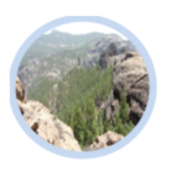
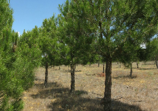
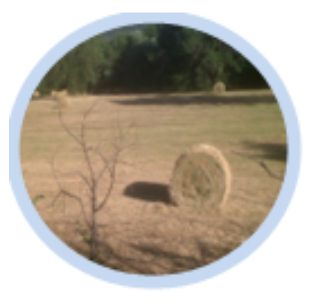
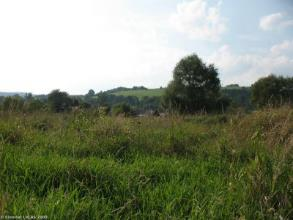
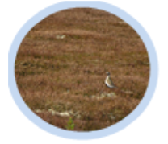
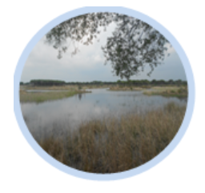
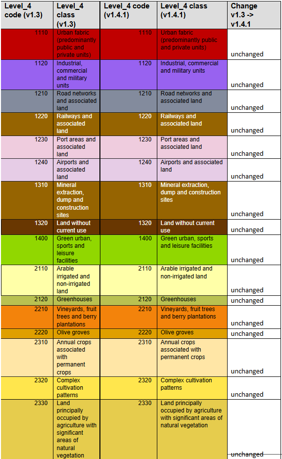
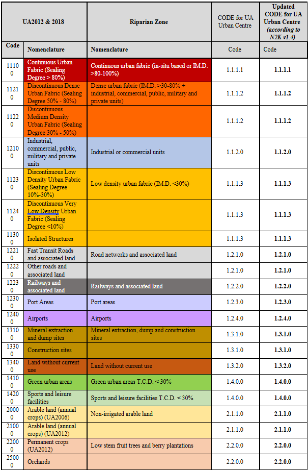

Riparian Zones 2012-2018 - Nomenclature Guideline
Copernicus Land Monitoring Service
Coastal Zones, Land Cover, Land Use, nomenclature guideline, thematic classes, satellite image classification, change detection layer, visual interpretation, object delineation, minimum mapping unit
Contact:
European Environment Agency (EEA)
Kongens Nytorv 6
1050 Copenhagen K
Denmark
https://land.copernicus.eu/
1 Introduction
This document provides a comprehensive Land Cover/Land Use (LC/LU) nomenclature guideline, for the Copernicus Priority Area Monitoring product Riparian Zones (RZ). It covers the detailed description of all LC/LU classes, their geographic characteristics, available input datasets and relevant methods to interpret the respective classes.
2 LC/LU Product Description
The Riparian LC/LU product offers a detailed LC/LU dataset for areas along a buffer zone of selected rivers covering EEA-38 + UK. This product provides a consistent and very-high resolution delineation and characterisation of the Riparian Zones of major and medium-sized rivers for most of Europe and Turkey (i.e. the 38 EEA member and cooperating countries + UK), based on optical 2.5m spatial resolution satellite imagery from the ESA Data Warehouse.
The initial riparian zones map of the Copernicus Local Component (now called Priority Area Monitoring component) was available for more than 550,000 km² of EEA-39 territory and covered modelled buffer areas around selected medium and large size Strahler level 3–8 rivers. The mapping was done for the reference year 2012 with a temporal coverage of input data between 2010 and 2013. The production for Strahler levels 3-8 was finalized in 2015. In 2017/2018 a geographic extension covering buffered Strahler level 2 rivers was performed, extending the total area to 807.177 km².
In 2017 and again in 2020, the nomenclature was revised with the aim to harmonize the products of the local components (mainly Riparian Zones and NATURA 2000 products) while maintaining user requirements for both products. The revision and update of the new RZ nomenclature led to a simplification of some classes, decreasing the CODE level 4 in a coherent and non-redundant way (previous nomenclature: 79 classes / new nomenclature: 55 classes).
The mapping of land cover and land use along a buffer zone of selected areas has as main objective to support the Mapping and Assessment of Ecosystems and their Services (MAES)1, as part of the EU Biodiversity Strategy to 203
Product Specifications of the Land Cover and Land Use Product
| Product Title / Content | Riparian Zones: Land Cover and Land Use Classification within buffer zone of selected rivers. |
|---|---|
| Product Short Name | LCLU |
| Product Definition | The Riparian LC/LU product provides a detailed LC/LU dataset for areas along a buffer zone of selected rivers (Strahler levels 2 to 9) covering EEA38 + UK. |
Input Data Sources
1) Riparian Zones (Str. 2-9)
2) Image Data
| Products | Missions |
|---|---|
| - D2_MG2b_LOLA_011b | - GeoEye1 (2m) |
| - D2_MG2b_NARA_011b | - Pléiades (2.0m) |
| - DAP_MG2b_01 | - SPOT-5 HRG (2.5m) |
| - DWH_MG2b_CORE_03 | - SPOT-6 (1.5m) |
| - DWH_MG2b_GEMS_ADD_003b | - WorldView-2 (1.8m) |
| - VHR_IMAGE_2015 | - Pléiades1A/1B |
| - VHR_IMAGE_2018 | - SuperView-1 |
| - VHR_IMAGE_2018_ENHANCED | - Kompsat3/3° |
| - PlanetScope | |
| - Spot-6/7 (GSD 4m) | |
| - TripleSat | |
| - Deimos-2 |
3) Additional Data
CLC 2012/2018; Urban Atlas 2012/2018; HR Layers Imperviousness Degree and Tree Cover Density; DWH_MG2_CORE_01 Coverage 1 (IRS 20m) & 2 (RapidEye, 5m); Landsat-8; National orthophoto WMS; Google Earth Pro; Bing Maps; Numerous reference data sources.
Methodology
Semi-automatic LC/LU classification of VHR satellite data from the ESA Datawarehouse and computer-assisted visual refinement.
Visual interpretation of LC/LU classes follows the pre-defined nomenclature based on MAES typology of ecosystems (CODE Level 1 to Level 4) and Corine Land Cover.
Subsequently intersection of classification results with additional data (CLC 2012/2018, HRL Imperviousness Degree, HRL Tree Cover Density, Urban Atlas 2012/2018.
Geographic Coverage
EEA-38 + UK (without Azores, Canarias, and French DOMs) plus Andorra and Vatican City: approx. 5,819,516.50 km²
Geographic Bounding Box
| West | North | East | South |
|---|---|---|---|
| -24.532 | 71.185 | 44.819 | 34.562 |
Temporal Reference
Reference Year 2012: 2010–2013
Reference Year 2018: 2017–2020
Geometric Resolution / Equivalent Scale
| Equivalent Scale | Nomenclature |
|---|---|
| 1:10,000 | 55 thematic classes |
Minimum Mapping Unit
| Minimum Mapping Unit | Minimum Mapping Length | Minimum Mapping Width |
|---|---|---|
| 0.5 ha | N/A | 10 m |
Thematic / Positional Product Accuracy
Overall thematic accuracy demanded: > 85%, considering relative occurrence of LC/LU classes.
Positional accuracy: < 5m.
3 Riparian LC/LU Legend
The Nomenclature for the LC/LU dataset is structured into four levels (CODE level 1 to CODE level 4). The LC/LU code levels were designed to correspond to the MAES2 typology of ecosystems.
![| Level 1 | Level 2 | Level 3 | Level 4 | |---|---|---|---| | 1 Urban | 1.1 Urban fabric, industrial, commercial, public, military and private units | 1.1.1 Urban fabric (predominantly public and private units) | 1.1.1.1 Continuous Urban Fabric (IM.D ≥ 80%) | | 1 Urban | 1.1 Urban fabric, industrial, commercial, public, military and private units | 1.1.1 Urban fabric (predominantly public and private units) | 1.1.1.2 Dense Urban Fabric (IM.D ≥ 30-80%) | | 1 Urban | 1.1 Urban fabric, industrial, commercial, public, military and private units | 1.1.1 Urban fabric (predominantly public and private units) | 1.1.1.3 Low Density Urban Fabric (IM.D < 30%) | | 1 Urban | 1.1 Urban fabric, industrial, commercial, public, military and private units | 1.1.2 Industrial, commercial and military units | 1.1.2.0 | | 1 Urban | 1.2 Transport infrastructure | 1.2.1 Road networks and associated land | 1.2.1.0 | | 1 Urban | 1.2 Transport infrastructure | 1.2.2 Railways and associated land | 1.2.2.0 | | 1 Urban | 1.2 Transport infrastructure | 1.2.3 Port areas and associated land | 1.2.3.0 | | 1 Urban | 1.2 Transport infrastructure | 1.2.4 Airports and associated land | 1.2.4.0 | | 1 Urban | 1.3 Mineral extraction, dump and construction sites, land without current use | 1.3.1 Mineral extraction, dump and construction sites | 1.3.1.0 | | 1 Urban | 1.3 Mineral extraction, dump and construction sites, land without current use | 1.3.2 Land without current use | 1.3.2.0 | | 1 Urban | 1.4 Green urban, sports and leisure facilities | 1.4.0 | 1.4.0.0 | | 2 Cropland | 2.1 Arable land | 2.1.1 Arable irrigated and non-irrigated land | 2.1.1.0 | | 2 Cropland | 2.1 Arable land | 2.1.2 Greenhouses | 2.1.2.0 | | 2 Cropland | 2.2 Permanent crops | 2.2.0 | 2.2.0.0 | | 2 Cropland | 2.2 Permanent crops | 2.2.1 Vineyards, fruit trees and berry plantations | 2.2.1.0 | | 2 Cropland | 2.2 Permanent crops | 2.2.2 Olive groves | 2.2.2.0 | | 2 Cropland | 2.3 Heterogeneous agricultural area | 2.3.1 Annual crops associated with permanent crops | 2.3.1.0 | | 2 Cropland | 2.3 Heterogeneous agricultural area | 2.3.2 Complex cultivation patterns | 2.3.2.0 | | 2 Cropland | 2.3 Heterogeneous agricultural area | 2.3.3 Land principally occupied by agriculture with significant areas of natural vegetation | 2.3.3.0 | | 2 Cropland | 2.3 Heterogeneous agricultural area | 2.3.4 Agro-forestry | 2.3.4.0 | | 3 Woodland and forest | 3.0 | 3.0.0 | 3.0.0.0 | | 3 Woodland and forest | 3.1 Broadleaved forest | 3.1.1 Natural & semi-natural broadleaved forest | 3.1.1.0 | | 3 Woodland and forest | 3.1 Broadleaved forest | 3.1.2 Highly artificial broadleaved plantations | 3.1.2.0 | | 3 Woodland and forest | 3.2 Coniferous forest | 3.2.1 Natural & semi-natural coniferous forest | 3.2.1.0 | This table presents a detailed hierarchical Land Cover / Land Use (LCLU) nomenclature, version 1.4.1, dated 2021.04.07, structured into four levels (Level 1 to Level 4) with corresponding codes, designed to align with MAES (Mapping and Assessment of Ecosystems and their Services) typology. The nomenclature includes primary categories for Urban, Cropland, and Woodland and forest, which are further refined into sub-categories down to specific land cover types such as 'Continuous Urban Fabric (IM.D ≥ 80%)' and 'Olive groves'.](Riparian_Zones_2012-2018_Nomenclature_Guideline_v1-media/Capture1.png)
![This table presents a partial view of the hierarchical Land Cover / Land Use (LCLU) nomenclature for the Copernicus Land Monitoring Service (CLMS) Riparian Zones product, structured into four code levels (CODE level 1 to CODE level 4). The table covers main categories from '3 Forest and woodland' (partially shown) to '8 Water'. The table provides the following columns: * **Level 1 Category**: Broad LCLU classification (e.g., Grassland, Wetland). * **Level 2 Code**: Two-digit numeric code for the second classification level (e.g., 4](Riparian_Zones_2012-2018_Nomenclature_Guideline_v1-media/Capture2.png)
![This table presents an extract from a Copernicus Land Monitoring Service (CLMS) Land Cover/Land Use (LC/LU) legend, detailing a hierarchical nomenclature for water-related categories based on a four-level coding system (CODE level 1 to CODE level 4) relevant for the Reference Year 2018. The table shows Level 2, Level 3, and Level 4 codes and descriptions. | Level 2 Category | Level 3 Sub-category | Level 4 Code | |---|---|---| | 8.2 [Description unreadable] | 8.2.4 Standing water bodies of extractive industrial sites | 8.2.4.0 | | 8.3 Transitional waters | 8.3.1 Lagoons | 8.3.1.0 | | 8.3 Transitional waters | 8.3.2 Estuaries | 8.3.2.0 | | 8.4 Sea and ocean | 8.4.0 | 8.4.0.0 | This extract details specific water body types, including different forms of transitional waters and open sea/ocean categories, each assigned a unique hierarchical code. The full nomenclature is designed to correspond to the MAES (Mapping and Assessment of Ecosystems and their Services) typology of ecosystems.](Riparian_Zones_2012-2018_Nomenclature_Guideline_v1-media/Capture3.png)
4 Mapping Rules
Object Delineation:
Object delineation is performed on VHR EO data as primary data source. In areas, where two or more satellite scenes overlap, the most recent scene is chosen as primary data source. In this regard a detailed prioritization system has been established considering especially acquisition year and acquisition month. In cases where clouds or cloud shadows cover the area of interest alternative image data can be used.
Delineation Rules:
Object delineation should be as follows:
Delineation shall be angular and not round.
Avoid digitizing too many vertices: Use vertices as few as possible and only as many as necessary to define the shape of an object.
Avoid to map sharp angles.
Use road centers (roads < 10m width) as border between two objects if roads separate two features. E.g. a forest and an agricultural area are separated by a road feature < 10m width. Map the border between forest and agriculture in the middle of the road.
Minimum Mapping Unit (MMU)/ Minimum Mapping Width (MMW):
The minimum mapping unit defined is ≥ 0.5 ha for all objects. A minimum width of ≥ 10m is required for all linear features.
MMU Exceptions:
Objects located at the border of the riparian zone: If an object is cut but the riparian border and the portion lying inside the RZ therefore is < 0.5 ha, this feature is mapped, if the whole object (inside and outside the RZ) amounts to ≥ 0.5 ha. However, the MMU of those divided features lying inside the RZ must have a MMU of at least ≥ 0.2 ha. Smaller objects will be generalized.
Linear features (roads, railways, rivers) that are split in two or more polygons by other linear elements (e.g. the road/railway network) will be mapped even if the resulting segments are smaller than the MMU in order to preserve the. However, features < 0.1 ha will be generalized.
Objects inside Urban Atlas Core Regions keep their MMU of 0.25 ha and will not be generalized.Urban objects which are confined by roads, railways, or rivers. Features < 0.25 ha will be generalized.
MMW Exceptions:
- To maintain continuity of linear features (Codes 1.2.1.0, 1.2.2.0, 6.2.1.0, 6.2.2.0, 8.1.1.0 and 8.1.2.0); the MMW may fall below the limit of 10 m, over a distance of up to 100 m.
Good Practice for Data Display – Mapping Scale:
On-screen mapping scale is 1:5.000 – 1:10.000 depending on the landscape and feature class. Large homogeneous objects like agricultural areas or woodland are mapped at scales 1:8.000 – 1:10.000. For all other features, 1:5.000 mapping scale is applied.
Overlap Rules:
Objects may not overlap. In case of real objects overlay, the following rules apply:
If objects overlap on different levels, the top level is mapped.
Example: if an artificial canal overlaps a river, the canal is mapped continuously.If objects overlap on the same level, the visually dominant object is mapped continuously. However, if roads and railways meet on the same level, railways are mapped continuously to maintain the railway network.
Priority Rules:
The priority rules applied are defined as follows:
Objects < 0.5 ha are added to the neighboring object with the next lesser number of the same sub-class.
Objects < 0.5 ha are added to the neighboring object of the same upper class.
Objects < 0.5 ha are added to the neighboring object with the longest common border line.
Exception: Objects surrounded by railways or roads.
If an object is below the MMU size and completely surrounded by a road or railway network, it shall be aggregated with that surrounding traffic line. However, an exception is made for urban objects. Please see respective definition with Class 1.x.x.x.
Application of Additional Data Sources:
For data interpretation, additional data sources like CORINE Land Cover (CLC) 2012/2018, Urban Atlas (UA) 2012/2018, topographic maps, national WMS services, COTS navigation data and auxiliary data including local expertise is used.
UA2012/2018: UA data are integrated in the RZ data set, where UA Core regions are located inside the RZ. In that case, MMU of all UA objects is kept; however class codes are recoded (as far as possible).
Outside UA Core regions, UA data are used as important data source for class delineation and class interpretation. Thus, interpreting the same areas twice is avoided and data compatibility between UA and RZ is guaranteed.
HRL Imperviousness Degree:
HR Impervious Degree Layer is used to support impervious degree derivation of urban classes. IM.D. is determined by either visual interpretation based on EO data and Impervious Degree Layer or derived by an automatic routine based on IM.D. Layer and road segments.
HRL Tree Cover Density:
HR Forest Layer is applied to support Tree Cover Density classification. The classification is performed by either visual interpretation based on EO data and HR Forest Layer or derived by an automatic routine based on HR Forest Layer and forest segments.
CLC2012/2018:
CLC2012/2018 is used as important data source for class assignment. CLC data use ensures data compatibility between CLC and RZ.
Landsat-8/5 data sets:
For critical classes, Landsat-8/5 data are used as additional data source. They are primarily used to support cropland/grassland differentiations and to detect irrigated areas, as in those cases, mono-temporal data analysis will not provide reliable results. Landsat-8/5 time series of summer images are collected for irrigated areas and images acquired in late summer/autumn/spring are used for grassland identification.
In-situ data:
Diverse national in-situ data like WMS services, specific maps or classifications as well as descriptions and maps of N2000 or RAMSAR site are used to support the object interpretation.
Standard Comments:
In order to clarify certain mapping delineations, there are some comments defined as product attributes.
| Description; Note | Comment |
|---|---|
| External Border: | "Area size exception (at RZ_AoI / UA Core Region boundary)" |
| Polygons < 0.5ha at AOI boundary or Urban Atlas Core Region (polygons have shared line segment(s) with RZ_AOI boundary or UA Core Region). Only polygons outside UA Core Regions are considered. |
|
| Internal Border: | "Area size exception (at shared line between RZ_AoIs of Str. 3-8 and Str. 2)" |
| Objects between existing AOI (Str. 3-8) and the new AoI (Str. 2) < 0.5 ha and if the whole object (in the existing AOI and in the new AOI) amounts ≥ 0.5 ha. Preservation of the geometry is necessary to keep for a seamless product. |
|
| Applies only for Strahler level 2 product, not for combined and seamless product. | |
| Polygons < 0.5 ha inside RZ_AOI (for communicated exceptions only). | "Area size exception (inside RZ_AoI / outside UA Core Region)" |
| Only polygons outside UA Core Regions are considered. | |
| Urban Atlas: | "UA2012_core_regions_update (name of update source)" |
| UA2012/2018 data inside UA2012/2018 Core Region. Exception for UA2012 data captured in updated UA2012 Core Region limits (not identical to URAU_2012_RG.shp). |
|
| For areas completely or partially flooded by water (flooded land). | "Flooded area" |
| Only polygons outside UA Core Regions are considered. | |
| Different water levels when comparing image data taken during flooding situations and “normal” water level. | "Different water levels" |
| The water level of the “normal” situation should be used for delineation. | |
| For rivers or parts of rivers where the watercourse channel type is “braided river”. | "Braided river" |
| Only polygons outside UA Core Regions are considered. | |
| For river banks that are crossed by side arms of a river. | "Braided river" |
| Only polygons outside UA Core Regions are considered. | |
| Gaps between Urban Atlas data and the layer defining Core Regions (URAU_2012_RG_C/UA core region). | “Adjusted data of UA core region” |
| The gap is not in contact with the regular RZ mapping. |
5 Description of Mapping Features
The following chapters describe the nature of all RZ LC/LU mapping classes in detail.
1 Urban

The urban classes contain land that is covered by building structures and transport network. Urban fabrics appear in blue and darkish blue-grey on satellite images.
The establishment of the boundary between continuous, dense and low density urban fabric can be difficult to delimit. The main aspects to determine these classes are either by the presence and quantity of vegetation, or by the use of the IM.D HRL.
From the UA Mapping Guide:
Surfaces with dominant human influence but without agricultural land use. These areas include all artificial structures and their associated non-sealed and vegetated surfaces.
Artificial structures are defined as buildings, roads, all constructions of infrastructure and other artificially sealed or paved areas.
Associated non-sealed and vegetated surfaces are areas functionally related to human activities, except agriculture.
Also, the areas where the natural surface is replaced by extraction and/or deposition or designed landscapes (such as urban parks or leisure parks) are mapped in this class.
The land use is dominated by permanent population.
Specific generalization/delineation rules are applied for urban classes:
Segments of roads, rivers and railways < 0.5 ha, that are necessary to represent the “network” of each feature will be mapped. Features < 0.1 ha will be generalized.
Urban objects confined by roads or railways ≥ 0.25 up to < 0.5ha. Smaller urban objects will be generalized.
If an infrastructure line is crossing a river, the bridge has to be mapped if the bridge is wider than 10 meters.
Specific generalization rules are applied to 1.1.1.3 Low density fabric (IM.D <30%) class (see description of the specific class).
This category includes:
1.1 Urban fabric, industrial, commercial, public, military and private units
Urban fabric contains land covered by artificial structures and transport networks. Industrial or commercial units are almost completely covered by artificial surface.
1.1.1 Urban fabric (predominantly public and private units)
1.1.1.1 Continuous Urban fabric (IM.D ≥80%)
1.1.1.2 Dense urban fabric (IM.D ≥30-80%)
1.1.1.3 Low density urban fabric (IM.D <30%)
1.1.2 Industrial, commercial and military units
- 1.1.2.0 Industrial, commercial and military units
- 1.1.2.0 Industrial, commercial and military units
1.2 Transport infrastructure
Motorways, roads and railways with its associated land and installations are included in this class if width >10 m. Airports and port areas with installations and associated land are included. If an infrastructure line is crossing a river, the bridge has to be mapped if the bridge is wider than 10 m.
1.2.1 Road networks and associated land
- 1.2.1.0 Road networks and associated land
- 1.2.1.0 Road networks and associated land
1.2.2 Railways and associated land
- 1.2.2.0 Railways and associated land
- 1.2.2.0 Railways and associated land
1.2.3 Port areas and associated land
- 1.2.3.0 Port areas and associated land
- 1.2.3.0 Port areas and associated land
1.2.4 Airports and associated land
- 1.2.4.0 Airports and associated land
- 1.2.4.0 Airports and associated land
1.3 Mineral extraction, dump and construction sites, land without current use
Dump sites include public, industrial or mine dump sites. Construction development, soil and bedrock excavations and earthwork are included in this class. Land without current use is land that is in transitional phase and it is included in urban areas.
1.3.1 Mineral extraction, dump and construction sites
- 1.3.1.0 Mineral extraction, dump and construction sites
- 1.3.1.0 Mineral extraction, dump and construction sites
1.3.2 Land without current use
- 1.3.2.0 Land without current use
- 1.3.2.0 Land without current use
1.4 Green urban, sports and leisure facilities
Green urban areas are areas with vegetation within the urban fabric and it includes parks. Sports and leisure facilities are included (camping grounds, sport grounds, leisure parks, golf courses, race courses, etc.). It also comprises parks not surrounded by urban areas.
1.4.0 Green urban, sports and leisure facilities
- 1.4.0.0 Green urban, sports and leisure facilities
1.1.1.1 Continuous Urban Fabric (IM.D ≥80%)
Definition
Buildings and its associated land together with artificial surfaced areas covers more than 80% of the total surface. Non-linear areas of vegetation and bare soil are exceptional.
The average degree of soil sealing is ≥ 80% for the whole compound.
![A photograph depicting a dense urban or suburban landscape dominated by multi-story residential buildings under an overcast sky. The background features several buildings with dark grey, steeply pitched roofs and numerous dormer windows. Their facades are painted in pastel shades of pink, light blue, and light green. In the foreground and midground, there are buildings with lighter-coloured facades and reddish-brown tiled roofs, interspersed with some trees and vegetation. No text, labels, or temporal context are visible within the image. This scene visually represents an area of 'Continuous Urban Fabric'.](Riparian_Zones_2012-2018_Nomenclature_Guideline_v1-media/image10.jpeg)
![A ground-level photograph depicts a narrow, paved urban street or alleyway. Multi-story residential-style buildings line both sides, featuring weathered facades with visible signs of age and some peeling paint. Balconies are present on some buildings, with laundry hanging from clotheslines on the right side of the street. Small vehicles, possibly scooters or motorcycles, are visible on the pavement. The sky appears overcast. This scene represents a densely built-up urban environment, consistent with the definition of 'Continuous Urban Fabric' where artificial surfaces and buildings dominate the land cover.](Riparian_Zones_2012-2018_Nomenclature_Guideline_v1-media/image11.jpeg)
This category includes:
Built-up areas and their associated land with dominant residential use; mostly inner-city areas with central business district as long as there is partial residential use.
Buildings, roads and sealed areas cover most of the area; non-linear areas of vegetation and bare soil.
This category excludes:
- 1.1.2.0 Industrial, commercial and military units; 1.1.1.2 Dense urban fabric (IM.D ≥30-80%); and 1.1.1.3 Low Density urban fabric (IM.D<30%).
Attributes:
- N/A
Appearance:
Urban fabric appears in blue or dark blue /grey colours on satellite images.
Distinguishing between different levels of urban fabric has to be done with help of IM.D HRL.
![False-colour infrared satellite image illustrating land cover/land use classification polygons for an urban area in Tallinn, Estonia. The base imagery depicts vegetation in red, urban structures and roads in light blue/grey, and water bodies in dark blue/black. Overlaid on the imagery are delineation polygons, primarily in yellow and cyan, with green numerical labels indicating specific land cover classes. Purple lines are also present, often associated with linear features over the river. Key labelled features and their codes include: - `1110`: Represents 'Continuous Urban Fabric' with an Imperviousness Density (IMD) of ≥80%, identified in dense built-up areas delineated by both cyan and yellow polygons, such as the central city blocks north and south of the river. - `1111`: Identifies other dense urban areas. - `1210`: Marks the main river body. - `1310`: Appears near a bridge structure. - `1400`: Designates an area likely containing mixed urban features or open spaces, including a stadium, within a yellow polygon. - `3110`: Labels a vegetated area in the northern part of the map, outside the immediate urban core. - `9110`: Follows purple lines that mark bridges and their approaches across the river, indicating transport infrastructure. This map serves as a visual example for the Copernicus Land Monitoring Service (CLMS) nomenclature guidelines, specifically demonstrating the classification of 'Continuous Urban Fabric (IM.D ≥80%)' and other associated land cover types.](Riparian_Zones_2012-2018_Nomenclature_Guideline_v1-media/image12.png)
![A false-colour infrared aerial or satellite image displaying an urbanized coastal landscape. Vegetation, including trees and grass, appears in bright red, indicating high infrared reflectance. Impervious surfaces such as buildings and roads are rendered in shades of grey. The lower right portion of the image is dominated by a dark blue/black water body, likely a bay or harbour, featuring several piers and visible boats. A distinct light blue line delineates a specific irregularly shaped area within the dense urban fabric, encompassing buildings, roads, and some red-coloured vegetation. A fainter, thin green line also traces the edges of vegetated areas, particularly along the water's edge and the outer perimeter of the urban settlement.](Riparian_Zones_2012-2018_Nomenclature_Guideline_v1-media/image13.png)
![This map displays detailed false-colour infrared (FCIR) satellite imagery of a coastal or lakeside landscape, overlaid with pixelated thematic data and vector boundaries. The base imagery shows vegetation in reddish-pink (e.g., top-left), water bodies in very dark blue/black (bottom centre-left), and developed or urban areas in lighter, yellowish-beige tones (top-left, bottom-left). A pixelated thematic layer, ranging from dark reddish-brown to lighter yellowish-brown, is overlaid on the base imagery. Darker reddish-brown pixels cover a significant central area, while lighter yellowish-brown pixels are scattered throughout. A prominent cyan (turquoise) line outlines a large, irregular polygon, which encompasses a substantial portion of the dark reddish-brown pixelated area and includes internal segments. Green dashed lines are visible in the lower-left and lower-right portions of the map, and some dotted lines extend from the cyan polygon. No legend, scale bar, compass, or specific geographic location is provided.](Riparian_Zones_2012-2018_Nomenclature_Guideline_v1-media/image14.png)
Methodological Advice:
If local in-situ data other than UA available, use if suitable.
IM.D HRL has to be used outside UA Core, for delineation support.
For interpretation of urban density: Use IM.D HRL.
1.1.1.2 Dense Urban Fabric (IM.D ≥30-80%)
Definition:
Predominant residential usage contains more than 30% non-sealed areas, independent of the housing scheme (single family houses or high-rise dwellings, city centre or suburb). The non-sealed areas might be private gardens or common green areas.
The average degree of soil sealing is > 30-80% for the whole compound.
![A ground-level photograph depicting a residential street scene, likely in a suburban or exurban area. The image shows a row of detached houses with white siding and light-coloured, possibly tiled, roofs. In the foreground, a paved sidewalk made of brick-like pavers runs parallel to a neatly trimmed green hedge. Beyond the hedge are small green lawns in front of the houses. A dark-coloured car is partially visible, parked in a driveway behind one of the hedges. To the left, a light-coloured mailbox is mounted on a pole, next to a wooden-slatted outdoor utility box with a green top. A road and trees are visible further left in the background. The scene suggests a relatively dense urban fabric with a mix of impervious surfaces (sidewalk, road, house footprints) and pervious green areas (lawns, hedges, trees). The context implies this photo is an example of urban fabric, potentially illustrating 'Dense Urban Fabric' (CORINE Land Cover Class 1.1.1.2) with an Imperviousness Density (IM.D) between 30-80%, as discussed in the surrounding document for land cover classification in Norway.](Riparian_Zones_2012-2018_Nomenclature_Guideline_v1-media/image15.jpeg)
![A ground-level photograph showing a residential urban area. A paved road occupies the foreground, leading towards a cluster of multi-storey residential buildings in the background. On the right side of the road, a yellow-curbed grass verge is visible, while on the left, a green fence separates the road from a grassy slope with trees. The residential buildings feature red and yellow facades. The sky is clear blue. This image is a ground reference photograph consistent with the definition of 'Dense Urban Fabric' (CORINE Land Cover Class 1.1.1.2), where Imperviousness Density (IM.D) is typically between 30% and 80%. Such images are used for photo-interpretation and validation of Copernicus Land Monitoring Service (CLMS) products like the High Resolution Layer (HRL) Imperviousness Density (IM.D).](Riparian_Zones_2012-2018_Nomenclature_Guideline_v1-media/image16.jpeg)
This category includes:
- Predominant residential usage. Contains more than 30% non-sealed areas, independent of their housing scheme (single family houses or high-rise dwellings, city centers or suburb).
This category excludes:
Nurseries with dominant areas of greenhouses (no or only small fields) → class 2.1.2.0 Greenhouses.
Allotment gardens → class 1.4.0.0 Green urban, sports and leisure facilities.
Holiday villages (“Club Med”) → class 1.4.0.0 Green urban, sports and leisure facilities.
Attributes:
- N/A
Appearance:
![False-colour satellite image of Lunde, Norway, acquired by SPOT-5 (2.5m resolution) on 2012-08-11, showing different Copernicus Land Monitoring Service (CLMS) land cover classifications. The image uses a 1/2/3 band combination, where areas with high vegetation (e.g., trees, grass) appear in bright red, while impervious surfaces like buildings and roads appear in shades of grey-blue. Thick black lines delineate distinct land cover classes, which are identified by numerical codes: * **1111**: Located in the bottom-left corner, likely representing 'Continuous urban fabric' (typically defined as Imperviousness Density (IMD) >80%). This area appears as a dense concentration of grey-blue structures with minimal visible vegetation. * **1112**: Dominates the central and right portions of the image, representing 'Dense urban fabric' (defined as IMD ≥30-80%). This area shows a network of grey-blue streets and buildings interspersed with significant patches of bright red vegetation, indicating private gardens or common green areas. * **1400**: Located on the mid-left side, representing 'Green urban, sports and leisure facilities.' This area is predominantly bright red, indicating extensive vegetation cover, and clearly includes a sports stadium with a red track and a green field. * **1210**: Located in the top-left corner, partially visible, likely representing 'Industrial, commercial and transport units' (e.g., CORINE Land Cover (CLC) class 1.2.1.0). The image visually demonstrates the application of CLMS land cover classification guidelines to differentiate urban and green areas based on their visual appearance in high-resolution satellite data. The data source is CNES 2011©.](Riparian_Zones_2012-2018_Nomenclature_Guideline_v1-media/image17.png)
![This map displays a False Colour Infrared (FCIR) satellite or aerial image of an urban area bordered by a dark blue body of water, likely a river, at the top. Healthy vegetation appears bright red, prominently along the riverbanks and surrounding the settlement. Impervious surfaces such as buildings and roads in the urban core are depicted in shades of grey and white. A prominent linear feature, likely a road or railway, runs diagonally through the western part of the urban area. Overlaid on the imagery are two sets of vector lines: light blue polygons delineate specific urban blocks or developed zones within the settlement, and thin green lines outline larger, irregular land parcels, including areas along the river and encompassing the broader urban and vegetated landscape. No scale bar, compass, legend, or reference year is visible.](Riparian_Zones_2012-2018_Nomenclature_Guideline_v1-media/image18.png)
![The image displays false-colour satellite imagery of a landscape featuring a dark blue river winding through the upper portion. Vegetated areas appear in shades of red, indicating the use of near-infrared bands, while other features appear in greens, browns, and lighter tones. Overlaid on this background imagery is a gridded thematic data layer, represented by square pixels. These pixels exhibit a gradient of brown colours, ranging from light beige to dark reddish-brown, where darker shades indicate higher values and lighter shades indicate lower values. The specific meaning or units of these values are not provided as no legend is present. Two light blue (cyan) polygons outline a large, irregular area in the central-left, with a smaller, partially overlapping polygon inside. Additionally, several green dashed lines indicate smaller boundaries, likely agricultural parcels or fields, particularly on the left side of the image. There is no scale bar, compass, or specific geographic label visible.](Riparian_Zones_2012-2018_Nomenclature_Guideline_v1-media/image19.png)
Methodological Advice:
If local in-situ data other than UA available, use if suitable.
IM.D HRL has to be used outside UA Core, for delineation support.
For interpretation of urban density: Use IM.D HRL.
1.1.1.3 Low Density Urban Fabric (IM.D <30%)
Definition:
Low density urban fabric contains residential buildings, roads and other artificially surfaced areas. The vegetated areas are predominant, but the land is not dedicated to forestry or agriculture.
The average degree of soil sealing is < 30% for the whole compound.
The build-up areas adjacent to small farms will be included in this class.
![A photograph illustrating 'Low density urban fabric' (classification 1.1.1.3) with an Imperviousness Density (IM.D) of less than 30%, located in Costa del Sol, Spain. The image depicts a narrow, unpaved road, likely dirt or gravel, receding into the distance. A child on a bicycle is riding away from the viewer along the road. The road is bordered on both sides by dense, green hedges and mature trees. Several houses are visible in the background; one on the right has light yellow-brown siding and a reddish roof, partially obscured by greenery. The scene presents a predominantly vegetated area with residential buildings and artificially surfaced areas, characteristic of low-density development where the average degree of soil sealing is below 30%. Credits: M. Palacios.](Riparian_Zones_2012-2018_Nomenclature_Guideline_v1-media/image20.jpeg)
![A photograph depicting a heart-shaped swimming pool with light blue water, set within a green lawned garden. The pool is surrounded by light-coloured paving. In the background, white residential buildings with red tiled roofs are visible, alongside trees including a tall palm tree on the left. White lounge chairs are positioned on the grass and next to the pool. This image exemplifies the land cover class 'Low density urban fabric (Imperviousness Density (IM.D) <30%)', where vegetated areas are predominant, and the average degree of soil sealing is less than 30%.](Riparian_Zones_2012-2018_Nomenclature_Guideline_v1-media/image21.jpeg)
This category includes:
Residential buildings, roads and other artificially surfaced areas. The vegetated areas are predominant, but the land is not dedicated to forestry or agriculture.
Build-up areas on small farms.
This category excludes:
- Allotment gardens → 1.4.0.0 Green urban, sports and leisure facilities.
Attributes:
- N/A
Appearance:
![A false-colour infrared satellite map displays a rural landscape, likely showing vegetation in shades of red and less vegetated areas or bare soil in lighter tones of brown and grey. A winding dark feature, appearing as a river or stream, runs through the central and lower-right parts of the image, with a dark oval-shaped water body (pond) visible adjacent to it. Thin green lines overlay the imagery, delineating various land parcels, which likely represent different land cover / land use (LCLU) classes such as agricultural fields, forest patches, and open land. Prominent cyan (light blue) outlines highlight individual buildings or small clusters of buildings scattered across the landscape, indicating areas of impervious surface. No geographic labels, scale, legend, or date information is visible.](Riparian_Zones_2012-2018_Nomenclature_Guideline_v1-media/image22.png)
![The image is a false-colour infrared (FCIR) satellite map showing a vegetated landscape with a river. The underlying satellite imagery displays dense vegetation in shades of deep red and maroon, suggesting healthy biomass, while a river appears as a dark blue/black band running horizontally across the lower part of the map. Lighter, more disturbed land or bare soil patches are also visible. Overlaid on this imagery is a pixelated grid displaying data in a colour gradient from light yellow to dark reddish-brown. These pixels are distributed across the land area, with lighter yellow pixels appearing more scattered and darker reddish-brown pixels tending to cluster, often associated with what appear to be built-up areas or infrastructure in the underlying imagery. Several irregular polygonal zones are delineated by thick light blue outlines, enclosing many of the areas with denser, darker pixel overlays. Additionally, thin green lines delineate other boundaries, particularly along the river and surrounding some vegetated areas. No legend, scale bar, compass, or specific geographic location labels are visible.](Riparian_Zones_2012-2018_Nomenclature_Guideline_v1-media/image23.png)
![False-colour infrared satellite imagery from SPOT-5 (2.5m resolution) depicting a landscape classified as 'Class 1.1.1.3 Low Density Urban Fabric.' The image displays a patchwork of rectangular agricultural fields in various shades of reddish-purple and turquoise, indicating different vegetation types or growth stages. Scattered throughout the fields are individual buildings and small clusters of buildings, many of which are delineated by yellow outlines and labelled '1.1.1.3'. A winding river or stream flows across the lower portion of the image, bordered by dense, bright red vegetation characteristic of healthy foliage in false-colour infrared. Thin linear features, likely roads or paths, are visible traversing the agricultural areas. The imagery is part of a CLMS CORINE Land Cover (CLC) nomenclature guideline, with a similar image noted to be from 2012-08-11.](Riparian_Zones_2012-2018_Nomenclature_Guideline_v1-media/image24.png)
![This is a Copernicus Land Monitoring Service (CLMS) land cover classification map showing a coastal area, likely in Norway (consistent with surrounding document context), based on SPOT-5 satellite imagery from 2012-08-11. The base imagery uses a 1/2/3 Band Combination (false colour infrared) at 2.5m resolution, where healthy vegetation appears in shades of red, impervious surfaces (buildings) are white, and water bodies are dark blue/black. Overlaid are yellow-outlined polygons representing distinct land cover classes with numerical labels. The identified classes are: * **Class 1113 (Low Density Urban fabric)**: Visible as multiple polygons, predominantly in the northwestern and southwestern parts of the mapped area. These areas are characterized by scattered white features (buildings or artificially surfaced areas) set within a matrix of reddish vegetation. The surrounding context confirms this is 'Class 1.1.1.3 Low Density Urban fabric.' * **Class 4100**: Appears in two distinct polygons; one north of the central water body and another along the western coast, often bordering Class 1113 areas. These polygons show continuous reddish vegetation, suggesting natural or semi-natural vegetated areas adjacent to water and urban fabric. * **Class 3110**: A large polygon in the eastern inland section of the map, displaying extensive, uniform reddish vegetation, indicative of a dense forest or natural vegetated area. The map illustrates the spatial distribution of these land cover types across a heterogeneous coastal landscape, showing urbanized pockets interspersed with vegetated areas and a prominent water body. The source of the imagery is CNES 2011©, Distribution Airbus DS/Spot Image.](Riparian_Zones_2012-2018_Nomenclature_Guideline_v1-media/image25.png)
MMU Exceptions:
Exceptions from MMU >0.5 ha are made for “1.2.1.0 road network” and “1.2.2.0 railway” in order to keep the network formed by these linear features (always with 0.1 ha < MMU < 0.5 ha).
Further exception is all urban elements being confined by rails, roads or rivers. In those cases urban features up to a MMU of 0.25 ha are kept and flagged with comments (“Area size exception”).
MMW Exceptions:
- To maintain continuity of linear features (1.2.1.0 / 1.2.2.0 / 6.2.1.0 / 6.2.2.0 / 9.1.1.0 / 9.1.2.0), the MMW may fall below the limit of 10 m over a distance of up to 100 m.
Methodological Advice:
If local in-situ data other than UA available, use if suitable.
IM.D HRL has to be used outside UA Core, for delineation support.
For interpretation of urban density: Use IM.D HRL.
Generalisation Rules:
If a strict MMU >0.5 ha mapping of class 1.1.1.3 is applied, the low urban density areas would be underestimated. Therefore, to get a good representation of the area, the following generalisation rules will be adopted:
Do not apply the 10 m MMW distance rule at the urban fringe but apply a < 50m MMW to generalize outline.
Include private gardens.
Avoid mapping of single urban segments.
Map the “whole structure”.
Close gaps at the urban fringe applying a maximum width of 50 m.
In any case, real agricultural/grassland parcel contained within urban surroundings, will be mapped as agricultural/grassland.
![Geographic map illustrating the application of land cover generalization rules to scattered urban areas using infrared satellite imagery. The imagery depicts vegetation in red hues, and artificial surfaces (buildings, roads) in shades of blue and grey. Several land cover features are outlined in yellow, representing the mapped polygons. Three labeled polygons correspond to CORINE Land Cover (CLC) class codes: - '1111' delineates an elongated urban fabric area, running along a linear feature (likely a road), incorporating scattered buildings and their associated private gardens. - '2320' identifies a larger artificial surface unit, possibly an industrial or commercial area, situated towards the top-right. - '3110' indicates a broad-leaved forest area located in the far top-right corner, appearing as dark red. Blue arrows indicate distances between urban segments: one points to a gap identified as '< 50 m', illustrating an area where urban features would be generalized and connected into a single mapped urban feature according to the generalisation rules. Another arrow points to a gap identified as '> 50 m', indicating a distance where urban features might remain separate polygons. The map visually demonstrates the Copernicus Land Monitoring Service (CLMS) CLC+ (next-generation land cover/land use) mapping guidelines for including private gardens, connecting single urban blocks, and closing gaps of less than 50 meters at the urban fringe. A blue line at the top of the image appears to be a water body. No scale bar, compass, legend, or explicit reference year is visible.](Riparian_Zones_2012-2018_Nomenclature_Guideline_v1-media/image26.png)
![This map illustrates the generalized delineation of a low-density urban fabric area, corresponding to class 1.1.1.3, in Poland, using SPOT-5 satellite imagery from 2011-07-23. The imagery, acquired with a 2.5 m resolution and a 1/2/3 band combination, is presented in false-colour infrared, where vegetation appears red and built-up areas or bare soil appear light cyan/white. The image is composed of three sequential panels. The left panel displays the original high-resolution satellite imagery, showing a rural settlement with scattered buildings along a road, surrounded by agricultural fields. The middle panel shows the initial land cover (LCLU) classification with green outlines. Several CORINE Land Cover (CLC) classes are labelled: 3110 (Forests), 4100 (Inland wetlands), 2210 (Arable land), 1111 (Urban fabric), and 1112 (Industrial or commercial units, likely low density). A scale bar indicates a length of 30 m. Yellow arrows highlight areas where individual structures and private gardens are being interpreted for generalization. This stage applies initial mapping to include private gardens and avoid mapping single urban segments. The right panel is a magnified view of a section, demonstrating the final generalized outline for urban fabric (1111). The green outline is smoother and encompasses previously separate structures and interstitial spaces, effectively closing gaps at the urban fringe with a maximum width of 50 m to map the 'whole structure' for cartographic representation. The yellow arrow points to this generalized urban area.](Riparian_Zones_2012-2018_Nomenclature_Guideline_v1-media/image27.png)
![This image, an example from Poland, presents a side-by-side comparison of SPOT-5 satellite imagery (2.5m resolution, 1/2/3 Band Combination) from 2011-07-23. It illustrates the generalized delineation of a low-density urban fabric area, specifically class 1.1.1.3. The left panel shows the raw false-colour composite imagery, depicting scattered buildings and a road network (appearing cyan/white) amidst reddish-brown agricultural fields and green vegetation. The right panel shows the same imagery with green polygon outlines that represent the generalized mapping of urban areas according to specific rules, including the inclusion of private gardens. These outlines encompass individual buildings and connect adjacent urban segments to form continuous areas. Yellow arrows indicate 'gaps' at the urban fringe that have been closed to generalize the outline, as per the methodological advice. Numerical labels '1.1.1' and '1.1.1.3' are visible in yellow text within some of the delineated urban areas in the right panel, denoting the specific land cover class. The source is CNES 2011©, Distribution Airbus DS/Spot Image.](Riparian_Zones_2012-2018_Nomenclature_Guideline_v1-media/image28.png)
![The map illustrates the generalized delineation of a low density urban fabric area in Poland using false-colour SPOT-5 satellite imagery with 2.5 m resolution, captured on 2011-07-23. The imagery uses a 1/2/3 Band Combination. Vegetation appears in shades of red, while urban structures and roads are visible in blue/grey/white tones. A yellow polygon outlines the urban fabric area, corresponding to CORINE Land Cover (CLC) class 1.1.1.3 (labelled as '1111' within the polygon). The map demonstrates generalization rules for land cover mapping: * Gaps larger than 50 m, indicated by an arrow labelled '> 50 m' on the left, separate distinct urban segments that are not merged into a single delineation. * Gaps smaller than 50 m, indicated by arrows labelled '< 50 m' within the polygon, are included in the urban delineation to connect scattered urban blocks, following the rule to close gaps with a maximum width of 50 m. * An area labelled '2321' is visible in the surrounding agricultural landscape, which is explicitly excluded from the urban delineation. The source is CNES 2011©, Distribution Airbus DS/Spot Image.](Riparian_Zones_2012-2018_Nomenclature_Guideline_v1-media/image29.png)
![This map displays an example of generalized delineation of a low-density urban fabric area (class 1.1.1.3) in Poland, based on SPOT-5 (2.5m resolution, 1/2/3 Band Combination) satellite imagery from 2011-07-23. The left panel shows the raw false-colour infrared satellite imagery with three yellow ellipses highlighting scattered urban elements, private gardens, and small agricultural parcels requiring generalization. The right panel displays the result of applying Copernicus Land Monitoring Service (CLMS) generalization rules, where land cover/land use (LCLU) classes are delineated by polygons. The classified polygons are labelled with four-digit codes: * **Yellow-outlined polygons:** * **2110:** Represents Non-irrigated arable land. * **1120:** Represents Discontinuous urban fabric or similar low-density built-up areas. * **1210:** Represents Industrial or commercial units, or other specific artificial surfaces. * **1913:** Represents a linear artificial surface, likely associated with transport infrastructure. * **Magenta-outlined polygons:** * **4100:** Represents agricultural/grassland parcels, which are explicitly mapped as such even when contained within urban surroundings according to the generalization rules. * **3410:** Represents areas of natural vegetation, likely forest or scrubland. The applied generalization rules include closing gaps at the urban fringe with a maximum width of 50 m, avoiding mapping of single urban segments, including private gardens, and mapping the 'whole structure' of urban areas while excluding large agricultural areas (width > 50 m) at the urban border. The imagery source is CNES 2011©, distributed by Airbus DS/Spot Image.](Riparian_Zones_2012-2018_Nomenclature_Guideline_v1-media/image30.png)
Use of Auxiliary Data:
If UA is available, keep the outline and just correct real errors. “Fine-tuning” of the class borders is not necessary.
![A false-colour infrared satellite map of an area in Poland, acquired on 2011-07-23 by SPOT-5 (2.5m resolution, 1/2/3 Band Combination), illustrating the application of generalization rules for Copernicus Land Monitoring Service (CLMS) Land Use / Land Cover (LULC) mapping, specifically for low-density urban fabric. The background satellite imagery shows vegetation in shades of red and cultivated areas in lighter green/red strips, with impervious surfaces appearing bluish-green. Overlaid yellow polygons delineate different land cover classes, indicated by numeric codes: - **1111:** Represents continuous urban fabric, including residential areas and associated gardens. - **1120:** Represents discontinuous urban fabric, indicating less dense urbanized areas. - **2110:** Represents arable land, visible as long, distinct cultivated fields. - **3310:** Represents a forest or dense vegetation patch. - **4100:** Represents agricultural land or grassland, including larger parcels interspersed with urban areas. The map demonstrates how generalization rules are applied to connect single urban blocks, include private gardens within urban class boundaries, and close gaps of less than 50 meters to provide a cartographically representative outline of urban areas. Larger agricultural areas (width > 50 m) at the urban border are excluded from the urban classification. Source: CNES 2011©, Distribution Airbus DS/Spot Image.](Riparian_Zones_2012-2018_Nomenclature_Guideline_v1-media/image31.png)
If OSM delineation is too precise, please correct real errors and perhaps parts of the outline.
![A false-colour infrared satellite image from SPOT-5 (2.5m resolution, 1/2/3 Band Combination, 2011-07-23, Source: CNES 2011©, Distribution Airbus DS/Spot Image) showing two views of a rural/peri-urban landscape in Poland. The left panel displays the initial, more fragmented delineation of land cover polygons, while the right panel shows the same area after applying generalization rules for scattered urban areas. On both panels, yellow polygons delineate land cover classes: * `1111`: Urban fabric (specifically described as low density urban fabric area, class 1.1.1.3 in context). * `2110`: Arable land. * `4100`: Pastures/Grassland. In the left panel, two black arrows highlight areas of agricultural/grassland (`2110` and `4100`) that are initially delineated separately but are surrounded by or adjacent to `1111` urban fabric. These represent 'gaps' or 'single blocks' in the initial mapping. The right panel demonstrates the result of generalization: * The `1111` urban fabric polygons are consolidated and smoothed, integrating smaller adjacent features. * The `4100` pasture/grassland polygon shown in the left panel is no longer delineated as a separate entity; it has been absorbed into the larger `1111` urban fabric polygon, reflecting the rule that 'gaps of less than 50 meters are generalized and single blocks are connected'. * Boundaries of all polygons, including `2110` arable land, are simplified. The generalized mapping ensures that private gardens and small gaps are included in urban areas, while larger agricultural parcels (width > 50 m) at the urban border remain excluded.](Riparian_Zones_2012-2018_Nomenclature_Guideline_v1-media/image32.png)
1.1.2.0 Industrial, Commercial and Military Units
Definition:
This category contains industrial, commercial and military units. The administrative border and associated areas, such as roads, sealed areas and vegetated areas are included, if these areas are below the MMU. It also contains public, military and private services.
At least 30% of the ground is covered by artificial surfaces. More than 50% of those artificial surfaces are occupied by buildings and/or artificial structures with non-residential use, i.e. industrial, commercial or carriage related uses are dominant.
The texture is homogenous with large buildings, car parks and sheds representing industrial or commercial complexes. Industrial or commercial units located in urban fabric are only taken into account if they are clearly distinguishable from residential areas.
![A ground-level photograph depicts a bustling urban street scene on a sunny day. In the background, a large, light-coloured building with a high, arched glass roof dominates the left, reminiscent of a market hall or train station. To its right, a smaller, similar-styled building or structure with a dark roof and smaller arch is visible, with several street vendors or kiosks in front. The foreground features a cobbled street with two sets of parallel tram tracks running diagonally from the lower left towards the middle right. Numerous pedestrians are visible walking on a pavement area to the left of the buildings and crossing the street. A dark-coloured car is parked on the right side of the street. Overhead wires for the tram system are visible against a bright blue sky with some scattered clouds.](Riparian_Zones_2012-2018_Nomenclature_Guideline_v1-media/image33.jpeg)
![The image is a ground-level photograph depicting an industrial facility under a clear blue sky. In the foreground, there is a field of sparse, dry green vegetation. In the mid-ground, multiple large, single-story industrial buildings with light-coloured roofs are visible. A tall white crane with a red base is positioned above the buildings. An outdoor storage area in front of the buildings contains stacks of red and grey/silver pipes, along with other dark industrial materials, implying a manufacturing or distribution site. This image likely serves as an example for the Copernicus Land Monitoring Service (CLMS) classification of 'Industrial, Commercial and Military Units,' corresponding to CORINE Land Cover (CLC) class 1.1.2.0.](Riparian_Zones_2012-2018_Nomenclature_Guideline_v1-media/image34.jpeg)
This category includes:
Industrial uses and related areas:
Sites of industrial activities, including their related areas.
Production sites.
Energy plants: nuclear, solar, hydroelectric, thermal, electric and wind farms.
Farming industries (farms with large buildings and / or greenhouses below MMU, not production fields).
Antennas, even with predominant vegetated areas. The vegetated areas may be predominant, but the land is not dedicated to forestry or agriculture.
Water treatment plants, sewage plants and seawater desalination plants.
Stud farms, agricultural facilities (cooperatives, state farm centers, livestock farms, living and exploitation buildings).
Oil camps including administrative area.
Abandoned industrial sites and by-products of industrial activities where buildings are still present.
Water retention infrastructure (dam) and hydro-electric stations.
Telecommunication networks (relay stations for TV, telescopes, radars) including associated land.
Bare soil/grassland used for storage of material next to industrial sites.
Commercial uses, retail parks and related areas:
Surfaces purely occupied by commercial activities, including their related areas (e.g. parking areas even larger than the MMU).
High-rise office buildings.
Petrol and service stations within built-up areas.
Large shopping centers.
Public, military and private services not related to the transport system:
Surfaces purely occupied by general government, public or private administrations including their related areas (access ways, lawns, parking areas).
Schools and universities research and development establishments, including associated areas like sports fields, meadows also if > 0.5 ha whenever they are inside the administrative limit.
Hospitals and other health services or buildings.
Places of worship (churches / cathedrals / religious buildings).
Active archaeological sites and museums, near to urban areas.
Administration buildings, ministries.
Penitentiaries.
Military areas excluding bases and airports.
Military exercise areas fenced and under current use.
Castles, etc. not primarily used for residential purposes (building management, - etc.).
Private storage areas without a residential component, such as compounds of garages.
Company benefit schemes (old people's home, convalescent homes, orphanages, etc.).
Exposition sites, fair sites.
Military barracks, test tracks, biological waste water treatment plants, water houses, transformers. The administrative boundary should be included and also associated land like storage space or meadows.
Mine land areas.
Cemeteries.
Jetties without boats (boats belong to the water body).
Civil protection and supply infrastructure:
Dams and dikes if they are un-vegetated.
Irrigation and drainage canals and ponds and other technical public infrastructure, to be mapped with the roads, embankments and associated land included.
Includes also breakwaters, piers and jetties (without boats-boats belong to the water body), sea walls and flood defenses.
(Ancient) city walls, other protecting walls, bunkers.
Avalanche barriers.
Security, law and order services (fire stations, penal establishments, etc.).
This category excludes:
Petrol stations along fast transit and main roads with access only from these roads. They are mapped together with the road transport system → class 1.2.1.0 Road network and associated land.
Public parks → class 1.4.0.0 Green urban, sports and leisure facilities.
Isolated holiday resorts including their hotels → class 1.4.0.0 Green urban, sports and leisure facilities.
Sport centers or bathing centers → class 1.4.0.0 Green urban, sports and leisure facilities.
Noise barriers → class 1.2.1.0 Road network and associated land or 1.2.2.0 Railways and associated land.
Lines of trees (woody barriers) for shelter or shading → class 3.4.2.0 Lines of trees and scrub.
Water courses (within e.g. diked canals) if the water area is wider than 10 m → class 9 Rivers and lakes.
Reservoirs along natural water courses → class 9 Rivers and lakes.
Dockyards and piers (if related to port or industrial) → class 1.2.3.0 Port area and associated lands.
Greenhouse surfaces → class 2.1.2.0 Greenhouses.
Dykes and dams, if they are vegetated → grassland or suitable LC/LU.
Non-active archaeological sites → map according to their actual LC/LU.
Water bodies related to the extractive industry (mines and gravel) → 9.2.4.0 Standing water bodies of extractive industrial sites.
Toxic lake, used for disposal → 9.2.4.0 Standing water bodies of extractive industrial sites (if additional information is available indicating that the lake is used for industrial purposes; if no information is available: 9.2.1.0 Natural water bodies or 9.2.2.0 Artificial standing water bodies).
Small (usually temporal) agricultural dump sites (hay storage, manure, organic material, silage), if there is no other (permanent) storage or industrial facility in neighbourhood → 1.3.1.0 Mineral extraction, dump and construction sites.
Afforestation setting, but used as transect for power line poles; power line poles visible. → Current LC/LU.
Open grassland, wood or other natural areas > 0,5 ha (MMU) within the boundaries of military sites → respective LC class.
Attributes:
- N/A
Appearance:
![This is a false-colour infrared aerial image depicting a mixed landscape with an industrial complex, a large water body, forested areas, and residential zones. The image uses infrared bands where healthy vegetation appears bright red/pink, water bodies appear dark blue/black, and impervious surfaces like buildings and roads appear light blue/grey. A large industrial complex, consisting of numerous light blue/grey buildings and associated infrastructure, is centrally located and clearly delineated by a light blue (cyan) polygon boundary. To the north and northwest of this complex is a dark blue/black water body (likely a lake or large pond). Adjacent to the water and the industrial complex, especially to its north, are areas of dense vegetation shown in bright red, indicating a forest or heavily vegetated land. South and east of the industrial complex, the landscape transitions into residential areas, characterised by smaller, reddish-pink building rooftops and a network of roads (thin green lines overlaid on the image, potentially representing cadastral or road network data). Additional green lines are visible, outlining the water body and defining other land parcels. No scale bar, compass, legend, or reference year is visible.](Riparian_Zones_2012-2018_Nomenclature_Guideline_v1-media/image35.png)
![This false-colour satellite image depicts an urban and peri-urban landscape, likely used for Land Use / Land Cover (LULC) classification. The imagery uses a false-colour infrared composite, where vegetated areas appear in shades of red, while built-up areas, roads, and other impervious surfaces are rendered in shades of blue and grey. Two distinct zones are highlighted with cyan outlines and labelled with the code '1120'. This CORINE Land Cover (CLC) code corresponds to 'Industrial or commercial units.' These delineated areas contain numerous large, rectilinear buildings, consistent with industrial or commercial facilities, and are situated immediately adjacent to a prominent railway line or major transport infrastructure visible on the left side of the image. Surrounding these industrial zones are dense residential areas, particularly in the bottom left and bottom right sections, characterised by tightly packed buildings and an intricate street network. Other features include smaller vegetated parcels and a linear water body or canal running horizontally across the bottom right quadrant. No scale bar, compass, legend, or reference year is visible on the map.](Riparian_Zones_2012-2018_Nomenclature_Guideline_v1-media/image36.png)
![This is a false-color composite satellite image of an industrial site in Skien, Norway, captured by SPOT-5 at 2.5 m resolution on 2012-08-11, with 1/2/3 band combination, implying near-infrared is displayed as red. The image shows a winding river (dark blue/grey) running through a landscape featuring densely vegetated areas (bright red), sparse vegetation/bare earth (brownish-grey), and numerous light-coloured structures indicative of buildings and urban/industrial fabric. Overlaid on the satellite imagery are two types of vector features: 1. **Dark blue lines:** These delineate numerous small polygons across the entire scene, likely representing Land Use / Land Cover (LULC) mapping units or cadastral parcels. 2. **Light blue outlines:** These highlight specific features of interest. One large light-blue polygon encompasses a complex of several buildings, potentially an industrial or commercial area. Another smaller light-blue polygon outlines a distinct structure on a hill (resembling a church or historic building), which is labelled with the yellow text '1120'. A third, smaller light-blue polygon highlights a cluster of buildings in the lower left. The '1120' label likely represents a Copernicus Land Monitoring Service (CLMS) Land Cover / Land Use (LULC) class code for the outlined feature. The source is CNES 2011©, Distri[bution].](Riparian_Zones_2012-2018_Nomenclature_Guideline_v1-media/image37.png)
Methodological Advice:
If local in-situ data other than UA available, use if suitable.
For interpretation of urban density: Use IM.D HRL.
Interpretation of Dam and Associated Land:
Map dams as follows:
Dam and associated infrastructure: 1.1.2.0 Industrial, commercial and military units.
Channel: 9.1.2.0 Highly modified natural water courses and canals.
Water: 9.1.1.0 Interconnected water courses.
![An aerial or satellite map illustrating the Copernicus Land Monitoring Service (CLMS) land cover classification of a dam and its associated hydrological features. The image features a large dark blue water body (likely a reservoir) in the upper right. A grey-green dam structure is prominently shown, outlined in light blue and labelled as '1120'. According to CLMS methodological advice for dam interpretation, this corresponds to the land cover class '1.1.2.0 Industrial, commercial and military units' (Dam and associated infrastructure). Immediately downstream of the dam, a dark water channel is visible, also outlined in light blue and labelled '9120', which corresponds to '9.1.2.0 Highly modified natural water courses and canals'. Further downstream, a wider water body is labelled '9110', representing '9.1.1.0 Interconnected water courses'. Surrounding land is depicted in shades of brown and reddish-brown, indicating various land cover types, with numerous smaller blue lines indicating minor water courses or classification boundaries. Light blue outlines delineate the boundaries of the classified features.](Riparian_Zones_2012-2018_Nomenclature_Guideline_v1-media/image38.png)
1.2.1.0 Road Networks and Associated land
Definition:
Road network and its associated land. In this sense, a road is identified as the route with a specially prepared surface that is intended for use by wheeled vehicles. MMU for roads is >=10m.
![A photograph depicting a multi-level road network in an urban environment under a clear blue sky. In the foreground, the top of a white articulated bus is visible. Below it, at ground level, a street runs parallel to a raised highway, with a silver car and a white van parked or moving slowly. The elevated highway carries multiple vehicles, including cars and vans, demonstrating active traffic flow. To the right, a tall, modern grey building with many windows forms a vertical border, obscuring part of the road view. In the background, further urban buildings are visible, including a dark grey high-rise structure. The image serves as an example for the classification of 'Road Networks and Associated land' (likely CLC+ class 1.2.1.0) within Copernicus Land Monitoring Service (CLMS) guidelines, highlighting infrastructure for wheeled vehicles with a Minimum Mapping Unit (MMU) of 10 metres.](Riparian_Zones_2012-2018_Nomenclature_Guideline_v1-media/image39.jpeg)
This category includes:
Roads, crossings, intersections and parking areas, including roundabouts and sealed areas with “road surface”.
Slopes of embankments or cut sections.
Areas enclosed by roads or railways, without direct access and without agricultural land use, not representing any Urban categories and whenever below MMU.
Fenced areas along roads (e.g. as for protection against wild animals).
Areas enclosed by motorways, exits or service roads with no detectable access, if they are below MMU.
Non-woody noise barriers (fences, walls, earth walls) adjacent to roads.
Rest areas, service stations and parking areas only accessible from the fast transit roads.
Foot- or bicycle paths parallel to the traffic line.
Closed-down roads.
Green strips, alleyways (with trees and bushes), if less than 10m.
This category excludes:
Motorways under construction → 1.3.1.0 Mineral extractions, dump and construction sites.
Closed-down roads (classified under the real appropriate land cover category) if MMW less than 10m.
Land plots > 0.5 ha surrounded but roads and not considered as associated land → Current land cover category.
Attributes:
- N/A
Appearance:
![A false colour infrared aerial map displays a rural landscape dominated by vegetation, water bodies, and human infrastructure. A dark blue/black river flows longitudinally along the right side of the image. Parallel to this river, a prominent light blue linear feature, likely a road or a path, curves through the left-central portion of the map. The majority of the land is covered by bright red areas, indicating healthy vegetation, characteristic of forests and actively growing agricultural fields. Interspersed with these red areas are lighter brown/tan patches, suggesting areas of bare soil, less vigorous vegetation, or possibly harvested fields. Numerous distinct polygonal shapes, outlined in green, demarcate various land parcels, including fields and forested sections. A small, dark blue/black water body (pond or lake) is visible on the left side of the image, west of the light blue linear feature. Scattered small white or grey pixels suggest individual buildings or small settlements, particularly along the light blue linear feature. No scale bar, compass, legend, or acquisition date is present.](Riparian_Zones_2012-2018_Nomenclature_Guideline_v1-media/image40.png)
![The image displays a false-colour satellite map of an urban and peri-urban area intersected by a prominent dark river. The underlying satellite imagery uses a colour scheme where dense vegetation appears red, water bodies are dark blue/black, and artificial surfaces (buildings, roads) are greyish-white. Overlaid on this imagery are two sets of vector lines: fine green lines delineate numerous polygonal shapes, likely representing land cover or land use parcels, including residential blocks, vegetated areas, and industrial sites. Thicker cyan lines depict a network of linear features, most likely roads or transportation infrastructure, which traverse the urban areas and cross the river at multiple points. No scale bar, compass, legend, data source, or reference year is visible. The map visually represents the distribution of urban development, natural vegetation, and water bodies, highlighting their interconnections via a linear network and detailed land cover segmentation.](Riparian_Zones_2012-2018_Nomenclature_Guideline_v1-media/image41.png)
![This is a false-colour satellite image example of Copernicus Land Monitoring Service (CLMS) Land Use / Land Cover (LULC) Class 1.2.1.0 for the city of Skien, Norway. The image was acquired on 2012-08-11 by SPOT-5 satellite at 2.5m resolution, using a 1/2/3 Band Combination. The source is CNES 2011©, Distribution Airbus DS/Spot Image. The false-colour composite shows dense vegetation and agricultural fields in shades of red, urban fabric and impervious surfaces in bluish-grey, and water bodies (a river) in dark blue/green. Overlaid in turquoise are prominent linear features representing transport infrastructure, including a large bridge crossing the river and associated road networks, explicitly labelled '1.2.1.0'. This class corresponds to 'Road and rail networks and associated land' within the CLC+ nomenclature guideline. The highlighted infrastructure connects densely built-up urban areas on both banks of the river and extends into surrounding vegetated and cultivated landscapes.](Riparian_Zones_2012-2018_Nomenclature_Guideline_v1-media/image42.png)
Methodological Advice:
If local in-situ data other than UA available, use if suitable.
Use COTS transport infrastructure data.
Roads will be used from COTS navigation systems, where available. In case of geometrical differences between EO data and COTS navigation data, the COTS navigation data has to be corrected in line with the EO data.
Roads do not necessarily have to form a closed network. Isolated traffic lines are possible, but they have to be mapped with regard to the MMU criterion.
Associated land < 0.5 ha MMU is mapped with the roads as it is visible in the EO data and topographic maps.
If a road is covered by a tunnel, the LU/LC over the tunnel has to be mapped.
Specific Generalisation Rule:
![This image displays a land cover/land use map illustrating various classified polygons and linear features, with an overlaid 'Identify' tool window from a Geographic Information System (GIS). The map uses a colour scheme of predominantly light green for classified land cover areas, with light grey lines delineating features like roads and boundaries. Multiple polygons are labelled with four-digit land cover/land use codes: * `1111`: Continuous urban fabric * `1120`: Discontinuous urban fabric * `1210`: Industrial or commercial units * `1220`: Road and rail networks and associated land * `1400`: Sport and leisure facilities * `2110`: Non-irrigated arable land * `3420`: Sclerophyllous vegetation * `4100`: Wetlands * `9110`: An unclarified land cover type within this specific nomenclature. A linear feature, identified as part of the `1220` (Road and rail networks and associated land) and `3420` (Sclerophyllous vegetation) classes, is highlighted in light purple. The 'Identify' tool window shows: * **Identify from:** `<Top-most layer>` * **Location:** `4.201.819,924 2.988.572,209 Meters` * **Identified:** `1 feature` The coordinates are given in meters, indicating a projected Coordinate Reference System (CRS). An area in the bottom right corner is partially outlined in red, possibly indicating an area of interest or a boundary. No scale bar, compass, or specific geographic location is provided on the map itself.](Riparian_Zones_2012-2018_Nomenclature_Guideline_v1-media/image43.png)
1.2.2.0 Railways and Associated Land
Definition:
Railways and its associated land. In this sense, a railway is identified as one or more railway tracks comprising a network that is operated for the conveyance of passengers and/or goods. MMU for railways is >=10m.
![A daytime photograph depicting a railway station scene. On the left, a blue train is stopped at a platform with several people present. Partially visible text on the train's side reads 'TAGSBA...'. A sign near the platform edge shows text partially readable as 'GÖTEB ... / MARIE ...'. Two sets of railway tracks extend towards the right, with a grey mesh fence separating them from the platform. An asphalt path or service road runs parallel to the tracks on the far right. In the background, trees, overhead power lines, and multi-story buildings are visible, indicating an urban or suburban environment. This image is presented in the context of Copernicus Land Monitoring Service (CLMS) Land Use/Land Cover (LULC) classification guidelines, likely illustrating CLC+ class 1.2.2.0 'Railways and Associated Land', and specifically the generalization rules for associated land areas smaller than the 0.5 ha Minimum Mapping Unit (MMU).](Riparian_Zones_2012-2018_Nomenclature_Guideline_v1-media/image44.jpeg)
This category includes:
Railway facilities including stations, cargo stations and service areas.
Closed-down rails ≥ 10m MMW and where infrastructure is still visible.
This category excludes:
Rails ending in industrial sites→ 1.1.2.0 Industrial, commercial and military units.
Tramways → 1.2.1.0 Road network and associated land.
Mono-rails, funiculars→ 1.2.1.0 Road network and associated land or 1.3.2.0 Land without current use.
Railways and high-speed train under construction → 1.3.1.0 Mineral extractions, dump and construction sites.
Closed-down transport network (classified under the real appropriate land cover category) if MMW less than 10m.
Attributes:
- N/A
Appearance:
![This map displays false-colour infrared (FCIR) satellite imagery of a mixed landscape. Vegetation appears in various shades of red, water bodies are dark blue or black, and urban areas or impervious surfaces are rendered in grey and light blue tones. Green lines delineate numerous land parcels or land cover/land use units across the visible area. A prominent cyan-coloured linear feature, likely representing a road or railway, traverses the map from top to bottom, crossing a large river (dark blue/black) centrally. Another cyan-coloured polygon highlights a specific rectangular urbanized or industrial block located adjacent to the river and the linear feature. The map shows a detailed view of an area featuring agricultural fields, vegetated land, a river, and urban infrastructure. No scale, compass, legend, or specific geographic location is visible.](Riparian_Zones_2012-2018_Nomenclature_Guideline_v1-media/image45.png)
![This map presents a false-colour infrared aerial or satellite image of a river valley. The main river meanders through the scene, appearing in dark blue/black. Healthy vegetation, such as forests and agricultural areas, is highly reflective in the infrared spectrum and appears in shades of dark red/pink. Urban infrastructure, including roads and buildings, is visible in lighter grey and white tones. Green lines delineate various land cover parcels or administrative boundaries across the landscape. A prominent cyan-coloured polygon highlights an elongated urban and infrastructure strip located on the right bank, running parallel to the river and a main road. Other identifiable features include a sports complex with a running track and field on the left bank of the river and a potential harbour or marina in the bottom right corner. No scale bar, compass orientation, legend, data source, or reference year is visible in the image.](Riparian_Zones_2012-2018_Nomenclature_Guideline_v1-media/image46.png)
Methodological Advice:
If local in-situ data other than UA available, use if suitable.
Use COTS transport infrastructure data, if available.
Railways do not necessarily have to form a closed network. Isolated railway lines are possible, but they have to be mapped with regard to the MMU criterion.
Associated land < 0.5 ha is mapped with the railways as it is visible in the EO data and topographic maps, also in industrial sites.
Railways always form the top-level. They clip all other features. If a road bridge spans above a railway line (different topological levels), the road is mapped.
Minimum mapping width >=10m.
If a railway is covered by a tunnel, the LU/LC over the tunnel has to be mapped.
Generalisation Rules:
Secondary railway lines within urban context have to be mapped if they are visible in the images or if they can be supported by ancillary data.
In industrial sites, rail networks are often complicated and hard to delineate in SPOT5/6 if no ancillary data are available. If no auxiliary data are available, map only those railroad features that can be detected with SPOT5/6 data.
![This is an aerial image of an unlabelled urban or industrial area, displaying land cover in an infrared representation, where vegetated areas appear in red hues and built-up structures or impervious surfaces appear in grey and white tones. A red polygon outline defines a specific zone within this area. Within and around this outlined zone, aqua-coloured linear features represent extensive transportation infrastructure, including a complex of multiple parallel railway tracks or roads dominating the central-right part of the image, and other connecting lines. The red-outlined zone encloses a mix of industrial or commercial buildings and significant transportation infrastructure. No scale bar, compass, legend, or reference year is visible in the image.](Riparian_Zones_2012-2018_Nomenclature_Guideline_v1-media/image47.png)
1.2.3.0 Port Areas and Associated Land
Definition:
Port areas contain the infrastructure of the port area. Quays, piers, dockyards and also the transport and storage area associated to the port.
Delineation of port areas must be taken from the geographical location, near the sea or large rivers (inland ports).
![A ground-level photograph captures a large, multi-story building complex, consistent with a transport terminal or port facility. In the foreground, a paved asphalt surface features a white arrow painted on it, pointing towards the right. Adjacent to it is a concrete sidewalk. A white 'SILJA LINE' bus is parked on the left side of the paved area, in front of the main building structure. An elevated concrete walkway or bridge connects sections of the building complex overhead. Other visible features include streetlights and a dark grey trash bin. The background shows additional buildings and a partly cloudy sky. The scene depicts an urban or industrial environment, specifically illustrating a port area and its associated land.](Riparian_Zones_2012-2018_Nomenclature_Guideline_v1-media/image48.jpeg)
This category includes:
Administrative area of inland harbors and sea ports.
Infrastructure of port areas, including quays, dockyards, transport and storage areas and associated areas.
Commercial and military ports.
Shipyards.
Fishing ports.
Shipping and infrastructure port facilities.
Harbour stations, dock houses.
Oil terminals adjacent or connected to a port site.
Piers, if related to port.
This category excludes:
Marinas →class 1.4.0.0 Green urban, sports and leisure facilities.
Yachts ports, sport and recreation ports → class 1.4.0.0 Green urban, sports and leisure facilities.
Boats will be ignored.
Port area water, connected to open sea → class 10.0.0.0 Sea and ocean.
Port area water, connected to river or lakes → class 9 Rivers and lakes.
Port area water on marina or yachting ports (small area, not complying with MMU or MMW) →1.4.0.0 Green urban, sports and leisure facilities.
Attributes:
- N/A
Appearance:
![The image is a false-colour infrared satellite map depicting a coastal port or industrial facility. The main complex is outlined by a light blue (cyan) polygon and shows a dense arrangement of grey-toned artificial surfaces (buildings, paved areas, bare ground) and some interspersed dark red vegetated areas. This large delineated area also contains several smaller, internal light blue polygons, indicating sub-divisions within the facility. The surrounding land to the west is predominantly covered by dark red vegetation, characteristic of forests or dense shrubland in false-colour infrared imagery, with some areas outlined by thin green lines. A large dark blue/black body of water, representing the sea or ocean, borders the facility on its eastern and southern sides. No scale bar, compass, or date information is visible.](Riparian_Zones_2012-2018_Nomenclature_Guideline_v1-media/image49.png)
Methodological Advice:
- If local in-situ data other than UA available, use if suitable.
1.2.4.0 Airports and Associated Land
Definition:
Everything associated with the airport (runways, buildings, hangars, associated land) is included in this class, also all grassland areas, even if > 0.5 ha.
Artificial runways surrounded by grassed areas are easily distinguishable in satellite images.
Heliports (helicopters ports) are also included in this category if they are >0.5 ha.
![A photograph of a large passenger aircraft, likely a jet, parked on a wet airport tarmac, viewed through a window with a grid of vertical and horizontal frames. The aircraft is white with blue accents on the tail and engine. The tarmac appears wet, suggesting rain or overcast weather. In the background, other aircraft and airport buildings are visible under a grey sky. This image serves as a visual example for the '1.2.4.0 Airports and Associated Land' land cover classification in Copernicus Land Monitoring Service (CLMS) documentation.](Riparian_Zones_2012-2018_Nomenclature_Guideline_v1-media/image50.jpeg)
This category includes:
Administrative area of airports, mostly fenced.
Included are all airport installations: runways, buildings and associated land (mainly grassland).
Military airports.
This category excludes:
Aerodromes without sealed runway → class 1.4.0.0 Green urban, sports and leisure facilities.
Sport airfield → class 1.4.0.0 Green urban, sports and leisure facilities.
Attributes:
- N/A
Appearance:
![A false-color satellite or aerial image depicting a diverse landscape composed of urban, industrial, and agricultural features. The image uses a colour scheme where healthy vegetation appears bright red, impervious surfaces (such as buildings, roads, and bare soil/concrete) are light blue or cyan, and areas with sparse vegetation, dry grass, or fallow land appear greenish-brown or tan. Key features visible include: - A prominent complex of light blue/cyan buildings, including several large rectangular structures and numerous smaller ones arranged in rows, indicative of an industrial facility, large campus, or military base, located in the central and right portions of the image. - A large, irregular-shaped open area with greenish-brown hues, possibly an airfield or testing ground, occupying the upper central portion. This area contains a curved track and some small, regularly spaced dark features. - A network of roads and parking lots (light blue/cyan) connects the various structures within the industrial/urban complex. - To the left, a residential-like area with smaller light blue/cyan buildings is visible, bordered by distinct rectangular agricultural fields, some appearing bright red (healthy vegetation) and others bright white/yellow (bare soil or harvested fields). - The periphery of the image, particularly the top, left, and bottom, shows additional agricultural fields and areas of dense red vegetation, likely forests or active crop fields. A road network with what appears to be an interchange is visible in the top-left corner. No scale bar, compass, or explicit date is visible on the image.](Riparian_Zones_2012-2018_Nomenclature_Guideline_v1-media/image51.png)
![This is a false-colour infrared (NIR) satellite image depicting an airfield and its surrounding rural landscape. The image uses a colour composite where healthy vegetation, such as crops and forested patches, appears bright red. Areas of bare soil, fallow fields, or less vigorous vegetation are shown in shades of green and beige. A small dark blue pond, characteristic of water bodies in NIR imagery, is visible in the upper-left quadrant. The central feature is an airfield, comprising at least one main runway and parallel taxiways, which appear grey to light blue. A cluster of white to light blue buildings, likely hangars and support facilities, is located adjacent to the runways. Linear features resembling roads or tracks traverse the agricultural fields and connect to the airfield complex.](Riparian_Zones_2012-2018_Nomenclature_Guideline_v1-media/image52.png)
![This map displays a false-colour infrared satellite image of an airport and its surrounding land cover. The airport infrastructure, including its main runway, a secondary shorter runway, buildings, and associated tarmac, appears in shades of grey, white, and light blue. Extensive vegetated areas within and adjacent to the airport, likely grassland or agricultural fields, are rendered in shades of red, characteristic of vegetation in false-colour infrared imagery. A light blue polygon boundary encloses the core airport area, and within this boundary, the numerical label '1240' is visible, which corresponds to the CORINE Land Cover (CLC) class code for 'Airports'. A river, appearing dark blue, forms the southern border of the delineated airport area. Beyond the main airport boundary, the landscape comprises agricultural fields (shown in red and brown hues) segmented by thin dark blue lines indicating parcel divisions, and a small settlement with grey-toned buildings is visible to the northeast. No scale bar, compass rose, or explicit date information is present within the image.](Riparian_Zones_2012-2018_Nomenclature_Guideline_v1-media/image53.png)
Methodological Advice:
- If local in-situ data other than UA available, use if suitable.
1.3.1.0 Mineral Extraction, Dump and Construction Sites
Definition:
This class includes public, industrial or mine dump sites, areas with open pit extraction of construction material or other minerals but also spaces under construction, soil or bedrock excavations and earth work.
Quarries and open-cast mines are easily recognizable on satellite images (white patches) because they contrast with their surroundings. The same is true for working gravel pits.
Dump sites are often located near large towns or major industrial areas. Sites being exploited/in use or only recently abandoned, with no trace of vegetation, are comprised. Associated land, buildings and infrastructures are included.
Construction sites are easily identifiable on satellite images. Included are construction sites for buildings, dams and motorways.
![A ground-level photograph of a dry, open area of bare brown earth, indicating a construction site or land prepared for development. Two tall, vertical yellow flags on white poles are visible in the foreground, but the text on them is unreadable. To the right, a white rectangular sign on a pole is also present with unreadable text. In the mid-ground and background, multiple multi-story buildings with light-coloured facades are visible under a clear blue sky, suggesting an urban or suburban setting.](Riparian_Zones_2012-2018_Nomenclature_Guideline_v1-media/image54.jpeg)
![A photograph depicting a coastal construction site featuring two large, multi-story buildings with light brown/beige facades and tiled roofs, appearing to be under construction or recently completed. The buildings are situated on a sloped hillside. In the foreground, the ground consists of disturbed, bare earth with some sparse, low-lying green vegetation. Between the two main buildings, a small, light blue swimming pool is visible, surrounded by white paving and more exposed soil. Behind the pool, there are retaining walls partially covered with green climbing vegetation. In the distant background, a body of water (likely the sea or a large bay) is visible, with a city skyline along the distant coastline. The visible earthworks, exposed soil, and buildings under construction are consistent with the 'Mineral Extraction, Dump and Construction Sites' land use class, which includes 'spaces under construction, soil or bedrock excavations and earth work.'](Riparian_Zones_2012-2018_Nomenclature_Guideline_v1-media/image55.jpeg)
![A photograph of an outdoor scrap metal yard under a partly cloudy blue sky. In the left foreground, a large, irregularly shaped pile of rusted metal rebar or pipes rises behind a light grey concrete block wall. To the right, another section of the same wall is visible. The foreground includes a dirt and gravel ground surface. In the mid-ground, a variety of heavy machinery is visible, including a red excavator and a yellow excavator, along with several trucks and smaller piles of scrap metal. A white building or structure is also discernible in the background, amidst more scrap material. A faint contrail is visible in the sky.](Riparian_Zones_2012-2018_Nomenclature_Guideline_v1-media/image56.jpeg)
![This ground-level photograph depicts a large, active dump or mineral extraction site characterized by extensive areas of disturbed earth and exposed soil. In the foreground, a hillside covered with green grasses and some small bushes is visible. The midground shows a vast, light brown and grey barren area with visible piles of aggregate material and a significant accumulation of refuse, including plastics, metals, and other debris. Further in the background, more processed or disturbed land is visible, bordered by green agricultural fields and a distant, semi-urban landscape featuring scattered buildings and infrastructure. The scene illustrates a site under exploitation or recently abandoned, with minimal vegetation across the core disturbed area, consistent with the definition for 'Mineral Extraction, Dump and Construction Sites' (CORINE Land Cover class 1.3.1.0).](Riparian_Zones_2012-2018_Nomenclature_Guideline_v1-media/image57.jpeg)
This category includes:
Open pit extraction sites (sand, quarries) including water surface (whenever <MMU) open-cast mines, oil and gas fields; including infrastructure: buildings, roads, parking lots, etc.
Their protecting dikes and / or vegetation belts and associated land such as service areas, storage depots.
Public, industrial or mine dump sites, raw or liquid wastes, legal or illegal, their protecting dikes and / or vegetation belts and associated land such as service areas.
Spaces under construction or development, soil or bedrock excavations for construction purposes or other earthworks visible in the image.
Clear evidence of actual construction needs to be identifiable in the data, such as actual excavations and machinery on site, or ongoing construction of any stage, etc. In case there are no extractive activity evidences → map according to their actual LC/LU.
Active gravel pits.
Inland salines (including water surface).
Agricultural dump sites (hay storage, manure, organic material, silage).
This category excludes:
Water bodies > MMU → class 9 Rivers and lakes.
Exploited peat bogs → class 7.2.1.0 Exploited peat bog.
Coastal salines → class 8.1.2.0 Salines.
Re-cultivated areas → map according to their actual LC/LU.
Decanting basins of biological water treatment plants → class 8.2.2.0 Reservoirs or 8.2.4.0 Standing water bodies of extractive industrial sites.
Non-active gravel pits → map according to their actual LC/LU, mainly 3.4.1.0 Transitional woodland and scrub (if bushes are visible); 6.1.0.0 Sparsely vegetated areas; and 6.2.2.0 River banks.
Attributes:
- N/A
Specific Delineation Rules for Gravel Pits:
If the gravel pit is active: map as 1.3.1.0 Mineral extraction, dump and construction sites. If it is not-active, map as 3.4.1.0 Transitional woodland and scrub (in case bushes are visible). For all areas without or with little vegetation (< 30%): Map as 6.2.2.0 River banks.
Appearance:
![The image is a false-colour satellite map showing land cover delineations with superimposed numerical codes. The imagery likely uses a 1/2/3 band combination, similar to SPOT-5 (2.5m) imagery from 2010–2011 referenced in the document context, where healthy vegetation appears red. The specific geographic location is not stated. Several distinct land cover polygons are outlined: * An area outlined in cyan and labelled `1310` represents a light-coloured, bare ground feature, consistent with 'Mineral extraction, dump and construction sites' as per the document's delineation rules for active gravel pits (1.3.1.0). * Multiple areas outlined in green or dark green/black and labelled `9210` show dense red vegetation (forests) adjacent to dark water bodies, consistent with 'Riparian forests and scrub habitats'. * A large vegetated area, outlined in green and labelled `3310`, displays dense red vegetation, which, based on the document's context for non-active gravel pits showing bushes, is visually consistent with 'Transitional woodland and scrub' (3.4.1.0). * Two areas outlined in green and labelled `1210` show reddish-brown, bare or sparsely vegetated disturbed ground adjacent to the main pit area. * One additional area in the lower right is outlined in green with an `[unreadable]` label. The map illustrates the classification and delineation of various land cover types, including an active extractive site and its surrounding natural and semi-natural areas.](Riparian_Zones_2012-2018_Nomenclature_Guideline_v1-media/image58.png)
![False-colour infrared SPOT-5 satellite image (2.5m resolution, 1/2/3 band combination) depicting the delineation of a mineral extraction site and surrounding land cover types, likely for Copernicus Land Monitoring Service (CLMS) CORINE Land Cover (CLC) classification. The image highlights a large central area, outlined in light blue, labelled '1310', which represents a mineral extraction, dump, and construction site (CORINE Land Cover class 1.3.1.0). This central area appears as light grey and bare ground. Surrounding the extraction site, extensive vegetation is shown in red, with polygons outlined in light green and labelled '3210', corresponding to broad-leaved forest (CORINE Land Cover class 3.2.1.0) or transitional woodland and scrub (CORINE Land Cover class 3.4.1.0), as suggested by the nearby text for non-active gravel pits. In the upper left, an area of buildings is labelled '1400' (likely Industrial or commercial units, CLC class 1.4.x.x). In the upper right, near a road network, a polygon is labelled '1210' (likely discontinuous urban fabric, CLC class 1.2.1.0). In the bottom right, an area of continuous artificial surfaces is labelled '1110' (likely continuous urban fabric, CLC class 1.1.1.0). The imagery source is CNES 2011©, Distribution Airbus DS/Spot Image, with similar images in the document dated 2010-08-11 or 2013-08-07.](Riparian_Zones_2012-2018_Nomenclature_Guideline_v1-media/image59.png)
![A false-colour satellite map showing land cover/land use (LULC) delineation around a river system in Bostrac, Norway, based on SPOT-5 2.5m imagery from 2010-08-11. The background imagery, using a 1/2/3 band combination, renders vegetation in reddish hues and water bodies in dark tones. Overlaid on this imagery are polygons representing distinct LULC classes. A large, irregularly shaped area in the central part of the map, covering what appears to be an active site and surrounding water bodies, is outlined and filled with a light teal colour and labelled `1310`. This label corresponds to CORINE Land Cover (CLC) class 1.3.1.0, 'Mineral extraction, dump and construction sites'. Several elongated areas, mostly along the banks of the central water feature and partially surrounding the light teal area, are outlined and filled with a darker teal colour. One such area is labelled `3410`, which corresponds to CLC class 3.4.1.0, 'Transitional woodland and scrub'. Additional thin blue lines indicate other regional or administrative boundaries. The map illustrates the detailed delineation of an active mineral extraction site within a complex riverine environment and adjacent transitional woodland. The image source is CNES 2011©, distributed by Airbus DS/Spot Image.](Riparian_Zones_2012-2018_Nomenclature_Guideline_v1-media/image60.png)
Methodological Advice:
- If local in-situ data other than UA available, use if suitable.
1.3.2.0 Land without Current Use
Definition:
Areas in the close to artificial surfaces, still waiting to be used or re-used, is obviously in a transitional position, “waiting to be used” and will be mapped as Land without current use.
“Land without current use” located outside urban areas will be classified according to their land cover – mostly grassland or transitional (bushes have to be visible).
![A ground-level photograph depicting an undeveloped plot of land, primarily covered by dry, sparse grass and scattered low-lying bushes, characteristic of land without current use. A barbed wire fence is visible in the foreground. In the background, residential buildings, including a prominent yellow house, and other structures are present, along with a tall communication tower, indicating the area's proximity to artificial surfaces and potential urban development. The sky is clear. This image serves as an example for the CORINE Land Cover (CLC) category '1.3.2.0 Land without Current Use'.](Riparian_Zones_2012-2018_Nomenclature_Guideline_v1-media/image61.jpeg)
This category includes:
Waste land, removed former industry areas, (“brown fields”) gaps in between new construction areas or leftover land in the urban context (“green fields”).
No actual agricultural or recreational use.
No construction is visible, without maintenance, but no undisturbed fully natural or semi-natural vegetation (secondary rural vegetation).
Also areas where the street network is already finished, but actual construction of buildings is still not visible.
Non-active archaeological sites, archaeological sites without infrastructure, (like e.g. museum, parking places, access roads) if inside urban continuum.
This category excludes:
“Leftover areas”, areas too small / narrow for any construction with regard to the MMU size → map to the appropriate neighbor class as associated land.
Active archaeological sites → 1.1.2.0 Industrial, commercial and military units.
Attributes:
- N/A
Appearance:
![This image displays false-colour satellite imagery of land cover near Porsgun, Norway, captured on 2010-08-11 by the SPOT-5 sensor at 2.5 m resolution, using a 1/2/3 Band Combination. The source is CNES 2011©, distributed by Airbus DS/Spot Image. Dense vegetation, likely forests, appears in shades of dark red. Lighter areas indicate bare land, low-density vegetation, or urban structures. Roads are visible as dark linear features. Overlaid cyan and green polygons define specific land cover classes. A large cyan-outlined area is labelled `1320`, representing 'Land without current use' (likely corresponding to CORINE Land Cover class 132 'Dump sites' or similar degraded land). Several green-outlined areas are labelled `1400` (in a forested area), `1120` (Discontinuous urban fabric), `4112` (in two separate locations near roads), `1230` (near a road), `4113`, and `411` (smaller polygons on the right edge). The image serves as an example for detailed land cover classification in the context of the Copernicus Land Monitoring Service (CLMS) Nomenclature Guideline.](Riparian_Zones_2012-2018_Nomenclature_Guideline_v1-media/image62.png)
![This map displays a false-colour infrared (CIR) satellite image illustrating various land cover types in an urban/industrial environment, typically used for Copernicus Land Monitoring Service (CLMS) land cover classification. The image uses a 1/2/3 band combination, where healthy vegetation appears red, urban structures and bare earth appear in shades of grey and blue, and water bodies are dark blue or black. Key land cover polygons are outlined and labelled with numerical codes, interpreted as CORINE Land Cover (CLC) categories based on the surrounding document context: - A prominent, elongated area in the centre, outlined in light blue, is labelled '1330', representing 'Construction sites, Land without current use, Waste land'. This area shows characteristics of disturbed or disused land. - Areas labelled '1110 (Continuous urban fabric)' are visible towards the top, and '1120 (Discontinuous urban fabric)' are present to the east and north of the central '1330' area, indicating built-up zones. - Linear features and associated land, identified as '1210 (Road and rail networks and associated land)', traverse the image. - An area to the west of the '1330' zone is labelled '1310 (Mineral extraction sites)'. - Adjacent to a body of water at the bottom right, an area is labelled '1220 (Port areas)'. - A large vegetated area, appearing distinctly red in the CIR composite, is located in the upper left portion of the image.](Riparian_Zones_2012-2018_Nomenclature_Guideline_v1-media/image63.png)
![A false-colour infrared satellite image of a landscape near Porsgun, Norway, acquired on 2010-08-11 by SPOT-5 with 2.5m resolution, using a 1/2/3 Band Combination. Active vegetation, including dense foliage and forest areas, appears in bright red, particularly along a river winding through the left side of the image and in several patches across the central area. The central-right portion of the image displays an urban or semi-urban settlement with a discernible street network and buildings in shades of grey and light blue. Light-blue lines are overlaid on a patch of red-vegetated land in the central area, delineating an area described as 'land without current use' within the surrounding document context, which includes waste land, former industry areas ('brown fields'), or leftover land in an urban context ('green fields') without current agricultural, recreational, or visible construction activity. Other features include lighter brown/tan areas indicating bare soil or less dense vegetation, and some rectangular patterns suggesting agricultural fields. The image source is CNES 2011©, Distribution Airbus DS/Spot Image.](Riparian_Zones_2012-2018_Nomenclature_Guideline_v1-media/image64.jpeg)
Methodological Advice:
- If local in-situ data other than UA available, use if suitable.
1.4.0.0 Green Urban, Sports and Leisure Facilities
Definition:
All sports and leisure facilities including associated land, whether public or commercially managed. Public arenas for any kind of sports including associated green areas, parking places, etc. Usually near to human settlements. Vegetation is often planted and regularly worked by humans; strongly human-influenced.
Public green areas such as gardens, zoos, parks, castle parks with predominantly recreational use and sporting facilities independent of being non-sealed, sealed or built-up, are entirely included on this category.
![This image is a satellite photograph from SPOT-5 (2.5m resolution) showing an area classified as 'Land without current use' near Porsgun, Norway. The image, dated 2010-08-11, uses a 1/2/3 Band Combination. It depicts a densely vegetated scene with numerous trees, green undergrowth, and a visible dirt path or track in the foreground. Sunlight filters through the tree canopy. A small wooden structure, possibly a fence or bench, is visible among the trees in the mid-ground. The source is CNES 2011©, Distribution Airbus DS/Spot Image.](Riparian_Zones_2012-2018_Nomenclature_Guideline_v1-media/image65.jpeg)
![This photograph shows a golf course, an example of 'Green Urban, Sports and Leisure Facilities' (category 1.4.0.0). The foreground features a green, manicured fairway with several golfers on it. Scattered trees and bushes are visible in the foreground and along the fairways. In the mid-ground, a winding pathway follows the contour of the course, leading to a body of water. Two fountains are visible in the water, spraying jets into the air. In the background, more trees and multi-story buildings can be seen, indicating the course is located near a human settlement. The scene depicts a highly managed, human-influenced landscape designed for sports and recreation.](Riparian_Zones_2012-2018_Nomenclature_Guideline_v1-media/image66.jpeg)
This category includes:
Public green areas for predominantly recreational use such as gardens, zoos, parks, castle parks.
Suburban natural areas that have become and are managed as urban parks.
Forests or green areas extending from the surroundings into urban areas are mapped as green when at least two sides are bordered by urban areas and structures, and traces of recreational use are visible.
Golf courses.
Sports fields (also outside the settlement area).
Camp grounds.
Leisure parks.
Riding grounds and associated horse stables and riding halls.
Racecourses.
Amusement parks.
Swimming resorts etc.
Isolated holiday villages.
Allotment gardens.
Glider or sports airports, aerodromes without sealed runway.
Marinas and associated jetties.
Skiing slopes.
Buildings belonging to 1.4 areas such as riding halls next to riding grounds, or tennis halls next to tennis court complexes.
This category excludes:
Private gardens within housing areas →.1.1.1.x Urban fabric.
Cemeteries → 1.1.2.0 Industrial, commercial and military units.
Buildings within parks, such as castles or museums → 1.1.2.0 Industrial, commercial and military units.
Patches of natural vegetation or agricultural areas enclosed by built-up areas without being managed as green urban areas → 2.1.1.0 Arable irrigated and non-irrigated land or 4.1.0.0 Managed grassland.
Motor racing courses within industrial zone used for test purposes → class 1.1.2.0 Industrial, commercial and military units.
Caravan parking used for commercial activities → class 1.1.2.0 Industrial, commercial and military units.
Soccer fields, etc. within e.g. military bases or within university campuses → class 1.1.2.0 Industrial, commercial and military units.
Boats → class 8.x.x.x Water
Attributes:
- N/A
Appearance:
![False-colour infrared satellite image of a golf course and surrounding landscape in Uleforss, Norway. The image was acquired by the SPOT-5 satellite on 2010-08-11, with 2.5 m resolution, using a 1/2/3 band combination, and is sourced from CNES 2011©, Distribution Airbus DS/Spot Image. Vegetation appears in shades of red, indicative of healthy green biomass, while built-up areas and roads are visible in lighter tones. The scene depicts a mixed land cover of residential areas, forests, and managed green spaces. Several polygons are overlaid with land cover codes. The prominent central feature, a large area outlined in cyan, is labelled '1400', identifying it as a golf course (part of the 'Sports and leisure facilities' category in CORINE Land Cover (CLC) nomenclature). Other cyan-outlined polygons are labelled '1240' (partially obscured) and '3100' (partially obscured). Green-outlined polygons are labelled '3110' (appearing twice) and '3310' (appearing twice), which typically represent forest and semi-natural vegetation classes within the CLC framework.](Riparian_Zones_2012-2018_Nomenclature_Guideline_v1-media/image67.png)
![This is a false-colour infrared SPOT-5 satellite image (2.5m resolution, 1/2/3 Band Combination) of a land area in Skien, Norway, captured on 2010-08-11. The image, sourced from CNES 2011© and distributed by Airbus DS/Spot Image, shows different land cover types delineated by green polygon boundaries. Healthy dense vegetation, such as forests, appears as dark red areas, while managed grasslands or less dense vegetation show as lighter pink/magenta, displaying linear patterns consistent with a golf course or similar recreational area. A body of water is visible along the right edge of the image. Two primary polygons are labelled: one area is marked '1400' (likely corresponding to a Green urban area or similar classification, consistent with the document context of 1.4 areas like riding grounds or tennis complexes), and another densely vegetated area along the water is labelled '3210' (indicating a natural vegetation or grassland class, e.g., Natural Grasslands (321) from CORINE Land Cover nomenclature).](Riparian_Zones_2012-2018_Nomenclature_Guideline_v1-media/image68.png)
Methodological Advice:
- If local in-situ data other than UA available, use if suitable.
Isolated Holiday Villages Delineation Criteria:
Map only distinct “holiday and leisure infrastructure” (e. g. camping grounds) as 1.4 Green urban, sports and leisure facilities.
![False-colour infrared satellite image of Uleforss, Norway, captured by SPOT-5 at 2.5m resolution on 2010-08-11, using a 1/2/3 (Green, Red, Near-infrared) band combination. The image depicts a diverse landscape including: dense vegetation (forests) appearing in deep red, particularly in the upper and lower sections; a major linear transport infrastructure (road/highway) running horizontally across the middle, shown in grey/blue; and an adjacent settlement with clusters of buildings in light grey/blue. North of the main road, a large area of lighter red/pink vegetation with distinct patterns is visible, identified as a golf course based on external context, interspersed with scattered smaller buildings (possibly holiday homes or cabins) within the forested landscape. A dark blue water body, likely a lake or wide river, is present in the bottom right corner. A prominent bright yellow line delineates a boundary, starting from the lower left, following along the main road, and then curving northwards to encompass portions of the forested area and the golf course. This line likely indicates a land cover classification boundary. Source: CNES 2011©, Distribution Airbus DS/Spot Image.](Riparian_Zones_2012-2018_Nomenclature_Guideline_v1-media/image69.png)
2 Cropland
![A ground-level photograph depicting an agricultural field under a partly cloudy sky, presented within a circular frame with a light blue border. The foreground consists of freshly tilled, dark brown soil with visible clods. In the mid-ground, a large, white, multi-span pivot irrigation system, supported by several wheeled towers, extends horizontally across the field. Behind the irrigation system, the landscape features lighter green areas, likely fields or distant hills, under the light blue and white sky. This image illustrates a typical agricultural land use scenario, specifically featuring an irrigation infrastructure, relevant to land cover/land use classification in Copernicus Land Monitoring Service (CLMS) documentation.](Riparian_Zones_2012-2018_Nomenclature_Guideline_v1-media/image70.png)
Cropland is the main food production area. It includes both, intensively managed ecosystems and multifunctional areas supporting many semi-natural and natural species along with food production (lower intensity management). It comprises regularly or recently cultivated agricultural, horticultural and domestic habitats and agro-ecosystems with significant coverage of natural vegetation (agricultural mosaics) (Maes et. al., 2013).
MAES categorizes croplands in three main groups:
Arable Land
Permanent Crops
Heterogeneous agricultural areas
Arable Land is land under a rotation system used for annually harvested plants and fallow lands. The land is permanently or not irrigated. It includes cereals, oil seed plants, vegetables, beets, fodder and flooded crops such as rice and other inundated croplands.
Permanent crops are surfaces that are not under a rotation system but last for many seasons and need not to be replanted after harvest. Included are ligneous crops of standard cultures for fruit production such as extensive fruit orchards, olive groves, chestnut groves, walnut groves, shrub orchards such as vineyards and some specific low-system orchard plantation, espaliers and climbers. In the case of irrigated permanent crops, the qualification of irrigation prevails over permanent, thus, all the irrigated permanent crops are classified as 2.1.1.0 Arable irrigated and non-irrigated land.
Heterogeneous agricultural areas comprise surfaces where several categories are mixed. This may be either annual crops associated with permanent crops on the same parcel or annual crops cultivated under forest trees. Moreover, also combinations of annual crops, meadows and/or permanent crops mixed with natural vegetation or natural areas belong to this class.
Specific decision rules have been stabilised to distinct different types of heterogeneous agricultural areas:
Annual crops associated or in mosaic with permanent crops (vineyards, olives groves and non-irrigated fruits trees) in parcels < 0.5 has. →2.3.1.0 Annual crops associated with permanent crops.
Mosaic or association of arable land and permanent crops in parcels < 0.5 has. →2.3.2.0 Complex cultivation patterns.
Mix of arable land and pastures → 2.3.2.0 Complex cultivation patterns.
Crops (annual/permanent/irrigated/non-irrigated) and mosaic of crops and pastures in mosaic or invaded by natural vegetation (agricultural area > 75% and presence of parcels) → 2.3.3.0 Land principally occupied by agriculture with significant areas of natural vegetation.
Agro-forestry landscapes in specific locations → 2.3.4.0 Agro-forestry.
This category includes:
2.1 Arable land
2.1.1 Arable irrigated and non-irrigated land
- 2.1.1.0 Arable irrigated and non-irrigated land
- 2.1.1.0 Arable irrigated and non-irrigated land
2.1.2 Greenhouses
- 2.1.2.0 Greenhouses
- 2.1.2.0 Greenhouses
2.2 Permanent crops
2.2.1 Vineyards, fruit trees and berry plantations
- 2.2.1.0 Vineyards, fruit trees and berry plantations
- 2.2.1.0 Vineyards, fruit trees and berry plantations
2.2.2 Olive groves
- 2.2.2.0 Olive groves
- 2.2.2.0 Olive groves
2.3 Heterogeneous agricultural area
2.3.1 Annual crops associated with permanent crops
- 2.3.1.0 Annual crops associated with permanent crops
- 2.3.1.0 Annual crops associated with permanent crops
2.3.2 Complex cultivation patterns
- 2.3.2.0 Complex cultivation patterns
- 2.3.2.0 Complex cultivation patterns
2.3.3 Land principally occupied by agriculture with significant areas of natural vegetation
- 2.3.3.0 Land principally occupied by agriculture with significant areas of natural vegetation
- 2.3.3.0 Land principally occupied by agriculture with significant areas of natural vegetation
2.3.4 Agro-forestry
- 2.3.4.0 Agro-forestry (Mediterranean Areas)
2.1.1.0 Arable Irrigated and Non-Irrigated Land
This class includes the following land cover/land use types: non-irrigated arable land; irrigated arable land and rice fields; and complex patterns of irrigated and non-irrigated arable land.
- Class 2.1.1.0 Type A: Non-Irrigated Arable Land
Definition
All kind of crops like cereals, legumes, fodder crops, root crops and fallow land. Includes flower and tree (nurseries) cultivation and vegetables (e.g. asparagus), whether open field or under plastic sheets. Includes market gardening and aromatic, medicinal and culinary plants.
![A photograph depicting a large field dominated by bright yellow flowering crops, likely rapeseed (colza), covering a gentle slope. In the immediate foreground, there is a strip of green grass. The mid-ground features a few green bushes and trees, while the background shows a drier, sparsely vegetated hill with a visible track or path winding upwards. The image illustrates an agricultural landscape, specifically an arable land cover type. The partial document caption associated with this image is 'Schematic representation of managed'.](Riparian_Zones_2012-2018_Nomenclature_Guideline_v1-media/image71.png)
![A photograph depicting a rural landscape under a clear blue sky with scattered white clouds. In the foreground, there is a field of golden-brown stubble, characteristic of recently harvested or fallow arable land, with distinct parallel rows or furrows indicating agricultural management. In the middle ground, a dry, sparsely vegetated hill rises, showing lighter patches of exposed earth or dry vegetation and some small trees or shrubs on its left slope. This image visually represents the Copernicus Land Monitoring Service (CLMS) Land Use / Land Cover (LULC) category of 'managed non-irrigated arable land,' which falls under CLC class '2.1.1.0 Arable Irrigated and Non-Irrigated Land' and specifically 'Class 2.1.1.0 Type A: Non-Irrigated Arable Land.'](Riparian_Zones_2012-2018_Nomenclature_Guideline_v1-media/image73.jpeg)
![Choropleth map illustrating a rural landscape with various land cover and land use (LULC) features. The map's legend defines four categories: 'Arable land' (represented by light yellow areas with thin green vertical lines, covering most of the depicted area), 'Rural settlement' (represented by a cluster of black and grey rectangular shapes located in the upper central part), 'Roads' (represented by narrow white strips intersecting the arable land), and 'River' (represented by a winding blue band traversing the central part of the map from left to right). The map depicts a settlement situated north of the river, surrounded by arable fields and connected by roads. No scale bar, compass, or specific data source/year is visible.](Riparian_Zones_2012-2018_Nomenclature_Guideline_v1-media/image74.png)
This type includes:
All kinds of non-irrigated, arable land excluding permanent crops.
Includes „hop plantations”.
Multi-year crops as asparagus and chicory – also if planted under plastic sheets.
Semi-permanent crops as strawberries.
Temporary fallow land (land under three yearly rotation systems).
Drained arable land.
Non-permanent industrial crops as textile plants (e.g. cotton, flax), oleaginous plants (e.g. rapeseed, sunflower).
Tobacco.
Condiment plants.
Sugar cane.
Flowers under rotation system.
Industrial flower crops as lavender species.
Nurseries-garden (seedlings of fruit trees and shrubs).
Abandoned irrigated arable land even the irrigation channel network is still visible in the satellite image.
Strawberries not irrigated.
Cereals burnt after harvesting (usual practice in Anatolia, Turkey).
Arable fields using for growing hay.
This type excludes:
Permanent crops → 2.2.x.x Permanent crops.
Managed and natural grassland → 4.x.x.x Grassland.
Allotment gardens, city gardens → 1.4.0.0 Green urban, sports and leisure facilities.
Land that lies fallow for at least three years and which looks like grassland → 4.2.x.x Natural & semi natural grassland. Forest tree nurseries with non-commercial purposes located in forest areas → 3.4.1.0. Transitional woodland and scrub.
Fruit and berry plantation under greenhouses → 2.1.2.0 Greenhouses.
Osier trees for wicker production → 2.2.1.0 Vineyards, fruit trees and berry plantations.
Permanent plantations of roses → 2.2.1.0 Vineyards, fruit trees and berry plantations.
Wine-growing nurseries →2.2.1.0 Vineyards, fruit trees and berry plantations.
Attributes:
- N/A
Appearance:
![This image is a false-colour infrared satellite view of an agricultural landscape, depicting numerous irregularly shaped parcels or fields. The dominant colours are vibrant red and various shades of green, dark green, and brown. The red areas typically represent healthy, actively photosynthesizing vegetation, characteristic of false-colour infrared imagery. The green and brown areas may indicate different crop types, vegetation in varying stages of growth, or bare soil. Fine white lines delineate the boundaries between individual fields. A small, faint square grid pattern is visible within one of the red fields. No text, scale, or temporal context is visible.](Riparian_Zones_2012-2018_Nomenclature_Guideline_v1-media/image76.jpeg)
Landscape structured by fields of rectangular size.
Mix of diverse crops resulting in a heterogeneous pattern of different image colours and image textures.
Located on fertile grounds and in vicinity to settlements.
Mix of red, green and blue colours. Red colours indicate vital green whereas green and light blue colours are an evidence for open soil of fields which already have been harvested.
![False-colour infrared satellite imagery displays a mosaic of agricultural fields. Large areas of dense, healthy vegetation appear in shades of dark red, while other fields show lighter pink or magenta tones, indicating different crop types, stages of growth, or bare soil. Some smaller areas are visible in green or teal hues. Linear features, appearing white or light grey, delineate the boundaries between fields, likely representing roads, tracks, or irrigation canals. The field shapes are predominantly rectangular or trapezoidal, characteristic of cultivated land. No specific scale or date is visible.](Riparian_Zones_2012-2018_Nomenclature_Guideline_v1-media/image77.jpeg)
- Plough furrows are a typical characteristic of crops.
![This is a false-colour satellite or aerial image depicting a rural landscape. The image is dominated by various shades of light yellow, tan, green, and prominent red areas. Light yellow and tan patches with distinct linear boundaries represent agricultural fields, some appearing fallow or harvested, showing patterns of cultivation. Darker green and brown areas likely indicate denser vegetation or scrubland, often bordering the fields. A prominent linear feature, appearing white or light grey, traverses the upper right and central parts of the image, consistent with a road or major track. In the lower-central part, a small settlement is visible as a cluster of red and light-coloured features, suggesting urban areas with dense vegetation or specific roof types in this false-colour scheme. Patches of intense red within and surrounding the settlement, as well as in some agricultural fields, typically represent healthy vegetation in infrared composites. No scale bar, compass, or textual annotations are present.](Riparian_Zones_2012-2018_Nomenclature_Guideline_v1-media/image78.png)
- Yellow/white colours in summer-time.
![This map displays satellite imagery of an agricultural landscape in Altnkusak (Anatolia, Turkey), acquired on 2011-08-05 by SPOT-5 at 2.5 m resolution, using a Near-Infrared/Red/Green (NIR/R/G) band combination (Source: CNES 2011©, Distribution Airbus DS/Spot Image). The imagery is overlaid with black and yellow outlines delineating different land cover classes, indicated by yellow numeric codes. Large areas of the central and left parts are classified as `2111` (Non-irrigated arable land), appearing in bright red, consistent with vital green vegetation in an NIR/R/G composite. Areas coded `3231` (e.g., on the right side) show darker, more textured reddish-brown tones, likely representing forests or sclerophyllous vegetation. A winding dark blue/black feature, labelled `9111`, represents a water course or water body. Narrower reddish polygons adjacent to the water body are labelled `3131`, potentially indicating riparian forest or transitional woodland/shrub. Other smaller, less distinct areas are labelled `2141` (Complex cultivation patterns) and `4112`.](Riparian_Zones_2012-2018_Nomenclature_Guideline_v1-media/image79.png)
- Square allotments, flat surface. Occasionally plowing furrows can be seen.
Methodological Advice:
Computer assisted visual interpretation of DWH CORE_03 data.
Use of additional data sources like e.g. AWiFS imagery of DWH CORE_08, Core_01 EO data, Landsat Archive, HRL Grassland layer or any other additional data source available on national/local level for effective differentiation between arable land and grassland.
EO data acquired outside the vegetation period may also support the discrimination between arable land and grassland.
Ancillary data in specific cases (LPIS - Land Parcel Identification System -Swedish Board of Agriculture-/ Topographic map –Lantmäteriet- in the case of Sweden).
Class 2.1.1.0 Type B: Irrigated Arable Land and Rice Fields
Definition:
Crops irrigated permanently or periodically. Most of the crops cannot be cultivated without an artificial water supply.
Use of permanent irrigation infrastructure (irrigation channels, drainage network, irrigation ponds). This class includes also rice fields and irrigated fruits trees and vineyards in Mediterranean region. Irrigated arable land is restricted to Mediterranean areas, except clear areas with irrigated permanent infrastructures in other regions (such as Po river valley or Danube plain in Romania). The delimitation of Mediterranean will be based on biogeographic regions cartography.
This type includes:
- Traditional irrigated arable land with permanent irrigation infrastructure. Traditional irrigation areas located in fertile alluvial soils alongside the main Mediterranean rivers. These areas also include intensively or extensively managed fruit trees.
![A ground-level photograph depicts a vibrant green field of crops, likely maize or corn, under a bright sky. In the foreground, a dark-coloured, trough-like irrigation channel carries flowing water, originating from a concrete, circular basin. The channel runs parallel to the crop field, with a strip of grass and some sparse vegetation between the channel and the cultivated area. In the background, a line of trees and bushes is visible, with faint outlines of buildings further in the distance. This image illustrates irrigated arable land, characterised by the presence of permanent irrigation infrastructure providing an artificial water supply to the crops.](Riparian_Zones_2012-2018_Nomenclature_Guideline_v1-media/image80.png)
![This is an illustrative conceptual map depicting various land cover and land use features within an agricultural landscape. A legend on the right side defines nine distinct categories and their visual representations: * **Irrigated arable land:** shown in dark green. * **Fallow land in irrigated areas:** depicted in light brown/beige. * **Irrigated fruit trees:** represented by patterned squares of green dots on a light background. * **Non-irrigated arable land:** characterized by a very light yellow/beige colour with fine vertical lines. * **Alluvial grassland:** shown in a medium green colour. * **Trees:** represented by stylized green tree icons, often clustered along the main river. * **Rivers:** shown as blue lines; a wider main river flows horizontally through the map, with thinner blue lines representing tributaries or smaller streams. * **Roads:** indicated by light green lines, connecting various parcels and buildings. * **Rural buildings:** depicted as small black and white square/rectangle icons. * **Irrigation channel:** shown as thin wavy blue lines, often running alongside irrigated areas. Spatially, the map illustrates a main river flowing through the center, bordered by areas of alluvial grassland and linear tree formations. Irrigated arable land and irrigated fruit trees are generally situated in proximity to the main river or connected to irrigation channels. Non-irrigated arable land and fallow land are distributed across the broader landscape. Rural buildings are scattered near roads and agricultural parcels. No scale bar, compass orientation, or specific geographic location is indicated directly on the map.](Riparian_Zones_2012-2018_Nomenclature_Guideline_v1-media/image81.png)
Rice fields in Italy, Spain, Portugal or France (e.g. Camargue). Rice fields can be periodically flooded.
Irrigated land using underground water when parcels > 0.5 ha (regardless of the irrigation system). In many cases, parcels occupied with crops under sprinkling irrigation systems are mixed with parcels occupied by non-irrigated crops. The location of irrigated parcels can vary from an agricultural year to another within the same area.
![This image comprises two visual elements: a photograph and a schematic map. The left side features a photograph captioned 'Sprinkler irrigation. Credit: M. Palacios.' The photo shows an agricultural field with active sprinkler irrigation, featuring water sprays over cultivated land, and a background with a distant hilly landscape and electricity pylons. The right side presents a schematic map titled 'Schematic representation of an area irrigated in summer-time using underground water.' The map illustrates different land uses with a legend: - **Irrigated arable land:** Depicted in bright green solid fill. - **Center-pivot irrigation:** Represented by a large circular area that includes a pie chart symbol with three coloured sectors (dark green, light green, and light yellow). - **Non-irrigated arable land:** Shown as light yellow areas with a fine vertical line pattern. - **Roads:** Illustrated by light grey lines that delineate parcels and provide access within the schematic area. The map displays a network of roads dividing the area into various rectangular and irregularly shaped land parcels. Several parcels are designated as 'Irrigated arable land,' while the majority of the area is 'Non-irrigated arable land.' A prominent circular zone in the upper-left quadrant represents 'Center-pivot irrigation.'](Riparian_Zones_2012-2018_Nomenclature_Guideline_v1-media/image82.png)
- Areas predominantly irrigated using center-pivots irrigation systems. Main areas are located in Turkey (Tigris-Euphrates basins), Central Spain (La Mancha and Ebro Valley) or Portugal (Alentejo).
![This composite image features a photograph of a center-pivot irrigation system and a schematic diagram illustrating the resulting land use patterns. The photograph, credited to J. Pecci, shows the mechanical structure of a mobile center-pivot irrigation system with its long, trussed pipeline on wheels traversing a tilled agricultural field under an overcast sky. The adjacent schematic diagram, titled 'Schematic representation of an area irrigated using center-pivot irrigation systems,' depicts different land cover and infrastructure elements within an agricultural landscape. The legend defines the colour and pattern coding: * **Center-pivot irrigation** is represented by circular or partial circular areas segmented into dark green (irrigated) and beige (non-irrigated) portions. * **Other irrigated parcels** are shown as solid dark green rectangular or irregular polygons. * **Non-irrigated arable land** is depicted with a striped beige pattern, filling the areas not covered by irrigation. * **Roads** are indicated by thin white lines. * **Rural buildings** are represented by small black rectangles. * **Irrigation pond** is shown as a dark blue rectangle, with one central pond among several circular irrigation fields. The schematic illustrates the characteristic circular and segmented land cover patterns created by center-pivot irrigation, interspersed with other irrigated and non-irrigated parcels, roads, buildings, and water infrastructure.](Riparian_Zones_2012-2018_Nomenclature_Guideline_v1-media/image83.png)
![Photograph of a large agricultural field under a blue sky with scattered white clouds. The field is covered in dry, light brown stubble or harvested crops, characteristic of a post-harvest or very dry season. Two prominent center-pivot irrigation systems, with their distinctive wheeled structures, extend horizontally across the middle ground. In the foreground, there is sparse green vegetation and a wooden fence post with wire. This image is credited as 'Osmaniye irrigation' by Ozgurmul and is associated with the description 'Irrigation channel in Osmaniye (Turkey)'.](Riparian_Zones_2012-2018_Nomenclature_Guideline_v1-media/image84.jpeg)
The location of the center-pivot systems can vary from an agricultural year to another within the same area.
- Fruit trees irrigated permanently and intensively managed. Full irrigation is needed to maintain these crops (e.g. orange trees, lemon trees, peach trees, etc.). Irrigated strawberries fields intensively managed. Intensively irrigated vineyards in Mediterranean region. In many cases associated to artificial irrigations ponds. Well represented in Southern Spain. Parcel with young tree plantations are also included (identifiable by soil removal, big parcels, presence of irrigation ponds, etc.).
![This image consists of two juxtaposed visuals: a photograph on the left and a schematic map on the right. The photograph shows an 'Irrigation pond and fruits trees in South-East Spain,' with credit attributed to M. Palacios. The landscape features a large, still body of water in the foreground (the irrigation pond), surrounded by green vegetation and fruit trees. In the background, rolling hills rise under a clear sky. The right-hand side displays a 'Schematic representation of irrigated fruits trees parcels with irrigation ponds.' This diagram illustrates different land cover types and infrastructure elements. A legend on the right indicates: - Irrigated arable land: represented by bright green polygons. - Irrigated fruit trees: depicted as grids of small olive green squares. - Non-irrigated arable land: shown as light yellow areas with vertical lines. - Roads: thin light grey lines. - Rural buildings: black rectangles with white interiors. - Irrigation pond: dark blue polygons. The schematic shows a layout of various land parcels, roads, multiple irrigation ponds, and rural buildings. Several large areas of 'irrigated fruit trees' are depicted, often located near or connected to 'irrigation pond' features. 'Irrigated arable land' is also present, as are larger expanses of 'non-irrigated arable land.' The diagram provides a conceptual view of how irrigated agricultural land, particularly fruit tree parcels, are spatially organised in relation to water sources and infrastructure.](Riparian_Zones_2012-2018_Nomenclature_Guideline_v1-media/image85.png)
This type excludes:
Drainage network intended to clean up wet soils → Classification according to their actual land cover.
Crops under greenhouses → 2.1.2.0 Greenhouses.
In specific locations across Europe, crops could be sporadically irrigated using sprinkler systems (e.g. improvement of production of potatoes or maize in dry summers in Central and Western Europe or irrigation of winter cereals in Southern Europe). Olive-trees, other fruit trees and vineyards could be also sporadically irrigated using localization irrigation systems. These categories are not included in this class → other arable land categories.
Ancient rice fields with irrigation channels should be mapped according to their actual land cover.
Attributes:
- N/A
Appearance:
Traditional irrigated arable land with permanent irrigation infrastructure
![An aerial false-colour infrared image depicts a rural landscape. A compact village, characterized by whitish-grey built-up areas, is centrally located. Surrounding the village are numerous distinct, irregularly shaped agricultural parcels, predominantly appearing bright red, indicating actively growing vegetation or healthy crops. Some fields are lighter, in tan or light grey, suggesting bare soil, harvested areas, or different crop types. Linear features, likely roads or tracks, connect the village to the surrounding fields. In the upper right quadrant, an irregular, light grey and tan linear feature is visible, possibly representing a natural channel or dry riverbed. The resolution allows for discernment of individual buildings and field boundaries, consistent with high-resolution land monitoring data.](Riparian_Zones_2012-2018_Nomenclature_Guideline_v1-media/image86.png)
Red colours in summer-time.
Regular and small-medium parcels.
Irrigation channels visible.
Villages and farms.
Rice fields
![A false-colour infrared satellite image displays an agricultural landscape. The majority of the land parcels, primarily rectangular and irregularly shaped fields, are depicted in various shades of reddish-purple, indicating active and healthy vegetation characteristic of false-colour infrared imagery. Lighter green and blue linear features traverse the scene, forming a network that delineates field boundaries and likely represents roads, tracks, or water channels. Small, brighter green and blue clusters of pixels are scattered across the image, possibly corresponding to buildings, farmsteads, or specific types of non-vegetated or water features. No specific geographic location, scale bar, or date is visible.](Riparian_Zones_2012-2018_Nomenclature_Guideline_v1-media/image87.png)
In specific locations as deltas or near big rivers. Other locations are also possible.
Red colours in summer-time. Presence of water in spring and soil in winter.
Regular and small-medium parcels.
Clear presence of irrigation channels visible.
Presence of buildings.
Irrigated land using underground water
![This SPOT-5 satellite image, with 2.5 m resolution and Natural colour combination, depicts an agricultural landscape identified as a centre-pivot irrigation area in Zaragoza (Ebro valley), Spain, captured on 2006-08-27. The scene features a mosaic of regular medium and large rectangular and square agricultural parcels. Some parcels exhibit vivid green coloration, indicating actively vegetated and likely irrigated crops, while others appear in shades of light brown and grey, consistent with bare soil, fallow land, or harvested areas, showing a mix of irrigated and non-irrigated plots. The broader environmental setting suggests an arid or semi-arid region. The imagery source is CNES 2006 ©, distributed by Airbus DS / Spot Image.](Riparian_Zones_2012-2018_Nomenclature_Guideline_v1-media/image88.jpeg)
Regular medium and big parcels.
Red colour in infrared bands combinations in summer time.
Mixed with not irrigated parcels.
Centre-pivot irrigation landscape
![This satellite image displays an agricultural landscape characterised by numerous circular and semi-circular fields, indicative of centre-pivot irrigation systems. The fields are predominantly green, varying in shade, which signifies active vegetation or different crop types. Some areas within or bordering these circular fields appear lighter green or brownish, suggesting bare soil, fallow land, or less dense vegetation. Several small, irregularly shaped dark blue water bodies are visible, likely ponds or reservoirs, supporting the irrigation activities. The surrounding areas include irregularly shaped parcels of land and some areas of darker green, possibly natural vegetation or forest. No specific location, scale bar, compass, legend, date, or source information is present within the image itself.](Riparian_Zones_2012-2018_Nomenclature_Guideline_v1-media/image89.jpeg)
Typical round shape of centre-pivot irrigation systems.
Red colour in infrared bands combinations in summer time.
Mixed with not irrigated parcels.
Intensively managed fruit trees plantations
![A False Colour Composite (FCC) satellite image displays a rural landscape dominated by agricultural fields, a water body, and a small settlement. The image uses near-infrared wavelengths, rendering healthy vegetation in bright red. A large body of dark blue water is visible along the bottom edge, with an irregular coastline. Adjacent to the coast, and extending inland, are numerous rectangular agricultural fields. Some fields appear in vibrant red, indicating actively growing, healthy vegetation, while others are in shades of light beige and brownish-grey, suggesting bare soil, fallow land, or harvested areas. Patterns within some beige fields suggest tilled land or crop rows. In the upper-central part of the image, a cluster of white, light grey, and reddish-grey irregular shapes indicates a small human settlement with buildings and associated infrastructure. The terrain in the upper and upper-right portions of the image appears undulating or hilly, with lighter, less structured land cover.](Riparian_Zones_2012-2018_Nomenclature_Guideline_v1-media/image90.png)
Identification of lines of trees.
Red colour in infrared bands combinations in summer time.
Methodological Advice:
Traditional irrigated land with permanent infrastructures:
Extraction or irrigated land based on spectral signature of summer-time imagery.
Delineation of permanent irrigable land.
Non-irrigated land in the date of the image, fallow land and parcels presumably irrigated in spring-time within irrigable areas are included in 2.1.1.0 Arable irrigated and non-irrigated land.
Irrigated fruit-trees within these traditional irrigated areas are included in 2.1.1.0 Arable irrigated and non-irrigated land.
Center-pivot irrigation parcels within these traditional irrigated areas are included in 2.1.1.0 Arable irrigated and non-irrigated land.
![This image displays two conceptual maps illustrating land cover and land use, with a legend for the left map and classification labels for the right map. The left map shows a detailed rural landscape with multiple land cover/land use types: - **Dark green:** Irrigated arable land - **Light brown:** Fallow land in irrigated areas - **Gridded dark green:** Irrigated fruit trees - **Striped light yellow:** Non-irrigated arable land - **Mid-green:** Alluvial grassland - **Small green trees:** Trees - **Blue wavy line:** Rivers - **Light green rectangular lines:** Roads - **Black/grey rectangles:** Rural buildings - **Blue thin wavy line:** Irrigation channel The right map shows a simplified representation of the same area after reclassification. Most of the agricultural land and associated features from the left map are aggregated into a single class, indicated by bright green areas labelled '2.1.1.0'. Based on context, '2.1.1.0' corresponds to 'Arable irrigated and non-irrigated land,' which includes fallow land and irrigated fruit trees. Non-irrigated arable land (striped light yellow) remains distinct, as do the rivers (blue). The map demonstrates the process of aggregating detailed land use information into broader categories for land cover mapping systems like CORINE Land Cover (CLC+).](Riparian_Zones_2012-2018_Nomenclature_Guideline_v1-media/image94.png)
Irrigated land using underground water:
Extraction or irrigated land based on spectral signature of summer-time imagery of use of series of images (as Landsat).
Parcels with the accurate spectral signature and > 0.5 ha will be considered as 2.1.1.0 Arable irrigated and non-irrigated land.
Only it will be considered parcels irrigated at the date of the image. If summer-time imagery are not available Landsat time series will be used.
![This diagram illustrates the classification of different land cover types, specifically focusing on irrigated and non-irrigated arable land, using both visual representation and a numerical nomenclature. The left panel, titled 'Example of final result of classification of traditional irrigated land with traditional infrastructures' (from context), depicts a landscape with four distinct visual categories based on the legend: * **Irrigated arable land:** shown as dark green polygons. * **Center-pivot irrigation:** depicted as light green semi-circular areas. The legend's icon for this category is a pie chart with light green and beige sections. * **Non-irrigated arable land:** represented by a pale yellow background with fine vertical light-green stripes. * **Roads:** shown as grey lines and broader grey polygonal areas. * Additionally, there are unlabelled beige polygonal areas visible, which visually correspond to the beige section of the 'Center-pivot irrigation' pie chart icon in the legend, but are spatially distinct from the light green semi-circular areas on the map. The right panel displays the numerical classification of the same area. Most of the irrigated arable land (dark green polygons) and all light green semi-circular center-pivot irrigation areas from the left panel are assigned the label '2.1.1.0'. Two polygonal areas, which were dark green 'Irrigated arable land' in the left panel, are classified as '2.1.3.1'. The background representing 'Non-irrigated arable land' remains visually distinct but is not explicitly numerically labelled in this panel. According to the document's context, '2.1.1.0 Arable irrigated and non-irrigated land' is a broad category that includes traditional irrigated land, non-irrigated land, irrigated fruit-trees, and center-pivot irrigation parcels within traditional irrigated areas.](Riparian_Zones_2012-2018_Nomenclature_Guideline_v1-media/image95.png)
Centre pivot irrigation systems
These type of irrigated landscapes are considered in the same way that other areas irrigated by underground water.
Extraction or irrigated land based on spectral signature of summer-time imagery.
Parcels with the accurate spectral signature and > 0.5 ha will be considered as 2.1.1.0 Arable irrigated and non-irrigated land.
Only it will be considered parcels irrigated at the date of the image. If summer-time imagery are not available Landsat time series will be used.
Generalization rules will be applied grouping parcels where centre pivots irrigation systems are included.
![The image displays two schematic maps illustrating the classification of an agricultural area, transitioning from a detailed representation to an aggregated CORINE Land Cover (CLC) class. The left map presents a detailed view of land cover and land use features. Its legend defines six categories: * 'Center-pivot irrigation' (green/yellow pie chart symbol) * 'Other irrigated parcels' (medium green solid fill) * 'Non-irrigated arable land' (light yellow vertically striped fill) * 'Roads' (pale yellow solid fill) * 'Rural buildings' (black rectangular symbol) * 'Irrigation pond' (dark blue solid fill) The map shows multiple circular features, some fully dark green (irrigated), others partly dark green and partly pale yellow (non-irrigated arable land) or light yellow (non-irrigated arable land), representing center-pivot irrigation. Other rectangular plots are marked as 'Other irrigated parcels'. Light yellow areas denote 'Non-irrigated arable land' and 'Roads' form linear pathways. An 'Irrigation pond' and 'Rural buildings' are also visible. The right map shows the aggregated classification of the entire area depicted on the left. The majority of the area is uniformly coloured medium green and labelled '2110'. Based on the surrounding text, this corresponds to the CLC class '2.1.1.0 Arable irrigated and non-irrigated land'. The periphery of this classified area is coloured pale yellow, consistent with 'Roads' or unclassified surrounding features from the detailed map. The overall representation demonstrates how complex, mixed land uses within an agricultural landscape, including various irrigation systems and infrastructure, are simplified into a single, broader land cover class for mapping purposes.](Riparian_Zones_2012-2018_Nomenclature_Guideline_v1-media/image96.png)
Intensively managed fruit trees plantations:
Basically the identification will be carried out using visual interpretation.
All intensively managed irrigated fruit trees parcels are considered as irrigated land.
Young tree-plantations (e.g. visible due to the presence of ponds and soil removal) will be also included.
![The image displays two conceptual maps illustrating land cover classification in an agricultural area. The left map shows a detailed breakdown of land use and cover types, identified by specific colours and patterns: * Bright green: Irrigated arable land * Green dotted pattern: Irrigated fruit trees * Striped light yellow: Non-irrigated arable land * Grey: Roads * Black: Rural buildings * Dark blue: Irrigation pond This map depicts a landscape with multiple land parcels, a road network, buildings, and irrigation infrastructure, including ponds and fruit tree plantations. The right map shows a simplified classification of the same area, highlighting specific land cover types with numeric codes. Bright green areas are labelled '2110' and represent 'Arable irrigated and non-irrigated land,' consistent with the '2.1.1.0 Arable irrigated and non-irrigated land' class mentioned in the accompanying text. The background, which is the striped light yellow, represents non-irrigated arable land. This second map illustrates the final result of a classification process, where various detailed land features from the left map are generalized into the '2110' category based on criteria like spectral signature and a minimum mapping unit (e.g., > 0.5 ha).](Riparian_Zones_2012-2018_Nomenclature_Guideline_v1-media/image98.png)
Distinction Irrigated/Non-Irrigated Land in Mediterranean Region:
In order to extract irrigated areas in Mediterranean region, the use of time series images is essential: irrigated areas are characterized by red colours in infrared combinations bands in summer time, meanwhile, at the same time, non-irrigated parcels have not vegetation.
![Satellite imagery displaying a comparison of an agricultural area using SPOT-5 data from two dates in 2011. The left portion of the image, labelled 'SPOT-5 2011-06-', shows a landscape with predominantly grey-green vegetated areas, some scattered reddish patches, dark irregular features (likely water bodies or shadows), and white cloud cover. The right portion, labelled 'SPOT-5 2011-07-15', shows a significant increase in vigorous vegetation, depicted as prominent reddish-pink areas, with distinct curvilinear patterns characteristic of actively watered center pivot irrigation systems within agricultural fields. This comparison highlights the rapid development and spectral signature change of irrigated land over a short period during the summer, used for classification of '2.1.1.0 Arable irrigated and non-irrigated land'.](Riparian_Zones_2012-2018_Nomenclature_Guideline_v1-media/image100.png)
- There are discrepancies between coverages on the overlapped area. It is not possible to produce a proper LC/LU interpretation for irrigated land using only mono-temporal CORE03 images. In this case is only possible to detect irrigated parcels (in red colours) using the most suitable image (in this case the image dated 2011-07-15).
![A natural-colour satellite image depicting a diverse rural landscape. The image shows a mosaic of agricultural fields in various shades of green, brown, and reddish-brown, many of which appear to radiate outwards from central points. Scattered dark green patches indicate forested areas. Several clusters of grey and white features, some with radiating patterns, suggest small settlements or villages. Irregularly shaped dark blue or black patches represent water bodies. A few bright white, fluffy areas with dark shadows beneath them indicate cloud cover. The overall impression is a mixed environment of human land use and natural elements.](Riparian_Zones_2012-2018_Nomenclature_Guideline_v1-media/image101.png)
![This image displays a high-resolution satellite view of a predominantly agricultural landscape. The terrain is characterised by numerous irregularly shaped land parcels, indicative of individual fields or crop plots. The majority of the visible land cover appears in shades of light green and beige, suggesting a mix of agricultural fields, some possibly bare soil or fallow, and others with early-stage vegetation. Scattered throughout this matrix are distinct, irregularly shaped patches of bright red. In remote sensing false-colour composites, such red colouring often indicates actively photosynthesizing vegetation or specific land cover types. These red areas are distributed across the landscape, varying in size and shape, suggesting specific types of crops, vegetation, or land use classifications. Some darker green/brown areas, possibly representing forest patches or different crop types, are also visible. Linear features, likely roads or tracks, crisscross the landscape as thin, lighter lines. Small, light grey or white clusters indicate sparse settlements or farmsteads. The image provides a regional view where individual buildings are not discernible, but land fragmentation and broader land use patterns are clear.](Riparian_Zones_2012-2018_Nomenclature_Guideline_v1-media/image102.png)
When using only one acquisition date image, irrigated areas can be often dismissed. Further assessment and revision will be required.
CORE03 and Landsat series will be used.
The reference year for the time series selection must be the most frequent year on the CORE03 product.
Both irrigated and non-irrigated area delimitation should be performed through CORE03 product, while time series Landsat images must be considered to assign the appropriate category (2.1.1.0).
Class 2.1.1.0 Type C: Complex Patterns of Irrigated and Non-Irrigated Arable Land
Definition:
Small irrigated parcels mixed with non-irrigated arable land parcels. Includes irrigated fruits trees.
![A conceptual map displaying an agricultural area composed of multiple parcels, categorised into three land cover/land use types based on colour and pattern coding. The legend defines: * Solid green polygons: 'Irrigated arable land'. These represent the most extensive areas. * Light yellow polygons with vertical striping: 'Non-irrigated arable land'. These parcels are interspersed among the irrigated arable land. * Light brown/beige rectangular polygons containing a grid of dark blue/black circular dots: 'Irrigated fruit trees'. These are smaller, distinct features located within the larger agricultural area. The map illustrates the spatial distribution and differentiation of irrigated and non-irrigated agricultural fields and intensively managed fruit tree plantations. No scale bar, compass, or specific geographic location is indicated on the map itself.](Riparian_Zones_2012-2018_Nomenclature_Guideline_v1-media/image102.2.png)
This type includes:
Mosaic of small irrigated and non-irrigated parcels.
Mosaic of small irrigated and non-irrigated parcels due abandonment process of irrigated parcels in traditional irrigated arable land.
This class includes irrigated fruits trees.
This type excludes:
Mosaic of small parcels of diverse annual crops, pastures and/or permanent crops.→ 2.3.2.0 Complex cultivation patterns.
Complex patterns of irrigated and non-irrigated arable with significant presence of natural vegetation → 2.3.3.0 Land principally occupied by agriculture with significant areas of natural vegetation.
Attributes:
- N/A
Appearance:
![This is a false-colour composite satellite or aerial image depicting a rural or semi-rural landscape, highlighting various land cover features. In the central area, a dense settlement, likely a village or small town, is visible. It features numerous buildings with light-coloured rooftops and abundant green vegetation, possibly trees and gardens, arranged within a generally grid-like pattern of property divisions. The area surrounding the settlement is primarily agricultural land, characterized by many fields. Many of these fields appear in vibrant red or magenta hues, indicating healthy vegetation, consistent with a false-colour infrared composite typically used to differentiate vegetation types and health. Other fields display lighter brown, beige, or pale green colours, suggesting bare soil, harvested areas, or different crop types/growth stages. The fields are delineated into distinct rectangular and irregularly shaped plots. On the left side of the image, a dark, curvilinear feature, likely a river or stream, is visible, bordered by some darker vegetation.](Riparian_Zones_2012-2018_Nomenclature_Guideline_v1-media/image103.png)
![The map displays false-colour aerial imagery depicting an agricultural landscape characterized by a mosaic of rectangular and irregularly shaped fields. The fields show varied tones, with strong reds typically indicating healthy or actively growing vegetation, and greenish-blue areas suggesting different crop types, less vigorous vegetation, or bare soil. A prominent green polygon outlines a large, contiguous block of these fields, delineating a specific land parcel or area of interest. A distinct linear feature, possibly a road or canal, runs along the right edge of the image, appearing in dark red and grey tones. No specific geographic location, scale bar, compass orientation, legend, or data source/year is provided.](Riparian_Zones_2012-2018_Nomenclature_Guideline_v1-media/image104.png)
Mosaic of irrigated parcels (red colours in infrared bands combinations) and non-irrigated parcels (not presence of vegetation in summer-time).
Small parcels with presence of red colours (infrared bands combinations) in summer-time.
In many cases, presence of irrigated trees.
In the case of irrigated land in abandonment process, located in traditional irrigated valleys.
Methodological Advice:
- Visual interpretation.
2.1.2.0 Greenhouses
Definition:
All types of greenhouses regardless of whether they have solid glass or plastic roofs. The greenhouses are used to breed plants, vegetables or flowers.
This category includes:
All kinds of greenhouses used to breed trees, plants, vegetables or flowers.
Greenhouses with open roofs (not covered) at time of EO data acquisition but with clear presence of infrastructure.
This category excludes:
- Crops grown under plastic sheets (e.g. asparagus, strawberries plantations and other vegetables) → .Other types of crops.
![A photograph depicting a greenhouse structure covered in a beige or tan plastic sheeting, extending upwards towards a blue sky with faint white clouds. The image captures the side and roof of the structure, showing the translucent plastic material and underlying framework. The photograph is credited to '© Eurostat LUCAS 2009'. The surrounding document context identifies this as a 'Greenhouses structure in Almeria (Andalusia, Spain)' and refers to CLMS (Copernicus Land Monitoring Service) land cover class '2.1.2.0 Greenhouses'.](Riparian_Zones_2012-2018_Nomenclature_Guideline_v1-media/image105.jpeg)
![A ground-level photograph depicts an agricultural field featuring extensive infrastructure characteristic of greenhouses, specifically 'Greenhouses with open roofs (not covered) at time of EO data acquisition but with clear presence of infrastructure'. Numerous vertical support posts, likely made of wood or concrete, are arranged in a grid pattern across a dry, light-coloured soil surface. Horizontal wires or netting connect these posts, suggesting a framework for covering or supporting plants. In the foreground, a diagonal metal pipe structure is visible, possibly part of an irrigation system or a more robust support. The background shows a clear blue sky and distant, hazy mountains. The credit '© Eurostat LUCAS 2009' is visible in the bottom left corner, indicating the image was taken in 2009 as part of the LUCAS (Land Use/Cover Area frame Statistical Survey) programme.](Riparian_Zones_2012-2018_Nomenclature_Guideline_v1-media/image106.jpeg)
Attributes:
- N/A
Appearance:
![This image is a top-down view of an agricultural landscape, likely high-resolution satellite or aerial imagery, displaying diverse land cover patterns. The dominant feature is a large cluster of light cyan to pale blue, rectangular and irregularly shaped areas, consistent with the appearance of greenhouses exhibiting high reflection from plastic or glass roofs. These areas are interspersed with and surrounded by dark red and maroon rectangular fields, which represent cultivated plots or bare soil. A darker reddish-brown area, possibly natural vegetation or forest, is visible in the top right quadrant. The imagery depicts a heavily managed, organised agricultural environment. The credit for similar images in the surrounding text refers to Eurostat Lucas 2009, and the context explicitly defines 'Greenhouses' and their appearance in Almería, Andalusia, Spain.](Riparian_Zones_2012-2018_Nomenclature_Guideline_v1-media/image107.jpeg)
Mostly located in rural areas at the outer border of settlements, but near cities.
High reflection of buildings due to the plastic or glass roofs. This may lead to confusions with industrial or commercial buildings. It is therefore recommended to check the objects with high-resolution data sources or other data sources like e.g. topographic maps.
Oftentimes surrounded by small fields where vegetables or flowers are grown.
![False-colour satellite imagery from SPOT-5 (2.5 m resolution, 1/2/3 Band Combination) depicts a nursery with greenhouses in Lampertheim, Germany, captured on 2010-07-14. The central feature is a large, rectangular cluster of greenhouses, which appear in bright blue and light blue tones, indicative of high reflection from plastic or glass roofs. These structures are arranged in parallel rows. Surrounding the greenhouse complex are agricultural fields or natural vegetation, displayed predominantly in dark red, characteristic of healthy vegetation in a false-colour infrared composite, along with some greenish patches. The image source is CNES 2010©, with distribution by Airbus DS/Spot Image.](Riparian_Zones_2012-2018_Nomenclature_Guideline_v1-media/image108.jpeg)
Typical characteristic: long but very small narrow, parallel buildings.
Certain types of greenhouses can open their roofs. In this case, the greenhouse may appear as a normal field.
![This is a SPOT-5 satellite image showing a nursery with numerous greenhouses and surrounding agricultural land near Lampertheim, Germany. The image, captured on 2010-07-14, has a 2.5 m resolution and is presented with a 1/2/3 Band Combination. The greenhouses are visible as bright white and light blue, predominantly rectangular or elongated structures. The surrounding areas consist of reddish-brown agricultural fields, indicative of bare soil or sparse vegetation in this band combination. Linear features, likely field boundaries and access roads, are also discernible across the rural landscape. The image provides a high-resolution view of intensive horticultural land use. The source is CNES 2010©, Distribution Airbus DS/Spot Image.](Riparian_Zones_2012-2018_Nomenclature_Guideline_v1-media/image109.jpeg)
Typical characteristic: long but very small narrow, parallel buildings.
In Mediterranean areas, located in very intensive agricultural areas and in many cases mixed with irrigated parcels.
Methodological Advice:
Computer assisted visual interpretation of DWH CORE_03 data.
Use VHR data sources like e.g. aerial orthophotos from national data bases or any other adequate VHR images to verify the interpretation.
2.2.1.0 Vineyards, Fruit Trees and Berry Plantations
Definition:
Parcels planted with fruit trees, single or mixed fruit species, fruit trees associated with permanently grassed surfaces, small fruit trees or shrubs and berry plantations. Includes chestnut and walnut groves. Furthermore, it includes plantations of traditional and intensive managed grapevine grown mainly for winemaking, but also raisins, table grapes and non-alcoholic grape juice.
![A photograph captures a wide rural landscape featuring a cultivated valley. In the foreground, green deciduous trees and shrubs are visible, partially obscuring the view. The midground is dominated by extensive agricultural fields, appearing light green with visible rows, suggesting young crops such as wheat or barley. These fields are arranged in rectangular plots with distinct field boundaries. Towards the left midground, a small village or hamlet with several buildings and surrounding trees is nestled at the base of the hills. A small white structure, possibly a shed or tent, stands in the middle of a distant field. The background consists of gently sloping, densely forested hills or ridges, appearing dark green, under a clear, pale blue sky.](Riparian_Zones_2012-2018_Nomenclature_Guideline_v1-media/image110.jpeg)
![A ground-level photograph of a rural agricultural landscape under a clear blue sky with scattered white cumulus clouds. In the immediate foreground, a strip of dry, brown vegetation, possibly stubble or fallow land, is visible. Beyond this, a large, vibrant green field of cultivated crops, likely a vineyard or orchard, extends up a gentle slope, characterized by distinct, neatly arranged parallel rows of plants. In the mid-ground, a less vegetated hill with lighter brown and green tones rises behind the cultivated field. On the far left, a tall metal electricity pylon with power lines is visible, and another wooden or concrete utility pole with lines stands closer to the foreground on the right side.](Riparian_Zones_2012-2018_Nomenclature_Guideline_v1-media/image111.jpeg)
![A photograph depicting a rural landscape on a clear day, dated © Copernicus LUCAS 2009. The foreground features a light grey metal mesh fence, with a vertical fence post visible on the right side. Behind the fence, a grassy field with scattered small yellow and white wildflowers extends towards the midground. Several small, broad-leaved deciduous trees with green foliage and visible trunks are distributed across this field. In the background, rolling hills covered with dense green forests and scattered smaller trees rise under a blue sky with scattered white clouds. A few indistinct structures are visible on a distant hilltop.](Riparian_Zones_2012-2018_Nomenclature_Guideline_v1-media/image112.jpeg)
![A ground-level photograph depicting an orchard or grove of trees, likely almond trees, planted in rows on a terrain composed of reddish-brown soil, scattered rocks, and sparse green vegetation. A dry-stone wall runs along the left side of the image, parallel to a row of trees. In the foreground, an open notebook or folder with white pages and a blue cover rests on the ground; its contents are unreadable. Hills covered with vegetation are visible in the background. A partially obscured watermark in the bottom-left corner includes the year '2007'.](Riparian_Zones_2012-2018_Nomenclature_Guideline_v1-media/image113.jpeg)
![A ground-level photograph depicts an agricultural field or orchard under an overcast sky. In the foreground, a dirt path runs horizontally across the frame. Beyond the path, rows of young, leafy trees, likely fruit trees, are planted in a grid pattern in a grassy area. The trees appear to be similar in size and shape, with green foliage. To the far left, a larger, more mature tree is visible, and behind it, a portion of a tall electrical transmission tower or pylon can be seen against the sky. In the background, a denser line of trees forms a natural boundary or forest edge. The ground cover between the tree rows is a mixture of mown and unmown grass and weeds.](Riparian_Zones_2012-2018_Nomenclature_Guideline_v1-media/image114.png)
![A ground-level photograph depicts an agricultural field featuring distinct rows of young green plants, likely saplings or crops, extending towards the horizon. The soil is dark, tilled, and relatively bare between the rows, with some scattered green weeds or groundcover visible. The perspective looks down one of the plant rows, which narrows into the distance. In the background, a line of trees or taller vegetation borders the field under a light, hazy sky. No specific identifiers, text, or dates are visible in the image.](Riparian_Zones_2012-2018_Nomenclature_Guideline_v1-media/image115.png)

This type includes:
Plantations of traditional and intensive managed grapevine including vine-growing nurseries, interspaces of vegetation and small access roads.
Complex cultivation patterns where vineyards cover more than 50% of the area.
Abandoned vineyards in case they still have the characteristic structure.
Scattered high-stem and low-stem deciduous and evergreen fruit trees (e.g. apple, pear, plum, apricot, peach, cherry, citrus trees) planted in the field. The underground is mostly grassland, but can also be arable land.
Deciduous or evergreen fruit trees and berry plantations.
Central Europe: “meadow orchards” which is a traditional landscape in the temperate, maritime climate. Mediterranean zone: non-irrigated fruit trees (almonds and others as ceratonia siliqua or cherries and chestnut trees in mountainous areas), in many cases mixed with vineyards and olive groves and cereals. Pistachio trees in Turkey.
Willow plantations for wicker production.
Abandoned orchards which still preserve characteristic alignments.
Dwarf trees, shrubs espaliers or perennial ligneous climbers.
Permanent florist plantation of roses.
Permanent industrial plants like coffee, cacao, mulberry and tea.
Plantation of vineyards associated to fruit trees within the same parcel where vines cover at least 40% of the cover.
This type excludes:
Intensively irrigated vineyards in Mediterranean region → 2.1.1.0 Arable irrigated and non-irrigated land.
Annual crops associated with vineyards (2.3.1.0 Annual crops associated with permanent crops) if the single features are < 0.5 ha.
Intensively / permanently irrigated fruit trees and berry plantations → 2.1.1.0 Arable irrigated and non-irrigated land.
Fruit trees under greenhouses → 2.1.2.0 Greenhouses.
Hop plantations →2.1.1.0 Arable irrigated and non-irrigated land.
Olive groves → 2.2.2.0 Olive groves.
Fruit tree nurseries → 2.1.1.0 Arable irrigated and non-irrigated land.
Strawberries → 2.1.1.0 Arable irrigated and non-irrigated land.
Multi-year plants as asparagus → 2.1.1.0 Arable irrigated and non-irrigated land.
Carob trees → 3.1.x.x Broadleaved forest.
Abandoned orchards where plantation structures have disappeared → 3.4.1.0 Transitional woodland and scrub.
Appearance:
Vineyards:
![Aerial photograph captured by SPOT-5 on 2010-06-03, depicting an agricultural landscape identified as a vineyard at Oestrich-Winkel, Germany. The image has a 2.5 m resolution and uses a 1/2/3 Band Combination. It shows a mosaic of small, irregularly shaped land parcels, many exhibiting linear patterns consistent with row cultivation, characteristic of vineyards, alongside areas of exposed, high-reflectance soil. Scattered clusters of buildings indicate small rural settlements, interconnected by visible tracks and roads. The overall colour palette includes shades of green, brown, and beige, reflecting varying vegetation cover and soil conditions. The source of the image is CNES 2010©, distributed by Airbus DS/Spot Image.](Riparian_Zones_2012-2018_Nomenclature_Guideline_v1-media/image117.jpeg)
- Characteristic structure: small parcel sizes, terraced cultivation and high reflectance of open soil when cultivated in rows.
![This is a false-color infrared satellite image of vineyards and agricultural parcels in Úbeda, Spain, captured by the SPOT-5 satellite at 2.5 m resolution on 2011-08-12. The image uses a 1/2/3 band combination, which renders healthy vegetation in shades of bright red. The landscape is characterised by a mosaic of small, irregularly shaped agricultural parcels. Many parcels exhibit distinct linear patterns indicative of row cultivation, with bright red vegetation contrasting with lighter blue-green areas, likely representing bare soil or less vegetated rows. Several winding, darker red linear features, potentially riparian zones or densely vegetated corridors, traverse the cultivated fields. The image illustrates the characteristic structure of small parcel sizes and row cultivation associated with vineyards, as referenced in the accompanying documentation. Source: CNES 2011©, Distribution Airbus DS/Spot Image.](Riparian_Zones_2012-2018_Nomenclature_Guideline_v1-media/image118.jpeg)
- Characteristic structure: small parcel sizes, terraced cultivation and high reflectance of open soil when cultivated in rows.
![Satellite imagery from SPOT-5 (2.5 m resolution) depicting a vineyard landscape at Oestrich-Winkel, Germany, captured on 2010-06-03. The image uses a 1/2/3 band combination, typically representing false-colour infrared, where healthy vegetation appears in shades of red. A dark blue river flows horizontally through the centre of the image. Along both riverbanks, distinct, small-sized parcels, characteristic of terraced vineyard cultivation, are visible. These vineyard parcels are highlighted by light blue boundary lines and show a pattern of red (vegetated rows) interspersed with lighter green/cyan areas (open soil between rows). Denser, irregularly patterned areas consistent with settlements and infrastructure are located adjacent to the river. Higher elevation areas, particularly in the upper right and lower right sections, are covered by dark red vegetation, likely forests or dense natural vegetation. A bridge is visible crossing the river in the central-left portion of the image. The image source is CNES 2010©, Distribution Airbus DS/Spot Image.](Riparian_Zones_2012-2018_Nomenclature_Guideline_v1-media/image119.jpeg)
- Location in Central Europe and other Atlantic areas: very often located at steep river shores and at sun-oriented hillsides.
High Stem Fruit Trees:
![The image is a false-colour infrared aerial photograph depicting a rural or agricultural landscape. Healthy vegetation appears in shades of deep red, while agricultural fields with less dense vegetation or different crop types are shown in lighter pinkish-red and beige tones, some exhibiting linear patterns consistent with crop rows or tilling. Buildings and artificial structures are visible as bluish-teal shapes in the upper left and bottom left corners. A specific rectangular agricultural field is demarcated by a magenta-coloured polygon border. Within this magenta-bordered field, the land cover displays a mottled pattern, with darker red patches indicating areas of potentially denser or healthier vegetation compared to the lighter pinkish-red of the surrounding field. No scale bar or temporal information is visible.](Riparian_Zones_2012-2018_Nomenclature_Guideline_v1-media/image120.jpeg)
In vicinity to urban areas or agricultural farms; mostly private use.
In most cases irregular planting scheme.
In Central Europe: Understory is normally grassland, sometimes also arable land (e.g. Luxemburg).
![This map displays a false-color composite derived from satellite imagery, showcasing a diverse landscape composed of agricultural, urban, water, and transport infrastructure features. A prominent multi-lane highway, appearing as a thick cyan linear feature, traverses the image diagonally from top-left to bottom-right, with an overpass visible. Extensive agricultural fields dominate the central and upper parts of the image, appearing in varying shades of red; bright red indicates vigorous, healthy vegetation, while darker red or reddish-brown likely represents bare soil or harvested fields. Interspersed within these fields are smaller linear white features, indicating field boundaries or minor tracks. In the lower-left quadrant, two dark blue, nearly black, water bodies (likely ponds or lakes) are visible next to the highway. Adjacent to these water bodies, there are light cyan structures suggesting built-up areas such as industrial facilities or sports complexes (e.g., a sports field with a track). The lower-right quadrant features a moderately dense urban or suburban area, characterized by a network of cyan roads and numerous smaller cyan building footprints, intermingled with areas of reddish vegetation. A light cyan river or canal-like feature runs from near the highway towards the urban area. No scale bar, compass, legend, or reference year is visible.](Riparian_Zones_2012-2018_Nomenclature_Guideline_v1-media/image121.png)
Sometimes planted in small stripes.
In Central Europe: understory is normally grassland, sometimes also arable land (e.g. Luxemburg).
![This false colour infrared satellite image displays diverse land cover types across a landscape, highlighting vegetation in shades of red. In the upper left quadrant, an urban or industrial area with grey and blue artificial structures is visible, traversed by a prominent dark grey road network. This transitions to extensive agricultural land, characterized by a speckled reddish-brown pattern, suggesting orchards or managed fields. A winding river system runs through the central and right portions of the image, bordered by areas of dense, bright red vegetation, indicative of healthy plant cover. A large, irregular light blue outline delineates this river corridor and its immediate surroundings, suggesting a riparian zone. Additional light blue polygons highlight a rectangular agricultural field in the upper-middle section, and several irregular areas in the upper right quadrant that show dark grey/brown, rugged terrain, potentially representing eroded land or dry stream beds. No scale bar, compass, legend, or specific reference year is visible in the image.](Riparian_Zones_2012-2018_Nomenclature_Guideline_v1-media/image122.jpeg)
Regular planting scheme.
Big tree crown and red color in infrared band combinations.
Understory without vegetation.
Usually in fertile soils.
Low Stem Fruit Trees:
![False-colour infrared satellite image from SPOT-5 (2.5 m resolution, 1/2/3 Band Combination) showing an apple plantation at Schwarmstedt, Germany, captured on 2013-09-05. The image, sourced from CNES 2013©, Distribution Airbus DS/Spot Image, features an agricultural field delineated by a magenta polygon. Inside the polygon, distinct parallel rows of dark red and red (indicating healthy vegetation) are visible, characteristic of an orchard, separated by lighter, almost white or purplish stripes (suggesting bare soil or sparse vegetation between rows). Adjacent areas include a large parcel of bright red vegetation in the top right, and areas of teal/bluish-green indicating other land cover types or less vegetated surfaces to the left and bottom of the highlighted area.](Riparian_Zones_2012-2018_Nomenclature_Guideline_v1-media/image123.jpeg)
![Satellite image from SPOT-5 (2.5 m resolution, 1/2/3 Band Combination) dated 2013-09-05, showing an example of Low Stem Fruit Trees in Schwarmstedt, Germany. The image displays an agricultural area with multiple cultivated fields. A magenta polygon highlights a specific field, which exhibits dense, red-coloured vegetation characteristic of healthy biomass in an infrared band combination. Other surrounding fields show varying colours, indicating different land cover types or vegetation states. The image illustrates the visual appearance of low stem fruit trees which, as per the surrounding context, have a regular planting scheme and coarse texture, appearing similar to orchards, shrubs, or arable crops. The source is CNES 2013©, distributed by Airbus DS/Spot Image.](Riparian_Zones_2012-2018_Nomenclature_Guideline_v1-media/image124.jpeg)
Appearance similar to orchards and shrub, but regular planting scheme.
Coarse texture.
Appearance similar to arable crops.
In many cases (e.g. tea plantations) ancillary data is needed for identification.
Methodological Advice:
Use of CLC class 221 as orientation.
Final detailed delineation and identification using computer assisted visual interpretation.
Use information of topographic maps to support the interpretation.
Where fruit trees are associated to olive trees on the same parcel, the following rules are applied:
Fruit tree cover 50%, olive tree cover 50% → 2.2.2.0 Olive groves.
Fruit tree cover > 50%: → 2.2.1.0 Vineyards, fruit trees and berry plantations.
Fruit tree cover < 50%: → 2.2.2.0 Olive groves.
Generalization for fruit trees and berry plantations mixed with fallow land or annual agricultural crops:
- Inside this type of LC/LU, a differentiation between potential annual agricultural parcels and fallow land that is under preparation for new plantations is not feasible. Those areas of fallow or annual arable land will therefore be included in class 2.2.1.0 although they may partially be slightly > 0.5 ha in order to represent the dominating character of class 2.2.1.0.
![An aerial or satellite false-colour infrared composite image depicting a rural landscape. A prominent, meandering river, appearing dark greenish-blue, flows from the upper right quadrant towards the lower left. Along the river banks, areas of dense vegetation are visible in dark green hues. The majority of the land area is composed of numerous rectangular agricultural fields, which are rendered in various shades of red, reddish-brown, and purplish-pink, indicating different crop types or stages of vegetation growth. Scattered small clusters of white and light blue features, likely representing buildings, indicate sparse settlements, predominantly located in the upper right and lower left sections of the image. Thin linear features, possibly roads or field boundaries, delineate the agricultural plots. No text, labels, or scale information is visible.](Riparian_Zones_2012-2018_Nomenclature_Guideline_v1-media/image125.png)
Approach for small, vegetation less stripes of fallow land/annual crops inside areas which are mainly covered by low stem fruit trees:
Cut out big, related blocks of areas without vegetation (see yellow arrow).
Integrate smaller stripes without vegetation into 2.2.1.0.
![The image displays a false-colour infrared (FCIR) satellite view of an unspecified rural or semi-rural area, featuring a complex pattern of land cover. Agricultural fields are the dominant feature, rendered in various shades of red and green/turquoise, indicating different types or vigour of vegetation. Darker red hues signify higher vegetation activity. Numerous yellow lines delineate individual land parcels or field boundaries, some of which contain numeric identifiers such as '1118', '604', '1119', '605', '606', '607', and '608'. Linear blue features represent infrastructure, including a prominent multi-lane highway in the upper central part and smaller roads winding through the landscape. Clusters of white and light grey pixels indicate buildings and settlements, often adjacent to the agricultural fields. No scale bar, compass, or legend is present.](Riparian_Zones_2012-2018_Nomenclature_Guideline_v1-media/image126.png)
If > 75% of area is covered by fruit trees, map whole area as 2.2.1.0.
Areas with < 75 % fruit trees will be mapped as 2.3.2.0 Complex cultivation patterns.
2.2.2.0 Olive Groves
Definition:
Areas planted with olive trees.
![A ground-level photograph depicts an olive grove on a gently sloping hillside. The foreground shows dry, light brown soil with patches of yellowed, dry grass and some green scrub. Several olive trees with green foliage and visible trunks are spaced across the field, casting shadows, suggesting a sunny day. In the background, a tree-covered slope rises under a partly cloudy blue sky. The image illustrates an olive grove, which is classified as land cover class 2.2.2.0 (Olive groves) in the CORINE Land Cover (CLC) nomenclature. The accompanying caption from the source document states the image's geographical reference as Śniadków Dolny, Poland, identifies the source as Spot 6 satellite imagery with 1.5 metre resolution and a 4/1/3 band combination, and is dated 2013-08-06. The image source is CNES 2013©, Distribution Airbus DS/Spot Image.](Riparian_Zones_2012-2018_Nomenclature_Guideline_v1-media/image127.jpeg)
![Ground-level photograph depicting a cultivated agricultural field on a gentle slope, identified as Śniadków Dolny, Poland. The field contains numerous young trees or saplings planted in distinct, regular linear rows extending into the distance. Individual trees are protected by dark-coloured sleeves at their bases. The ground consists primarily of light brown, exposed soil, interspersed with sparse patches of green vegetation, likely grasses or weeds. The sky above is a pale blue with some diffuse white clouds. This scene is consistent with a young fruit tree plantation or olive grove, relating to Copernicus Land Monitoring Service (CLMS) nomenclature classes 2.2.1.0 (Vineyards, fruit trees and berry plantations) or 2.2.2.0 (Olive groves). The image is dated 2013-08-06 and sourced from CNES 2013©, Distribution Airbus DS/Spot Image. The accompanying metadata in the document mentions 'Spot 6 (1.5 m) (4/1/3 Band Combination)', suggesting this ground photograph serves as ground truth or a visual reference for interpreting corresponding satellite imagery in Land Use / Land Cover (LULC) classification.](Riparian_Zones_2012-2018_Nomenclature_Guideline_v1-media/image128.jpeg)
![A ground-level photograph depicting rows of olive trees extending into the distance under a bright sky. The foreground shows dry, light-coloured soil with sparse green vegetation between the tree rows. In the mid-ground, more olive trees and other vegetation are visible, leading to a hazy background with hills or mountains. The image exemplifies an olive grove, relevant to Copernicus Land Monitoring Service (CLMS) Land Use / Land Cover (LULC) classification categories such as CORINE Land Cover (CLC) class 2.2.2.0 (Olive groves) or 2.2.1.0 (Fruit trees and berry plantations).](Riparian_Zones_2012-2018_Nomenclature_Guideline_v1-media/image129.jpeg)

This category includes:
Olive trees dedicated to production of olives and oil.
There are some instances when olive and vineyard parcels are combined, in this case the parcels have to be delimitated individually if they are > 0.5 ha, but should be included in the same polygon when they are < 0.5 ha. Whether they are assigned to olive grove or to vineyards will depend on density.
This category excludes:
Olive trees are considered as non-irrigated crops, except in specific sites where they are in association or mosaic with irrigated annual crops →2.1.1.0 Arable irrigated and non-irrigated land.
Wild olive trees → 5.2.0.0 Sclerophyllous vegetation.
Abandoned olive trees → 5.2.0.0 Sclerophyllous vegetation.
Attributes:
- N/A
Appearance:
Scattered trees on grassland or arable land.
Regular and irregular planting scheme.
In most cases clearly visible in the images due to characteristic spotted structure.
![This is a False Colour Infrared (FCIR) satellite or aerial image displaying an agricultural landscape. Actively photosynthesising vegetation, such as tree plantations (likely olive groves) arranged in regular grids, appears in deep red hues. Areas of bare soil or senescent vegetation are shown in lighter, yellowish-brown tones. A large, dark purplish-red area is visible in the bottom-left, possibly indicating a water body or dense, darker vegetation. A prominent light blue polygon boundary delineates a specific area of interest, encompassing multiple agricultural fields and land parcels. No scale bar, compass, legend, or reference year is visible.](Riparian_Zones_2012-2018_Nomenclature_Guideline_v1-media/image131.png)
![This satellite imagery displays an agricultural landscape near Úbeda, Spain, captured on 2011-08-12 by SPOT-5 at 2.5 m resolution. The image uses a false-colour 1/2/3 Band Combination (Green, Red, and Near-Infrared mapped to RGB, respectively), causing actively photosynthesizing vegetation to appear in shades of red. The visual shows a mosaic of agricultural parcels, prominently featuring olive groves which are identifiable by their characteristic reddish, spotted structure and regular/irregular planting schemes. Other vegetated areas, likely vineyards or other crops, appear in varying shades of red and green. A network of roads traverses the landscape as light grey lines. This imagery is relevant for land cover mapping and classification, particularly for CORINE Land Cover (CLC) class 223 (Olive groves).](Riparian_Zones_2012-2018_Nomenclature_Guideline_v1-media/image132.jpeg)
Methodological Advice:
Use of CLC class 223 as information source, excluding the areas irrigated over the images.
In situ data (as Spanish SIOSE land cover map).
Spectral signature.
Final detailed delineation and identification using computer assisted visual interpretation.
In case fruit trees are associated to olive trees on the same parcel, map
2.2.2.0 Olive groves, if olive trees cover ≥ 50%.
2.2.1.0 Vineyards, fruit trees and berry plantations, if olive trees cover < 50%.
2.3.1.0 Annual Crops Associated with Permanent Crops
Definition:
Non-permanent crops (arable land or pasture) associated with permanent crops on the same parcel.
Mosaic of annual crops and permanent crops (parcels less than 0.5 ha).
This class is used in Mediterranean areas, where associations olive groves/vineyards and annual crops are not rare.
![A ground-level photograph of an agricultural landscape, likely in a Mediterranean region, featuring rows of young to mature olive trees planted in reddish-brown tilled soil in the foreground and midground. In the middle distance, behind the olive trees, are fields showing other agricultural uses, including green crops planted in distinct rows, possibly vineyards or other permanent crops, and a large area of yellow-brown land, suggesting annual crops or fallow fields. The background shows gently rolling hills under an overcast sky. A small watermark 'www.PhotoLibre.com 2008' is visible in the bottom left corner. This image visually represents land use categories such as 'Olive groves' (CORINE Land Cover, CLC class 2.2.2.0), 'Vineyards, fruit trees and berry plantations' (CLC class 2.2.1.0), or 'Annual Crops Associated with Permanent Crops' (CLC class 2.3.1.0).](Riparian_Zones_2012-2018_Nomenclature_Guideline_v1-media/image133.jpeg)
This category includes:
- Association of annual and permanent crops while the proportion of each crop is below the MMU of 0.5 ha.
This category excludes:
- Permanent crops (vineyards and olive groves) non-cultivated in mosaic or association with annual crops → 2.2.1.0 Vineyards, fruit trees and berry plantations/2.2.2.0 Olive groves.
Attributes:
- N/A
Appearance:
- The same appearance that annual crops, olive groves and vineyards.
Methodological Advice:
Computer assisted visual interpretation of Core_03_EO data and other available data sources.
Classification based on CLC guideline for class 241.
2.3.2.0 Complex Cultivation Patterns
Definition:
Mosaic of small parcels of diverse annual crops, pastures and/or permanent crops. Small irrigated parcels mixed with non-irrigated arable land (includes irrigated fruit trees).
This class includes mixed parcels (< 0.5 ha) of permanent crops (fruits trees as almonds and others, berry plantations, vineyards and olive groves.
The distinction from 2.3.3.0 Land principally occupied by agriculture with significant areas of natural vegetation is that in class 2.3.2.0, the natural vegetation (patches of trees, small forests, and scrub) or natural objects like little lakes or ponds, need to be present. This is not the case for class 2.3.2.0 Complex Cultivation Patterns. Here we only have a mixture of annual crops, grassland and/or permanent crops, but no natural vegetation.
For the distinction of complex cultivation patterns in class 2.1.1.0 Arable irrigated and non-irrigated land regarding irrigation, is that in the complex pattern in class 2.1.1.0 there are irrigated parcels (annual and permanents crops), but given the size of the parcels (<0.5 ha), it is not possible to distinguish between 2.1.1.0 Arable irrigated and non-irrigated land.
![The image is a schematic map illustrating different land cover types and their spatial arrangement in a rural area. The legend identifies five distinct categories: * **Grassland:** Represented by solid light green areas. * **Orchards:** Depicted as light green areas containing dark green circular shapes. * **Arable land:** Shown as light yellow areas with vertical stripes. * **Rural settlement:** Indicated by a cluster of grey and black rectangular shapes, with a small icon of buildings next to the legend entry. * **Roads:** Displayed as solid darker green linear features traversing the landscape and connecting parts of the settlement. The map shows a central rural settlement surrounded by a mosaic of agricultural land, including parcels of grassland, orchards, and arable land, interconnected by roads. This pattern represents a 'Complex Cultivation Pattern' with mixed parcels of different agricultural uses and a settlement.](Riparian_Zones_2012-2018_Nomenclature_Guideline_v1-media/image134.png)
This category includes:
Diverse annual crops, pastures and/or all kinds of permanent crops (vineyard, fruit trees, berry plantation, olives groves, etc.).
Mixed parcels of permanent crops (fruits trees as almonds and others, berry plantations, vineyards and olive groves. Each category covers less than < 0.5 ha.
This category excludes:
Hobby gardens / city gardens / allotment gardens →1.4.0.0 Green urban, sports and leisure facilities.
Market gardening → 2.1.1.0 Arable irrigated and non-irrigated land.
Nursery cultivation →2.1.1.0 Arable irrigated and non-irrigated land.
Irrigated or non-irrigated arable land parcels larger than 0.5 ha →2.1.1.0 Arable irrigated and non-irrigated land.
Complex patterns of irrigated and non-irrigated arable (land) with significant presence of natural vegetation →2.3.3.0 Land principally occupied by agriculture with significant areas of natural vegetation.
Attributes:
- N/A
Appearance:
![False-colour satellite image depicting a landscape dominated by agricultural land and natural vegetation, serving as an illustration for Copernicus Land Monitoring Service (CLMS) CORINE Land Cover (CLC+) nomenclature guideline for Class 2.3.2.0 Complex Cultivation Patterns. A long, irregularly shaped area is outlined in magenta, representing the defined 'Complex Cultivation Patterns' zone. Within this outlined zone, numerous small, rectangular parcels of varying colours (shades of pink, purple, and light green/grey) are visible, indicating a mixture of annual crops, grassland, and/or permanent crops with parcel sizes less than 0.5 ha. To the right of the outlined area, dense dark red vegetation (likely forest or scrub) is prominent, bordered by a blue body of water, and a light blue/white line indicative of a road or infrastructure along the water's edge. To the left, there are further dark red vegetated areas and some light blue/white features that could be scattered buildings or settlements. No scale bar, compass, legend, or explicit reference year is present on the map itself, but the context indicates its relevance to 2012-2018 CLC+ nomenclature.](Riparian_Zones_2012-2018_Nomenclature_Guideline_v1-media/image135.jpeg)
Coarse texture.
Mix of diverse colours.
Small parcels separated or mixed with rows of trees or vines.
Very fine texture and characteristic pattern caused by small parcels of diverse annual crops, pasture and/or annual crops.
Methodological Advice:
Apply CLC guidelines for class 242 and do a refinement.
Investigate image texture and structure to find objects of this class.
Computer assisted visual interpretation.
2.3.3.0 Land Principally Occupied by Agriculture with Significant Areas of Natural Vegetation
Definition:
Areas principally occupied by agriculture (mix of crops/grassland), interspersed with significant natural areas.
![A photograph depicting a hilly rural landscape with a river winding through a valley in the background. The foreground and mid-ground show a mosaic of agricultural and natural vegetation. Specific features are identified by labels: 'FRUIT TREE' on the left, 'ARABLE LAND' marked by a white arrow in the mid-ground, 'GRASSES' indicated in two distinct areas in the mid-ground and foreground, and 'OLIVE TREE' on the right side of the foreground. The scene illustrates an agricultural parcel interspersed with natural elements like spontaneous grasses, trees, and scrub.](Riparian_Zones_2012-2018_Nomenclature_Guideline_v1-media/image136.jpeg)
![This schematic map illustrates a conceptual rural landscape characterized by a mosaic of land cover types. The legend on the right defines six categories: * **Grassland:** represented by a solid light green fill. * **Orchards:** depicted as dark green circles within light green areas. * **Arable land:** shown as light green areas with light yellow vertical stripes. * **Natural vegetation:** dark olive green areas containing stylised light green tree icons. * **Rural settlement:** indicated by a cluster of black and grey rectangular shapes, with a legend icon showing a house and a tractor. * **Roads:** represented by linear light green features with a central white stripe. The map displays a central rural settlement surrounded by a mix of agricultural parcels, including grassland, arable land, and orchards. These agricultural areas are interspersed with significant patches of natural vegetation. Roads connect various parts of the landscape. The overall spatial pattern reflects a fragmented land use/land cover (LULC) typical of areas where agriculture coexists with natural elements, aligning with the CORINE Land Cover (CLC) class 2.3.3.0.](Riparian_Zones_2012-2018_Nomenclature_Guideline_v1-media/image137.png)
This category includes:
Parcels of annual cropland in mosaic/association with natural vegetation < 0.5 ha.
Parcels of permanent crops in mosaic/association with natural vegetation < 0.5 ha.
Parcels of natural/semi-natural vegetation (forest, groups of trees, shrub, and small water bodies) < 0.5 ha mixed with arable land.
Hortillonage (vegetable crops and canals) in France.
Agriculture and scattered heaps of stones.
This category excludes:
Mixture of arable land and permanent crops without parcels of natural vegetation → 2.3.2.0 Complex cultivation patterns.
Areas, where agricultural area (2.1.x.x, 2.2.x.x, 2.3.x.x) is > 75% → 2.x.x.x Croplands.
Areas, where natural/semi-natural area is > 75% → 3.x.x.x Woodland and forest.
Hedged areas.
Areas with grassland and natural vegetation → 4.1.0.0 Managed grassland or 4.2.1.0 Semi-natural grassland.
Attributes:
- N/A
Appearance:
Heterogeneous areas with predominant land parcels structure but presence of natural vegetation.
![This image displays Satellite Pour l'Observation de la Terre 5 (SPOT-5) satellite imagery from 2010-07-14, with a 2.5 m resolution, using a Near-Infrared/Red/Green (NIR/R/G) band combination. The image depicts a heterogeneous landscape in Germersheim, Germany, classified as land cover category 2.3.3.0 ('Land principally occupied by agriculture with significant areas of natural vegetation'). A prominent dark blue river runs diagonally across the image from the upper left to the lower right. Along its banks, and interspersed with areas of lighter green and brown natural terrain, are patches of vibrant red vegetation, indicating healthy biomass due to the NIR band combination. Several agricultural parcels, appearing as lighter beige/green irregular shapes, are visible. A specific area of interest, encompassing a mix of these agricultural fields and surrounding natural vegetation, is highlighted by a yellow polygon outline on the left bank of the river. The imagery source is CNES 2011©, distributed by Airbus DS/Spot Image.](Riparian_Zones_2012-2018_Nomenclature_Guideline_v1-media/image139.png)
![A false-colour satellite image, captured on 2011-07-16 by SPOT-5 at 2.5 m resolution using a Near-Infrared/Red/Green (NIR/R/G) band combination, depicts an agricultural area with natural vegetation in Inandik, Anatolia, Turkey. The image shows distinct land cover patterns: * A large parcel outlined in yellow is labelled '2330', representing 'Land principally occupied by agriculture, with significant areas of natural vegetation' according to CORINE Land Cover (CLC) nomenclature. Within this parcel, structured greenish-grey strips correspond to cultivated fields, interspersed with reddish-purple natural vegetation. * Two smaller parcels, located to the upper and lower left of the primary outlined area, are labelled '4110', corresponding to 'Managed grassland' in CLC nomenclature. These areas appear uniformly reddish-purple. * A linear dark blue feature, likely a river or canal, runs along the right side of the image, connecting to a larger dark blue water body (lake or sea) at the bottom right. * Thin white lines delineate various land parcel boundaries and potential pathways. The predominant reddish-purple colour indicates strong vegetation reflectance in the near-infrared spectrum. Source: CNES 2011© Distribution Airbus DS/Spot Image.](Riparian_Zones_2012-2018_Nomenclature_Guideline_v1-media/image140.png)
Methodological Advice:
- Computer assisted visual interpretation.
2.3.4.0 Agro-Forestry
Definition:
Agro-forestry is a land use management system in which trees or shrubs are grown around or among crops or pastures. It combines agricultural and forestry techniques to achieve a more sustainable land use system. An example of this landscape is the dehesa (located in southern and central Spain and southern Portugal where it is called montado).
This category is limited to the Mediterranean area.
In this landscape the understory is regularly cleared of scrubs to improve grasslands or trees.
In agroforestry areas with T.C.D. < 30% it is frequent the presence of arable land.
Agro-forestry areas with more than 50% of scrub understory are considered as forest.
Agro-forestry areas (grassland understory) with less than 10% T.C.D. are considered as grassland.
![This photograph depicts an agricultural area with natural vegetation located in Inandik, Anatolia, Turkey, captured on 2011-07-16. The scene shows numerous mature trees with open canopies, casting dappled shadows across a ground layer of dry, sparse grass and fallen leaves. The image visually exemplifies an agro-forestry land use management system, which integrates trees within agricultural settings. The image source is CNES 2011© Distribution Airbus DS/Spot Image, originating from a SPOT-5 sensor at 2.5-metre resolution with a Near-Infrared/Red/Green (NIR/R/G) Band Combination.](Riparian_Zones_2012-2018_Nomenclature_Guideline_v1-media/image141.jpeg)
![A photograph of an agro-forestry landscape, consistent with the description of *dehesa* or *montado* systems found in Mediterranean regions. The image shows a sparse forest of evergreen trees, likely oaks, with a dense understory of green shrubs and bushes in the foreground and middle ground. Patches of lighter-coloured, drier ground are visible between the vegetation. The background features more trees forming a treeline, suggesting a wooded area. The sky is clear blue. The scene depicts a land use management system combining trees and pasture/crops, characteristic of agro-forestry.](Riparian_Zones_2012-2018_Nomenclature_Guideline_v1-media/image142.jpeg)
![A ground-level photograph depicting an agro-forestry landscape. The foreground shows a vibrant green grassy field, extensively interspersed with small yellow wildflowers. In the mid-ground, a horizontal line of mature trees with distinct, rounded canopies forms a backdrop against a lighter sky, suggesting a managed system where trees are integrated with pasture. This visual example corresponds to the definition of agro-forestry as a land use management system combining agricultural and forestry techniques, often found in Mediterranean regions like the *dehesa* or *montado* systems.](Riparian_Zones_2012-2018_Nomenclature_Guideline_v1-media/image143.jpeg)
![A conceptual map depicting a rural land parcel with various land cover and land use elements. The map is primarily composed of large areas of **Grassland** (shaded yellow), dotted with numerous individual **Trees** (represented by green tree icons). Several smaller, irregular parcels are classified as **Arable land** (shaded light yellow/cream). In the upper portion of the map, there are **Farm buildings** (black rectangles) and **Roads** (thin white lines) providing access. Two small **Water troughs** (blue irregular shapes) are also present within the grassland areas. The map illustrates a typical mixed agricultural landscape, consistent with an agro-forestry system featuring a mosaic of pastures, individual trees, and cultivated fields, as described in Copernicus Land Monitoring Service (CLMS) guidelines.](Riparian_Zones_2012-2018_Nomenclature_Guideline_v1-media/image144.png)
This category includes:
Trees (several species of quercus) with an understory of grasses (predominant) or arable land.
Areas of forest trees imbricated with fruit trees/ olive trees but neither of them dominates.
Trees (predominantly quercus species.) planted in agricultural lands.
Pastures mixed with agricultural lands, or parcels that vary their use (between agricultural or pasture) depending on the year, mixed with trees.
This category excludes:
Scandinavian forest meadows → 4.2.1.0 Semi-natural grassland/ 3. Woodland and forest.
Fruit trees including meadow orchards of Central Europe → 2.2.1.0 Vineyards, fruit trees and berry plantations.
Complex cultivation patterns → 2.3.2.0 Complex cultivation patterns.
Annual crops associated with permanent crops → 2.3.1.0 Annual crops associated with permanent crops.
Olive groves → 2.2.2.0 Olive groves.
Grasslands with trees in other locations (not in Mediterranean areas) → 4.x. Grassland.
Atlantic parkland (EUNIS Code E7.1) and sub-continental parkland (EUNIS Code E7.2) → 4.x. Grassland.
Agro-forestry areas with more than 50% of scrub understory → 3.x.x.x Woodland and forest.
Agroforestry areas (grassland understory) with less than 10% T.C.D. → 4.x.x.x Grassland.
Attributes:
- N/A
Appearance:
Land with scattered trees.
Big parcels with different management and appearance: grasses (dry in summer-time), arable land and scrubs.
Distinction from forest with low density (3. Woodland and Forest) and 4.x Grassland is based in the use of in situ data (e.g. specific national databases as SIOSE in Spain).
![A false-colour satellite map showing an example of an agroforestry landscape in Extremadura, Spain, captured on 2011-03-18 by SPOT-5 (2.5 m resolution) using a 1/2/3 Band Combination. The map displays a heterogeneous land cover pattern, with distinct areas delineated by yellow outlines. Large sections of the image (darker, mottled reddish-brown areas) represent agroforestry zones characterized by Tree Cover Density (TCD) less than 30%, featuring scattered trees with grassland and arable land understory. Other prominent features include bright green areas, some displaying circular irrigation patterns, indicating actively growing grassland or crops. Additional deep red patches suggest different types of arable land or bare soil. Lighter blue/grey areas, also outlined in yellow, appear within the agroforestry zones, possibly indicating settlements or areas of lower vegetation density. The image illustrates complex cultivation patterns with varied management and appearance across large parcels.](Riparian_Zones_2012-2018_Nomenclature_Guideline_v1-media/image145.jpeg)
![This is a SPOT-5 satellite image depicting an agroforestry landscape in Badajoz, Spain, captured on 2011-03-18. The image uses a 1/2/3 band combination at 2.5 m resolution. It shows extensive land parcels with scattered trees, appearing as dark red dots due to the false-colour composite, indicating vegetated areas. The surrounding land cover includes varied agricultural fields (light green-grey to olive green), characteristic of grasslands, arable land, and possibly scrubs. A prominent winding linear feature, appearing reddish, traverses the central and right parts of the image, potentially representing a dry riverbed or track with associated vegetation. The image illustrates land with scattered trees and large parcels with different management and appearance, consistent with agroforestry areas having grassland understory and less than 10% Tree Cover Density (TCD). The image source is CNES 2011©, distributed by Airbus DS/Spot Image.](Riparian_Zones_2012-2018_Nomenclature_Guideline_v1-media/image146.jpeg)
Methodological Advice:
Use of CLC class 244 as information source.
Use of in situ-data.
Final detailed delineation and identification using computer assisted visual interpretation.
Distinction from forest (3. Woodland and Forest*) is based in the use of in situ data (e.g. specific national databases as SIOSE in Spain).
T.C.D. assignation.
3 Woodland and Forest

The woodland and forest classes are mainly dominated by woody vegetation of various ages or by succession of climax vegetation types (MAES et al. 2013). The interpretation is done according to FAO (2000) with tree cover >10%, MMU of 0.5 ha and trees able to reach 5 m height in-situ at maturity. Young natural stands and all plantations established for forestry purposes, which have yet to reach a crown density of 10% or tree height of 5 m, are also included as forest. These areas normally are part of the forest area although temporarily unstocked because of human intervention or natural reasons but which are expected to revert to forest.
Forest further comprises:
nurseries and seed orchards that constitute an integral part of the forest;
forest roads;
cleared tracts < 0.5 ha;
firebreaks and other small open areas < 0.5 ha;
forest in national parks, nature reserves and other protected areas with an area of more than 0.5 ha and width of more than 10 m (which goes beyond the FAO Forest definition of 20 m);
plantations primarily used for forestry purposes, including rubber wood plantations and cork oak stands.
Land predominantly used for agricultural practices is excluded. Excluded is also land with:
either a crown cover (or equivalent stocking level) of 5-10% of trees able to reach a height of 5m at maturity in situ;
a crown cover (or equivalent stocking level) of more than 10% of trees not able to reach a height of 5m at maturity in situ (e.g. dwarf or stunted trees);
shrub or bush cover of more than 10 percent is not accounted as Forest.
The differentiation between broadleaved, coniferous and mixed forest is in accordance with CLC interpretation guideline and HR Forest definition.
Broadleaved forest: Vegetation formation composed principally of trees, including shrub and bush understoreys, where broadleaved species predominate and represent more than 75% of the pattern.
Coniferous forest: Vegetation formation composed principally of trees, including shrub and bush understoreys, where coniferous species predominate and represent more than 75% of the pattern.
Mixed forest: Vegetation formation composed principally of trees, including shrub and bush understoreys, where neither broadleaved nor coniferous species predominate. The share of coniferous or broad-leaved species does not exceed 75% in the canopy closure.
The definition of Woodland and Forest is mainly oriented along aggregated EUNIS habitat classes.
Forest type interpretation might be problematic in locations with sunny slopes or in hilly regions with shady slopes.
Fire breaks will be classified according to their current land covers.
This category includes:
3.1 Broadleaved forest
3.1.1 Natural & semi-natural broadleaved forest
- 3.1.1.0 Natural & semi-natural broadleaved forest
- 3.1.1.0 Natural & semi-natural broadleaved forest
3.1.2 Highly artificial broadleaved plantations
- 3.1.2.0 Highly artificial broadleaved plantations
- 3.1.2.0 Highly artificial broadleaved plantations
3.2 Coniferous forest
3.2.1 Natural & semi natural coniferous forest
- 3.2.1.0 Natural & semi natural coniferous forest
- 3.2.1.0 Natural & semi natural coniferous forest
3.2.2 Highly artificial coniferous plantations
- 3.2.2.0 Highly artificial coniferous plantations
- 3.2.2.0 Highly artificial coniferous plantations
3.3 Mixed forest
3.3.1 Natural & semi natural mixed forest
- 3.3.1.0 Natural & semi natural mixed forest
- 3.3.1.0 Natural & semi natural mixed forest
3.3.2 Highly artificial mixed plantations
- 3.3.2.0 Highly artificial mixed plantations
- 3.3.2.0 Highly artificial mixed plantations
3.4 Transitional woodland and scrub
3.4.0 Transitional woodland and scrub
- 3.4.0.0 Transitional woodland and scrub
- 3.4.0.0 Transitional woodland and scrub
3.5 Lines of trees and scrub
3.5.0 Lines of trees and scrub
- 3.5.0.0 Lines of trees and scrub
- 3.5.0.0 Lines of trees and scrub
3.6 Damaged forest
3.6.0 Damaged forest
- 3.6.0.0 Damaged forest
3.1.1.0 Natural & Semi Natural Broadleaved Forest
Definition:
This type of forest comprises the tree species Fagus (EUNIS G1.6), deciduous or semi-deciduous thermophiles types like Quercus species and Carpinus orientalis, Castanea sativa or Ostrya carpinifolia (EUNIS G1.7). Moreover, Quercus robur or Quercus petraea on acid soils (G1.8), non-riverine/swamp forest composed of Betula, Populus tremula or Sorbus aucuparia (G1.9) species; Quercus robur, Ulmus spp., Fraxinus excelsior, Tilia cordata or Acer platanoides (G1.A) and woods dominated by Alnus (G1.B).
Also forest on wet ground (e.g. moors, swamps, marshes, fens or peat bogs). On non-acid peat the class is comprised of the tree species Alnus, Populus, Quercus swamp woods (EUNIS G1.4). On wet acid peat Betula pubescens or rarely Alnus glutinosa (EUNIS G1.5) are predominate.
In addition, this class comprises broadleaved sclerophyllous or lauriphyllous evergreen trees and palms, which are characteristic for the Mediterranean and warm-temperate humid zones (EUNIS class G2). In these regions broadleaved evergreen forest is predominate and represents more than 75% of the pattern.
![A photograph depicting a dense forest stand composed of numerous tall, slender trees, primarily with smooth, greyish bark. The upper third of the image shows the tree canopy with vibrant green leaves, suggesting late summer or early autumn. The forest floor is covered with a thick layer of dry, fallen brown and reddish leaves. Patches of green moss are visible on some tree bases and rocks on the ground. The sunlight filters through the canopy, creating bright areas in the background. The perspective is looking upwards from the forest floor, emphasizing the height of the trees.](Riparian_Zones_2012-2018_Nomenclature_Guideline_v1-media/image149.png)
![A photograph captures a dense, multi-layered forest canopy during autumn. The trees display a spectrum of fall colours, predominantly bright yellows, oranges, and deep reds, with interspersed areas of dark green from coniferous or late-changing deciduous trees. The sunlight appears to be hitting the canopy from the side, illuminating the upper parts of the trees in warm hues. Above the tree line, the sky is largely covered by dark grey, heavy clouds, with a lighter, pale grey-blue strip visible at the horizon, indicating an overcast or transitioning weather condition.](Riparian_Zones_2012-2018_Nomenclature_Guideline_v1-media/image150.jpeg)
![This photograph captures a diverse landscape featuring a river, dense riparian forest, cultivated land, a town, and mountains. In the foreground, a wide river flows, flanked by extensive, lush green deciduous riparian forest on both banks. A small, light-coloured sand/gravel bar is visible on the left bank within the forest. Moving into the midground, the terrain rises to rolling hills covered with a mix of sparse green vegetation and bare earth. Prominently displayed are large sections of agricultural land cultivated as vineyards, identifiable by their distinct, parallel rows of grapevines following the contours of the hills. On a central hill, an old stone building resembling a castle or fortified structure stands, surrounded by more cultivated fields. Behind this, a small town with numerous red-roofed buildings is visible on a distant hill. In the far background, a rugged mountain range stretches across the horizon under a clear blue sky. A small, orange-brown building and a narrow road are also visible on the right side of the image, near the vineyards.](Riparian_Zones_2012-2018_Nomenclature_Guideline_v1-media/image151.jpeg)
![A ground-level photograph depicts a dense stand of tall, slender deciduous trees, likely a poplar plantation. The trees have pale grey-brown trunks that are uniformly spaced, extending vertically upwards. Their foliage is green, with lighter, almost silvery-green patches on some leaves, suggesting movement from wind or the specific leaf underside colour. Sparse green vegetation, possibly grass or low shrubs, covers the ground in the foreground. The background shows more trees, indicating the continuation of the stand. There is a slight motion blur effect visible at the bottom of the image.](Riparian_Zones_2012-2018_Nomenclature_Guideline_v1-media/image152.jpeg)


This type includes:
Vegetation formation composed of trees, including shrub and bush understories, where broadleaved species (EUNIS classes G1.6, G1.7, G1.8, G1.9, G1.A and G1.B) predominate and represent more than 75% of the pattern.
Broadleaved swamp forest: Vegetation formation composed principally of trees, including shrub and bush understory, where broadleaved species (EUNIS classes G1.4, G1.5) predominate on acid peat/not on acid peat but wet soil and represent more than 75% of the pattern.
Broadleaved evergreen forest of the Mediterranean and warm-temperate humid zones.Includes all extensively managed, but sometimes regularly planted semi-natural broadleaved forests in Southern, Central and Northern Europe composed of regional forest types.
Includes all extensively managed, but sometimes regularly planted semi-natural broadleaved forests in Southern, Central and Northern Europe composed of regional forest types.
Linear broadleaved forest stripes at river sides.
This type excludes:
Clear-cut or regrowth of other natural & semi-natural broadleaved forest → 3.4.1.0 Transitional woodland and scrub.
Clear-cut or regrowth of broadleaved swamp forest → 3.4.1.0 Transitional woodland and scrub.
All intensively managed highly artificial broadleaved forest plantations, composed of exotic types → 3.1.2.0. Highly artificial broadleaved plantations.
Heathlands and Moorlands where vegetation cover is composed of heather, scrub and transitional woodland (e.g. birch, alder, pine) → 5.1.1.0 Heathlands and Moorland.
Scrub and reeds in rivers or at river shores → 3.4.1.0 Transitional woodland and scrub.
Broadleaved evergreen Eucalyptus plantations → 3.1.2.0 Highly artificial broadleaved plantations.
Attributes:
- N/A
Appearance:
![A false-colour satellite image displays a heterogeneous landscape composed of forested areas and agricultural parcels. Dense vegetation, characteristic of forests, appears in deep red and magenta tones, dominating the central and left portions of the image. Surrounding these forested blocks and within them are numerous rectangular plots rendered in lighter red and pink hues, indicative of agricultural fields with varying stages of vegetation or bare soil. Patches of blue and cyan, likely representing non-vegetated surfaces such as bare soil or possibly man-made features, are visible, particularly in the upper right and scattered across the agricultural mosaic. White dashed lines are overlaid, delineating distinct parcels or boundaries within the landscape. No geographic location, scale, or date is provided.](Riparian_Zones_2012-2018_Nomenclature_Guideline_v1-media/image155.png)
![False-colour aerial imagery depicts a complex riverine landscape, likely a floodplain, featuring a dominant, wide river flowing from the upper-right to the lower-left. Numerous narrower, highly meandering water channels and oxbow lakes (dark blue) are visible, particularly on the left and right sides of the main river, indicating a dynamic fluvial environment. Extensive areas of dense vegetation, likely forests or woodlands, are represented in bright red, predominantly bordering the river and its smaller channels. Agricultural fields appear as rectangular patches in light blue/cyan, visible in the upper-left, lower-left, and upper-right portions of the image. A distinct settlement, characterised by a cluster of light blue/cyan patches and a network of white dashed lines (indicating roads or paths), is located in the upper-right corner. Another prominent white dashed line runs parallel to the main river on its western bank, potentially representing a levee or a linear infrastructure feature. The false colour scheme highlights healthy vegetation in red, water bodies in dark blue, and bare soil or specific agricultural land in light blue/cyan.](Riparian_Zones_2012-2018_Nomenclature_Guideline_v1-media/image156.png)
Broadleaved Swamp Forest:
![This false-colour satellite image, acquired on 2011-07-10 by SPOT-5 at 2.5 m resolution using a 1/2/3 Band Combination, depicts a landscape near Kisbodak, Hungary, along the Danube River. The image highlights two primary land cover features: 'Swamp forest' and an 'Exploited Peat bog'. The 'Swamp forest' is located on the left side of the image, appearing as an irregularly shaped, dark reddish-brown area. To the right, the 'Exploited Peat bog' is identified as a large, dark greenish-blue rectangular area characterized by distinct parallel linear patterns. The broader area displays a mosaic of other land cover types, including agricultural fields and potentially other forests, rendered in shades of red, magenta, and green. The image source is CNES 2011©, Distribution Airbus DS/Spot Image.](Riparian_Zones_2012-2018_Nomenclature_Guideline_v1-media/image157.png)
Located on wet grounds.
Near or in vicinity to exploited/unexploited peat bogs, moors, swamps or marshes. Therefore, swamp forest often shows regular, streaky shape.
Flown through or not by rivers.
Broadleaved Evergreen Forest:
![False-colour satellite imagery from SPOT-5 with 2.5 m resolution, using a 1/2/3 Band Combination, captured on 2013-09-05. The image depicts the 'Borsteler Moor' near Borstel, Germany. The landscape is primarily characterised by dark purple vegetation, indicative of dense, healthy broadleaved forest. Brighter pink/red areas represent sparser vegetation. Several small, irregularly shaped light blue/cyan patches suggest water bodies or wet ground. A distinct yellow polygon outlines a large, irregularly shaped area of dark purple vegetation, which, according to the surrounding context, represents a Broadleaved Swamp Forest. Source: CNES 2013©, Distribution Airbus DS/Spot Image.](Riparian_Zones_2012-2018_Nomenclature_Guideline_v1-media/image158.jpeg)
Methodological Advice:
Additional information from topographic maps or other auxiliary data sets is necessary to indicate the location nearby moors, swamps, marshes, fens or peat bogs.
Use CLC information and look for forest located inside class 411 or 412.
Manual/visual or semi-automatic classification of broadleaved forest border according to CORE_03 data.
Visual interpretation or automatic pre-classification based on CORE_08, CORE_03 and CORE_01 data using HR forest layer as training data.
Spectral separation between broadleaved and coniferous forest.
3.1.2.0 Highly Artificial Broadleaved Plantations
Definition:
Cultivated deciduous broadleaved tree formations planted for the production of wood, composed of exotic species or native species out of their natural range, planted in clearly unnatural stand or as monocultures (e.g. row plantation).
This category includes:
Exotic species (e.g. Eucalyptus sp.) planted in clearly unnatural (basically row plantation).
Monoculture stands out of their natural range with clearly artificial planting pattern.
Visible clear cuts more than 0.5 ha in Eucalyptus sp. plantations. Many of these plantations have a management based on harvesting (felling, chipping and hauling) and short-term regeneration. In this case the clear cuts between harvesting and regeneration are considered as fallow land and will be included in class 3.1.2.0 Highly artificial broadleaved plantations
This category excludes:
Small, linear forest stands > 25m width, planted for wind shield purposes → 3.1.1.0 Natural and semi natural broadleaved forest.
Small, linear forest stands < 25m width, planted for wind shield purposes (sporadically transgressions are allowed if linear character is retained). → 3.4.2.0 Lines of trees and scrub.
Natural stands planted in monocultures and structured by regular road network → 3.1.1.0 Natural and semi-natural broadleaved forest.
Semi-natural broadleaved forest planted in the natural stands for timber production → 3.1.1.0 Natural and semi natural broadleaved forest.
Naturalized plantations (basically not visible rows or plantations integrated in the landscape) of exotic trees (mainly Eucalyptus sp.) → 3.1.1.0 Natural and semi natural broadleaved forest.
Attributes:
- N/A
Appearance:
Eucalyptus sp. monocultures:
Red colours in infrared bands combinations.
Plantation in stands.
Visible rows.
Presence of forest tracks and forest and firebreaks.
Presence of clear cuts.
![A ground-level photograph depicting a Eucalyptus sp. plantation in Lepe, Huelva, Southern Spain. A dirt track runs through the foreground and midground, flanked by numerous Eucalyptus trees that form a dense canopy in the background. Darker patches, possibly of bare soil or burnt vegetation, are visible on the left side of the track. The sky is bright and clear. The accompanying caption states the image date is 2011-08-06 and credits the source as CNES 2011© Distribution Airbus DS/Spot Image, noting its context with SPOT-5 (2.5 m) Near-Infrared (NIR) Band Combination data.](Riparian_Zones_2012-2018_Nomenclature_Guideline_v1-media/image159.jpeg)
![A false-colour infrared satellite image depicts a fragmented rural landscape. The dominant colour is deep red, representing dense, healthy vegetation, likely forests or dense shrubland, divided into numerous irregularly shaped parcels. These parcels are delineated by lighter, off-white linear features that crisscross the terrain, possibly indicating tracks, paths, or field boundaries. Two distinct dark blue water bodies are visible: a larger, kidney-shaped one in the bottom-right corner and a smaller, irregular one in the upper-central part of the image. Several patches of bright white or light grey land are also present, notably in the top-centre and bottom-left, indicative of bare soil, fallow agricultural fields, or cleared land.](Riparian_Zones_2012-2018_Nomenclature_Guideline_v1-media/image160.png)
Methodological Advice:
Manual interpretation of semi-automatic classification of broadleaved forest border
If other local in-situ data available, use if suitable.
Harvesting clear cuts in eucalyptus sp. Plantations delineation rules:
Included in eucalyptus sp. Plantations (class 3.1.2.0 Highly artificial broadleaved plantation).
Bare soil visible
Plantations rows visible.
![This is a false-colour infrared satellite image displaying a diverse rural landscape. The image is characterised by three main land cover types based on colour and texture. In the upper right and along the right edge, dense, healthy vegetation, likely forests or dense shrubland, appears as dark red areas, traversed by numerous thin linear features resembling tracks or paths. A prominent light blue-green linear feature, possibly a river or stream, runs vertically along the far right. The upper central and middle-right portion of the image shows a lighter greenish-blue area, suggesting less dense vegetation such as pastures, cultivated land, or sparse scrub, with visible terrain undulations and an intricate network of fine linear features. Several small, dark blue water bodies are scattered within this greenish-blue area. The lower left of the image is dominated by brownish-grey tones with scattered small, reddish dots, indicative of very sparse vegetation, individual trees, or dry, open ground. Distinct boundaries separate these different land cover types, with a curvilinear boundary separating the brownish-grey area from the greenish-blue area, and another separating the greenish-blue area from the dense red vegetation on the right. No scale bar, compass, or specific date is visible.](Riparian_Zones_2012-2018_Nomenclature_Guideline_v1-media/image161.png)
3.2.1.0 Natural & Semi Natural Coniferous Forest
Definition:
Vegetation formation composed principally of coniferous trees, including shrub and bush understoreys and where coniferous species are predominate and represent more than 75% of the pattern.
This class comprises coniferous tree species mainly evergreen (Abies, Cedrus, Picea, Pinus, Taxus, Cupressaceae) but also deciduous Larix (EUNIS G3) or Juniperus Sabina (but with low TCD).
This class also comprises coniferous tree and scrub species (EUNIS G3.D) like e.g. Pinus sylvestris, Pinus rotundata and Picea abies, growing on a humid to wet peaty substrate, with an permanently high water level and even higher than the surrounding water table.
![A ground-level photograph depicting a natural forest scene, consistent with the definition of '3.2.1.0 Natural & Semi Natural Coniferous Forest'. The image features numerous coniferous trees of varying heights and ages on an uneven, rocky slope. The ground is covered with light-coloured rocks and patches of green undergrowth and shrubs. The trees are densely packed in the background, becoming sparser towards the foreground where a smaller, conical coniferous tree stands out among the rocks. There are no visible labels or text within the image.](Riparian_Zones_2012-2018_Nomenclature_Guideline_v1-media/image162.jpeg)
![A ground-level photograph depicts a mountainous or hilly landscape. The foreground shows rugged, rocky terrain with sparse, dry low-lying vegetation. In the midground, a valley or ravine is densely filled with coniferous trees, appearing as a thick, light green forest. The background consists of more distant, rugged mountains and hills, also exhibiting some vegetation under a bright, hazy sky. The image likely serves as a visual example for the land cover class '3.2.1.0 Natural & Semi Natural Coniferous Forest'.](Riparian_Zones_2012-2018_Nomenclature_Guideline_v1-media/image163.jpeg)
![A ground-level photograph depicts a natural moorland or peat bog landscape. In the foreground, dense, low-growing green shrubs, possibly dwarf pines (Pinus mugo), frame the scene from the left and right. The midground features an open expanse dominated by reddish-purple ground cover, indicative of flowering heather (Calluna vulgaris) or similar low-lying vegetation, interspersed with patches of brown and green grasses or mosses. Several small, isolated coniferous saplings are visible within this area. The background consists of a dense coniferous forest, likely composed of spruce or pine trees, forming a clear horizon line. Above, the sky is partly cloudy, with bright white clouds mixed with areas of grey cloud cover.](Riparian_Zones_2012-2018_Nomenclature_Guideline_v1-media/image164.png)
![A ground-level photograph capturing the interior of a coniferous forest. The image shows numerous tall, slender coniferous trees with visible trunks and branches, featuring a dense canopy further into the background. The forest floor is covered with a rich understorey of green grasses and low-lying shrubs, consistent with a humid or peaty substrate. A smaller, younger conifer is visible among the taller trees in the central part of the image. The ground appears uneven, with some mossy or hummocky features. A partially obscured watermark in the bottom left corner reads '© Eurostat / LUCAS / 2009'.](Riparian_Zones_2012-2018_Nomenclature_Guideline_v1-media/image165.png)
This type includes:
Vegetation formation composed principally of trees; including shrub and bush understory where coniferous species are predominate and represent more than 75% of the pattern.
Coniferous swamp forest: Vegetation formation composed principally of trees, including shrub and bush understory, where coniferous species are predominate on acid peat/not on acid peat but wet soil and represent more than 75% of the pattern.
Includes all extensively managed, but sometime regularly planted semi-natural coniferous forests in Southern, Central and Northern Europe composed of regional forest types.
Linear coniferous forest stripes at river sides.
This type excludes:
Heathlands and Moorlands where vegetation cover is composed of heather, scrub and transitional coniferous woodland (e.g. pine) → 5.1.1.0 Heathlands and Moorland.
Clear-cut or regrowth of coniferous forest → 3.4.1.0 Transitional woodland and scrub.
Artificial coniferous plantation of exotic species → 3.2.2.0 Highly artificial coniferous plantations.
Attributes:
- N/A
Methodological Advice:
Additional information from topographic maps or other auxiliary data sets is necessary to indicate the location nearby moors, swamps, marshes, fens or peat bogs.
Use CLC information and look for forest located inside 411 or 412.
Manual/visual interpretation of coniferous forest border according to CORE_03 data.
Appearance:
![A false-colour infrared satellite image displays an agricultural landscape dominated by rectangular fields and linear features. Healthy vegetation appears in shades of red and pink, with varying intensities indicating different vegetation types or growth stages across numerous cultivated fields. Darker red and brown rectangular areas are interspersed with lighter red fields. A prominent dark linear feature, possibly a main road or canal, runs vertically through the image, with a narrower parallel linear feature adjacent to it. Other thinner linear features delineate field boundaries. Several light blue to cyan areas are visible, notably in the bottom right corner, representing water bodies such as ponds or flooded areas. No scale bar, text labels, or geographic coordinates are visible.](Riparian_Zones_2012-2018_Nomenclature_Guideline_v1-media/image166.png)
![This is a false-colour satellite imagery depicting a predominantly forested landscape. Vegetation, likely dense forest, is rendered in various shades of dark red, indicating high infrared reflectance typical of healthy plant life. Lighter red areas might suggest sparser vegetation or different plant types within the forest. Several winding, thin, light-coloured linear features traverse the forested areas, resembling roads, tracks, or paths. Multiple small, irregularly shaped lighter patches are visible within the forest, possibly indicating clearings, areas of bare ground, or low vegetation. In the very top-left corner, a small cluster of bright blue-white features is visible, which could represent buildings or other artificial infrastructure. No scale bar or textual labels are present in the image.](Riparian_Zones_2012-2018_Nomenclature_Guideline_v1-media/image167.png)
No spectral difference to fluvial/riparian or swamp coniferous forest.
Distinction by location: Not located at or near the river on mostly wet grounds.
![This False Colour Infrared (FCIR) satellite or aerial image depicts a landscape with a winding river, agricultural areas, dense vegetation, and a human settlement. A prominent river, appearing dark blue/black, flows through the scene, exhibiting a distinct meander. Dense, healthy vegetation, primarily forests and tree lines, is highlighted in various shades of deep red, concentrated along the riverbanks and forming a large, curved block within the river's bend. Surrounding these natural features are numerous agricultural fields, discernible as distinct rectangular and irregularly shaped parcels. These fields display a range of colours, including light green, pale beige, and lighter red tones, suggesting different crop types, growth stages, or bare soil. On the right side of the image, adjacent to the river, a settlement is visible, characterized by a network of white roads and numerous small, white or light blue coloured buildings, indicating urban development. No specific dates, geographic labels, or scale are visible.](Riparian_Zones_2012-2018_Nomenclature_Guideline_v1-media/image168.png)
3.2.2.0 Highly Artificial Coniferous Plantations
Definition:
Cultivated coniferous tree formations planted for the production of wood, composed of exotic species or native species out of their natural range, planted in clearly unnatural stands or as monocultures (e.g. clearly visible row plantation).
![A ground-level photograph depicting a coniferous forest. The image shows numerous tree trunks with textured bark, extending into the background, with the trees appearing to be planted in somewhat uniform rows. The forest floor is covered with sparse green grass and a layer of brown fallen needles. The image is identified in the surrounding document context as 'Coniferous forest located at the Monsini Danube River near Magyarkimle (Hungary)'. A copyright notice '© corine-LC.com' is visible in the bottom-left corner. This photograph is used within the 2012-2018 CLMS Nomenclature Guideline to illustrate specific land cover types.](Riparian_Zones_2012-2018_Nomenclature_Guideline_v1-media/image169.png)
This category includes:
Highly artificial coniferous tree formations planted in monocultures and out of their natural range.
Christmas tree plantations.
This category excludes:
Small, linear forest stands < 25m MMW (sporadically transgressions are allowed if linear character is retained), probably planted as wind shield – No plantation → 3.4.2.0 Lines of trees and scrub.
Clearly detectable monoculture coniferous stands (e.g. row plantation) not composed of exotic species and planted not out of their natural range will be classified as class 3.2.1.0 Natural and semi-natural coniferous forest.
Semi-natural coniferous forest planted in the natural environments for timber production → 3.2.1.0 Natural and semi natural coniferous forest.
Attributes:
- N/A
Appearance:
![This is a land cover classification map displaying a rural landscape segment with various CORINE Land Cover (CLC) classes, overlaid on satellite or aerial imagery. The map shows several polygons, each assigned a numeric CLC code. A prominent polygon, outlined in light blue, is labelled `3220`, which corresponds to 'Highly Artificial Coniferous Plantations' as defined in the document. This area visually exhibits distinct, linear rows of trees, indicating a cultivated plantation. Other visible land cover classes, outlined in orange, include: - `2110`: Non-irrigated arable land, depicted as a large agricultural field. - `4100`: Areas appearing as agricultural fields or natural vegetation, repeated in multiple locations. - `3110`: Broad-leaved forest, a patch of dense tree cover. - `1111`: Continuous urban fabric, visible near a road in the upper right. The underlying imagery displays a mosaic of cultivated fields, forested patches, and artificial surfaces. No scale bar, compass, or specific date is visible on the map itself.](Riparian_Zones_2012-2018_Nomenclature_Guideline_v1-media/image170.png)
![This is a false-colour satellite image, likely using a 4/1/3 Band Combination, displaying land cover in the north-west of Spain, sourced from LUCAS 2012. The image highlights two land parcels with light blue boundaries, labelled with numerical codes. The larger parcel, labelled '3220', shows a dark reddish-brown area representing a 'Highly Artificial Coniferous Plantation' (pine), consistent with monoculture vegetation in this band combination. Adjacent to this, a smaller parcel, labelled '1120', appears as a greenish area containing a structure, indicating an artificial surface or settlement. Yellow lines delineate broader land parcel boundaries.](Riparian_Zones_2012-2018_Nomenclature_Guideline_v1-media/image171.png)
Regular planting scheme.
Coniferous plantations in arable land (in many cases related to set-aside obligations). Only highly artificial coniferous plantations are included here.

![This image is an aerial or satellite photograph depicting an agricultural landscape. It features numerous irregularly shaped land parcels, indicative of diverse land use and cultivation practices. Several fields exhibit a dark reddish-brown colour, suggesting bare soil, recently tilled land, or specific crop types. One field in the upper left quadrant shows distinct red linear patterns, likely representing rows of crops or tilling marks. Other fields display lighter shades, ranging from greenish-grey to light brown, possibly indicating different crops, fallow land, or sparse vegetation. The boundaries delineating the fields are irregular and appear organic rather than strictly geometric. No distinct infrastructure such as roads or buildings, nor any water bodies, are clearly visible within the frame. No specific date, scale, or geographic location information is provided.](Riparian_Zones_2012-2018_Nomenclature_Guideline_v1-media/image173.png)
Methodological Advice:
Semi-automatic or manual/visual classification based on CORE_03 data.
If situation is unclear, map 3.2.1.0 Natural and semi natural coniferous forest.
3.3.1.0 Natural and Semi Natural Mixed Forest
Definition:
Vegetation formation composed of coniferous and deciduous trees, including shrub and bush understoreys.
Neither broadleaved nor coniferous species predominate. The share of coniferous or broadleaved species does not exceed 75% in the canopy closure.
Furthermore, this class includes mixed forest on wet ground (e.g. moors, swamps, marshes, fens or peat bogs) and forest which consists of a mix of broadleaved deciduous or evergreen and coniferous trees.
![A ground-level photograph depicting a dense forest interior, illustrating a 'Natural and Semi Natural Mixed Forest' environment. The image shows numerous tree trunks of varying diameters, with lush green undergrowth covering the forest floor. The trees appear to be a mix of types, including some with broader, rougher bark (foreground left) characteristic of deciduous trees, and others with straighter, smoother trunks (midground) possibly coniferous, consistent with a mixed forest. The foliage above is dense, creating filtered light. A credit line in the bottom left corner reads: '© 2009 M. [unreadable] IGN'.](Riparian_Zones_2012-2018_Nomenclature_Guideline_v1-media/image174.png)
This category includes:
Vegetation formation composed principally of trees, including shrub and bush understory, where neither broad-leaved nor coniferous species predominate and the share of coniferous or broad-leaved species does not exceed 75% in the canopy closure.
Mixed swamp forest: Vegetation formation composed principally of trees, including shrub and bush understory, where neither broadleaved nor coniferous species predominate on (acidic) peat/not on (acidic) peat but wet soil and the share of coniferous or broad-leaved species does not exceed 75% in the canopy closure.
Includes all extensively managed, semi-natural mixed forests in Southern, Central and Northern Europe composed of regional forest types.
This type excludes:
Clear-cut or regrowth of other natural and semi-natural mixed forest → 3.4.1.0 Transitional woodland and scrub.
Heathlands and Moorlands where the vegetation cover is composed of heather, scrub and transitional woodland (e.g. birch, alder, pine) → 5.1.1.0 Heathland and Moorland.
Attributes:
- N/A
Appearance:
![An aerial or satellite false-colour infrared image displays a segmented landscape, likely in Germany, with various land cover units from LUCAS 2012 data. Healthy, dense vegetation appears in shades of dark reddish-brown, indicative of forest cover in false-colour infrared imagery, while other areas show lighter brownish-green tones. Overlaid polygons, outlined in magenta and green, delineate distinct land cover classes. A large, central polygon, predominantly outlined in magenta, is labelled '3310', which represents Mixed forest, consistent with the document's accompanying description of *Pinus sylvestris* and *Quercus petraea*. Other labelled land cover units include a polygon marked '4110' (showing lighter brownish-green vegetation) in the lower-left, a smaller green-outlined polygon labelled '3210' (darker vegetation) also in the lower-left, and a partially visible green-outlined polygon labelled '4112' at the top-centre.](Riparian_Zones_2012-2018_Nomenclature_Guideline_v1-media/image175.png)
Mixed Swamp Forest:
Located on wet grounds.
Near or in vicinity to exploited/unexploited peat bogs, moors, swamps or marshes. Therefore, swamp forest often shows regular, streaky shape.
Flown through or not by rivers.
![This is a false-colour satellite image displaying a mosaic of diverse land cover types. Large areas of dense vegetation, likely forests or mature woody areas, are prominently visible in dark red and maroon. Interspersed with these are numerous rectangular fields: some appear bright green, indicating healthy, actively growing vegetation such as agricultural crops or grasslands, while others are lighter pink or magenta, potentially representing different crop types, less vigorous vegetation, or bare soil. A distinct thin, bright white linear feature cuts diagonally across the image from the top-left to the middle-right, possibly representing a road or a cleared boundary. Small, light-coloured patches, some appearing white or beige, are scattered, particularly near the dark red forest edges, which could be small settlements or bare ground. The image shows clear, often linear or rectangular boundaries between the various land cover features, suggesting a managed landscape.](Riparian_Zones_2012-2018_Nomenclature_Guideline_v1-media/image176.png)
Methodological Advice:
Additional information from topographic maps or other auxiliary data sets is necessary to indicate the location nearby moors, swamps, marshes, fens or peat bogs.
Use CLC information and look for forest inside classes located inside 411 or 412.
Manual/visual or semi-automatic classification of broadleaved forest border according to CORE_03 data.
3.3.2.0 Highly Artificial Mixed Plantations
Definition:
Mixed plantations (EUNIS G4.F) of coniferous and deciduous species where at least one constituent is exotic or outside its natural range, or if composed of native species planted in clearly unnatural stands.
This category includes:
- Cultivated mixed tree formations planted for the production of wood, composed of exotic species, of native species out of their natural range, or of native species planted in clearly unnatural stands, often as monocultures
This category excludes:
Small, linear forest stands (MMW > 25m) of mixed forest, planted for wind shield purposes →3.3.1.0 Natural and semi natural mixed forest.
Small, linear forest stands (MMW < 25m) of mixed forest (sporadically transgressions are allowed if linear character is retained), planted for wind shield purposes →3.4.2.0 Lines of trees and scrub.
Semi-natural mixed forest planted in the natural stands for timber production → 3.3.1.0 Natural and semi natural mixed forest
Attributes:
- N/A
Methodological Advice:
Manual interpretation of semi-automatic classification of mixed forest border.
T.C.D. attribute is either derived automatically by intersection with the High Resolution Forest Layer (Tree Cover Density product) or manually, if an automatic approach is not feasible.
3.4.0.0 Transitional Woodland and Scrub
Definition:
Bushy or herbaceous vegetation with scattered trees that represent either woodland degradation, or forest regeneration/colonization. The class is comprised of EUNIS G5.6 which defines early stages of woodland regrowth or newly-colonizing woodland composed predominantly of young individuals of high-forest species that are still less than 5 m in height as transitional woodland.
![A ground-level photograph depicts an open landscape under a clear blue sky. In the foreground on the left, there is a medium-sized tree with dense, yellowish-green foliage. The ground across the image is largely bare or covered with sparse, dry, light-brown vegetation and some small bushes. In the mid-ground and background, numerous other trees, varying in size and density, extend towards the horizon, some with darker green foliage. The scene is consistent with a 'Mixed plantation' (EUNIS G4.F) or 'Transitional Woodland and Scrub' (3.4.0.0) land cover type, as described in Copernicus Land Monitoring Service (CLMS) documentation.](Riparian_Zones_2012-2018_Nomenclature_Guideline_v1-media/image177.jpeg)
![A ground-level photograph depicting a wide, cleared forest area under a cloudy sky. The foreground and midground show disturbed, dark soil covered with substantial woody debris (logging slash) and remnants of tree stumps. Numerous small, thin saplings are visible, sparsely planted in discernible rows, indicating reforestation efforts. A single, taller, bare tree stands centrally in the midground. In the far background on the right, a dense line of mature forest indicates the extent of the cleared area or an adjacent forested plot. The image captures a landscape undergoing transition after timber harvesting, relevant to 'Transitional Woodland and Scrub' or 'Cultivated mixed tree formations'.](Riparian_Zones_2012-2018_Nomenclature_Guideline_v1-media/image178.jpeg)
This category includes:
Pre- or post-formation of broadleaved evergreen forest with usually thick evergreen shrub stratum composed of evergreen oaks, olive trees, pines etc. Crown cover < 30%.
Abandoned agricultural land under colonization of trees and shrub. Scattered trees or shrub cover more than 30%.
Abandoned peat bogs covered by scrubs and trees in recovering process.
Abandoned fruit tree plantations and orchards.
Abandoned vineyards, where original structure is not visible any more.
Shrub along river sides and on river banks (may include small patches of reeds with area < 0.5 Ha) where neither climax tree-like forest formations nor grassland is detected (mainly located in areas of Mediterranean and continental climates with a summer season with warm-temperate & low precipitation).
![A landscape photograph depicting a wide, sandy, and largely bare foreground, possibly a dry riverbed or beach, under a clear blue sky. In the midground, a narrow body of water, likely a river or stream, flows. This watercourse is flanked by dense green bushy and herbaceous vegetation, consistent with 'Transitional Woodland and Scrub' (EUNIS G5.6). A light-coloured bridge with several arches crosses the water. Behind the bridge, rugged hills or mountains rise, showing sparse green vegetation on their slopes. On the right side, at the base of the larger hill, several white-walled buildings with visible red roofs are present, indicating a populated area. The photograph is credited to M. Palacios.](Riparian_Zones_2012-2018_Nomenclature_Guideline_v1-media/image179.jpeg)
Abandoned military training areas in regeneration process.
Clear-cuts in forest areas.
Forest regrowth areas, that haven’t reached the climax vegetation.
Young forest plantations of young trees that are still less than 5 m in height.
Forest nurseries inside forest areas.
Short-rotation Salix beds for biomass production.
This category excludes:
Forest stands with canopy cover of at least 50% → 3.1 Broadleaved forest, 3.2 Coniferous forest or 3.3 Mixed forest.
Abandoned olive groves → 5.2.0.0 Sclerophyllous vegetation.
Climax vegetation → 3.x.x.x Woodland and forest
Stable/climax tree-like forest formations on wet land with a tree height of less than 4 m → 5.1.1.0 Heathland and moorland or 5.1.2.0 Other scrub land.
Reed covered wetland along river sides → 7.1.1.0 Inland Marshes.
Attributes:
- N/A
Appearance:
Colour and texture of young clear-cuts is very similar to natural or managed grassland.
Forest clear-cuts often show rectangular shapes.
Multi-temporal information is helpful to clarify whether the area was forest before.
Often scattered single trees or tree patches.
Sometimes coarse texture and mix with open areas.
![An aerial or satellite false-colour infrared image depicts a diverse rural landscape. Prominent winding dark blue features represent water bodies, likely rivers or streams. Extensive areas of bright red and magenta indicate dense, healthy vegetation, primarily forests and various agricultural fields. Variations in the red and magenta intensity suggest different vegetation types or growth stages. Thin, light blue or white linear features traverse the landscape, cutting through vegetated areas and delineating the boundaries of polygonal agricultural fields, potentially representing roads, tracks, bare soil, or non-vegetated pathways. No scale, orientation, or temporal information is visible.](Riparian_Zones_2012-2018_Nomenclature_Guideline_v1-media/image180.png)
![False-colour satellite image from SPOT-5 (2.5 m) using 1/2/3 band combination, dated 2011-07-10, showing a land area at the Danube river side in Hungary. The image features a large, irregularly shaped area in reddish-pink tones, identified as a forest clear-cut, delineated by a green polygon and labelled with the numeric code '3410'. This clear-cut area displays scattered lighter streaks, possibly paths or areas with coarser texture, consistent with young clear-cuts. Surrounding this area are darker green tones, likely indicating existing forest or dense natural vegetation, also delineated by green polygons. One such surrounding area is labelled with the numeric code '3210'. The image provides visual support for distinguishing forest clear-cuts from surrounding forested and natural grassland environments.](Riparian_Zones_2012-2018_Nomenclature_Guideline_v1-media/image181.png)
Methodological Advice:
Check agricultural and woodland environments for this class.
Use CLC class 324 to check for stable objects of this class.
Perform manual/visual interpretation on CORE_03 data.
Use auxiliary information e.g. geological maps to clarify specific geomorphological conditions like e.g. calcareous grounds.
3.5.0.0 Lines of Trees and Scrub
Definition:
More or less continuous lines of trees/scrub forming strips within a matrix of grassy or cultivated land or along roads, typically used for shelter or shading. The predominantly width of these tree lines is between 10m, and 25 m (sporadically transgressions are allowed if linear character is retained).
This class is comprised of EUNIS G5.1 – early stages of woodland regrowth or newly-colonizing woodland composed predominantly of young individuals of high-forest species that are still less than 5 m in height. Includes young native woodland replanted with indigenous trees and naturally-colonizing stands of non-native trees.

This category includes:
Lines of trees and shrub ≥ 10m width (and normally ≤ 25 m width), and ≥ 0.5 ha MMU inside urban or agricultural areas.
Lines of trees along rivers below Strahler Level 3 (except clear and relevant Mediterranean gallery forests— narrow stretches or strips of forests along the banks of a water body-).
This category excludes:
Lines of trees and shrub < 10 m or predominantly > 25 m MMW or < 0.5 ha MMU.
Lines of forest along rivers with Strahler Level ≥ 3-6: → 3.x.x.x, Woodland and forest
Lines of trees at the border of forest clear-cut → 3.4.1.0 Transitional woodland and scrub.
Attributes:
- N/A
Appearance:
Mostly deciduous or mixed forest.
Includes bushes.
In case of very small rivers, lines of trees and scrub will cover the creek.
Lines of trees and scrub may adjoin to forest features.
![The image is an aerial or satellite false-colour infrared view of an agricultural landscape, likely within Europe. It displays distinct land parcels or fields, primarily in shades of red and green/beige, separated by thin black delineation lines. The red areas typically represent active, healthy vegetation in a false-colour composite, while green/beige areas may indicate different crop types, less vigorous vegetation, or bare soil. A prominent magenta line overlays the image, delineating an irregular boundary across multiple fields. No scale, compass, legend, or specific geographic labels are visible within the image.](Riparian_Zones_2012-2018_Nomenclature_Guideline_v1-media/image183.png)
![High-resolution false-colour infrared satellite or aerial imagery depicting an agricultural landscape. The image features several elongated parcels of land. The dominant areas are bright pink/magenta with fine parallel linear textures, suggesting cultivated fields or bare soil. Other areas appear in darker red tones, likely representing different types of vegetation or soil. Two prominent, distinct linear features traverse the scene: one is a narrow band of light green vegetation, and the other is a narrow band of very dark blue/black, characteristic of a water body such as a river or canal in false-colour infrared. No scale bar, compass, legend, or geographic labels are visible.](Riparian_Zones_2012-2018_Nomenclature_Guideline_v1-media/image184.png)
![A false-colour SPOT-5 satellite image at 2.5 m resolution, using a 1/2/3 Band Combination, illustrating 'lines of forest along river with Strahler level 4 (or higher)'. The image displays a winding river, traced by a dark blue line, bordered by a strip of vegetation outlined in yellow. This yellow outline delineates the 'lines of forest'. The surrounding landscape is characterised by agricultural fields, appearing as patches of red (indicative of healthy vegetation) and light green/cyan. Overlaid on the yellow-outlined forest area are partially visible numerical labels: '3420' and '3', which likely refer to specific land cover classes within the Copernicus Land Monitoring Service (CLMS) nomenclature guidelines. A segment of an unlabelled purple linear feature is visible in the bottom right of the image.](Riparian_Zones_2012-2018_Nomenclature_Guideline_v1-media/image185.png)
![Choropleth map displaying land cover classification polygons overlaid on a false-colour infrared satellite image (SPOT-5, 2.5 m resolution, 1/2/3 Band Combination) from 2011-10-04. The image serves as an example for the classification of 'Lines of trees along river with Strahler level 3 → Forest close to riparian zones.' The data source is CNES 2011©, Distribution Airbus DS/Spot Image. The map illustrates various land cover classes delineated by green polygon boundaries along a river. The river itself is marked by a blue line with a visible label '6', indicating a Strahler stream order 6 for this main river segment. Within the river channel, a light blue/cyan area represents a sand or gravel bar. The classified land cover polygons and their corresponding codes are: * **9110**: 'Riparian wooded formations' (appears as dark red/magenta vegetation immediately bordering the river). * **3110**: 'Broad-leaved forest' (appears as dark red/magenta vegetation, adjacent to the riparian formations). * **9210**: 'Inland waters' (a distinct dark blue lake or pond feature). * **2110**: 'Non-irrigated arable land' (appears as large red/magenta rectangular fields in the upper and lower sections of the map). * **6100**: 'Extensive pastures' (appears as a greenish-brown area on the far left edge of the map). * **2321**: 'Complex cultivation patterns' (appears as smaller, mixed agricultural plots in the bottom right section). * **4112**: 'Road and rail networks and associated land' (a linear feature, likely a road or railway, with adjacent land cover in the bottom right). * **1215**: [Unreadable], an urban or artificial surface class in the bottom right corner. The map demonstrates the detailed classification of land cover, particularly focusing on the distinction and delineation of riparian zones and other surrounding land uses in a riverine landscape.](Riparian_Zones_2012-2018_Nomenclature_Guideline_v1-media/image186.png)
Methodological Advice:
Visual interpretation and manual delineation of respective features.
Do not include forest shadow areas.
Map lines of trees and scrub a bit smaller and map the “general” tree outline.
Use GLE data set, when available, to avoid overlays.
3.6.0.0 Damaged Forest
Definition:
Damaged forest includes areas still visible in the satellite image e.g. spectrally due to discoloration of needles and leaves or trees lying on the ground. Either pests, storm or tornado events or snow and ice damage may have caused the forest damage.
In most cases, the damage affects monocultures, as these are more vulnerable than mixed forests. Severe bark-beetle attacks, however, are most evident in National Parks, as the park regulations do not allow counteractions that may confine the damage.
Forest damaged by fire will mainly occur in southern Europe where wildfires are a common phenomenon. In Central Europe forest fires are rare and occur only sometimes during very hot and dry summers on south-facing slopes.
![A photograph of a forest landscape showing significant environmental damage. The image is dominated by numerous tall, slender, bare trees, primarily grey and light brown, devoid of foliage, indicative of dead or severely affected trees. Many small, broken branches are visible along their trunks. In the foreground and interspersed among the dead trees, there are some smaller, green saplings and young trees with leaves, suggesting areas of new growth or species resilient to the damage. The ground is covered with dry, golden-brown grasses and patches of darker undergrowth. The sky above is overcast and light grey. This image illustrates a 'Damaged Forest' as defined in the surrounding document context, likely showing the effects of environmental stress on a forest ecosystem.](Riparian_Zones_2012-2018_Nomenclature_Guideline_v1-media/image187.png)
![A photograph depicting a landscape severely affected by forest degradation, likely from widespread tree mortality. The foreground is dominated by dry, yellow-brown grassland with scattered tree stumps and a few small, green coniferous saplings. In the midground and background, numerous bare, grey, dead trees (snags) stand upright, extending up a hillside. Several clusters of live, green coniferous trees are visible among the deadwood. The sky is overcast and light grey. The scene illustrates extensive tree mortality across a broad area, characteristic of impacts such as bark beetle infestations, drought, or past forest fires.](Riparian_Zones_2012-2018_Nomenclature_Guideline_v1-media/image188.png)
![A ground-level photograph displays a landscape heavily impacted by a recent fire. The foreground features numerous trees with blackened, bare branches and trunks, indicative of severe damage. The ground is largely covered in a layer of light-grey ash, interspersed with dark rocks. In the mid-ground, a dense stand of trees also appears blackened but retains more branching structure. The sky above is blue with scattered white clouds. This image represents a 'Damaged Forest' area, consistent with damage caused by wildfire, a type of event mentioned in the document as 'pests, storm or tornado events or snow and ice damage.'](Riparian_Zones_2012-2018_Nomenclature_Guideline_v1-media/image189.jpeg)
This category includes:
Forest damaged by fire.
Forest damaged by storm, tornado or snow events as long as trees are lying on the ground.
Forest damaged by pests like e.g. bark-beetle as long as the damage is visible due to discoloration.
This category excludes:
Other natural features damaged by fire → 6.3.2.0 Burnt areas (except burnt forest).
Areas already cleared after a storm event → 3.4.1.0 Transitional woodland and scrub.
Areas already cleared and prepared or ready for afforestation → 3.4.1.0 Transitional woodland and scrub.
Forest clear-cuts → 3.4.1.0 Transitional woodland and scrub.
Afforestation→ 3.4.1.0 Transitional woodland and scrub.
Attributes:
- N/A
Appearance:
Clearly visible in EO data due to different colour scheme: greenish to bluish colours instead of red/brown colours for forest areas.
Located inside or at the border of forests.
Located primarily in Southern Europe.
Compact area.
![False-colour satellite image captured by SPOT-5 (2.5 m resolution, 1/2/3 Band Combination) on 2011-06-17, depicting an area of forest damaged by fire in San Joan de Labritja, Spain. The image shows approximately 1,500 hectares of forest affected by the fire. Healthy vegetation, characteristic of forest areas, appears in shades of red and pink. The severely burnt or damaged forest area is distinctly visible as a large, contiguous greenish-blue patch in the central-left portion of the image. Surrounding the burnt area, other land cover types, including what appear to be artificial surfaces and roads, are also visible. The data source is CNES 2011©, with distribution by Airbus DS/Spot Image.](Riparian_Zones_2012-2018_Nomenclature_Guideline_v1-media/image190.jpeg)
![Satellite imagery of a coastal landmass in Benicolet, Spain, captured on 2011-06-22 by SPOT-5 at 2.5 m resolution, using a 1/2/3 Band Combination (Green/Red/Near-Infrared false-colour composite). The image displays land cover and forest conditions after a fire. Extensive areas of healthy or regenerating vegetation appear in reddish-pink hues. A distinct, elongated central region, likely a mountainous area, exhibits greenish to bluish colours, representing the forest damaged by fire, which contrasts with the surrounding healthy forest. The body of water (sea) is dark blue. The imagery source is CNES 2011©, distributed by Airbus DS/Spot Image.](Riparian_Zones_2012-2018_Nomenclature_Guideline_v1-media/image191.jpeg)
In case of bark-beetle clearly visible due to greenish appearance of deadwood inside vital forest stands.
Sometimes mix of deadwood and natural regrowth - mix of green and light red spectral signatures.
![False-colour infrared satellite or aerial imagery depicting a vegetated landscape. Healthy vegetation appears in shades of magenta and deep red, indicative of high Normalised Difference Vegetation Index (NDVI) values. Within this dominant vegetation, areas of dark grey-blue or greenish-grey are visible. Two irregularly shaped polygons are highlighted with a bright yellow outline, delineating distinct patches of the dark grey-blue/greenish-grey land cover type. These outlined areas contrast significantly with the surrounding magenta and red vegetation. No geographic coordinates, scale bar, or temporal information is visible.](Riparian_Zones_2012-2018_Nomenclature_Guideline_v1-media/image192.png)
Methodological Advice:
In case of tornado/wind/storm or snow damage: verification of the observation of forest damage in the media (e.g. internet, newspaper) or based on additional data sources. Visual interpretation and manual delineation of the areas affected.
Usage of boundary of National Parks to identify locations that are prone to bark beetle attacks. Visual interpretation and manual delineation.
Analysis of multi-temporal time series, if appropriate.
Recent fire events show blackish shades. When several months have passed, forest damaged by fire may resemble other causes such pests.
Final detailed delineation and identification using computer assisted visual interpretation.
4 Grassland

The grassland classes are areas dominated by grassy vegetation of two kinds –managed pastures and (semi-) natural (extensively managed) grasslands3. Generally grasses (basically graminacea plants but can include tall forbs, rushes and sedges, mosses and lichens) covers more than 30% of the soils (EUNIS description), called below Crown Cover Density (C.C.D.).
According to Annex I of the EU Habitats Directive, European natural grasslands are limited to alpine meadows (as Alpine, Pyrenean and Oro-Iberian grasslands) and other located grasslands.
In this sense, MAES level 2 natural grasslands are considered as natural and semi-natural grasslands and managed grasslands are agricultural grasslands. The main characteristics of agricultural grassland are the high human influence, basically cultivation and visible parcel structure in EO data.
Semi-natural grasslands are frequently associated with trees and scrubs. These grasslands should be managed to maintain their grass coverage, basically by cutting out scrubs manually or mechanically. The combination of trees and grasslands is also present in many locations in Europe (in alluvial areas; in wooded hay meadows; due forest clearing, etc.). Dehesas and other wooded pastures, as Fennoscandinavian wooded pastures, are included in MAES Croplands class (agroforestry systems located in South Western Europe) or woodland and forest (in the case of forest pastures).
This category includes:
4.1 Managed grassland
4.1.0 Managed grassland
- 4.1.0.0 Managed grassland
- 4.1.0.0 Managed grassland
4.2 Natural & semi natural grassland
4.2.1 Semi-natural grassland
- 4.2.1.0 Semi-natural grassland
- 4.2.1.0 Semi-natural grassland
4.2.2 Alpine and sub-alpine natural grassland
- 4.2.2.0 Alpine and sub-alpine natural grassland
4.1.0.0 Managed Grassland
Definition:
Managed grasslands are considered intensively managed areas for the production of grass. From a land use point of view, in the case of these agricultural grasslands, grass is a crop in the same way as cereals or others. Managed grasslands could be divided into improved and semi-improved grasslands according to their management.
Agricultural grasslands occupy huge areas in the lowlands of the European plain and in United Kingdom and Ireland, where they have a longer growing season due to climatic conditions, leaving dryer areas for arable crops. In many areas, arable land and agricultural grasslands are mixed.
This category corresponds to 231 Corine class (Pastures). According to the statistical analysis of Corine Land Cover 2006 data, pastures (231 classes) occupied 66% of more than 60.000.000 ha considered as grasslands (classes 231-pastures- and 321 –natural grasslands-).
The main characteristics of an ideally improved agricultural grassland farmland are 4
The grass farmland is dominated by selected grasses, especially perennial, and the crop is very dense. In early spring, the grassland is often fertilized by the farmer. These grass farmland areas are chlorophyll rich almost all year long and do not contain or contain very little dead biomass.
Intensive cutting and grazing is done during the grass growing season (usually from April to September).
The grass could be cut and preserved for winter feeding. The grass for silage must be harvested in an optimum moment.
Some farmers spread the grass by mower to achieve a better wilt, with the objective to remove excessive moisture for silage. This process could generate rows in the land due to accumulation of grasses. In many cases, this makes grasses undistinguishable from arable land using remote sensing techniques.
Fertilizers are applied.
Agricultural grassland could be reseeded.
Usually there are farm buildings (silages; covered yards; stables, etc.) around.
Often/mainly used for grazing.
Improved grassland could be included in rotation. In many countries and in European regulations (as EC Regulation 796/2004 related to EU agricultural policy) an area is considered as “permanent grassland” if the land is covered by grasses during at least five years.
Per definition, there is no tree or scrub presence in improved grasslands
In between the intensively used grass farmland or in specific regions (as the bocage landscape in France), there can be plots of less intensive or extensive grassland, e.g. mowed only once a year. This type of grasslands (lowland and mountain hay meadows) could be considered as semi-improved grasslands (prairie in France; prado in Spain). Like in mountain alpine meadows, the percentage of wild floral species can increase. These grasslands can content trees and scrubs, especially trees walls around the parcels.
![A ground-level photograph depicts an agricultural grassland, specifically a pasture, under an overcast sky. The field is predominantly green, indicating a chlorophyll-rich environment as described for managed grasslands. Several black and white dairy cows are visible, grazing in the field. In the background, a farm building, possibly a barn, and a line of trees are present. The foreground shows a strip of slightly taller grass, suggesting a boundary or a ditch. Visible text in the bottom left corner states '©European Union, 2012' and 'LUCAS', indicating the image is from the Land Use/Cover Area frame statistical Survey, consistent with data collection for CORINE Land Cover (CLC) class 231 (Pastures).](Riparian_Zones_2012-2018_Nomenclature_Guideline_v1-media/image195.jpeg)
![This map illustrates a conceptual rural landscape, distinguishing five land cover and land use features. The dominant land cover is 'Hay meadows,' depicted by a light green fill, covering most of the area. 'Arable land' is shown in light yellow, appearing as rectangular plots primarily in the upper-left and central portions. 'Farms' are represented by solid black rectangular shapes, scattered across the map, often situated along 'Roads.' 'Trees' are depicted as green tree icons, grouped in clusters, notably in the upper-left and central-right sections. 'Roads' are shown as thin white lines, forming a network that traverses the landscape and connects farm structures. The map lacks a geographic scale, compass, or specific location identifier.](Riparian_Zones_2012-2018_Nomenclature_Guideline_v1-media/image196.jpeg)
![A photograph depicting a rural landscape under a clear blue sky, likely in late autumn or winter due to the bare deciduous trees. In the background, a village is visible, featuring a cluster of buildings with pitched roofs, some of which include prominent towers or steeples, indicating a church or similar structure. The village is situated on a gentle rise. The mid-ground and foreground show undulating terrain covered with fields, some appearing as pastures or agricultural grassland, and numerous trees without leaves.](Riparian_Zones_2012-2018_Nomenclature_Guideline_v1-media/image197.jpeg)
![Choropleth map illustrating a schematic rural agricultural landscape. The map identifies six key land cover and land use features using distinct colours and symbols, accompanied by a legend. Hay meadows are depicted in dark green. Arable land is shown in light yellow. Trees are represented by small green tree icons, often forming linear boundaries or riparian zones. Rural settlement areas are indicated by clusters of black and grey rectangular shapes in the upper central part. Roads are shown as light green linear features, connecting the rural settlement and traversing the agricultural land. A river is depicted as a blue linear feature, flowing through the landscape. The map shows parcelled fields, some designated as hay meadows and others as arable land, with trees lining many of the field edges and along parts of the river. No scale, compass, or specific geographic location is provided.](Riparian_Zones_2012-2018_Nomenclature_Guideline_v1-media/image198.jpeg)
Managed grasslands are discriminated from arable land using Landsat and VHR images, specific color and structure patterns (arable land parcels are generally more angular in shape than pastures and the texture is smooth) and the identification of cultivation tracks, but a certain grade of confusion between two classes is expected. Arable land, in Continental; Mediterranean and Nordic environments, typically appears on flat lowland soils with clay / fine sediment and few blocks. They are therefore generally more angular in shape than pastures and the texture is smooth.
![This map displays a land cover classification overlay (yellow and black outlines with numerical labels) on a false-colour infrared satellite image of a heterogeneous landscape. In the false-colour infrared base layer, dense vegetation appears red, agricultural fields appear lighter pink/red, and water bodies appear dark blue/black. The map shows various CORINE Land Cover (CLC) units: * **9110**: A prominent water body in the lower-left and bottom areas. * **4100**: Inland marshes, located adjacent to the water body. * **3310**: Dense wooded or scrubland areas, also bordering the water body and forming large patches elsewhere. The context suggests this could relate to transitional woodland-shrub or sclerophyllous vegetation, consistent with the visual appearance of dense vegetation. * **2110**: Non-irrigated arable land, visible as extensive lighter pink/red fields with linear patterns. * **1113**: Complex cultivation patterns, which often encompass small agricultural plots, scattered dwellings, and semi-natural vegetation. * **3210**: Natural grasslands, appearing as vegetated areas. * **3410**: Sparsely vegetated areas. * **1210**: Industrial or commercial units, visible as small, distinct patches, potentially representing farm buildings as mentioned in the document context. A thick black outline delineates a large, complex area of interest, encompassing multiple CLC classes from the water's edge through wetlands, forests, and agricultural lands. No scale bar, compass orientation, or specific geographic location is provided.](Riparian_Zones_2012-2018_Nomenclature_Guideline_v1-media/image199.png)
This category includes:
Improved and semi-improved grasslands.
Agricultural grassland fenced by lines of trees (including hedges and/or scrub).
Abandoned arable land used as pastures or without use (set aside) within agricultural areas.
Managed grasslands may content patches of arable land (less than 25% according CORINE rules; 30% according EUNIS general rules).
Managed grasslands with scrub and trees (basically due to processes of land abandonment in mountains but also in lowland environment) where grasses are dominant.
Improved and semi-improved grasslands without trees.
![A photograph depicting a managed semi-improved grassland, characterized by a traditional dry-stone wall in the foreground, composed of various-sized grey and brown stones. Behind the wall, a multi-stemmed tree with bare branches, suggesting winter or early spring, stands centrally. To the left of the tree is a vibrant green grassland field with a narrow dirt track or shallow watercourse running through it. To the right, and extending into the background, is a patch of drier, lighter-coloured grassland or scrub. The image conveys a rural, agricultural landscape, consistent with the description of 'managed (semi-improved) grasslands' or 'prairies'. The surrounding context indicates this photograph is of 'Prairies in Auvergne, France' and is credited to C. Alonso.](Riparian_Zones_2012-2018_Nomenclature_Guideline_v1-media/image200.jpeg)
This category excludes:
Agroforestry systems (dehesas). → 2.3.4.0 Agro-forestry.
Urban grasslands (Urban lawns and sport turfs like golf, cricket, tennis, football or polo courses, plots without use in non-urban dense environments colonized by herbaceous plants and grasses of aerodromes, grassland belonging to industrial areas). → 1.4.0.0 Green urban, sports and leisure facilities.
Land plot clearly dominated by scrubs and trees and where grasses are not dominant → 3.4.1.0 Transitional woodland and scrub.
Meadows of dump sites→ 4.2.1.0 Semi-natural grassland.
Attributes:
- N/A
Appearance:
Managed (Improved) Grasslands
Located in fertile soils, preferably in Atlantic and Continental regions in flat or low slope sites.
In many cases, presence of agricultural buildings and infrastructure.
Land plot structure present.
Homogenous texture based on high permanent grasses density.
Red colors present in band combinations based on infrared during all the year. Decrease of greenness due to summer-time mowing.
![A false-colour infrared satellite image depicting rectangular land plots, characteristic of agricultural or grassland areas, likely in Central Spain. The predominant deep red colour signifies healthy vegetation. In the central-right portion of the image, a small cluster of dark features, interpreted as structures or dense woody vegetation, is visible. A bright green square marker is centrally placed over one of the red-coloured land plots, highlighting a specific point of interest. The image illustrates a managed grassland plot containing scrubs and trees, possibly as a result of land abandonment. The imagery dates from the 2012–2018 period.](Riparian_Zones_2012-2018_Nomenclature_Guideline_v1-media/image201.jpeg)
Managed (Semi-improved) Grasslands
Located in lowland areas in humid regions around Europe.
Located in mountainous areas in Mediterranean region.
Sometimes presence of trees in walls used as fence between grassland plots. These trees in walls/fences are not considered as 3.4.2.0 Lines of trees and scrub.
Presence of buildings (villages and agricultural facilities).
Frequently mixed with agricultural grasslands. Lowland hay meadows are placed in less productive locations. In many cases related to forests.
Land plot structure present (in many cases bigger than surrounded agricultural grasslands).
Homogenous texture based on high permanent grasses density, but in any cases covered by scrubs and trees.
Red colors present in band combinations based on infrared during all the year.
Managed (semi-improved) grasslands fenced by lines of trees (including hedges and/or scrub) are considered as 4.1.0.0 Managed grassland.
![This is a false-colour infrared aerial or satellite image depicting a rural landscape. Vegetation appears in various shades of red and magenta, indicating healthy green vegetation in the visible spectrum. The image features numerous irregularly shaped agricultural fields or grasslands (bright red/magenta), many of which are delineated by darker linear features, likely hedgerows, small roads, or field boundaries. Scattered throughout the landscape are small clusters of white or grey rectangular structures, which are likely buildings, often surrounded by darker, possibly impervious or bare ground areas. Patches of denser, darker red vegetation, potentially woodland or forest, are also visible. A single bright green circular marker is centrally placed within a large, bright red field, indicating a specific point of interest or sampling location. No scale bar or textual annotations are visible.](Riparian_Zones_2012-2018_Nomenclature_Guideline_v1-media/image202.png)
Difference between Managed (Semi-Improved) and Semi-Natural Grasslands
| Category | Managed (semi-improved) grassland | Semi-natural grassland |
|---|---|---|
| Land use | Managed land parcel normally used for hay production | Normally used for grazing either because it cannot be mowed or because it is located on poor soils (calcareous soils, etc.). Normally never used for hay production |
| Environmental conditions | Normally located in more humid environments (except semi-natural tall-herb humid meadows) and more fertile soils (as at bottoms of river valleys). | Normally located in poor soils areas (calcareous soils, sands, etc.) In many cases (Mediterranean areas) conditioned by a period of water scarcity (usually summer-time). |
| Degree of management | Grassland that is more or less frequently mowed and/or managed in other ways. More homogeneous grass coverage. In specific conditions could be irrigated. In the case of grassland with trees they could be also managed (e.g. cut for forage). |
The herbaceous plants are natural but are created and maintained as permanent grasslands by non-intensive activities, such as grazing. Less homogenous grass coverage. |
| Landscape | Normally artificially limited by fences, tree lines, small stone walls and other type of structures in order to facilitate its management. Normally small regular parcels. |
Normally larger areas, and normally with no parcel structure. In many cases presence of trees and shrubs due process on natural vegetation invasion or land abandonment |
| Location | Near villages, fertile soils of valleys and accessible areas | Normally located on slopes or poor soils which limit the production. Located in less accessible areas. |
![This composite image illustrates the distinctions between 'Managed grassland' and 'Semi-natural grassland' using both ground photographs and a Copernicus Land Monitoring Service (CLMS) satellite image. The central image is a SPOT-5 (2.5 m) satellite image from Omex, France, dated 2011-10-04, utilizing a 1/2/3 Band Combination (false colour infrared). This satellite image highlights two main land cover types with corresponding CLC+ codes: '4.1.0.0 Managed grassland' (top rectangle, with visible parcel structure and brighter red tones indicating vegetation) and '4.2.1.0 Semi-natural grassland' (bottom rectangle, showing less defined structure and more varied terrain). On the left, three ground photos depict characteristics of Managed grassland: 1. A green field bordered by a stone wall and trees, captioned 'Normally with parcel structure'. 2. A field with hay bales, indicating 'More management. Hay production'. 3. A lush green field surrounded by trees, captioned 'Located in more productive areas/soils'. On the right, three ground photos illustrate characteristics of Semi-natural grassland: 1. An open, undulating landscape with distant hills, captioned 'Normally without parcel structure'. 2. A green area with scattered shrubs and small trees, indicating 'Less management. Usually presence of shrubs/trees'. 3. A vast, less cultivated field with sparse vegetation and distant mountains, captioned 'Located in less productive areas/soils'. The satellite image also shows a village (top centre) with dense white/light blue features, indicating built-up areas and road networks. The satellite image source is CNES 2011©, Distribution Airbus DS/Spot Image.](Riparian_Zones_2012-2018_Nomenclature_Guideline_v1-media/image203.png)
Treatment of Trees/Shrubs Walls in Managed Grassland
The lines of trees/shrubs used for separating parcels of managed grassland are included as managed grassland (in the same feature).
Only lines of trees with more than 10 m width will be extracted and classified as 3.4.2.0 Lines of trees and shrub.
![A satellite image captured by SPOT-5 (2.5 m resolution) on 2011-10-04, sourced from CNES 2011© and distributed by Airbus DS/Spot Image, shows an area near Omex, France. The image uses a 1/2/3 Band Combination, rendering healthy vegetation in red, while bare ground or dry vegetation appears brownish. The map displays a heterogeneous landscape indicative of agricultural or semi-natural areas with significant tree and shrub cover. A large polygonal area is delineated by a blue outline, with the Land Cover / Land Use (LULC) classification label '4.2.1.0' placed within it. This area contains a mosaic of reddish vegetation patches and brownish areas. Within this blue-outlined area, a distinct linear feature is highlighted by a green outline and labelled with the LULC code '3.4.2.0'. This green-outlined feature represents a dense strip of reddish vegetation, likely a hedgerow or a line of trees. The image illustrates examples of land cover features relevant to detailed nomenclature guidelines for grassland areas.](Riparian_Zones_2012-2018_Nomenclature_Guideline_v1-media/image204.png)
Managed Grassland of an Alpine Valley
Rectangle shape of meadows.
Homogeneous structure.
No scrub/ bushes inside grassland, but used to border grasslands.
Infrastructure is present (streets, villages).
“mosaic” of colours due to different mowing stages.
![False-color satellite imagery depicting a rural landscape, likely from the Copernicus Land Monitoring Service (CLMS), where healthy vegetation appears in shades of red. The image shows a central cluster of irregularly shaped, light green to yellowish-green parcels, characteristic of managed grasslands or agricultural fields, possibly used for hay production or grazing. These parcels are extensively surrounded by dense, dark red vegetation, indicating forested areas. Several narrow, winding linear features, appearing in light blue or white, are visible, suggesting the presence of water bodies (rivers or streams) or unpaved tracks/roads, particularly within the forested and transitional zones. The image provides a high-level view of land cover types and their spatial arrangement without specific geographic or temporal annotations.](Riparian_Zones_2012-2018_Nomenclature_Guideline_v1-media/image205.png)
![A false-colour infrared satellite image depicts a mixed rural landscape featuring forests, agricultural fields, settlements, and a river. Dense vegetation, likely forests or woodlands, appears in dark red due to high near-infrared reflection, occupying the right side and large patches in the upper and lower central areas. Agricultural fields or open grassland are visible as lighter green-tan patches with irregular boundaries, some showing linear patterns indicative of cultivation, particularly in the central and upper-left regions. Built-up areas or individual buildings are represented by white and light blue patches, concentrated in a settlement in the upper-left, with smaller structures scattered throughout the fields. Winding light grey lines indicate roads or paths connecting these areas. A body of water, appearing light blue, flows along the left edge of the image, consistent with a river or stream. No scale bar or date information is visible.](Riparian_Zones_2012-2018_Nomenclature_Guideline_v1-media/image206.png)
Grassland in Special Cases:
Meadows of industrial sites >0.5 ha → 4.1.0.0 Managed grassland.
Grassland in motorway junctions → 4.1.0.0 Managed grassland.
Grassland on dykes/ dams → 4.1.0.0 Managed grassland.
→ Case by case decision, whether 4.1.0.0 Managed grassland or 4.2.1.0 Semi-natural. Decide by colour and texture.
![False-colour satellite image displaying different land cover types in a European mountain region, dated 2011-08-27, from Spot 5 (2.5 m) imagery with a 1/2/3 band combination. The image highlights two areas of 'Managed grassland' (labelled 4.1.0.0) with a red hue and outlined in green, situated adjacent to light-coloured roads. Surrounding these grasslands are other light green agricultural fields, and a darker, textured area with small white features indicating an urban or village infrastructure. The two classified grassland parcels appear to be distinct, relatively homogeneous areas within a mosaic landscape of agriculture and built-up land.](Riparian_Zones_2012-2018_Nomenclature_Guideline_v1-media/image207.png)
Methodological Advice:
Use of Corine class 231 as reference.
Arable land/managed grasslands (= permanent) discrimination: use of Landsat imagery or other EO datasets acquired outside the vegetation period (August-October, March/April) and application of specific colour patterns.
![This image displays a grid arrangement of 18 small satellite image patches, showcasing diverse agricultural land cover/land use (LCLU) types. The imagery is a false-colour composite, likely a 1/2/3 Band Combination (red, green, blue channels representing specific spectral bands, with vegetation appearing in various hues). The patches, acquired by Spot 5 at 2.5 m spatial resolution (Source: CNES 2011©, Distribution Airbus DS/Spot Image), depict fields with varying spectral characteristics, indicated by colours such as deep green (likely vigorous vegetation), reddish-brown (potentially bare soil or specific crops/mowing stages), light blue, purple, and white/orange. Some patches exhibit distinct linear features, possibly roads or field boundaries. The varying colours reflect different land cover conditions, such as those used for discriminating managed grassland from arable land. The context notes that such imagery shows a 'mosaic' of colours due to different mowing stages.](Riparian_Zones_2012-2018_Nomenclature_Guideline_v1-media/image209.png)
![This image is a collage of eight rectangular satellite imagery snippets, likely from Spot 5 (2.5 m resolution, 1/2/3 Band Combination, often implying false-colour for vegetation analysis, where colours like green, orange, and blue represent different land cover types or vegetation stages). The snippets are arranged in two rows. The top row contains six snippets, and the bottom row contains two. The imagery displays diverse land cover patterns, predominantly agricultural fields appearing as rectangular patches in varying hues of greenish-blue, orange, and brown, indicative of different vegetation types, crop stages, or soil conditions. One notable snippet in the top right shows a distinct elongated linear feature, bright yellow-orange with a dark central line, surrounded by varied colours, characteristic of an airfield or major infrastructure. Other snippets show a mosaic of field patterns interspersed with darker green or brown areas, suggesting managed grasslands or natural vegetation. The overall appearance is a patchwork of colours and textures, which, based on the surrounding context, could represent different mowing stages within managed grassland regions or arable land.](Riparian_Zones_2012-2018_Nomenclature_Guideline_v1-media/image224.png)
- Use of VHR images to detect cultivation tracks. In many cases, mowing management of grassland produces tracks similar to those in arable land but with different pattern and row distance.
![The image is a false-color composite satellite photograph depicting various agricultural fields, likely derived from Landsat imagery, showcasing typical colour patterns of arable land. Different field parcels appear in shades of magenta, red, and green. A prominent field in the lower-middle section is explicitly labelled with the land cover class '2110', which, in the context of CORINE Land Cover (CLC) classifications, represents a specific type of arable land. The varying colours indicate different crop types or stages of vegetation growth. This imagery serves as a visual aid for methodological advice in land cover classification, particularly for discriminating between arable land and managed grasslands.](Riparian_Zones_2012-2018_Nomenclature_Guideline_v1-media/image235.png)
![Choropleth map using false-colour infrared (FCIR) satellite imagery from Spot 5 (2.5 m resolution, 1/2/3 Band Combination), depicting an unspecified rural area, likely in France. The image source is CNES 2011©, Distribution Airbus DS/Spot Image. It illustrates different land cover types, with polygons outlined in yellow. Areas labelled '4100' are shown in shades of red-magenta and represent 4.1.0.0 Managed grassland. Areas labelled '2110' are shown in lighter pink-reds and represent 2.1.1.0 Non-irrigated arable land. A prominent dark blue/black river segment flows through the scene, bordered by both land cover types. Small greyish patches indicate built-up areas or settlements.](Riparian_Zones_2012-2018_Nomenclature_Guideline_v1-media/image236.png)
![This satellite image is a False Colour Infrared (FCIR) composite from a Landsat sensor, displaying typical colour patterns associated with arable land. The image shows an agricultural area with multiple fields predominantly appearing in reddish-magenta hues, indicating healthy vegetation. Linear, light-coloured features (likely roads or tracks) delineate the fields. The upper portion of the image contains a field highlighted by a dashed rectangular box and a yellow oval, which clearly shows distinct linear patterns consistent with cultivation tracks from row crops or tilled soil. In the lower portion, a second field is highlighted by a red oval, displaying a more uniform reddish-magenta texture. This image demonstrates visual cues for identifying and discriminating arable land from other land cover types, such as managed grasslands, in Earth Observation datasets.](Riparian_Zones_2012-2018_Nomenclature_Guideline_v1-media/image237.png)
![A photograph depicting a field of recently mowed grassland with visible cultivation tracks, likely near Beppen, Germany. The foreground shows rows of dried, cut grass covering the field, indicative of recent mowing management. A dirt path or track runs along the left side of the field, bordered by taller, wilder vegetation. In the mid-ground, a line of trees and houses is visible, marking the horizon. A small, bright pink circular marker is present on the ground in the lower-central foreground of the mowed field. A partially obscured watermark in the bottom left corner reads '©Planet Works'. The image illustrates features relevant for distinguishing managed grassland from other land cover types, potentially used in Copernicus Land Monitoring Service (CLMS) applications like CORINE Land Cover (CLC) production.](Riparian_Zones_2012-2018_Nomenclature_Guideline_v1-media/image238.jpeg)
![A photograph of an agricultural landscape taken near Beppen, Germany, on 2013-09-05. The scene features a wide field of golden, mature crops (consistent with grain, possibly wheat) stretching to the left horizon under a blue sky with scattered white clouds. A distinct, mown grassy path or 'cultivation track' runs through the center of the image, separating the crop field from an area of tall, lighter-coloured grasses on the right. Beyond these grasses, a dense hedge or row of trees forms a natural boundary. This image illustrates visible cultivation tracks, as referenced in the Copernicus Land Monitoring Service (CLMS) guidelines for distinguishing arable land from managed grasslands. The source is CNES 2011©, from SPOT-5 (2.5 m) (1/2/3 Band Combination).](Riparian_Zones_2012-2018_Nomenclature_Guideline_v1-media/image239.jpeg)
Use of specific in-situ data (as Land Parcel identification System in the case of Sweden).
Grassland is often situated in specific locations, e. g. along rivers and near lakes.
Final detailed delineation and identification using computer assisted visual interpretation.
Use of semi-automatic methods or visual interpretation to determine tree density.
Special Case: Grasslands containing Trees and Scrubs
Grassland with trees (including trees in fences < 10 meters) → 4.1.0.0 Managed grasslands.
Small patches of forest inside these areas → 3. Forests.
Lines of trees with more 10 meters → 3.4.2.0 Lines of trees and scrub.
Difference between Arable Land and Managed Grassland
| Arable Land (2.1.1) | Managed Grassland (4.1) | |
|---|---|---|
| Parcel Shape | Parcel generally more angular | Often angular, but also more irregular shapes |
| Appearance |
|
|
|
|
|
| Cultivation Marks |
|
|
|
|
|
| Landscape | Very large connected areas lying in lowlands | Appears also in more hilly areas, near forests, … |
4.2.1.0 Semi Natural Grassland
Definition:
By (semi-) natural grasslands we mean areas where the herbaceous plants are natural but are created and maintained as permanent grasslands by less intensive agricultural activities5. Here are also included marginal grasslands: abandoned crop invaded by grasses; areas near roads and other infrastructures; abandoned dumping sites, etc.
Semi natural grasslands include both dry grasslands and mesic grasslands:
- Dry Grasslands: The EUNIS definition of dry grassland is: “Well drained or dry lands dominated by grass or herbs, mostly not fertilized and with low productivity. Included are [Artemisia] steppes. Excluded are dry Mediterranean lands with shrubs of other genera where the shrub cover exceeds 10%; these are listed as garrigue (F6)6.”
The Annex I of Habitat Directive considers diverse grassland types as dry grasslands, from calcareous grasslands of central and western Europe, to steppes in Pannonic region or pseudo-steppes in Mediterranean areas. In all cases, these are grasslands located in less fertile soils, and are extensively managed (not ploughed and rarely fertilized) and used for livestock grazing. In Annex I this type of grasslands are considered as semi-natural.
In the Mediterranean Region, dry grasslands are considered by the Annex I of Habitat Directive as pseudo-steppes. They are characterized by their loss of greenness in summer-time and are devoted to livestock grazing. In Hungary and other countries we find steppes grasslands (known here as puszta), as part of the dry grasslands. Pannonian steppes are flat alluvial plains dominated by herbaceous plants extensively managed and strongly transformed by agriculture. Turkey is also dominated by the Eurasian steppe (Central Anatolia steppe; Easter Anatolia Montane Steppe and Ponto-Sarmatic steppes in the Black Sea region). Semi-natural dry grasslands are also present in salt steppes and in gypsum steppes across Europe. Mediterranean salt steppes (Limonietalia); Iberian gypsum vegetation (Gypsophiletalia) and Pannonic salt steppes and salt marshes are also considered as semi-natural grasslands. Nordic alvar grasslands are also included here. These grasslands are located in dry calcareous and limestone bedrocks, covered by snow in winter and subject to strong winds. Regularly clearing is necessary to avoid scrubs. Coastal grasslands as machairs (specific coastal old landscape present in dunes in western Ireland and Scotland) dominated by grasses are also included.
In the case of steppes (Anatolian steppe) and Mediterranean pseudo-steppes (dry Mediterranean grasslands), grasses and grass-like plants are mixed with patches of rocks and/or sparsely vegetated areas. These habitats (especially Anatolian steppes) are characterized by low biomass due to dry conditions and poor soils. In many cases these steppes suffer for over-grazing and erosion7. As results, especially during summer time, it is not feasibly the distinction using EO data between areas covered by grasses (MAES class 4. Grassland) and rocks and areas with sparsely vegetation (MAES class 6. Sparsely vegetated land). In this case has been adopted the concept of steppes and pseudo-steppes as an edaphic climax habitat dominated by grasses and grass-like plants but with a high presence of sparsely vegetated areas. In this sense, generalization rules are applied (inclusion as grassland patches of low vegetation biomass) in order to avoid an excessive mapping fragmentation.
Dry grassland in Atlantic and Continental regions are restricted to very located sites affected by poor soils conditions such as calcareous dry grasslands in Western Germany, grasslands located in chalk cliffs in Denmark, grassland located in karstic regions in the Balkans or Nordic alvars8.
![A ground-level photograph depicts a rural landscape under a clear blue sky. In the foreground, the lower left features a vibrant yellow field, likely rapeseed or canola, in full bloom. The midground is dominated by a gently sloping grassy hill, covered in dry, light-brown vegetation, interspersed with numerous scattered, conical evergreen shrubs or small trees, consistent with juniper. Towards the crest of the hill in the upper background, denser clusters of deciduous trees form a small woodland. The overall impression is a natural or semi-natural habitat, possibly a pasture or heathland.](Riparian_Zones_2012-2018_Nomenclature_Guideline_v1-media/image240.png)
![This diagram presents a conceptual cross-section of a landscape profile, depicting different land cover types in relation to a calcareous substrate. A legend defines the symbols used: a cross-hatch pattern for 'Calcareous substrate,' green wavy lines for 'Grasses,' small stylized plants in rows for 'Arable land,' and stylized trees for 'Trees.' The left portion of the diagram shows a grey base layer covered by 'Grasses.' Moving towards the right, a 'Calcareous substrate' (represented by the cross-hatch pattern) forms the underlying geological layer. Above this calcareous substrate, 'Grasses' transition into a sloping section of 'Arable land' (rows of small plants). Further to the right and at a higher elevation, 'Trees' are depicted growing on the 'Calcareous substrate.' The diagram illustrates the typical spatial arrangement and relationship between these various land cover components and the underlying substrate.](Riparian_Zones_2012-2018_Nomenclature_Guideline_v1-media/image241.jpeg)
![A photograph depicting a flock of sheep grazing in an extensive semi-natural grassland landscape under a partly cloudy sky. The foreground shows dry, yellowish-brown herbaceous vegetation and two dark fence posts. The midground features numerous sheep scattered across a large area of drier, shorter grass, punctuated by sparse, small trees and shrubs. In the background, rolling hills with scattered trees rise, leading to higher, darker mountains under a blue sky with white clouds. The overall impression is a rural, semi-arid environment during a dry season, typical of less intensive agricultural land use for permanent grasslands.](Riparian_Zones_2012-2018_Nomenclature_Guideline_v1-media/image242.jpeg)
![This conceptual map illustrates a rural landscape, primarily covered by Grassland (light yellow) with a section of Arable land (cream/off-white) in the upper right. The legend identifies the following features: Grassland, Arable land, Farm buildings (black filled rectangles), Trees (green tree icons), Roads (yellow lines), Cattle tracks (thin yellow lines), Water trough (blue filled squares), and Temporary stream (light yellow area with wavy brown lines). The map shows multiple water troughs distributed across the grassland. Several winding brown lines, representing streams, traverse the grassland. Farm buildings are located adjacent to the arable land in the upper right corner, with roads and cattle tracks connecting features.](Riparian_Zones_2012-2018_Nomenclature_Guideline_v1-media/image243.jpeg)
![A ground-level photograph depicts a vast, open, and flat landscape under a clear blue sky with sparse white clouds. The foreground and midground are dominated by dense, straw-coloured dry herbaceous vegetation, characteristic of grasslands with low productivity. The vegetation shows slight undulations or variations in density, extending to a distant horizon where the land meets the sky. In the bottom left corner, white text is visible: 'Site: Kapan-2, item 34.13, N=1'. This landscape aligns with the definition of dry semi-natural grasslands, which are areas dominated by grass or herbs, often unfertilized.](Riparian_Zones_2012-2018_Nomenclature_Guideline_v1-media/image244.jpeg)
![A ground-level photograph from the EU-27 photo survey in 2012, showing a herd of light brown cattle grazing on a semi-natural dry grassland under a partly cloudy sky. The landscape is characterised by extensive grassland with scattered low shrubs and dry herbaceous plants. A low, weathered stone wall serves as a boundary running from the foreground towards the background on the right side of the image. The foreground also shows a dirt path or area. The scene depicts a typical semi-natural grassland maintained by less intensive agricultural activities like livestock grazing, as described in definitions related to EUNIS and the Habitats Directive. The photo is labelled 'LUCAS'.](Riparian_Zones_2012-2018_Nomenclature_Guideline_v1-media/image245.jpeg)
![A ground-level photograph of a semi-natural grassland landscape under a clear, light blue sky. The foreground and midground are extensively covered by a mix of green and yellowish herbaceous plants, indicating an area consistent with the definition of (semi-)natural grasslands. Small patches of lighter-coloured soil or sparser vegetation are visible in the immediate foreground. In the background, a distinct line of dark green trees, likely a forest edge, is visible on the horizon, with a more distant, hazy landscape beyond. There are no discernible texts, labels, or specific geographical markers in the image.](Riparian_Zones_2012-2018_Nomenclature_Guideline_v1-media/image246.jpeg)
![A ground-level photograph depicting a dry, open landscape under a clear blue sky with sparse clouds. In the foreground and middle ground, there is a prominent chain-link fence topped with barbed wire, stretching horizontally across the image and receding into the distance on the right. The ground is covered with patchy, dry, yellowish-brown grass and some areas of bare earth. Two tall, slender poles, possibly utility poles or antennas, are visible in the background against the sky; one is on the far left and the other is more centrally located on the right side of the frame. No text or specific geographic markers are visible. The scene suggests a marginal land area, potentially a type of dry grassland.](Riparian_Zones_2012-2018_Nomenclature_Guideline_v1-media/image247.jpeg)
- Mesic Grasslands: The EUNIS definition of mesic grasslands (E2) is: “Lowland and montane mesotrophic and eutrophic pastures and hay meadows of the boreal, nemoral, warm-temperate humid and mediterranean zones. They are generally more fertile than dry grasslands (E1), and include sports fields and agriculturally improved and reseeded pastures”. In EUNIS habitat classification9, the habitats are separated according the presence of water: waterlogged (the water table at or above ground level for at least half of the year), permafrost (habitats where the soil is at a temperature of less than 0oC throughout the year) and other (always dry; mesic, moist or humid; only seasonally wet; regularly but infrequently flooded or occasionally flooded by extreme weather conditions but which are free-draining; wet but not waterlogged; permanent snow and ice.). Here we consider mesic grasslands as mesic and moist or humid grasslands. The separation between mesic grasslands and wetlands is that the latter are waterlogged or frequently flooded.
Taken into account Annex I Habitat Directive and EUNIS classification following grasslands types are included here:
Semi-natural humid meadows: wet pastures (including riverine meadows), Mediterranean alluvial meadows and Northern boreal alluvial meadows.
Mesophile grassland not included in 4.1.0.0 Managed grasslands, including abandoned hay meadows.


![Photograph depicting a dry, open landscape, consistent with Mediterranean pseudo-steppes in a dry season. In the foreground, dry, light-coloured grass and soil are visible, with thin, light-coloured horizontal lines (possibly a fence or branches) crossing the lower and mid-parts of the frame. The mid-ground features a wide expanse of green grassland, behind which a horizontal line of trees, some with green foliage and others bare, stretches across the scene. In the background, low hills or mountains are visible under a bright, partly cloudy sky. A prominent, bare-branched tree stands on the right side of the foreground, partially obscuring the view.](Riparian_Zones_2012-2018_Nomenclature_Guideline_v1-media/image250.jpeg)
![This image is a schematic conceptual map illustrating various land cover types and landscape features. The legend defines five categories: * **Grassland:** Represented by bright green areas. * **Arable land:** Represented by light beige/yellow areas. * **Trees:** Represented by small green tree symbols. * **Water bodies:** Represented by blue, irregularly shaped areas. * **Roads:** Represented by thin white lines. The map displays a central winding blue water body, bordered by green grassland areas. Multiple clusters of trees are scattered within and along the edges of the grassland, some appearing close to the water bodies. The majority of the surrounding landscape is depicted as light beige arable land, within which a thin white line representing a road is visible, running generally parallel to the water body and grassland. The overall pattern shows a riparian zone with grassland and trees adjacent to water, surrounded by agricultural land.](Riparian_Zones_2012-2018_Nomenclature_Guideline_v1-media/image251.jpeg)
Differentiation between Natural Mesic Grasslands and Wetlands (7.x):
![A false-colour satellite image displays a rural landscape featuring a winding river, with distinct areas annotated by numerical classification codes. The river appears as a dark blue, meandering feature. Vegetation is rendered in shades of red, with dark red indicating dense vegetation (likely forests) and lighter red/pinkish tones representing less dense vegetation, such as grasslands or agricultural fields, some of which are delineated into rectangular plots. Cyan and white tones are visible in the top right, suggesting urban or built-up areas. Two yellow rectangular boxes highlight specific locations: '4.2.1.0' is positioned over an area of less dense vegetation directly adjacent to a river bend, and '7.1.0.0' is located over a larger area of mixed, lighter vegetation further from the river. These numerical labels likely correspond to a hierarchical land cover or habitat classification system, such as the EUNIS habitat classification or CORINE Land Cover (CLC) scheme, used for identifying specific land use or land cover types. Thin purple lines are visible traversing the landscape, potentially indicating infrastructure or administrative boundaries. No scale bar, compass, legend, or explicit geographic location is provided in the image.](Riparian_Zones_2012-2018_Nomenclature_Guideline_v1-media/image252.png)
Grasslands
Colour:
Deep red, light red
Blue-green, red-green.
Sometimes mowing structures.
No parcels, heterogeneous appearance.
Texturized.
Wetlands
Colour:
Brown, deep red, orange-green-brown
Red-blue/grey.
Sometimes mowing tracks (cutting of reeds).
No parcels.
Heterogeneous appearance.
Use auxiliary data (GIO wetlands layer) to identify permanent water plains.
This category includes:
Natural grasslands, according Corine 321 classification.
Hydrophilous tall herbs areas.
Wet grasslands alongside river in dry environments (including former gravels covered by grasses and grass-like plants).
Grassland which are open because of topographical or climatic reasons (such as grasslands periodically planed by ice).
Mesic and dry grasses of military training areas.
Grassland covering abandoned arable land.
Mediterranean dry grasslands ploughed to remove scrubs.
Marginal grasses located near infrastructures (as intersections of railroads) if > 0.5 ha.
Meadows of dump sites.
Typical afforestation setting, but used as transect for power line poles, no regeneration or replanting of trees visible, power line poles visible.
![The image is a photograph depicting a vast, open, and predominantly flat landscape under a clear blue sky. The foreground and midground are covered with dry, yellowish-brown grasses and sparsely distributed small, low-lying shrubs with green foliage. The terrain appears dry, consistent with a Mediterranean or semi-arid environment, extending to a distant, hazy horizon line. This photograph is an example of Mediterranean dry grasslands that have been ploughed 3-5 years prior to remove invading scrubs. Visible text in the bottom left corner states: 'Credits: European Union, 2012. LUCAS'.](Riparian_Zones_2012-2018_Nomenclature_Guideline_v1-media/image253.jpeg)
![A ground-level photograph captures a dry Mediterranean grassland or scrubland landscape in Extremadura, Spain, under an overcast sky. The terrain is largely flat and covered with sparse, brownish vegetation, consistent with dry grasses and areas that have been ploughed 3–5 years prior to remove invading scrubs. A single, tall power line pole is visible in the distance, centered on the horizon line. This scene represents a marginal grassland area, potentially near infrastructure or a former afforestation setting, without visible tree regeneration or replanting. The bottom left corner of the image contains the attribution '© European Union, 2012.' and 'LUCAS'.](Riparian_Zones_2012-2018_Nomenclature_Guideline_v1-media/image254.jpeg)
This category excludes:
Wet grasslands, which are wet in most times of the year, should be considered to be included in the wetland layer (in the case of sedge communities and tall rush swamps). → 7. Wetland.
Habitats of bogs and boreal mires (including herbaceous plants such as sphagnum and others) → 7. Wetland.
(In Nordic conditions) Grazed/moved humid pastures → 4.1.0.0 Managed grassland.
Managed grasslands → 4.1.0.0 Managed grassland.
Agroforestry systems. → 2.3.4.0 Agro-forestry.
All grasslands with more than 30% scrub cover is considered as scrub (CORINE consider 25%).→ 5. Heathland and scrub.
Clear cutting areas, new forests. → 3.4.1.0 Transitional woodland and scrub.
Reeds covering former gravels → 3.4.1.0 Transitional woodland and scrub.
Broadleaved evergreen forests, which may appear with low tree crown coverage and may be misinterpreted as semi-natural grassland (4.2.1.0) → 3.1.1.0 Natural and semi-natural broadleaved forest.
Grasslands growing in temporary wet areas.
Attributes:
- N/A
Appearance:
Calcareous/Limestone Dry Grasslands:
Located in less fertile soils (such as limestone) in Atlantic and Continental regions.
Frequently mixed with rocks and scrubs/trees.
Land plot structure present (big plots surrounded by smaller agricultural grassland plots).
Medium texture.
Predominant green/orange colours present in band combinations based on infrared during all the year. Less greenness than agricultural grasslands in the same area.
![False-colour infrared satellite imagery displays a geographic area, likely in Europe, with vegetation appearing in shades of red. A prominent, irregular green polygon outlines a large parcel of land, within which a small green diamond marker is visible. The outlined area is characterised by dense, deep red vegetation arranged in a terraced or contoured pattern, consistent with semi-natural grasslands, scrub, or transitional woodland. Surrounding the delineated parcel are areas of lighter pink/magenta tones, suggesting sparser vegetation or agricultural land. The imagery highlights distinct land cover patterns, with strong infrared reflectance indicating healthy vegetation within the polygon.](Riparian_Zones_2012-2018_Nomenclature_Guideline_v1-media/image255.jpeg)
Mediterranean Dry Grasslands:
Located in the Mediterranean regions in areas affected by dry summers.
Frequently mixed with scrubs. In some areas mixed with wooded grasslands.
Generally land plot structure present (big plots).
Non-homogenous texture.
Green/Red colors in spring-time band combinations based on infrared. Brown colors in summer-time (annual grasses). In some cases white colors due over-grazing.
![This satellite image, acquired on 2012-08-27 by SPOT-5 with 2.5 m resolution, displays calcareous dry grasslands within the Himsklamm Natura 2000 site in Germany. The image uses a 1/2/3 Band Combination, showing a landscape with varied reddish-brown and lighter brown/green tones, characteristic of vegetation viewed with infrared bands. Denser reddish patches indicate areas of trees and scrubs, while lighter, more uniform areas represent grasslands. Small, dark, roughly circular features, likely depressions or small water bodies, are scattered throughout. A distinct bright green line delineates a winding boundary across the upper part and down the right side of the image. A small, bright green circular dot marks a specific point in the lower-left-central area. The image source is CNES 2012©, Distribution Airbus DS/Spot Image.](Riparian_Zones_2012-2018_Nomenclature_Guideline_v1-media/image256.jpeg)
Pannonian Steppes:
Located in flat areas in Pannonian region (Hungary; Romania; Slovak Republic; Czech Republic; Austria; Serbia and Croatia), but centered in the Hungarian plaine (puszta).
Mixed with agricultural land areas located in areas less productive.
Usually big plots with presence of drainage channels in specific locations (Duna-Tizsa plaine).
Non-homogenous texture based on a medium grasses density and bare soil patches.
Green-brown colours in spring and autumn respectively.
![False-colour infrared (FCIR) satellite or aerial imagery displaying a mixed rural and peri-urban landscape. The imagery uses reddish tones for vegetation (darker red for denser vegetation, lighter red/pink for sparser areas) and grey/blue tones for non-vegetated or artificial surfaces. A large, irregular area is prominently delineated by a bright green polygon boundary. Within this delineated area, a single bright green circular point marker is visible towards the upper right. The landscape within and around the outlined area features distinct rectangular agricultural fields, patches of natural or semi-natural vegetation, and some greyish areas that may represent artificial surfaces or bare ground. No scale, compass, legend, or specific geographic location (country, region) is visible.](Riparian_Zones_2012-2018_Nomenclature_Guideline_v1-media/image257.png)
Anatolian Steppes:
Located in Centre and Eastern Anatolian (montane steppes) and Black Sea region.
Frequently mixed with scrubs. No tree presence.
No land plot structure present, but surrounded by arable land plots.
Non-homogenous texture.
Green-Brown colour during all the year in dry locations. Green colours in montane steppes during less dry periods.
![This image displays a satellite view of a dry, non-homogenous land cover, consistent with Pannonian steppe grassland characteristics. The landscape features varying shades of grey-brown, indicating areas of sparse vegetation, medium grass density, and bare soil patches. A prominent bright green circular point is centrally located, signifying a specific sampling location or point of interest. A dark, narrow linear feature, likely a road, track, or drainage channel, traverses the lower right portion of the image. Based on the surrounding document context, this image serves as an example of Pannonian steppe grasslands, possibly from a SPOT-5 (2.5 m) sensor using a 1/2/3 band combination, similar to other imagery from late 2011 in the same document.](Riparian_Zones_2012-2018_Nomenclature_Guideline_v1-media/image258.jpeg)
Coastal Meadows (Machair):
Located to sand dunes in Scotland and Ireland.
Could be mixed with scrubs and agricultural plots.
No land plot structure present.
Homogenous texture based on medium grasses coverage and the presence of sand.
Red colours present in band combinations based on infrared during all the year. Also brown due to the sand.
![This satellite image, an example of an Anatolian steppe, depicts the landscape around Sultanhanı, south of Tuz Lake, Turkey. The image was acquired by SPOT-5 at a 2.5 m resolution on 2011-11-27, with the source attributed to CNES 2012© and distributed by Airbus DS/Spot Image. A prominent dark blue to purple area on the left represents a section of Tuz Lake. The surrounding terrestrial areas display a mosaic of brown, orange, and pale green hues, consistent with dry steppe vegetation and bare soil. Irregular green lines delineate boundaries around parts of the lake and across the land. A distinct bright green circular marker is visible towards the center of the land area.](Riparian_Zones_2012-2018_Nomenclature_Guideline_v1-media/image259.jpeg)
Nordic Alvar:
Located in Boreal region (basically Sweden and Baltic countries).
Grasses occupying areas with rocks and scrubs.
Without land plot structure.
Non-homogenous texture (grasses, rocks and scrubs).
Grasses appears in red to green colours.
![This is a false-colour satellite image depicting an area of varied land cover. Areas of dense or healthy vegetation are represented by shades of green and teal, while regions with sparser vegetation or different land cover types appear in reddish-brown hues. A distinct bright green line forms a boundary along the left side of the image. This boundary separates a predominantly reddish-brown area on the far left from a more heterogeneous landscape to its right, which features a mix of green/teal and reddish-brown tones. A bright green diamond-shaped marker is centrally located within the mixed land cover area. A faint linear feature, consistent with a road or track, is visible towards the bottom-center of the image. No specific geographic location, scale, legend, or acquisition date is provided.](Riparian_Zones_2012-2018_Nomenclature_Guideline_v1-media/image260.png)
Grasslands in Military Camps:
Non-homogeneous texture (grasses, sandy areas, low bushes, heath)
Xeric grassland appears in green colours.
![This is a false-colour infrared satellite image from SPOT-5 showing the Stora Alvaret Natura 2000 (N2K) site in Sweden, an example of Nordic Alvar grassland. The image, acquired on 2011-06-29 with 2.5 m resolution and a 1/2/3 band combination, depicts grasslands appearing in red colours. An irregularly shaped area, delineated by a yellow outline, represents the Natura 2000 site. Within this boundary, the land cover exhibits a non-homogeneous texture of grasses, rocks, and scrubs, characteristic of Nordic Alvar, primarily in reddish-brown tones. Outside the delineated site, denser vegetation appears in dark green, and a dark body of water is visible in the upper left quadrant. A linear feature, likely a road, runs along the right side of the image. The image source is CNES 2012©, Distribution Airbus DS/Spot Image.](Riparian_Zones_2012-2018_Nomenclature_Guideline_v1-media/image261.jpeg)
Semi-Natural Mesophile Grassland:
Located in Atlantic and Continental biogeographic regions or in mountains in other areas.
Could be mixed with scrubs, trees and agricultural plots.
No land plot structure present.
Homogenous texture based on medium grasses coverage.
Red colors present in band combinations based on infrared during all the year. Also brown due to the sand.
The texture is often more rough than arable land and flamed with alternating dryer and more humid parts.
![This map displays high-resolution, false-colour satellite or aerial imagery of a specific land area, likely using a Near-Infrared (NIR) composite. The background shows dense vegetation, rendered in a dark red colour, indicating healthy plant life. A distinct, irregularly shaped area of interest is delineated by a bright green outline. Within this outlined area, the land cover appears altered, displaying a mixture of lighter grey, light blue-green, and light reddish-brown tones, suggestive of bare soil, disturbed ground, or possibly low-density artificial surfaces. A small, bright green diamond marker is centrally placed within this disturbed area. No scale, compass, legend, or date information is visible.](Riparian_Zones_2012-2018_Nomenclature_Guideline_v1-media/image262.png)
Alluvial Meadows:
Associated to humid soils/valleys alongside rivers and humid soils.
Frequently flooded. In big alluvial grassland mixed with agricultural plots.
Shape related to rivers valleys. In big rivers presence of abandoned meander.
No land plot structure present.
Homogenous-medium texture based on high permanent grasses density (water sometimes).
Red colors present in band combinations based on infrared during all the year. In many locations affected by a loss of greenness in summer-time (green colors).
![This satellite image shows a false-colour infrared view of a landscape identified as a 'Hydrophilous tall herb example' within the Rečice Natura 2000 site in Croatia, captured on 2011-08-25 by SPOT-5 at 2.5 m resolution. The image displays a winding river in the upper half, appearing dark blue, with vibrant red areas along its banks and within oxbows, indicating dense hydrophilous vegetation or waterlogged areas highly reflective in the infrared spectrum, consistent with alluvial meadows. Surrounding these features are numerous rectangular and irregularly shaped plots in shades of red, pink, and light brown/grey, characteristic of agricultural land or different vegetation types. A straight, dark grey/blue linear feature, likely a road or railway, horizontally traverses the lower middle section of the image. The image source is CNES 2012©, distributed by Airbus DS/Spot Image.](Riparian_Zones_2012-2018_Nomenclature_Guideline_v1-media/image263.jpeg)
Methodological Advice:
Use of Corine class 321 as reference.
Subtract alpine-subalpine grasslands using digital elevation model as reference.
Soil identification as a proxy: calcareous, sand, chalk, gypsum.…
Identification of potential areas of dry grasslands using bio-geographical regions information.
Final detailed delineation and identification using computer assisted visual interpretation.
4.2.2.0 Alpine and Sub-Alpine Natural Grassland
Definition:
According EUNIS definition “primary and secondary grass- or sedge- dominated formations of the alpine and subalpine levels of boreal, nemoral, mediterranean, warm-temperate humid and Anatolian mountains”10.
This category includes following natural grasslands identified in Annex I Habitat Directive:
6140 Siliceous Pyrenean Festuca eskia grasslands11 (in the Pyrenees and Cantabrian mountains in Spain);
6150 Siliceous alpine and boreal grasslands12 (acidic grasslands of mountains in the Alps, Carpathians and Scandinavia together with higher mountains elsewhere in northern Europe such as in the north of the British Isles);
6160 Oro-Iberian Festuca indigesta grasslands13 (located in the high Mediterranean mountains of the Iberian Peninsula); and
6170 Alpine and subalpine calcareous grasslands (present in the Alps, Pyrenees, Carpathian and Scandinavian mountains, highest mountains of Corsica, Apennines, Cantabrian, Betic and Iberic mountains in Spain, Dinaric Alps, the mountains of Greece and Turkey and the Scottish Highlands14)
These natural grasslands are known commonly as alpine meadows. In all the cases, these alpine meadows involve grasses growing above the limits of the mountain hay meadows and forests (in many cases in areas with mountain scrublands and barren rocks).
The majority of these alpine grasslands are grazed traditionally in summer-time under traditional transhumance regimes.
Per definition, there are no trees in alpine grasslands or their presence is rare.
Related EUNIS Habitat Classification: E4.
![A photograph depicting an expansive alpine or sub-alpine grassland landscape under a clear blue sky. In the foreground, several cattle, primarily brown and one white with brown markings, are grazing on sparse, dry yellowish-green grass amidst scattered rocks. The terrain appears uneven, characteristic of mountain meadows. In the midground and background, gentle to moderately sloped hills are covered with greener vegetation, suggesting a higher density of plant life further up the slope or in the distance. The image illustrates a typical 'alpine meadow' environment, likely used for grazing.](Riparian_Zones_2012-2018_Nomenclature_Guideline_v1-media/image264.jpeg)
![This landscape profile diagram illustrates the altitudinal zonation of different land cover types on a mountain slope, from higher to lower elevations. At the highest visible elevation, the dominant feature is 'Bare rocks'. Moving down the slope, 'Grasses with bare soil' appear, followed by 'Alpine meadows' situated above a horizontal 'Tree line' indicated by a dashed line. Below the tree line, 'Mountain hay meadows' are depicted, extending down to an area with buildings, one resembling a church. The 'Alpine meadows' shown correspond to natural grasslands identified in Annex I of the Habitats Directive.](Riparian_Zones_2012-2018_Nomenclature_Guideline_v1-media/image265.png)
Alpine and subalpine grassland could be located in alpine valley bottom, slopes or mountain tops.
![This image comprises four photographs depicting various alpine grassland ecosystems. The top-left photo, labelled 'GRASSES IN ALPINE VALLEY BOTTON', shows a wide, green-grassed valley floor framed by high, rugged mountains with visible snow and glaciers under a cloudy sky. The top-right photo, labelled 'GRASSES IN ALPINE SLOPES', presents a view down a V-shaped alpine valley with extensive grass-covered slopes on either side and some scattered trees or scrubland further down, under a clear blue sky. The bottom-left photo, labelled 'GRASSES, SCRUBS AND BARE ROCKS IN ALPINE SLOPES', focuses on a mountainside showing a mosaic of green grasses, sparse scrubs, and significant exposed bare rock formations, also under a clear blue sky. The bottom-right photo, labelled 'GRASSES IN ALPINE MOUNTAIN TOPS', provides a wide panoramic view across multiple high alpine peaks and ridges, predominantly covered in green grasses, with distant snowy mountains under a clear blue sky.](Riparian_Zones_2012-2018_Nomenclature_Guideline_v1-media/image266.jpeg)
This category includes:
Natural grasslands (occasionally grazed) above the tree line15 with low fraction of bare rock or gravel, shrubs and sporadic trees. Grasslands cover at least 30% of the surface. Low managed grassland close to the tree line with high grasses density and no land plot structure present are also included here.
In the case of Nordic countries this class includes natural grasslands and extensive/former grazed grasslands above the tree line.
This category excludes:
Mountain hay meadows (managed grasslands) below tree line → 4.1.0.0 Managed grassland.
Alpine heaths, usually located between the tree line and the grasslands formations → 5. Heathland and scrub.
Surfaces covered by mosses and lichen → 6. Sparsely vegetated land.
Grasslands with less than 50 % field cover (in climax stage), such as snow bed grassland → 6. Sparsely vegetated land.
![A photograph of a mountainous landscape illustrating different land cover types. The foreground shows 'Mountain hay meadows (Managed grasslands without trees and scrubs 4.1.0.0)', characterized by green grass with numerous yellow flowers. Further up the slope, a green dashed line delineates the 'Tree-line'. Above this tree-line, in the upper mountainous areas, are 'Alpine grasslands 4.2.2.0', indicated by a green arrow and a green dashed outline around specific patches. The mid-slopes primarily consist of dense forest cover interspersed with patches of green grassland. Small buildings are visible at the base of the mountain slope. The image bears a copyright '© European Union, 2012' and the attribution 'LUCAS'.](Riparian_Zones_2012-2018_Nomenclature_Guideline_v1-media/image267.png)
Attributes:
- N/A
Appearance:
Located over the tree limit in high mountains in Alpine region (valleys and slopes).
Frequently mixed with rocks; non-permanent water and peat bog.
Discrimination affected by mountain shadows.
No land plot structure present.
Homogenous-medium texture based on high permanent grasses density (rocks).
Red colors present in band combinations based on infrared during all the year (frequently covered by snow during winter-time). Grasslands in valleys present more greenness than slope grasses.
In Nordic countries this category is normally a heterogeneous vegetation type where grass dominates in a mosaic of heath vegetation, mire vegetation, alpine willow bushes and rocky ground.
![This false-colour satellite image, credited to the European Union and LUCAS (Land Use/Cover Area frame Survey) from 2012, shows a mountainous Alpine landscape in Austria. A single green dot marker is centrally located in the upper half of the image. The terrain features include ridges and valleys, with diverse colours indicating different land cover types. Dark red areas represent dense vegetation, while lighter green/teal and brown/beige areas suggest sparsely vegetated land or rocky outcrops. This image is relevant for discriminating between land cover categories such as Alpine meadows and mountain hay meadows in high mountain regions.](Riparian_Zones_2012-2018_Nomenclature_Guideline_v1-media/image268.jpeg)
![Satellite imagery from SPOT-5 captured on 2011-09-08, showcasing a mountainous area within the Tendeñera Natura 2000 (N2K) site in the Spanish Pyrenees. The imagery is a false-colour composite using a 1/2/3 band combination, where healthy vegetation, such as the Siliceous Pyrenean Festuca eskia grassland, appears in shades of red. A distinct thin green line delineates the boundary of the Natura 2000 site across the lower and bottom-left portions of the image. A small bright green point is visible in the upper-middle section. The imagery provides a spatial resolution of 2.5 metres.](Riparian_Zones_2012-2018_Nomenclature_Guideline_v1-media/image269.jpeg)
![This is a false-colour infrared satellite image from SPOT-5, acquired on 2011-09-08, with a 2.5 m resolution and 1/2/3 Band Combination, depicting a mountainous landscape within the Tendeñera Natura 2000 site in the Spanish Pyrenees. The image shows rugged terrain dominated by exposed rock and sparsely vegetated areas rendered in reddish-brown tones. Denser vegetation appears in darker red, indicating its infrared reflectance. A dark blue/black body of water is visible in the upper part of the image. A small, bright green dot is centrally located on a lighter, flatter section of the terrain, highlighting the specified 'Siliceous Pyrenean Festuca eskia grassland example.'](Riparian_Zones_2012-2018_Nomenclature_Guideline_v1-media/image270.jpeg)
![Satellite imagery example showing Siliceous Pyrenean Festuca eskia grassland within the Tendeñera Natura 2000 (N2K) site in Spain, acquired on 2011-09-08 using SPOT-5 imagery with a 2.5 m resolution and 1/2/3 band combination. The image features a landscape primarily in reddish-orange tones, indicative of vegetation viewed with infrared bands. Dark, irregular shapes likely represent water bodies or deep shadows, while lighter patches may be bare ground or rocks. A prominent green outline delineates a specific area of interest, and a small, bright green diamond marker is visible within this outlined region.](Riparian_Zones_2012-2018_Nomenclature_Guideline_v1-media/image271.jpeg)
![This map displays satellite imagery, likely in false-colour infrared, showing different land cover classes within an Alpine region. Vegetated areas appear in shades of reddish-pink, bare ground or rocky areas are light brown/grey, and a prominent river appears dark blue/black. The imagery is consistent with high-resolution satellite data such as SPOT-5 mentioned in the surrounding context. The image features several delineated polygons representing distinct land cover types according to a specific nomenclature. A large, irregularly shaped area highlighted by a red outline is labelled '4.2.2.0'. Other areas are delineated by yellow lines and labelled with numerical codes: '5.1.1.0' appears twice, in the upper right and middle right sections. '9.1.1.0' is located along the riverbank in the lower left, and '6.2.2.0' is adjacent to '9.1.1.0' and the river. The numerical labels are indicative of detailed land cover/land use (LCLU) classes, likely from the Copernicus Land Monitoring Service (CLMS) 2012-2018 Nomenclature Guideline. Based on the surrounding document context discussing 'Alpine meadows/mountain hay meadows discrimination' and 'grassland,' the red polygon '4.2.2.0' most likely represents a type of Alpine grassland or mountain hay meadow. No scale bar, compass orientation, specific geographic location (beyond 'Alpine region'), or exact reference year is visible on the map itself.](Riparian_Zones_2012-2018_Nomenclature_Guideline_v1-media/image272.png)
![This map displays a satellite image of an Alpine region, showcasing various land cover types. The image uses a SPOT-5 1/2/3 Band Combination (Near-Infrared, Red, Green), where vegetated areas appear in shades of red due to strong infrared reflection. The satellite image has a resolution of 2.5 m. The visible land cover features include: * **Red to dark red areas:** Represent dense vegetation, likely high permanent grasslands and some forested areas, consistent with infrared band interpretation for healthy vegetation in a mountain environment. A large continuous area outlined in yellow in the upper and central-right is explicitly labelled '4.2.2.0', identifying it as a specific Alpine grassland land cover class according to the document's nomenclature guideline. Other smaller patches also outlined in yellow are scattered throughout the red areas. * **Light blue/cyan areas:** Dominating the central-left and lower-central portions of the image, these areas likely represent snow, glaciers, or extensive bare rock and scree, as described in the surrounding document context for Alpine regions. * **Blue jagged line:** This distinct boundary separates the light blue/cyan areas from the red-toned vegetated areas, potentially delineating the tree limit or a permanent snow/ice line. * **Partial label '4.2.1':** Located in the lower-left, near the blue jagged line, this indicates another distinct land cover class. The precise geographic location and acquisition date for this specific image are not explicitly stated within the image itself, but similar examples in the document refer to Natura 2000 sites in Alpine countries.](Riparian_Zones_2012-2018_Nomenclature_Guideline_v1-media/image273.png)
Methodological Advice:
- Extraction of potential subalpine (this zone also include forests) and alpine zones (above the tree line) included in LC/LU buffer area using EU-DEM according regional altitudinal zonification:
| Mountainous Area (associated AOI) | Subalpine Altitudinal Zone (above m.) |
|---|---|
| Alps | 1,600 m.16 |
| Black Forest, Harz, Vosgues | 1,200 m.17 |
| Pyrenees | 1,600 m.18 |
| Cantabrian Mountains and Mountains of Central Spain | 1,700 m.19 |
| Carpathians mountains | 1,390 m.20 |
| Tatra Mountains | 1,550 m.21 |
| Uplands of Scotland | 900 m.22 |
| Turkey mountains | 1,500 m.23 |
| Corsica mountains | 1,600 m.24 |
Analysis of the extraction of tree line from HRL Forest.
Final delineation and identification using computer assisted visual interpretation.
In the case of Nordic countries, and considering the heterogeneous nature of this class, a polygon may include up to 30% of the classes 3.1.1.0. Natural & semi-natural broadleaved forest, 5.1.1.0. Heathland and moorland, 5.1.2.0. Other scrub land, 7.2.2.0. Unexploited peat bog, 6.1.0.0. Sparsely vegetated areas and 6.3.1.0. Bare rocks and rock debris if these surfaces are too small to map separately. The specified class should therefore cover at least 70% of the surface. The minimum mapping unit for these heterogeneous classes will be around 1 ha.
5 Heathland and Scrub

Heathland and scrub is divided into two classes depending on whether the shrubby vegetation is evergreen and adapted to water loss (Sclerophyllous vegetation) or not (Moors and heathland).
Moors and heathland appears in both temperate and frigid zones. Areas with heath and dwarf scrub vegetation adheres to the class 5.1.1.0 Heathland and moorlands. Areas dominated by brush woods and bush-like forest adheres to the class 5.1.2.0 Other scrub land.
Sclerophyllous vegetation appears in Mediterranean region.
This category includes:
5.1 Heathland and Moorland
5.1.0. Heathland and Moorland
- 5.1.0.0 Heathland and Moorland
- 5.1.0.0 Heathland and Moorland
5.2 Alpine scrubland
5.2.0. Alpine scrub land
- 5.2.0.0 Alpine scrub land
- 5.2.0.0 Alpine scrub land
5.3 Sclerophyllous scrubs
5.3.0 Sclerophyllous scrubs
- 5.3.0.0 Sclerophyllous scrubs
5.1.0.0 Heathland and Moorland
Definition:
Areas with low and closed cover, dominated by brush, bushes and herbaceous vegetation or dwarf shrubs. They are mostly secondary ecosystems with unfavourable natural conditions. The field layer has a cover > 50 % and tree cover < 10 %.
![A photograph depicting an expansive heathland or moorland landscape in Stornärfjället, Dalarna, Sweden. The foreground and midground are dominated by low-growing, light yellow-white vegetation, likely lichen or dry moss, intermixed with patches of darker green, herbaceous plants or dwarf shrubs. The terrain shows gentle undulations. In the hazy background, distant hills or mountains are visible. The caption below the image reads: 'Stornärfjället, Dalarna (Sweden). Credit: Sebastian Kirppu'. This image exemplifies the land cover class 5.1.0.0 Heathland and Moorland as defined in the Copernicus Land Monitoring Service (CLMS) guidelines.](Riparian_Zones_2012-2018_Nomenclature_Guideline_v1-media/image276.jpeg)
![A photograph depicting a natural, un-grassed lichen area in Rödfjället, Dalarana, Sweden. The landscape is dominated by low-growing vegetation, primarily lichens and sparse, dwarf shrubs, exhibiting brown and reddish-brown hues, characteristic of heathland or moorland environments, consistent with CLC+ nomenclature category 5.1.0.0 Heathland and Moorland. The ground is uneven, with patches of lighter-coloured material, likely more prominent lichen or exposed ground. A single bird, likely a Eurasian Golden Plover (Pluvialis apricaria), is visible in the mid-ground, facing right, with its light underparts contrasting against the dark vegetation. A small green plant sprouts in the lower-left foreground. The image credit is attributed to Charlotta Cristvall.](Riparian_Zones_2012-2018_Nomenclature_Guideline_v1-media/image277.jpeg)
![A photograph captures a wide expanse of a natural landscape in Ireland, identified as heathland invading grasslands. The foreground and midground feature dense, low-lying green shrub vegetation, characteristic of heathland, interspersed with patches of drier, brownish vegetation, possibly indicative of grassland areas or areas undergoing invasion. In the immediate foreground, dark, possibly rocky or exposed soil is visible. The background shows a continuation of the low vegetation, with a few taller, dark green bushes or small trees on the left, and a faint fence line visible against a light, overcast sky on the horizon. The image is credited to A. Utanda.](Riparian_Zones_2012-2018_Nomenclature_Guideline_v1-media/image278.jpeg)
![A ground-level photograph captures a hilly, rural landscape under an overcast sky. The image prominently features sections of bright green grassland, likely pasture, which are delineated by low stone walls or similar field boundaries. Several white residential houses are scattered across the midground hillsides. Significant areas of brownish-red vegetation, consistent with heathland or moorland, cover the slopes in the foreground and background, indicating low-growing scrub or dwarf shrubs. The overall scene suggests a temperate climate and a landscape with a mix of agricultural use and natural or semi-natural vegetation.](Riparian_Zones_2012-2018_Nomenclature_Guideline_v1-media/image279.jpeg)
This category includes:
Areas where the field layer has a cover of more than 50 % at the phenological mature stage. (The date of the satellite data is crucial, especially in the northern countries where the vegetation period is short. An area may change from 0 % to 100 % green field cover within weeks).
Heath and scrub formation in Atlantic, sub-Atlantic and sub-Continental areas with Ulex spp., Calluna vulgaris, Vaccinium spp., Erica spp, Genista spp., Vaccinium myrtillus and Rubus spp.
Moors in supra-Mediterranean area (400 m-1100 m of elevation) with box trees and gorse, Buxus spp., Astragalus spp., Bupleurum spp., etc.
Sub Alpine tall herbs with dominating bushy facies, Calluna spp., Vaccinium spp., Rubus spp., Juniperus nana, etc.
Arctic moors areas with moss, lichen, gramineous coverage and small dwarf or prostrate shrub formations (Betula nana, Salix lapponum, Salix glauca, Juniperus alpina, Dryas spp.).
Heathland of Mediterranean mountains (apart from alpine and subalpine areas), including Juniperus sp. and Erica rich heaths.
Grey dunes with heathland vegetation.
Mosaics of complex distribution between the classes 5.1.1.0, 3.1.1.0, 4.2.2.0, 5.1.2.0, 7.2.2.0, 6.1.0.0 and 6.2.1.0 where the class 5.1.1.0 covers at least 70% of the surface.
This category excludes:
Low maquis/scrub vegetation (CLC class 323) and heathland under recolonizing process where tree-like species cover more than 30% of the surface (CLC class 324) are excluded.
Non-sclerophyllous scrub, such as dwarf pine (Pinus mugo) and green alder (Alnus viridis) in mountainous regions → 5.1.2.0 Other scrub land.
Leafy bush, bushy fens and Salix spp. Thickets→ 5.1.2.0 Other scrub land.
Juniper bush → 5.1.2.0 Other scrub land; or in Mediterranean areas → 5.2.0.0 Sclerophyllous vegetation.
Areas with > 50% field coverage with predominance of grass vegetation → 4 Grassland.
Areas with field coverage between 10-50 % field cover → 6 Sparsely vegetated land.
Areas with peat producing vegetation → 7 Wetland.
Areas with > 10 % tree coverage → 3 Woodland and forest.
Attributes:
- N/A
Appearance:
In Scandinavia this vegetation type occurs in a mosaic with mire vegetation, alpine grasslands, alpine willow bushes and rocky ground. This requires generalization where 5.1.1.0 should cover at least 70 % of the delineated area.
In alpine areas, the delineation between grass heath (4.2.2.0) and herbaceous heath (5.1.1.0) is associated with low accuracy when validated in field. A recommendation in the interpretation is to consequently also use additional supporting data.
![This is a false-colour satellite map showing distinct CORINE Land Cover (CLC) types within a natural landscape, likely in Europe. Boundaries between the land cover classes are delineated by yellow lines. A large area on the right is classified as '311 Broad-leaved Forest' and appears in a magenta/pinkish-red colour. A dark blue/black winding river flows through this forest area. To the left of the forest, an area is labelled '321 Natural Grasslands', depicted in cyan/light blueish-purple. Below the natural grasslands, a zone is labelled '322 Moors and Heathland', rendered in a darker blueish-purple/brown. A dark blue/black lake is prominently situated within this 'Moors and Heathland' area. A small numeric label '412' is visible near the bottom right within the 'Broad-leaved Forest' area, but its corresponding land cover class name is [unreadable]. No scale bar, compass, or specific date is visible.](Riparian_Zones_2012-2018_Nomenclature_Guideline_v1-media/image280.png)
Example from alpine and subalpine areas with Juniperus nana, Loiseleuria procumbens, Empetrum hermaphroditum, Arctostaphylos uva-ursi, Arctostaphylos alpina and elements of Alpine flora.
![False-colour composite map showing Copernicus Land Cover (CLC) classes in an alpine area south-east of Kebnekaise, Sweden, derived from a Spot 6 satellite image using a 1/2/3 Band Combination. The map displays various land cover polygons delineated by black outlines and labelled with numeric CLC codes. Key land cover types identified and their corresponding numeric labels are: * `3.1.1.0`: Woodland and forest (appears as dense reddish-pink vegetation). * `4.2.2.0`: Grass heath (appears as a mixed reddish-purple vegetated area). * `5.1.1.0`: Herbaceous heath (appears as broad reddish-pink vegetated areas). * `5.1.2.0`: Other scrub land (appears as reddish-purple vegetated areas, sometimes bordering water). * `6.1.0.0`: Sparsely vegetated land (appears as bluish-green areas with sparse vegetation). * `6.3.1.0`: Sparsely vegetated land (appears as bluish-green areas with sparse vegetation, often in elongated shapes). * `7.2.2.0`: Wetland (appears as areas with mixed vegetation and water signatures, often purple and dark blue/black). A dark blue, unlabelled water body is visible in the centre-left. The image shows a mosaic of these land cover types, characteristic of an alpine environment. No scale bar or compass is visible.](Riparian_Zones_2012-2018_Nomenclature_Guideline_v1-media/image281.png)
Examples from Scandinavian alpine area. Heathlands and Moorlands vary with areas of predominantly dwarf shrubs (brown to gray in IR) and more herbaceous (appears redder).
Areas with predominance of grass in alpine areas belong to MAES class 4.2.2.0 Alpine and subalpine natural grassland.
![False-colour satellite imagery displaying examples of land cover classification, specifically in an alpine/subalpine area south-east of Kebnekaise, Sweden. The image, acquired by SPOT 6 on 2013-07-24, uses a 1/2/3 Band Combination, likely representing a false-colour infrared composite. The land cover class '5.1.1.0 Heathlands and Moorlands' is identified and depicted in a teal/greenish colour, while 'Grassland' areas are distinctly visible in a reddish hue. Two yellow circular markers indicate specific reference points within these classified areas. The image source is CNES 2013©, with distribution by Airbus DS/Spot Image.](Riparian_Zones_2012-2018_Nomenclature_Guideline_v1-media/image282.png)
Example of delineation between grassland (>30% grass coverage) and Heathlands and Moorlands. The area is used as gunnery range.
![This is a false-colour SPOT 6 satellite image, captured on 2013-07-24, using a 1/2/3 Band Combination, depicting various CORINE Land Cover (CLC) classes in an alpine and subalpine area southeast of Kebnekaise, Sweden. The image shows a landscape dominated by different vegetation types. A large central area is labeled 'Natural grassland' and appears light blue-green. Two distinct regions are labeled 'Heathland,' characterized by purplish-red coloration. Another area is labeled 'Sparsely vegetated' and shows a light reddish-brown, patchy texture. Denser vegetation appears in deep red hues across the image. Dark, irregular patches, possibly water bodies or shadows, are also visible. This image serves as an example for CLC class 5.1.1.0, Heathlands and Moorlands. Source: CNES 2013©, Distribution Airbus DS/Spot Image.](Riparian_Zones_2012-2018_Nomenclature_Guideline_v1-media/image283.png)
Methodological Advice:
CLC class 322 (CLC 311, 333) as indication (see image below) And Landsat-5/8 images for orientation.
National supporting data (vegetation map, topographical map, land cover map, Nature 2000 habitat map).
Supporting remote sensing data.
Computer assisted visual interpretation of SPOT-5 data.
Other supporting data as HRL layers.
![A SPOT-5 satellite image, dated 2011-06-28, displays Heathlands and Moorlands in the southern parts of Scandinavia, likely depicting CORINE Land Cover (CLC) class 5.1.1.0 (Heathlands and Moorlands) or related alpine and subalpine natural grassland (MAES class 4.2.2.0). The image is rendered using a 1/2/3 Band Combination, likely an infrared composite where vegetated areas appear in shades of green and teal. White lines delineate numerous irregular polygons, representing distinct land cover units. A large central polygon displays a predominant heathland/moorland characteristic, surrounded by a mosaic of other land cover types, including darker green forested areas, some reddish-brown patches, and several small, dark-coloured water bodies (lakes or ponds). A faint numerical label '322' is visible within one of the polygons on the left side, possibly indicating a polygon ID or land cover code. The image source is CNES 2011©, distributed by Airbus DS/Spot Image.](Riparian_Zones_2012-2018_Nomenclature_Guideline_v1-media/image284.jpeg)
5.2.0.0 Alpine Scrub Land
Definition:
This class only includes dwarf pines in the Alpes and thickets and brush woods in temperate and boreal climate areas with a total crown cover of > 30%.
![A photograph showing a mountainous landscape under a clear blue sky. The foreground is densely covered with dark green dwarf shrubs, typical of heathland or moorland vegetation. Behind this, a prominent mountain rises, displaying extensive grey bare rock and scree on its steep upper slopes, characteristic of an alpine or subalpine environment. This image serves as a visual example for identifying and classifying alpine land cover types in environmental monitoring, such as Heathlands and Moorlands (which corresponds to CORINE Land Cover, CLC, class 322 'Moors and heathland') or MAES class 4.2.2.0 'Alpine and subalpine natural grassland'.](Riparian_Zones_2012-2018_Nomenclature_Guideline_v1-media/image285.jpeg)
![A photograph captures a natural landscape scene with a person engaged in fishing. A dark blue body of water, likely a lake or large pond, dominates the midground and right side of the image. The left bank and background are covered with dense, low-lying green vegetation, characteristic of scrubland or heathland. A person, dressed in a light-coloured top and a dark hat, stands on the left side of the bank, partially obscured by the bushes, holding a fishing rod and casting into the water. In the distance, rolling hills with similar vegetation are visible beneath a clear blue sky, accented by a line of white clouds on the horizon. A small, dark, airborne object is visible near the top center of the sky.](Riparian_Zones_2012-2018_Nomenclature_Guideline_v1-media/image286.jpeg)
This category includes:
Thickets and brush woods in temperate and boreal climate areas (box, bramble thickets, broom fields, gorse thickets, braken fields, common juniper-scrubs, willow brush).
Brush woods and bush-like forest in Alpine area with dwarf mountain pine scrub or green alder scrub (Pinus mugo ssp. mughus and Alnus spp.) Alpine willow brush, etc., accompanied by Rhododendron spp.
This category excludes:
Typical heath and dwarf scrub vegetation → 5.1.1.0 Heathland and Moorland.
Areas with vegetation > 5 meter, and a tree coverage > 10 % → 3 Woodland and Forest.
Sclerophyllous bushes of arid zones, Maquis and garrigue in France and Spain, Phrygana in Greece, Matorral and tomillares in Spain. → Class 5.2.0.0 Sclerophyllous vegetation.
Shrub- or tall forb-dominated vegetation aside from northern or mountainous locations → 5.1.1.0 Heathland and Moorland/4.2.1.0 Semi-natural grassland.
Attributes:
- N/A
Appearance:
![False-colour satellite map illustrating various land cover classifications in an unspecified local European region, likely demonstrating a Copernicus Land Monitoring Service (CLMS) nomenclature system such as CORINE Land Cover (CLC) or CLC+. The map displays distinct land cover polygons, outlined in black (except for one in teal), with associated numerical labels: - A large area in the upper-right and central-right is labelled `3.1.1.0`, indicating a sub-category of 'Woodland and Forest' and showing dense vegetation (red/pink tones). - An area in the upper-left, outlined in teal, is labelled `4.2.2.0`, representing a type of 'Grassland and other herbaceous vegetation'. - A broad area in the mid-left, with no distinct outline visible, is labelled `5.1.1.0`, corresponding to 'Heathland and Moorland'. - An area in the lower-right, also showing dense vegetation (red/pink tones), is labelled `5.1.2.0`, which refers to 'Other scrub land', including dwarf pines, thickets, and brushwoods as defined by the surrounding document text. - Two distinct dark blue/black water bodies, one in the centre and one in the lower-centre, are both labelled `7.2.2.0`, representing a specific class of 'Water and Wetness'. The imagery highlights different vegetation types through false-colour representation, with healthy vegetation appearing in red/pink hues. No scale, compass, or explicit geographic location is provided within the image, but the document context mentions examples from the Bavarian Alps, Germany, and Kiruna, Sweden, for the `5.1.2.0` class.](Riparian_Zones_2012-2018_Nomenclature_Guideline_v1-media/image287.png)
Salix scrub (5.1.2.0 Other scrub land) appears in slightly more grey relative to the Nordic subalpine/subarctic forests with Betula pubescens ssp.Czerepanovii
Example from mountainous area near Kebnekaise, Sweden.
Salix scrub, class 5.1.2.0 Other scrub land.
Dwarf scrubs, class 5.1.1.0 Heathland and moorland.
Peat producing areas, class 7.2.2.0 Unexploited peat bog.
Nordic subalpine / subarctic forests, class 3.1. Broadleaved forest.
![A false-colour SPOT-6 satellite image with 1.5 m resolution, acquired on 2013-07-24, showing land cover classifications in a mountainous area near Kiruna, Sweden. The image uses a Band Combination (3/4/2). Three specific land cover classes are identified by yellow markers and numerical labels: * An intense red/bright pink area in the lower-right is labelled '5.1.2.0', representing 'Other scrub land' (specifically Salix scrub). * A dark purple/magenta area in the upper-right is labelled '5.1.1.0', representing 'Heathland and Moorland' or 'Dwarf scrubs'. * A darker, greenish-black area in the lower-left is labelled '7.2.2.0', representing 'Unexploited peat bog' or 'Peat producing areas'. A large black area on the far left edge of the image appears to be a body of water or a very dark land feature. The source is CNES 2013©, distributed by Airbus DS/Spot Image.](Riparian_Zones_2012-2018_Nomenclature_Guideline_v1-media/image288.png)
Salix scrub (5.1.2.0 Other scrub land) appears in intense red colour in low laying parts of mountainous areas relative to dwarf scrubs (5.1.1.0 Heathland and moorland).
Example from mountainous area south of Kebnekaise, Sweden.
Salix scrub, class 5.1.2.0 Other scrub land
Dwarf scrubs, class 5.1.1.0 Heathland and moorland
Peat producing areas, class 7.2.2.0 Unexploited peat bog.
According to CLC the whole area is 322 - Moors and Heathland.
![This is a false-colour infrared satellite map of a mountainous area near Kiruna, Sweden, specifically south of Kebnekaise, dated 2013-07-24. The image was captured by SPOT-6 at 1.5 m resolution, using a Band Combination (3/4/2) (CNES 2013©, Distribution Airbus DS/Spot Image). Yellow polygons delineate different land cover classes, each marked with a three-digit CORINE Land Cover (CLC) code. The primary land cover classes shown are: * **311 (Broad-leaved forest):** Appears in intense red/magenta. These areas are concentrated in the central-upper and upper-right parts of the image. * **321 (Natural grasslands):** Appears in greenish-blue to grey hues. This class is visible in the upper-left and central-left regions. * **322 (Moors and heathland):** Appears in purple-grey tones, located in the mid-left area. * **412 (Peat bogs):** Appears in dark purplish-blue tones, found in the lower-left and central-lower parts, often adjacent to water bodies. Water bodies, including a meandering river and several lakes, appear dark blue to black and are notably present in the central and lower-left sections of the map. The spatial distribution shows a mixture of forest, grassland, moorland, and peat bog environments typical of a subalpine/subarctic mountainous landscape, with water features often integrated with peat bogs.](Riparian_Zones_2012-2018_Nomenclature_Guideline_v1-media/image289.png)
Salix scrubs in the Nordic alpine areas appear close to streams. May be included in CLC classes 311, 322 and 412 (yellow lines). A low, dense and rough texture is often seen in the orthographic photo.
![This map displays a landscape in false-colour infrared (NIR-Red-Green composite) imagery, showing distinct land cover types. The upper and central regions are predominantly covered by dense, healthy vegetation, rendered in deep reddish-brown and maroon hues, characteristic of forest or dense shrubland. Within these vegetated areas, some lighter brown and white patches suggest bare ground, rock outcrops, or sparse vegetation. Darker, linear features are also visible, likely shadows or water bodies. The lower-right portion of the image transitions to an area dominated by lighter brown, orange, and pinkish-brown tones, indicative of open ground, bare soil, or sparse, possibly drier, vegetation. A prominent, continuous yellow line delineates a polygonal boundary across the lower-right section, highlighting a specific area of interest or a land cover/land use (LULC) classification unit. No specific geographic location, scale, or legend is provided.](Riparian_Zones_2012-2018_Nomenclature_Guideline_v1-media/image290.png)
Methodological Advice:
Computer-assisted visual interpretation in alpine and subalpine areas, CLC 322 (and 311).
Additional in-situ data, information from the regional authorities and vegetation maps.
The distinction from (Coniferous) Forest in mountainous areas will be done by using the HRL Forest Layer, DEMs and national in-situ data.
5.3.0.0 Sclerophyllous scrubs
Definition:
This class includes evergreen sclerophyllous bushes and scrubs, also includes maquis, garrigue and phrygana.
It corresponds to CLC class 323 and characterized by hard, leathery, evergreen foliage that is adapted to prevent moisture loss.

![A landscape photograph depicting a dry, open area primarily covered by tall, light-coloured grasses or low scrub. The ground shows patches of bare, dry earth. In the middle ground, the vegetation forms denser clumps, with individual grass stalks clearly visible. The background consists of flatter, lighter-toned plains leading to distant, hazy hills under a clear, pale blue sky. A sparse tree branch is visible on the far left. The bottom left corner of the image contains text labels: 'Ethiopian Zone, 2013' and 'by CA5'. The image provides an example of vegetation and land cover types, likely for interpretation within Copernicus Land Monitoring Service (CLMS) guidelines.](Riparian_Zones_2012-2018_Nomenclature_Guideline_v1-media/image292.jpeg)
![This is a ground-level photograph depicting an extensive area of 'Garriga' vegetation in Catalonia, Spain. The landscape is dominated by dense, low-lying scrubland with varied shades of green and rough, uneven texture. Taller grasses and woody stems are interspersed within the primary vegetation. In the background, a darker line of trees or forest marks the horizon, with distant hills visible beneath a light blue, hazy sky. The image serves as an illustration for the 'Sclerophyllous scrubs' land cover type, corresponding to CORINE Land Cover (CLC) class 323.](Riparian_Zones_2012-2018_Nomenclature_Guideline_v1-media/image293.jpeg)
![This photograph depicts a 'Garriga' landscape, characterized by sclerophyllous scrubs and dry grasses covering a gently sloping hillside under a clear blue sky. The vegetation is sparse, with patches of bare, dry ground visible between the bushes. In the background, rolling hills with similar vegetation patterns can be seen. The image is credited to the European Union, 2012 LUCAS, and is located in Catalonia, Spain. This land cover type corresponds to the Copernicus Land Monitoring Service (CLMS) CORINE Land Cover (CLC) class 323, defined as sclerophyllous scrubs.](Riparian_Zones_2012-2018_Nomenclature_Guideline_v1-media/image294.jpeg)
This category includes:
Bushes of arid zones.
Maquis and garrigue in France, Italy and Spain.
Phrygana in Greece.
Matorral, tomillares and espartales in Spain.
Either type must occupy more than 50% of the area.
Areas covered with junipers in Mediterranean areas > 0.5ha.
This category excludes:
Arborescent shrubs which are in the limits of forest formations with more or less dense arborescent cover. These arborescent shrubs have usually a thick high evergreen shrub stratum organized around several types of trees. The crown cover of these trees is more than 30%. They will be in the forest class. If the crown cover is less than 30%, it is assigned to class 3.4.1.0 Transitional woodland and scrub.
If bushes of scrub occupy less than 50% of coverage → 6.1.0.0 Sparsely vegetated areas.
Attributes:
- N/A
Appearance:
![This satellite image, captured in March 2011 near Badajoz, Spain, by SPOT-5 at 2.5 m resolution using a 1/2/3 band combination (false-colour infrared composite), displays a mosaic of land cover types. Vigorous vegetation, likely agricultural crops or dense natural areas, appears in bright red tones, while less dense vegetation or different crop stages show lighter reds and pinks. Areas of bare soil or senescent vegetation appear light brown or grey. Two distinct areas are delineated by black outlines and labelled 'Sclerophyllous vegetation'. These areas represent natural Mediterranean scrubland characterized by a denser, uniform reddish appearance, contrasting with the surrounding geometrically patterned agricultural fields. Linear features, consistent with roads or tracks, are visible across the landscape.](Riparian_Zones_2012-2018_Nomenclature_Guideline_v1-media/image295.jpeg)
Mediterranean scrubs in Albania in summer-time.
![A false-colour infrared satellite image of a landscape featuring Mediterranean scrubs in Tren, Albania, captured on 2011-08-22 by SPOT5 with 2.5 m resolution. The image uses a 1/2/3 band combination (typically Near-Infrared, Red, Green mapped to Red, Green, Blue display channels), where healthy vegetation appears in reddish to purplish hues. Dominant features include extensive areas of dense reddish-purple vegetation, consistent with scrubland or matorral, delineated by overlaid green polygon boundaries suggesting land cover classification units. Some areas show lighter green tones, possibly indicating different vegetation types or moisture levels, while small, bright blue patches likely represent water bodies or sparsely vegetated ground. The image source is CNES 2011©, Distribution Airbus DS/Spot Image.](Riparian_Zones_2012-2018_Nomenclature_Guideline_v1-media/image296.png)
Matorral in South-Western Spain. In Mediterranean areas, rain is concentrated in spring and autumn and red colors in scrubs are not rare as is the case.
Methodological Advice:
Sometimes is complicate to distinguish this class from the forested areas, as the colours in the SPOT image are quite similar (sometimes the only difference is density). Therefore, auxiliary information is necessary to support a correct interpretation and delineation.
Use of CLC class 3.2.3 as information source.
Use HRL Forests to detect the trees, which can be potentially, class 5.2.0.0 Sclerophyllous vegetation.
Final detailed delineation and identification using computer assisted visual interpretation.
6 Open spaces with little or no vegetation
Natural areas covered with little or no vegetation, including open thermophile formations of sandy or rocky grounds distributed on calcareous or siliceous soils frequently disturbed by erosion, sparsely vegetated areas of stones on steep slopes, screes, cliffs, rock fares, limestone pavements with plant communities colonising their tracks, beaches, sand dunes and plains, riverbanks, perpetual snow and ice, and burnt areas (other than forest areas).
Sparsely vegetated areas have less than 50 % field cover (herb, grass and/or scrub) at the phenological mature stage and less than 10 % tree cover.
This category includes:
6.1 Sparsely vegetated areas
6.1.0 Sparsely vegetated areas
- 6.1.0.0 Sparsely vegetated areas
- 6.1.0.0 Sparsely vegetated areas
6.2 Beaches, dunes, river banks
6.2.1 Beaches and dunes
- 6.2.1.0 Beaches and dunes
- 6.2.1.0 Beaches and dunes
6.2.2 River banks
- 6.2.2.0 River banks
- 6.2.2.0 River banks
6.3 Bare rocks, burnt areas, glaciers and perpetual snow
6.3.1 Bare rocks outcrops, cliffs
- 6.3.1.0 Bare rocks outcrops, cliffs
- 6.3.1.0 Bare rocks outcrops, cliffs
6.3.2 Burnt areas (except burnt forest)
- 6.3.2.0 Burnt areas (except burnt forest)
- 6.3.2.0 Burnt areas (except burnt forest)
6.3.3 Glaciers and perpetual snow
- 6.3.3.0 Glaciers and perpetual snow
6.1.0.0 Sparsely Vegetated Areas
Definition:
Sparsely vegetated areas. The field layer has a cover between 10 % and 50 % at the phenological mature stage.
![A ground-level photograph, credited to M. Palacios, depicting sparsely vegetated areas in the South of Spain. The foreground consists of rocky, earthy terrain with low-lying, reddish-brown sparse vegetation and scattered patches of snow. On the left side of the foreground, a tall wooden pole with a cross-shaped trail marker is visible. In the mid-ground, a prominent conical mountain rises, also showing patches of snow on its slopes. The background features a distant horizon under a clear sky, with light orange and pink hues typical of sunrise or sunset, and a dark blue area that could be a distant body of water or forest.](Riparian_Zones_2012-2018_Nomenclature_Guideline_v1-media/image298.jpeg)
![This photograph depicts a landscape at Nipfjället, Sweden, illustrating 'Sparsely Vegetated Areas' (Class 6.1.0.0) as defined by the accompanying documentation (a field layer cover between 10% and 50% at the phenological mature stage). The foreground shows extensive dry, sparsely vegetated terrain with scattered low bushes. In the mid-ground, a railway line is visible on the left, while the right side features a cluster of artificial structures including greenhouses, buildings, and trees, some appearing to be palm trees. The background is dominated by rolling hills covered in sparse, dry vegetation, with some areas showing bare rock or soil. The sky is clear and light blue. The photo is credited to S. Kirppu.](Riparian_Zones_2012-2018_Nomenclature_Guideline_v1-media/image299.png)
This category includes:
Sparsely vegetated with a field cover between 10 % and 50 % at the phonological mature stage.
Snow bed vegetation and transitions.
Sparsely vegetated heath.
Sparsely vegetated and unstable areas of stones, boulders, or rubble on steep slopes.
Sparsely vegetation of ‘lapie’ areas, limestone paving and karstic areas.
Mosaics of complex distribution between classes 6.1.0.0 Sparsely vegetated areas, 3.1.1.0 Natural & semi-natural broadleaved forest, 4.2.2.0 Alpine and sub-alpine natural grassland, 5.1.1.0 Heathlands and moorland, 7.2.2.0 Unexploited peat bog, and 6.2.1.0 Beaches and dunes where class 6.1.0.0. Sparsely vegetated areas cover at least 70% of the surface.
This category excludes:
Non-natural sparsely vegetated areas in Urban and Croplands → 1. Urban / 2. Croplands.
Areas with >10 % tree cover → 3. Woodland and forest.
Areas with >50 % field cover → 4. Grassland/5. Heathland and scrub.
Areas with < 10 % field cover → 6.3. Bare rocks, burnt areas, glaciers and perpetual snow.
Areas with dunes or sand plains with or without a grass cove → 6.2.1.0 Beaches and dunes
Burnt areas→ 6.3.2.0 Burnt areas (except burnt forest).
Wetland→ 7. Wetland.
Bare rock, debris without vegetation → 6.3. Bare rocks, burnt areas, glaciers and perpetual snow.
Attributes:
- N/A
Appearance:
Challenges with class 6.1.0.0 Sparsely vegetated areas:
It is natural scattered and occurs in a mosaic with heath vegetation, mire vegetation, alpine grassland and willow bushes. This requires generalization where 6.1.0.0 should cover at least 70 % of the delineated area.
The date of the satellite data is thus crucial, especially in the northern countries where the vegetation period is narrow. An area may change from 0 % field cover to 100 % field cover within weeks. A recommendation in the interpretation is to consequently also use additional supporting data.
In dry environments sparsely vegetated areas may be covered by grasses in spring.
![This map displays an example of land cover classification in the Ölands alvar limestone plain in Sweden, showing delineated areas on a satellite image background. Several land cover polygons are outlined in blue. Specific labelled polygons include: `6.1.0.0` (Sparsely vegetated areas), `6.3.1.0` (Bare rocks and debris), `4.2.1.0` (a type of Grassland or Heathland and scrub), and `3.4.1.0` (a type of Woodland and forest), which also has a brown fill within its blue outline. The underlying imagery shows a mosaic of green, brown, and yellowish tones corresponding to vegetation and bare ground. No scale bar, compass, legend, or data source reference year is visible. The map illustrates the detailed delineation of various land cover types in a complex natural environment.](Riparian_Zones_2012-2018_Nomenclature_Guideline_v1-media/image300.png)
Example from Ölands alvar (a limestone barren plain).
6.1.0.0 Sparsely vegetated areas.
6.3.1.0 Bare rocks and debris.
4.2.1.0 Semi-natural grassland.
3.4.1.0 Transitional woodland and scrub.
![This false-colour infrared satellite image displays an arid, mountainous, or hilly landscape. The predominant land cover is light beige/off-white, indicating barren land or sparsely vegetated terrain across the undulating hills. A prominent winding river system, depicted in a light blue/teal colour, flows through the lower-left quadrant. Significant areas of dense vegetation, rendered in bright red, flank the river banks. Additional patches of red-coloured vegetation are visible in the upper and lower right sections of the image. No specific geographic location, scale bar, compass, legend, or date information is provided.](Riparian_Zones_2012-2018_Nomenclature_Guideline_v1-media/image301.png)
Example from Turkey. The semi-arid condition of this areas (cold-steppe) give as a result this type of vegetation composed of very low density xeric scrubland.
![A false-colour satellite or aerial image depicting a rugged mountainous landscape. The image shows a complex terrain with pronounced ridges and valleys, particularly in the upper left and central-upper regions, exhibiting varied textures and strong relief. Numerous small to medium-sized water bodies appear in bright turquoise/cyan, scattered across the lower half and upper right of the image. The dominant land cover in the central and lower areas is rendered in reddish, pinkish, and purplish tones, characteristic of bare soil, sparse vegetation, or exposed rock formations in false-colour infrared imagery. Darker areas, especially in the upper central region, suggest shadows or specific geological features. No scale, orientation, or temporal context is visible.](Riparian_Zones_2012-2018_Nomenclature_Guideline_v1-media/image302.png)
Example in the Alps.
Methodological Advice:
CORINE Land Cover class 333 (Sparsely vegetated areas) as indication.
National supporting map data: vegetation map, topographical map, land cover map, Nature 2000 habitat maps. To be used for building a skeleton to facilitate the interpretation.
Supporting remote sensing data: other satellite data, national aerial orthophotos (often available as WMS-service), Google Earth.
Other supporting data: HRL layers, OpenStreetMap.
Computer assisted visual interpretation of SPOT-5 data.
6.2.1.0 Beaches and Dunes
This class includes dunes (above the drift line that means above the high point of material deposited by water) as well as beaches (up to the drift line that means up to the high point of material deposited by water) with sand, gravel, shingle, pebbles or cobblestones along lakes, rivers or sea and also artificial “beaches” in urban areas.
Trees or shrub should cover <10%. The dunes and sand plains can be partly vegetated with grass.
![A photograph depicting a secluded, crescent-shaped sandy beach situated within a cove. The water in the cove is clear and turquoise, transitioning to a darker blue further offshore. The beach is bordered by arid, light-brown rocky and sandy hills with sparse, low-lying vegetation. Several people are visible on the beach and in the water. In the background, atop the hills, a few white buildings are discernible. This image exemplifies a natural coastal environment likely falling under the Copernicus Land Monitoring Service (CLMS) 'Beaches and Dunes' land cover class.](Riparian_Zones_2012-2018_Nomenclature_Guideline_v1-media/image303.jpeg)

![A photograph depicting an expansive coastal landscape dominated by light tan sand dunes in the midground, with sparse, dark green scrubland vegetation in the foreground. The vegetation consists of low-density bushes on sandy ground. In the far background, a calm, blue sea meets a clear horizon under a light sky. Indistinct white objects are visible on the sea surface. A tall, thin pole with flags or banners is present on the right side of the image, amidst the dunes and vegetation. This scene exemplifies a 'Beaches and Dunes' land cover type, classified as 6.2.1.0 in the Copernicus Land Monitoring Service (CLMS) nomenclature, where trees or shrubs cover less than 10%. The image is credited to K. and located in Lanzarote, Canary Islands, Spain.](Riparian_Zones_2012-2018_Nomenclature_Guideline_v1-media/image305.jpeg)
![A ground-level photograph depicting a natural beach and dune landscape. The foreground and midground show extensive sandy areas, typical of dunes, with sparse, low-lying dry vegetation scattered throughout. In the midground, a prominent sand dune is visible, topped with a cluster of green, woody shrubs or small trees. To its left, another smaller dune also features sparse vegetation. The background consists of more undulating sandy terrain under a partly cloudy sky. The image depicts a 'Beaches and Dunes' (CLMS class 6.2.1.0) environment, consistent with areas where 'trees or shrub should cover <10%'. The location is identified as the Doñana Natura 2000 site in Southern Spain.](Riparian_Zones_2012-2018_Nomenclature_Guideline_v1-media/image306.jpeg)
This category includes:
Beaches with sand, gravel, shingle, pebbles or cobblestones, along lakes, rivers or sea.
Artificial “beaches” in urban areas (if > 0.5 ha.), if not included in 1.4.0.0 Green urban, sports and leisure facilities.
Dunes and sand plains close to the drift line along rivers, lakes and sea.
Inland dunes and sand plains, i.e. not only just above the drift line.
Shifting dunes with mobile, not vegetated or open grasslands (white dune).
Grey dunes fixed, stabilised or colonised by more or less closed perennial grasslands.
Machair (natural coastal sand-plain) formations if < 50 % of field vegetation not covered by grasses.
This category excludes:
Areas with > 10 % tree cover → 3. Woodland and forest.
Areas with > 50 % field cover → 4. Grassland/5. Heathland and scrub.
River banks with sand and gravel, accumulation of material at bars and floodplain → 6.2.2.0 River banks.
Bare rocks → 6.3.1.0 Bare rock and rock debris.
Wet areas → 7. Wetlands.
Inland dune heaths (crowberry and heather brown dunes) → 5.1. Moors and Heathland.
Inland dunes thickets occupied by dense formations of shrubs including sea buckthorn privet, elder, willow, gorse or broom often festooned with creepers → 5.1.1.0 Heathland and Moorland.
Dune sclerophyllous scrubs → 5.2.0.0 Sclerophyllus vegetation.
Machair (natural coastal sand-plain) formations if > 50 % of field vegetation (grass) → 4. Grassland.
Wet areas → 7. Wetland.
Attributes:
- N/A
Appearance:
![This satellite image captures an example of a sandy beach at Sudersand, Sweden, taken on 2012-08-22 by the SPOT-5 satellite using a 1/2/3 Band Combination. The image depicts the turquoise-green sea at the bottom, a white to light beige sandy beach along the coastline, and a dense band of dark green forest immediately inland. Further away from the coast, the landscape transitions into a mix of agricultural fields (lighter green/brown patches), scattered buildings, and thin grey lines representing roads. A small green circle containing a white dot is visible on the sandy beach. The image source is CNES 2011©, Distribution Airbus DS/Spot Image.](Riparian_Zones_2012-2018_Nomenclature_Guideline_v1-media/image307.jpeg)
![An aerial orthophoto depicting a sandy beach, approximately 20–30 metres wide, along a curved coastline at Sudersand, Sweden. The dark blue sea occupies the foreground and mid-ground. A light-coloured strip represents the beach, separating the sea from the inland area. The inland area displays a blurry mosaic of colours suggesting various land cover features, possibly including urban or vegetated zones. The image is credited to Lantmäteriet, Sweden, and serves as an example for the 'Beach (sand)' land cover classification.](Riparian_Zones_2012-2018_Nomenclature_Guideline_v1-media/image308.jpeg)
![This aerial orthophoto, likely rendered in false colour (Near-Infrared, Red, Green band combination), depicts a coastal area in Sudersand, Sweden, with imagery dating around 2012. The image features a dark blue water body in the upper right, transitioning to a light blue-green strip along the coastline that represents a sandy beach, approximately 20-30 metres wide. A small, bright yellow-green point is visible on the beach. The landward side, visible in the lower left, appears in reddish-pink tones, indicating urban development with discernible buildings and roads. This imagery serves as an example for identifying land cover features like beaches in the context of the Copernicus Land Monitoring Service (CLMS) and CORINE Land Cover (CLC) classifications.](Riparian_Zones_2012-2018_Nomenclature_Guideline_v1-media/image309.jpeg)
![A ground-level photograph depicts a residential street at what appears to be dusk or dawn under an overcast sky. The unpaved street, or path, recedes into the background, curving slightly to the left. A small child on a bicycle is visible in the middle ground, moving away from the viewer. On both sides of the street are hedges and trees, partially obscuring houses. On the right, a prominent yellow house with a reddish-orange roof and two upper windows is visible. A tall, dark coniferous tree stands behind this house. Another house with a reddish roof is partially visible further down the street on the left. Utility lines are visible against the sky in the upper left. No text or specific location labels are present within the image.](Riparian_Zones_2012-2018_Nomenclature_Guideline_v1-media/image311.jpeg)
![An aerial orthophoto displaying land cover features in a predominantly forested area in Sweden, likely near Gåby, with a reddish tint characteristic of false-colour infrared imagery for vegetation. A large area of dense forest and some bare ground/sandy patches is delineated by a red outline. Within this red-outlined area, a distinct water body or wetland feature is outlined in light blue. Text labels visible on the image identify this light blue feature as 'Gåby den låga Lilla channel'. There is no visible scale bar, compass, or explicit date within the image, but the surrounding document context indicates such images are from aerial orthophotos, possibly from Lantmäteriet, Sweden, or SPOT-5 imagery from 2012.](Riparian_Zones_2012-2018_Nomenclature_Guideline_v1-media/image310.jpeg)
![The image displays a false-colour satellite or aerial orthophoto showing a land area with delineated polygons, likely representing land cover classifications. The specific geographic location is not indicated, but the image is consistent with imagery from Sweden referenced in the surrounding document text. The dominant feature in the center is a large, dark, almost black area with bright, light blue-white fringing along its perimeter, labeled '312'. Two other yellow-outlined polygons are visible: one in the upper-left, labeled '243', and another partially obscured in the lower-left, labeled '213'. The areas labeled '243' and '213' exhibit mottled dark green and brown tones, indicative of vegetation or agricultural land. No scale bar, compass, legend, or explicit data source or year is visible within the image itself. However, the surrounding document context suggests the imagery is from sources like 'Aerial orthophoto' or 'SPOT-5' and likely dates from the 2012–2018 period. The numerical labels (312, 243, 213) are presumed to be land cover class codes, such as those used in the CORINE Land Cover (CLC) programme or similar classification systems.](Riparian_Zones_2012-2018_Nomenclature_Guideline_v1-media/image312.jpeg)
Methodological Advice:
CORINE Land Cover class 331 (Beaches, dunes and sand plains) as indication
National supporting map data: vegetation map, topographical map, land cover map, Nature 2000 habitat maps.
Supporting remote sensing data: other satellite data, national aerial orthophotos (often available as WMS-service), Google Earth.
Other supporting data: HRL layers, OpenStreetMap.
Computer assisted visual interpretation of SPOT-5 data.
A discrimination of the drift line is seldom available in supporting map data (vegetation map with the class beach can be an exception). Proposed approach is to define the limit between the often lighter beach and the darker (debris)/or vegetated areas inland through interpretation of the remote sensing data.
6.2.2.0 River Banks
Definition:
Sand and gravel of river banks including accumulation of material at bars and floodplain. Little or no vegetation (< 10 %).
![A photograph taken on 09/06/2012 at a location identified as 'Locus'. The foreground features a wide, flat expanse of grey and brown pebbles and stones, indicative of a dry riverbed or a river bank. In the middle ground, dense green vegetation, including trees and shrubs, lines the distant bank. Utility poles are visible on the left side, slightly obscured by trees, against the backdrop of dark green forested hills or mountains. On the far right, a prominent, steep, eroded rock face rises, topped with some scattered vegetation. The sky above is overcast with grey clouds.](Riparian_Zones_2012-2018_Nomenclature_Guideline_v1-media/image313.jpeg)
This category includes:
Sand and gravel of natural river banks (at the time of the image).
Deposit material at bars and floodplain may also consist of silt and clay.
Alluvial fans with little or no vegetation or crops.
Completely or partly dry river beds with a width > 10m.
Dry river bed sections > 10m in width and max. 100m in length, which are parts of a >10m river system.
This category excludes:
Beaches along sea and lakes → 6.2.1.0 Beaches and dunes
River banks/River beds with a width < 10m along a water course with a width > 10 m → get generalized as 9.1.1 Interconnected running water courses.
Attributes:
- N/A
Appearance:
![This SPOT-5 satellite image, captured on 2011-06-30, displays a multi-channel river system with a spatial resolution of 2.5 metres. Located in Anatolia, Turkey, the image uses a Near-Infrared (NIR)/Red/Green (R/G) band combination, which renders active vegetation in bright pink/red hues. The primary river channels appear as dark greenish-blue. Extensive sand and gravel banks, bars, and floodplains with sparse or no vegetation are visible as lighter pink/white/brown areas both within the river system and along its edges. Surrounding the river are bright pink/red areas, indicative of vegetated land such as agricultural fields, and darker green patches suggesting denser vegetation or forests. A small green circular marker is placed on a vegetated island within the left part of the river. This image serves as an example of the 'River bank (6.2.1.3)' land cover category, encompassing sand and gravel of natural river banks, deposit material at bars and floodplains, and alluvial fans with minimal vegetation. The source is CNES 2011© Distribution Airbus DS/Spot Image.](Riparian_Zones_2012-2018_Nomenclature_Guideline_v1-media/image314.jpeg)
![A satellite map displaying a braided river system in Anatolia, Turkey, captured on 2011-06-30 by SPOT-5 (2.5 m resolution) with a Near Infrared (NIR)/Red/Green (R/G) band combination. The map shows dark blue river channels, indicating water, with a small lighter blue/green feature within one channel, likely a sand or gravel bar. Large, elongated areas of yellow and light green represent sand and gravel deposits of river banks, bars, and floodplains with sparse vegetation, consistent with Copernicus Land Monitoring Service (CLMS) category 6.2.1.3 'River banks'. Surrounding the river system are areas depicted in orange and brown, suggesting artificial surfaces or agricultural land. The imagery source is CNES 2011© Distribution Airbus DS/Spot Image.](Riparian_Zones_2012-2018_Nomenclature_Guideline_v1-media/image315.jpeg)
![A false-colour infrared satellite image showing a landscape dominated by a wide, braided river channel. Water and bare earth in the riverbed appear in shades of light blue-grey and light brown. Surrounding land cover is depicted in red hues, characteristic of infrared imagery where vegetation reflects strongly: dense vegetation (likely forest or dense scrub) is shown in bright red, particularly on the right side of the river and in patches on the left. Lighter pink-red and brownish areas indicate sparser vegetation, agricultural fields, or bare soil. Several small, light-coloured structures, possibly buildings or parts of settlements, are visible along the river's right bank. Faint linear features, potentially tracks or roads, traverse the landscape.](Riparian_Zones_2012-2018_Nomenclature_Guideline_v1-media/image316.png)
MMU Exceptions:
- Exceptions from MMU >0.5 ha are made for “6.2.2.0 River banks” in order to keep the network formed by these linear features.
MMW Exceptions:
- To maintain continuity of linear features, the MMW may fall below the limit of 10 m over a distance of up to 100 m.
Methodological Advice:
National supporting map data: vegetation map, topographical map, land cover map, Nature 2000 habitat maps.
Supporting remote sensing data: other satellite data, national aerial orthophotos (often available as WMS-service), Google Earth.
Other supporting data: HRL layers, OpenStreetMap.
Computer assisted visual interpretation of SPOT-5 data.
6.3.1.0 Bare Rocks, outcrops, cliffs
Definition:
Bedrock outcrops and blocky areas with little or no high vegetation (< 10 %) but can be moss or lichen covered.


![A photograph depicting a rugged volcanic landscape under a clear, bright blue sky. The foreground consists of reddish-brown bare earth and fragmented rocks, characteristic of volcanic debris. In the mid-ground, a distinct, large reddish-brown volcanic cone or crater dominates the scene, displaying darker rock formations and what appears to be a winding road or path along its lower slopes. Further in the background, a taller, multi-peaked mountain with patches of green vegetation and darker rock is visible, likely representing another volcanic peak. The overall environment is arid, with minimal to no significant vegetation, consistent with the Copernicus Land Monitoring Service (CLMS) classification of 'Bare Rocks, outcrops, cliffs' for volcanic regions.](Riparian_Zones_2012-2018_Nomenclature_Guideline_v1-media/image319.jpeg)
![A photograph depicting a rocky, arid landscape under a clear, light blue sky. The image is dominated by large, irregular formations of brown and reddish-brown rock, characteristic of weathered outcrops or volcanic terrain. Sparse, dry, shrub-like vegetation with thin branches and greyish-green foliage grows among the rocks, particularly in the lower centre and foreground. The ground is composed of light brown, dry earth and smaller rock debris. This image illustrates the Copernicus Land Monitoring Service (CLMS) land cover category '6.3.1.0 Bare Rocks, outcrops, cliffs' and is identified as Etna's volcanic landscape in Italy, credited to A. Utanda.](Riparian_Zones_2012-2018_Nomenclature_Guideline_v1-media/image320.jpeg)
This category includes:
Scree, cliffs, rock outcrops, rocks and reef flats.
Block litter and mountain-top-debris.
Not vegetated lapiaz.
Sites and products of recent volcanic activities, volcanic ash and lapilli fields, barren lava fields.
Not vegetated supra-littoral rocky zones.
Eroded areas with little or no high vegetation (< 10 %).
Bare areas in reservoirs.
This category excludes:
Beaches with sand, gravel, shingle, pebbles or cobblestones along lakes or sea→ 6.2.1.0 Beaches and dunes.
Areas with more than 10 % field, bush or tree cover.
Rivers banks (sand and gravel) → 6.2.2.0 River banks.
Dry river beds → 6.2.2.0 River banks.
Attributes:
- N/A
Appearance:
![This false-color satellite image displays a natural landscape featuring a prominent blue river flowing diagonally from the top-left towards the bottom-right. Adjacent to the river, lighter green areas suggest riparian zones or grasslands. The surrounding land cover is dominated by shades of green and scattered patches of bright red. The red areas indicate dense, photosynthetically active vegetation (e.g., forests or shrublands) as typically rendered in false-color infrared composites. The green-teal areas likely represent sparse vegetation, grasslands, or bare ground. A distinct, dark, linear ridge or escarpment runs parallel to the river, revealing significant topographic relief through shadow casting. The overall terrain shows undulating patterns, possibly indicative of erosion or geological formations. No scale bar, compass, or temporal information is visible.](Riparian_Zones_2012-2018_Nomenclature_Guideline_v1-media/image321.png)
![This image displays false-colour infrared satellite imagery, likely using a Near-Infrared/Red/Green (NIR/R/G) band combination, showing a landscape with varied vegetation and a linear feature. Densely vegetated areas, possibly broadleaf forest or dense shrubs, appear in bright red. Other vegetated areas, perhaps coniferous forest or less vigorous vegetation, are shown in dark green/teal. A winding, light blue feature, likely a river or stream, traverses the upper-left and central parts of the image. A yellow line is overlaid on the imagery, delineating a specific area that encompasses a segment of the light blue feature and portions of both red and dark green vegetation. The image has a resolution consistent with SPOT-5 (2.5m) satellite data and is illustrative of land cover interpretation.](Riparian_Zones_2012-2018_Nomenclature_Guideline_v1-media/image322.png)
![This is a false-colour satellite image depicting a rugged mountainous landscape. The image displays a complex terrain characterized by steep slopes, ridges, and deep valleys. Dominant land cover types include: 1. Areas of dense vegetation, appearing in deep reddish-brown hues, concentrated in the upper-left and scattered across various slopes. This false-colour representation typically indicates healthy vegetation reflecting strongly in the near-infrared spectrum. 2. Extensive areas of bright cyan/light blue, which likely represent snow, ice, or highly reflective bare rock formations. These areas exhibit undulating textures and cover significant portions of the visible terrain. 3. Very dark, almost black areas, primarily found in deep shadows within valleys and crevices, indicating lack of direct sunlight or possibly water bodies. The imagery highlights the topographical variations and distinct land cover patterns of a high-altitude or cold-climate region. No specific scale, location, or date information is visible.](Riparian_Zones_2012-2018_Nomenclature_Guideline_v1-media/image323.png)
Methodological Advice:
CORINE Land Cover class 332 (Bare rocks) as indication.
National supporting map data: vegetation map, topographical map, land cover map, Nature 2000 habitat maps.
Supporting remote sensing data: other satellite data, national aerial orthophotos (often available as WMS-service), Google Earth.
Other supporting data: HRL layers, OpenStreetMap.
Computer assisted visual interpretation of SPOT-5 data.
6.3.2.0 Burnt Areas (except Burnt Forest)
Definition:
Areas affected by recent fires, still mainly black, not in forest.
![A ground-level photograph shows a landscape significantly impacted by a fire. The foreground and midground are dominated by numerous blackened, charred shrubs and small bushes, devoid of leaves, standing against dry, light brown soil interspersed with rocks. Some very sparse patches of green vegetation are visible on the ground. In the background, rolling hills extend towards a hazy mountain range under a clear blue sky. The image conveys a sense of environmental impact and the aftermath of a wildfire. A copyright notice '© Eurostat / LUCAS 2009' is present in the bottom left corner.](Riparian_Zones_2012-2018_Nomenclature_Guideline_v1-media/image324.jpeg)
This category includes:
- All vegetation classes except forest (class 3) which recently have been affects by fires and do not show any new vegetation cover.
This category excludes:
Human farming management by burning arable lands → 2 Cropland.
Burnt forest area→ 3.5.0.0 Damaged forest
Fires in urban areas → 1. Urban.
Attributes:
- N/A
Appearance:
Black areas in the image.
Methodological Advice:
CORINE Land Cover class 3.3.4 (Burnt areas) as indication.
National supporting map data: vegetation map, topographical map, land cover map, Nature 2000 habitat maps.
Supporting remote sensing data: other satellite data, national aerial orthophotos (often available as WMS-service), Google Earth.
Other supporting data: HRL layers, OpenStreetMap.
Computer assisted visual interpretation of SPOT-5 data.
Use supporting data to distinguish that the natural/semi-natural area burned is non-forest.
6.3.3.0 Glaciers and Perpetual Snow
Definition:
Land covered by glaciers or permanent snowfields.


This category includes:
- Glaciers and perpetual snow.
This category excludes:
- Temporary snow or ice covered areas → map according to the dominant LC/LU (e.g. bare rocks 6.3.1.0).
Attributes:
- N/A
Appearance:
![Choropleth map of land cover classifications in a mountainous glaciated region, identified as Kebnekaise, Sweden, based on an infrared orthophoto. The map uses yellow outlines to delineate specific land cover categories from the CORINE Land Cover (CLC) nomenclature. The land cover classes visible are: * 'CLC: Glaciers and perpetual snow' — shown in extensive pink-coloured areas. * 'CLC: Bare rock' — depicted in dark blue/brownish areas. * 'CLC: Sparsely vegetated areas' — shown in greenish areas. * 'CLC: Moors and heathland' — also shown in greenish areas at the bottom. The spatial pattern indicates large formations of glaciers and perpetual snow surrounded by areas of bare rock and sparsely vegetated land, with moors and heathland present at lower elevations. The map does not show a scale bar, compass, or specific reference year. The credit for the infrared orthophoto is Lantmäteriet, Sweden.](Riparian_Zones_2012-2018_Nomenclature_Guideline_v1-media/image327.jpeg)
![This topographic map displays a mountainous region, likely Kebnekaise, Sweden, consistent with areas of 'Glaciers and Perpetual Snow' as defined in section 6.3.3.0 of the document. The map features numerous thin grey contour lines indicating high-relief topography. Several large water bodies are depicted with a blue dotted pattern. Thin blue lines represent watercourses (streams and rivers) flowing through the terrain, with some connecting to the blue dotted water bodies. A single thin purple line in the lower-left section denotes a linear feature, potentially a path or road. The white/light grey areas bounded by contour lines represent the undifferentiated land, which, in the context of the document, pertains to mountainous terrain and includes glacier and perpetual snowfields, though these specific features are not highlighted with a distinct pattern within this map view. No legend, scale bar, compass orientation, or date is visible.](Riparian_Zones_2012-2018_Nomenclature_Guideline_v1-media/image328.png)
![A false-colour satellite image from the SPOT-5 satellite, dated 2010-09-07, depicts glaciers and mountainous terrain in Kebnekaise, Sweden. The image uses a 3/4/2 band combination. Prominent white areas represent glaciers and perpetual snow, showing discernible flow patterns and surface features. These glacial areas are surrounded by rugged, darker terrain rendered in shades of blue, green, and reddish-brown, indicative of bare rock and mountain slopes. Some deep blue features may represent water bodies or significant shadows within the landscape. The accompanying text indicates that the delineation of the 'Glaciers and perpetual snow' class is derived from CORINE Land Cover (CLC) and aligns with the Mapping and Assessment of Ecosystems and their Services (MAES) delineation. The image source is CNES 2011©, distributed by Airbus DS/Spot Image.](Riparian_Zones_2012-2018_Nomenclature_Guideline_v1-media/image329.jpeg)
Methodological Advice:
CORINE Land Cover class 335 (Glaciers and perpetual snow) as indication.
National supporting map data: vegetation map, topographical map, land cover map, Natura 2000 habitat maps.
Supporting remote sensing data: other satellite data, national aerial orthophotos (often available as WMS-service), Google Earth.
Other supporting data: HRL layers, OpenStreetMap.
Computer assisted visual interpretation of SPOT-5 data.
Use supporting map data to identify glaciers and permanent snow, especially when the date of the image is not appropriate.
The identification of glaciers and permanent snow fields depends on an appropriate date of the image with low cloud coverage since clouds can be lead to misinterpretations due to very similar appearance in the satellite images.
7 Wetland

According to Article 1.1 of the Ramsar Convention25 (1971), wetlands are: “areas of marsh, fen, peatland or water, whether natural or artificial, permanent or temporary, with water that is static or flowing, fresh, brackish or salt, including areas of marine water the depth of which at low tide does not exceed six meters”. This MAES class refers only to inland freshwater/saline wetlands.
Inland wetlands are predominantly water-logged specific plant and animal communities supporting water regulation and peat-related processes. This class includes natural or modified mires, bogs and fens, as well as peat extraction sites26 (MAES). Surfaces of temporary water are included in wetlands. According EUNIS guidelines (see table below), water-logged means the presence of the water table at or above ground level for at least half of the year.
Adaptation of water interpretation in EUNIS27 and related RZ classes
![The table classifies land cover types based on categories of water presence, mapping them to specific Riparian Zones (RZ) and other land cover classifications. | PRESENCE OF WATER | RZ CLASSIFICATION | | :----------------------------------------------------------------------------------------------- | :--------------------------------------------------------------------------------------------------------------------------------------------------------------------------------------------------------------------------------------------------------------------------------------------------------------------------------------------------------------------------------------------------------------------------------------------------------------------------------------------------------- | | Always dry (except extraordinary floods) | 1 Urban (except ponds related to industrial units); 2 Croplands (except rice fields); 3 Woodland and forest (except riparian/fluvial and swamp forests); 4 Grassland (except mesic grasslands); 5 Heathland and scrub; 6.1.0.0 Sparsely vegetated areas; 6.3.1.0 Bare rocks outcrops, cliffs; 6.3.2.0 Burnt areas | | Permafrost | N/A | | Ice | 6.3.3.0 Glaciers and perpetual snow | | Permanent snow | 6.3.3.0 Glaciers and perpetual snow | | Mesic, moist, or humid | 3.x Riparian and fluvial forest; 4.2.x.0 Natural and semi-natural grasslands | | Water-logged (the water table at or above ground level for at least half of the year). Wet soil (including periods with presence of dry soils in dry regions). | 3. Woodland and forest; 7. Wetland | | Permanently covered by water, but water level variations occurs (including occasionally periods with presence of wet soils). | 8.1.1.0 Natural & semi-natural water courses; 8.1.3.0 Seasonally connected water courses (oxbows); 8.2 Lakes and reservoirs (except temporary water bodies); 7.2.3.0 Intertidal flats; 8.3.1.0 Lagoons; 8.3.2.0 Estuaries | | Permanently covered by water with tidal movements | 8.4 Sea and Ocean | The 'PRESENCE OF WATER' column uses a color-coding scheme: yellow for 'Always dry', red for 'Permafrost', light blue for 'Mesic, moist, or humid', medium blue for 'Water-logged' or 'Wet soil', dark blue for 'Permanently covered by water' with variations, and a darker blue for 'Permanently covered by water with tidal movements'. For 'Ice' and 'Permanent snow', the RZ Classification is 6.3.3.0 (Glaciers and perpetual snow). For 'Water-logged' or 'Wet soil', classifications include '3. Woodland and forest' and '7. Wetland', which aligns with the Ramsar Convention definition for wetlands.](Riparian_Zones_2012-2018_Nomenclature_Guideline_v1-media/Capture.png)
A decision criteria tree is established to clarify guideline distinctions between CODE Level 4 classes as follows:
![This diagram illustrates a classification workflow for identifying different types of wetlands, starting with general conditions and proceeding through a series of decision points to specific land cover classes. The process begins by confirming two initial conditions: 'Inland?' and 'Wet soil?', which lead to the general '7. Wetland' classification. From '7. Wetland', the first decision point is 'Salinity?'. Ancillary data is required to determine salinity. 1. **IF Salinity? is NO (freshwater wetlands):** * The process evaluates vegetation types. * **IF 'Reeds/grasses/grass-like plants' are present:** The wetland is classified as '7.1.0.0 Inland (freshwater) marshes'. * **IF 'Mosses, dwarf shrub vegetation and herbaceous vegetation typical for hummock mires, lawn and carpet mires, mud-bottom mires' are present:** The wetland is identified as a 'Peat bog'. * From 'Peat bog', a further decision is made: 'Exploited?'. * **IF Exploited? is NO:** The classification is '7.2.2.0 Unexploited peat bog'. * **IF Exploited? is YES:** The classification is '7.2.1.0 Exploited peat bog'. 2. **IF Salinity? is YES (saline wetlands):** * The wetland is identified as 'Saline marshes'. * From 'Saline marshes', a further decision is made: 'Exploited?'. * **IF Exploited? is NO:** The classification is '7.1.0.0 Inland (saline) marshes'. * **IF Exploited? is YES:** The classification is '1.3.1.0 Mineral extraction'.](Riparian_Zones_2012-2018_Nomenclature_Guideline_v1-media/image332.png)
This category includes:
7.1 Inland wetlands
7.1.1 Inland marshes
- 7.1.1.0 Inland marshes
- 7.1.1.0 Inland marshes
7.1.2 Peat bogs
7.1.2.1 Exploited peat bog
7.1.2.2 Unexploited peat bog
7.2 Coastal wetlands
7.2.1 Salt marshes
- 7.2.1.0 Salt marshes
- 7.2.1.0 Salt marshes
7.2.2 Salines
- 7.2.2.0 Salines
- 7.2.2.0 Salines
7.2.3 Intertidal flats
- 7.2.3.0 Intertidal flats
7.1.1.0 Inland Marshes
Definition:
Inland wetlands without a direct connection to the open ocean with significant content of water, which is influenced by a certain seasonal fluctuation.
This category corresponds to 411 CORINE Land Cover class (Inland marshes). Both inland freshwater marshes and inland salt marshes are included in this class. They are created where saline ground water rises to the surface, or in endorheic basins.
Inland marshes appear with or without a vegetation coverage. The coverage usually consists of reeds. Reed is a common name for several tall, grass-like plants of wetlands and rivers. They are all members of the order Poales: Poaceae, Cyperaceae, Sparganiaceae, Typhacea or Restionaceae.
Reed in marshes groups basically two types of plants:
Sedges (Cyperaceae family) are monocotyledon plants with solid and triangular stems; 3-ranked leaves; with flowers, and lenticular or triangular fruits. Sedges are common in wet habitats, including marshes, and in tundra habitats.
Rushes (Juncaceae family) are monocotyledon plants with solid and mostly round stems; few leaves, only basal or reduced to sheaths; with flowers and fruits in capsules. Rushes are common in wet habitats.
If not covered by vegetation: basically mud areas and/or waterlogged grasses and grass-like plants will be mapped.
Inland salt marshes without vegetation are located predominantly in Pannonic region (Pannonic salt steppes), Turkey, in Mediterranean specific locations and in endorheic basins across Europe.
This category includes:
Marshes (freshwater or salt) with or without vegetation (reeds) coverage.
Areas where reeds are harvested.
Reed covered wetland along river sides
In Nordic conditions: includes non-grazed/mowed and non-peat producing wetlands. These areas normally have a vegetation of tall grasses and sedges.
Areas flooded at least six months a year with low or no vegetation.
Grasslands highly wet or flooded at least six months a year.
Bare soils as results of previous presence of water will be also included within this category.
It will be taken into account that the Baltic Sea has only brackish coastal waters, which qualify for inland freshwater marshes.
Limestone mires.
Floating vegetation.
Reed beds in saline marshes with coverage less than 30%.
This category excludes:
Floating aquatic vegetation (species such as Nuphar spp., Nymphaea spp., Potamageton spp. and Lemna spp.) is not considered as reeds and is included in 8.2. Lakes and reservoirs or 8.4 Sea and ocean.
Grassland highly wet or flooded less than six months a year → 4.1.0.0 / 4.2.1.x Managed or semi natural grassland.
Rice fields → 2.1.1.0 Arable land.
Reeds mixed with trees (> 5m) in rivers banks → 3.x.x.x Woodland and forest.
Open water ≥ 0.5 ha in wetland areas (class 8.2.1.0 Natural lakes).
Mesic/moist grasslands → 4.1.0.0 / 4.2.1.x Managed or semi natural grassland
Marine wetlands such as salt marshes or salines → 7.2.x.x Coastal wetlands
Mires with more than 30% of tree cover density are considered as 3.0.0.0 Woodland and forest.
Inland exploited salines and extraction of sodium minerals in salt marshes, salt lakes or other locations → 1.3.1.0 Mineral extraction, dump and construction sites.
Shrub along river sides and on river banks (may include small patches of reeds with area < 0.5 Ha) where neither climax tree-like forest formations nor grassland is detected (mainly located in areas of Mediterranean and continental climates with a summer season with warm-temperate & low precipitation) → 34.1.0 Transitional woodland and shrub.
Attributes:
- N/A
![A ground-level photograph depicts a wetland environment, possibly a marshland, under an overcast sky. In the foreground and midground, shallow water bodies are interspersed with extensive patches of tall, light-brown reed beds or grasses. Several small, vegetated islands or land patches rise from the water. A line of trees or shrubs defines the distant horizon, while a dark tree branch is visible in the upper right corner of the frame. The scene is consistent with wetland types like 'Reed beds' or 'Mires' as defined in Copernicus Land Monitoring Service (CLMS) classifications.](Riparian_Zones_2012-2018_Nomenclature_Guideline_v1-media/image333.jpeg)
![This ground-level photograph depicts a vast, flat landscape covered by a white, salt-encrusted surface, exhibiting a cracked texture typical of dried salt flats. The scene is under a clear blue sky, with a very flat horizon where a faint, dark line is visible, suggesting distant land or low vegetation. This type of environment is consistent with inland saline wetlands, salt marshes, or salt lakes, which in Copernicus Land Monitoring Service (CLMS) documentation may be classified under 'Inland exploited salines and extraction of sodium minerals'. The image includes a copyright notice in the bottom left corner: '© 2018 DG JRC / MAI / EEA' and 'Copernicus Land Monitoring Service'.](Riparian_Zones_2012-2018_Nomenclature_Guideline_v1-media/image334.jpeg)
![A blurred photograph depicts a natural wetland landscape, specifically inland freshwater marshes in the Tablas de Daimiel Natura 2000 Site in Central Spain, according to the accompanying context. In the foreground, a small, calm body of water is present, labelled 'WATER' and encircled by a dotted blue line. An area to the left of the water is labelled 'PRESENCE OF CYPERACEAE PLANTS'. Adjacent to the water and extending into the middle ground, an area of green vegetation is labelled 'GRASSES'. The middle ground is dominated by a dense coniferous forest comprising numerous tall trees. In the background, rugged mountains are visible under a bright sky.](Riparian_Zones_2012-2018_Nomenclature_Guideline_v1-media/image335.png)
![This is a photograph depicting inland freshwater marshes at the Tablas de Daimiel Natura 2000 Site in Central Spain. The image shows a body of brownish-green water in the foreground, with a dense band of bright green emergent aquatic vegetation, likely reeds, growing from the water. In the mid-ground and background, a bank is covered with darker green, denser vegetation, appearing as woodland or shrub. The visible caption states: 'Inland freshwater marshes in Tablas de Daimiel Natura 2000 Site (Central Spain). Credits: M. Palacios'.](Riparian_Zones_2012-2018_Nomenclature_Guideline_v1-media/image336.png)
Appearance:
![False-colour infrared satellite imagery displaying an aerial view of a landscape featuring agricultural fields and several water bodies. Healthy vegetation appears in shades of dark magenta and red, indicating active cultivation or dense natural vegetation, likely agricultural fields with distinct boundaries forming a grid-like pattern. Water bodies are depicted in various shades of blue and black; some areas are deep dark blue/black, while others appear lighter blue-green or whitish, suggesting shallower water, sediment, or emergent aquatic vegetation typical of wetlands. Straight linear features, likely roads or field divisions, traverse the landscape. No text labels, scale bar, or temporal information are visible.](Riparian_Zones_2012-2018_Nomenclature_Guideline_v1-media/image337.png)
Example of “Inland wetland” Interpretation Rules:
![A map displaying land cover classification examples within a Natura 2000 (N2K) Site, likely in Central Spain, overlaid on what appears to be false-colour satellite or aerial imagery. The green outline delimits the 'Border of Natura 2000 Site'. Blue arrows point from specific features on the map to descriptive text boxes on the right, classifying the land cover according to a hierarchical nomenclature system. The classifications shown are: * 'Grass-like plants/water-logged area visible in imagery' classified as '7.1.1 Inland marshes'. * 'Bare soil from previous water-logged area' also classified as '7.1.1 Inland marshes'. * An area identified as '3.1.2/3.1.3/3.1.1 Woodland and forest'. * 'Mesic/moist/humid grasslands' classified as '4.2.1.2 Semi-natural grassland without woody plants'. * 'Open water visible in imagery' classified as '8.2.1 Natural lakes'. The map illustrates the application of land cover / land use (LCLU) categories to a complex wetland environment, distinguishing between different water-logged areas, open water bodies, and surrounding vegetation types within a protected area framework.](Riparian_Zones_2012-2018_Nomenclature_Guideline_v1-media/image338.png)
Waterlogged areas covered by vegetation:
![This satellite image, captured by SPOT-5 at 2.5 m resolution (1/2/3 band combination, suggesting false-colour infrared), illustrates land cover classification within a Natura 2000 site. A thick green line delineates the 'Border of Natura 2000 site'. Within this boundary, the primary features are classified: 1. A large, central dark blue area is identified as 'Open water visible in imagery', classified as '8.2.1 Natural lakes'. 2. Lighter blue/purple areas surrounding the open water, indicating vegetation, are labelled as 'Reeds > 30%', classified as '7.1.1 Inland marshes'. The imagery also shows adjacent land areas, likely agricultural or vegetated, rendered in shades of red and purple, with white linear features, possibly roads or tracks, visible along some boundaries.](Riparian_Zones_2012-2018_Nomenclature_Guideline_v1-media/image339.png)
Wetlands with Reeds Examples:
![This map displays a detailed land cover classification of the Felső-kiskunsági szikes tavak és Miklapuszta Natura 2000 site in Hungary. The base image is a false-colour SPOT-5 satellite image from 2011-02-24, provided by CNES 2011©, Distribution Airbus DS/Spot Image, using a 1/2/3 band combination where vegetation appears in shades of red and pink, and water bodies are dark blue-green or lighter cyan. Various land cover polygons are delineated by black lines and labelled with 4-digit codes, representing detailed land cover types or Natura 2000 habitat codes. Key labelled land cover classes visible include: * **8210**: A prominent dark blue-green water body in the centre. * **7110**: Widespread lighter green/pinkish-red marshy areas, consistent with wetland or bog habitats such as Natura 2000 'Active raised bogs'. * **3110**: Light green/cyan areas, often bordering or interspersed within the 7110 zones, indicating specific wetland types such as 'Oligotrophic waters containing very few minerals of sandy plains'. * **3210**: Reddish-pink vegetated areas, likely representing natural grasslands. * **3400**: Darker red vegetated areas, corresponding to 'Transitional woodland and shrub' as mentioned in the surrounding document context. * **2110**: Distinct rectangular bright pink areas, characteristic of 'Non-irrigated arable land'. * **8110**: A small, dark vegetated patch located adjacent to the large river/waterway in the upper right. The map illustrates a complex mosaic of wetlands, agricultural fields, and natural/semi-natural vegetation, characteristic of a protected Natura 2000 area. Extensive marshy areas and open water bodies are prominent, interspersed with agricultural land and patches of woody vegetation.](Riparian_Zones_2012-2018_Nomenclature_Guideline_v1-media/image342.png)
![False-colour aerial or satellite imagery depicting a landscape with diverse land cover and land use. Vegetation, including forests and tree lines, is represented in various shades of dark red and magenta. A prominent river or stream flows from the upper left to the lower right, appearing bright cyan/light blue, with a white line along its banks, likely indicating a riparian zone or bare earth. Agricultural fields or bare soil areas are visible as lighter pinkish-purple or greyish-white patches, some with distinct rectangular shapes. Built-up areas and roads appear white or light grey, with a main road crossing the river via a bridge in the central portion of the image. In the upper-left and lower-right, a larger road network, possibly a highway, is visible. Specific features include: circular structures (possibly water treatment tanks or industrial ponds) coloured white/light blue near the centre-left; multiple light green rectangular areas, likely sports fields, surrounded by buildings near the centre-right; and a larger complex of light blue water bodies or industrial ponds in the far right. The image displays a mix of natural riparian and forest areas, cultivated land, and developed infrastructure.](Riparian_Zones_2012-2018_Nomenclature_Guideline_v1-media/image343.png)
![False-colour infrared satellite imagery of a rural landscape, likely showing land cover and land use. The image depicts a meandering river rendered in bright cyan/turquoise, with a white line closely delineating its banks. Dense linear vegetation, appearing in deep red/brown, follows the river and forms boundaries around large agricultural fields. These fields are visible in varying shades of reddish-pink and light green/turquoise, indicating different crop types, growth stages, or bare soil. A small settlement or urban area, characterized by clusters of light blue/cyan features with white outlines, is located on the far left of the image. A distinct linear bright cyan feature crosses the river, suggesting a bridge or road. The colour scheme is typical of false-colour composites, where healthy vegetation is represented by strong reds, water by cyan/blue, and impervious surfaces or bare ground by lighter colours.](Riparian_Zones_2012-2018_Nomenclature_Guideline_v1-media/image344.png)
Wetland and semi-natural grassland distinction example:
![False-colour infrared composite map depicting a landscape with varied land cover. Dense vegetation, such as forests, appears in shades of dark red/magenta, primarily in the upper left and lower right sections. Open areas or agricultural land are depicted in lighter red/pink/brown. Water bodies and very wet areas are rendered in bright cyan/blue. A significant linear water feature (river) runs diagonally from the upper left towards the middle of the image, with several branching tributaries also in cyan. Two polygons are highlighted with white outlines. Polygon '411' is located in the central-left area, encompassing a mixed landscape with lighter red/pink vegetation and some blue/green patches, suggesting agricultural land or open fields. Polygon '412' is in the central-right, outlining a large wetland or shallow water body, characterized by light green/yellow/brown tones indicating marshy vegetation and shallow water, with distinct cyan patches of open water. No scale bar, compass, or specific geographic location is visible.](Riparian_Zones_2012-2018_Nomenclature_Guideline_v1-media/image345.png)
Map orange brown-green/red-blue/Blue-grey areas as 7 Wetland.
Map other neighbouring grassland areas as 4.2.1.0 Semi-natural grassland (located in mesic environments).
Special Case in Nordic Conditions:
In the case of Nordic countries, when typical mire/peat structures cannot be seen in the satellite image/orthographic photo, it is difficult to determine if an area is peat producing or not. Therefore the position in the terrain is used for guidance. Areas directly adjacent to bigger rivers or lakes are included in 7.1.0.0 Inland marshes when visual interpretation is insufficient. This is because of lower chances of peat production when oxygen from flowing water is supplied to the ecosystem as opposed to ecosystems adjacent to standing water.
Non-peat producing wetlands with a low-growing vegetation of grasses and sedges are generally grazed/mowed. These areas are included in 7.1.0.0 Inland marshes.
Non-grazed/mowed and non-peat producing wetlands normally have a vegetation of tall grasses and sedges and are included in 7.1.0.0 Inland marshes. Temporarily flooded areas with low grasses and sedges are included in 4.2.1.0 Semi-natural grassland (located in mesic environments).
Methodological Advice:
Main identification will be based on CORINE Land Cover class 4.1.1 and Soils Map of Europe.
The existing knowledge on locations of large inland salines (Southern Europe, Pannonian Region or Turkey) will be taken into account and their surrounding ecosystems will be analyzed in order to detect possible occurrences of salines in class 7.1.0.0 Inland marshes.
The dividing line between the wetland and water classes is difficult to define without the contribution of images of different dates during the same year (in order to take into account the seasonality). The HRL Water/Wetland Layers may help to identify the boundaries between those two classes, but it should be noted that the pixel size of HR Layers is 20m and the production is based on the analysis of imagery corresponding to different years (2006-2009-2012-2018), not to different seasons.
Other important datasets to detect these boundaries are Natura 2000 Network and Wetland Ramsar Sites databases. They are particularly relevant in the Mediterranean area and are highly recommended to use in the detection of Wetland Areas and Areas of Special Concern.
Any available ancillary or in-situ data sources will also be used.
7.1.2.1 Exploited Peat Bog
Definition:
Open exploited peat producing wetlands that are not greatly affected by lakes, sea water or water from water courses. Exploited peat bogs are characterized by linear trench and parcel structure.
![A ground-level photograph depicts a vast, open landscape of dark, exposed soil, characteristic of a peatland or bog environment. The field is traversed by multiple parallel furrows or drainage ditches, two of which are prominent in the foreground and midground, containing visible standing water. In the distance, a horizontal line of green vegetation, likely trees or shrubs, marks the horizon under a light, overcast sky. The image indicates a managed or exploited peatland area. The bottom left corner of the image contains the text '©European Union, 2012' and 'LUCAS', indicating the source as the Land Use/Cover Area frame statistical survey from 2012.](Riparian_Zones_2012-2018_Nomenclature_Guideline_v1-media/image346.jpeg)
This category includes:
- Extraction of peat in mires.
This category excludes:
Abandoned peat extraction site with regrowth → Class 3 Woodland and forest.
Unexploited peat bogs → 7.1.2.2 Unexploited peat bog.
Exploited peat bogs which are covered by trees, water bodies or managed grassland on an area > 0.5 ha → 3.x.x.x Woodland and forest/8.x.x.x Water/4.1 Managed grassland.
Attributes:
- N/A
Appearance:
![An infrared orthophoto displaying a landscape with distinct land cover features. The central, dominant feature is a large, bright green, rectangular area with a visible linear trench and parcel structure, explicitly labelled 'Exploited peat bog.' This area is delineated by a yellow polygon outline. To the left of the peat bog, there are two distinct dark blue water bodies (lakes) also outlined in yellow. The surrounding areas show a mix of reddish-brown and darker green hues, indicative of other land cover types such as forest or agricultural land, also delineated by yellow polygon outlines. The image background consists of infrared orthophotos, with imagery credit attributed to Lantmäteriet.](Riparian_Zones_2012-2018_Nomenclature_Guideline_v1-media/image347.png)
![This map displays an aerial or satellite image of an exploited peat bog in Sweden, with yellow polygons delineating specific land cover areas. The background imagery is sourced from SPOT-5 data, credited to ESA, and shows a false-colour or infrared composite. Densely vegetated areas, likely forests, appear in shades of reddish-maroon, while open land and the exploited peat bog areas are greenish-grey. Water bodies, such as lakes and ponds, are dark blue or black. The yellow polygons represent the delineation of exploited peat bog areas as defined by CORINE Land Cover (CLC), which the accompanying text notes corresponds fairly to MAES delineation. These exploited peat bogs are visually characterized by distinct linear trench and parcel structures within the greenish-grey areas, consistent with peat extraction activities.](Riparian_Zones_2012-2018_Nomenclature_Guideline_v1-media/image348.png)
![False-colour infrared satellite imagery showing a mosaic of land parcels in northern Germany, with colours indicating different land cover types and vegetation states. The image displays a central dark green rectangular area characterized by a distinct linear trench and parcel structure, consistent with the definition of an exploited peat bog. Surrounding this central area are various irregularly shaped parcels in shades of reddish-pink (indicating active vegetation), dark green, and light turquoise/cyan (possibly bare soil or harvested fields). The imagery is sourced from SPOT-5 satellite data with a 2.5 m resolution, acquired in 2011. This image is used in the context of CORINE Land Cover (CLC) delineation, with the credit attributed to CNES 2011©, Distribution Airbu.](Riparian_Zones_2012-2018_Nomenclature_Guideline_v1-media/image349.jpeg)
![False-colour infrared (NIR) map displaying CORINE Land Cover (CLC) delineations across an agricultural and forested landscape in Sweden, sourced from SPOT-5 satellite data by ESA. The background imagery shows vigorous vegetation in bright green, less vigorous vegetation or bare soil in red/pink, and distinct patterns likely indicating different agricultural practices or land types. White polygons delineate various CLC land cover units, with several labelled using 3-digit CLC codes: 211 (Non-irrigated arable land), 231 (Pastures), 243 (Land principally occupied by agriculture, with significant areas of natural vegetation), 311 (Broad-leaved forest), and 412 (Exploited peat bogs). A large, centrally located polygon labelled 412 exhibits characteristic linear trench and parcel structures associated with exploited peat bogs. The map illustrates how CORINE Land Cover delineations correspond to visible landscape features, including the delineation of exploited peat bog areas as referenced in the document context. No scale bar or compass is visible.](Riparian_Zones_2012-2018_Nomenclature_Guideline_v1-media/image350.jpeg)
Methodological Advice:
National supporting map data: vegetation map, topographical map, land cover map, Nature 2000 habitat map, CLC data.
Supporting remote sensing data: other satellite data, national aerial orthophotos (often available as WMS-service), Google earth.
Other supporting data: HR layers, OpenStreetMap.
Computer assisted visual interpretation of SPOT-5 data.
7.1.2.2 Unexploited Peat Bog
Definition:
Open unexploited peat-producing wetlands that are not greatly affected by lakes, sea water or water from water courses.
In Nordic conditions this class is normally a heterogeneous vegetation type where mire vegetation dominates in a mosaic of heath vegetation, alpine grassland, alpine willow bushes and a rocky ground.
Alternative names are proposed for this class as “Peat producing land” or “Peat bog and other peat producing land”.
![A ground-level photograph depicts an open, extensive moorland or heathland landscape under a partly cloudy sky. In the foreground, the terrain is covered by a mix of green grasses and darker, purplish-brown low-lying vegetation, likely heather. Scattered rocks are visible on the right side of the foreground. A narrow, light-coloured track or path winds through the middle ground, leading towards the right and disappearing into the distance. Two prominent, gently sloping hills dominate the background, with their sides appearing green or shadowed. The image includes the copyright notice '©European Union, 2012' and the attribution 'LUCAS'.](Riparian_Zones_2012-2018_Nomenclature_Guideline_v1-media/image351.jpeg)
This category includes:
The mire types hummock, lawn, carpet mires and mud-bottom mires.
Peat bogs in Alpine Sub-Alpine environment across Europe.
Mosaics of complex distribution between classes 7.1.2.2 Unexploited peat bog and 8.2.1.0 Natural lakes, where class 7.1.2.2 Unexploited peat bog cover at least 70% of the surface.
This category excludes:
Areas with >10 % tree cover → Class 3 Woodland and forest.
Peat extraction site → 7.1.2.1 Exploited peat bog.
Attributes:
- N/A
Appearance:
![A satellite image displaying an unexploited peat bog near Benderloch, Wester Scotland, United Kingdom. The image shows dark blue water bodies bordering land areas, with terrestrial land cover appearing in various shades of greenish-brown. Yellow polygons delineate different land cover units. A central, large, pinkish-brown area is identified by a callout as 'CORINE Land Cover (CLC): Peat bog (412)' and 'MAES: Unexploited peat bogs (7212)'. The delineation of this peat bog, marked by a yellow polygon, corresponds to a Natura 2000 (N2K) habitat map. The imagery credit is European Space Agency (ESA).](Riparian_Zones_2012-2018_Nomenclature_Guideline_v1-media/image352.jpeg)
![This map displays SPOT-5 satellite imagery of the Jordbärsmuren-Albo Natura 2000 (N2K) site in Sweden, depicting an unexploited peat bog and its surrounding landscape. The central peat bog area appears reddish-purple, transitioning to greenish-brown at its edges, surrounded by dark blue water bodies and green/brown vegetated land. Yellow polygons delineate the peat bog, representing its boundary as defined by the CORINE Land Cover (CLC) programme. Red outlines indicate broader classified land cover boundaries across the visible area. A text box annotates the peat bog with three classification labels and their corresponding codes: 'CORINE Land Cover: Peat bog (412)', 'MAES: Unexploited peat bogs (7212)', and 'Natura 2000: Active raised bogs (7110)'. The map illustrates the visual appearance and classification of an unexploited peat bog, which is a key habitat type under the EU Habitats Directive.](Riparian_Zones_2012-2018_Nomenclature_Guideline_v1-media/image353.jpeg)
![This satellite image depicts a natural landscape, likely composed of vegetation and small water bodies. The colouration suggests either a natural-colour or false-colour rendering, with a dominance of green hues for vegetated areas, interspersed with reddish-brown tones, and dark blue/black patches that appear to be small lakes or wetlands. Two irregularly shaped polygons are highlighted with a bright yellow outline. One polygon is located on the upper left-center of the image, appearing relatively elongated. The second, larger polygon is situated towards the upper right and center-right of the image, exhibiting a more complex, angular shape. No geographical labels, scale bar, compass, legend, or data source information is visible, preventing specific identification of land cover types or the purpose of the outlined polygons.](Riparian_Zones_2012-2018_Nomenclature_Guideline_v1-media/image354.png)
![Satellite imagery depicting a mire landscape featuring different types of Unexploited Peat Bogs, with features outlined by blue polygons. On the left side, an extensive area is labelled 'Peat bog (Aapa Mire)', characterised by a patterned, hummocky surface. To its right, a narrower, more linear feature is labelled 'Peat bog (Transition mire)'. Scattered throughout the image are several small, dark water bodies. The blue polygons delineate these land cover features, and according to the document context for this image (image353.jpeg), these delineations are from a Natura 2000 (N2K) habitat map, though the context describes them as red polygons while they appear blue in the image. The imagery credit is ESA.](Riparian_Zones_2012-2018_Nomenclature_Guideline_v1-media/image355.png)
In low lying areas or local depressions complex mire types include areas of open peat, small ponds and streaks of mosses/heath vegetation.
Methodological Advice:
CORINE Land Cover class 4.1.2 (Peatbogs) as indication.
National supporting map data: vegetation map, topographical map, land cover map, Nature 2000 habitat map.
Supporting remote sensing data: other satellite data, national aerial orthophotos (often available as WMS-service), Google earth.
Other supporting data: HR layers, OpenStreetMap.
Computer assisted visual interpretation of SPOT-5 data.
In Sweden classification is based on the Land survey Topographic map, where “wetland” and “open land” overlap. MAES wetland class is visually interpreted and adjusted manually. Adjustments of delineation are made only where obvious errors in ancillary are discernible in visual interpretation. When typical mire/peat structures cannot be seen in the image, it is difficult to determine if an area is peat producing or not. Therefore the position in the terrain is used for guidance. Areas directly adjacent to bigger rivers or lakes are included in 7.1.0.0 Inland marshes when visual interpretation is insufficient. This is because of lower chances of peat production when oxygen from flowing water is supplied to the ecosystem as opposed to ecosystems adjacent to standing water. Grazed areas from LPIS that overlap wetland from the Topographic map are included in 7.1.0.0 Inland marshes.
7.2.1.0 Salt Marshes
Definition:
Coastal salt marshes, according to the EUNIS habitat description, are dominated by sediments and salt-tolerant stands of vegetation, occurring on the extreme upper shore of sheltered coasts and periodically covered by high tides. According to the definition of CLC class 5.2, Marine waters are oceanic and continental shelf waters, bays and narrow channels including sea lochs, fiords and straits.
The class salt marshes includes according to EUNIS following habitat types: salt marsh drift lines, upper salt marshes, mid-upper salt marshes and saline brackish reed, rush and sedge beds and littoral sediments not included in 7.2.3 Intertidal flats or 6.2.1 Beaches and dunes.
The Estuaries class (8.3.2) includes marine waters not included in class 8.4.0 Sea and ocean or other lagoons and coastal wetlands classes.
Vegetated low-lying coastal areas, above the high-tide line, susceptible to flooding by seawater. Often in the process of filling in, gradually being colonized by salt tolerant plants (saline reed beds). Salt marshes also appear without or less vegetation coverage.
On the date of the EO data of reference these areas may be covered or not by water. In this category, the entire marsh area will be considered as class 7.2.1, regardless if it is covered by water or not on the date of the image.
![A daytime photograph depicting a wide, open landscape dominated by dense, low-lying vegetation under a clear blue sky with scattered white clouds. The vegetation, appearing green and in brownish-red patches, covers the majority of the ground, indicative of a wetland or mire environment. A small body of standing water is visible in the mid-ground, reflecting the sky. In the foreground, light-coloured rocks or debris are partially visible in the bottom left, with faint, unreadable text on them. The scene suggests a natural, low-lying area with characteristics of inland marshes or peatbogs as described in the accompanying document context.](Riparian_Zones_2012-2018_Nomenclature_Guideline_v1-media/image356.jpeg)
![A ground-level photograph depicts an expansive wetland or marshland scene under a partly cloudy sky during daytime. The foreground is dominated by a dense, tall growth of vibrant green grasses or reeds, swaying slightly. This vegetation extends into the midground, where it transitions to a flatter, lighter-coloured area of what appears to be drier or different wetland vegetation. In the background, a hillside rises, featuring scattered buildings and structures that indicate a human settlement or village bordering the natural area. The overall image illustrates a natural wetland ecosystem adjacent to an urbanized fringe.](Riparian_Zones_2012-2018_Nomenclature_Guideline_v1-media/image357.jpeg)
![A ground-level photograph showing a marshland or wetland environment, likely at low tide. The foreground and midground consist of wet, muddy ground interspersed with shallow water channels that meander through the landscape. Patches of green and brownish vegetation, consistent with marsh flora, are visible across the muddy expanse. In the background, a dense line of trees forms a horizon, behind which several buildings or structures are partially visible, suggesting proximity to a developed or populated area. The sky above is bright and overcast. The image depicts a natural ecosystem representative of wetland land cover types such as 'Inland marshes' or 'Salt Marshes' as referenced in the document context.](Riparian_Zones_2012-2018_Nomenclature_Guideline_v1-media/image358.jpeg)
![A ground-level landscape photograph depicting a vast wetland or marsh area dominated by dark water and extensive patches of light brown to golden emergent vegetation, likely marsh grasses or reeds. The water is visible in the foreground and interspersed among the vegetation. In the background, a vegetated hill rises, topped with scattered buildings, suggesting a settlement adjacent to the wetland. The sky above is partly cloudy. The scene is consistent with characteristics of an inland or coastal marsh, such as those categorised under MAES wetland classes or EUNIS habitat descriptions like '7.1.0.0 Inland marshes' or '7.2.1.0 Salt Marshes'.](Riparian_Zones_2012-2018_Nomenclature_Guideline_v1-media/image359.jpeg)
This category includes:
Vegetated beds in salt marshes including reed coverage (basically salt-tolerant plants but also sedges and rushes).
Salt marshes in delta areas, estuaries, intertidal flats and coastal lagoons (with or without vegetation coverage).
Floating aquatic vegetation.
Muddy areas covered by water in coastal salt marshes.
This category excludes:
Inland salt marshes → 7.1.0.0 Inland marshes.
Coastal lagoons → 8.3.1.0 Lagoons.
Salines → 7.2.2.0 Salines.
Intertidal flats → 7.2.3.0 Intertidal flats.
Estuaries → 8.3.2.0 Estuaries.
Attributes:
- N/A
Appearance:
Flat areas covered by water, mud or moist soil in/near the coastline or in estuaries and other coastal landscapes and with low vegetation coverage.
![A false-color satellite image showing rice fields and surrounding landscapes in Doñana National Park, Spain, captured on 2011-08-11 by SPOT-5 at 2.5 m resolution using a 1/2/3 Band Combination. The image depicts several distinct land cover types characteristic of coastal and agricultural environments. Large, regularly gridded areas in the upper-right and central-right portions display a vivid blue hue, identifying them as flooded rice fields or other wet agricultural land. Extensive areas of healthy vegetation, including fields and natural cover, appear in various shades of red and dark red, prominent in the upper-right and along the lower-left coastline. A prominent body of water, likely an estuary or river, winds through the center of the image, appearing turquoise to light blue, connecting to a larger, darker blue water body on the left, possibly the Atlantic Ocean or a bay. Areas of brownish-tan and lighter brown indicate bare soil, mudflats, or less vegetated terrain. Small, scattered bright red/pink patches represent built-up areas or settlements. This imagery illustrates landscapes, potentially including salt marshes transformed into agriculture. The source is CNES 2011©, Distribution Airbus DS/Spot Image.](Riparian_Zones_2012-2018_Nomenclature_Guideline_v1-media/image360.png)
Vegetated flat areas in/near the coastline or in estuaries and other coastal landscapes:
![A false-colour SPOT-5 satellite image at 2.5 m resolution, dated 2011-08-01, showing the marshes in the Doñana Natura 2000 site, Spain, and the estuary of the Guadalquivir river. The image uses a 1/2/3 Band Combination. A large body of water, likely the Atlantic Ocean or the Bay of Cádiz, appears bright turquoise/cyan on the left, exhibiting wave patterns near the coastline. Inland from the coast, extensive areas of marshes and natural vegetation are depicted in shades of dark red and magenta. A winding, dark red feature, consistent with a river or canal, traverses the landscape, likely representing part of the Guadalquivir river estuary. Further inland, a mosaic of geometrically shaped areas in lighter red and green tones indicates agricultural fields. Scattered white and light blue clusters along the coastline and near the agricultural areas suggest urban or developed settlements. The image shows a transition from open water to vegetated coastal marshes, agricultural land, and human settlements. Source: CNES 2011©, Distribution Airbus DS/Spot Image.](Riparian_Zones_2012-2018_Nomenclature_Guideline_v1-media/image361.jpeg)
In the case of salt marshes transformed to agriculture, classification rules are applied as follows:
![The image is a false-colour infrared satellite image depicting an agricultural landscape. The dominant feature is a large area of regularly shaped, rectangular fields rendered in bright red, indicating healthy, vigorous vegetation. These fields are arranged in a grid-like pattern, with thin, darker lines possibly representing field boundaries, irrigation channels, or access paths. A dark blue to black, curving water body, likely a river, borders the main cluster of fields along its southern and eastern edges. Surrounding the cultivated areas and the water body are regions of lighter brown, tan, and greyish-white tones, indicative of bare soil, sparse vegetation, or different land cover types. Some internal variations in the red fields suggest different crop types, growth stages, or localised patches of bare ground, such as a darker, rectangular patch near the center of the main field cluster. A small, bright white patch is visible in the lower-left corner.](Riparian_Zones_2012-2018_Nomenclature_Guideline_v1-media/image362.png)
- Agricultural activity is evident → 2.1.1.0 Arable irrigated and non-irrigated land.
![An aerial or satellite false-colour infrared composite image depicting a landscape dominated by large, rectangular land parcels and distinct water features. Large areas of bright red indicate healthy vegetation or actively growing crops, consistent with extensive agricultural fields. Adjacent to these are equally large, rectangular areas appearing in brownish-green or grey tones, suggesting bare soil, fallow land, or sparsely vegetated fields. Water bodies are rendered in light blue and are prominent throughout the scene: a significant linear feature, likely a river or large canal, runs along the right edge of the image; another linear water body curves across the top-left. In the bottom-left corner, multiple geometrically shaped light blue ponds are visible, characteristic of salt pans or aquaculture facilities. A distinct light blue, triangular-shaped water body is located in the upper-middle section, enclosed within a more complex artificial structure amidst the brownish-green fields. Fine, reddish-brown lines delineate the boundaries of the rectangular fields, indicating field borders, tracks, or irrigation/drainage channels. No scale bar, compass, legend, or specific geographic location is provided.](Riparian_Zones_2012-2018_Nomenclature_Guideline_v1-media/image363.png)
- Parcels and drainage channels are visible but agricultural activity is abandoned → 6.1 Sparsely vegetated areas if covered by sparsely vegetated with a field cover between 10 % and 50 % at the phonological mature stage. If the area is water- logged → 8.1.1.0 Coastal salt marshes.
![This is a satellite image, acquired by SPOT-5 satellite with a 2.5 m resolution, dated 2011-08-11. The image uses a 1/2/3 Band Combination, displaying healthy vegetation as bright red. It shows a coastal area of Doñana National Park, Spain, with the ocean visible as deep blue on the right. A dark blue winding river or canal flows through the upper-left quadrant. Large areas of bright red indicate dense vegetation, while lighter, rectangular, and patterned areas are identified as rice fields. This imagery captures an example of transformed salt marsh where agricultural activity is evident, classified as CORINE Land Cover (CLC) class 2.1.1.0 (Arable irrigated and non-irrigated land) according to the accompanying text. The source of the image is CNES 2011©, distributed by Airbus DS/Spot Image.](Riparian_Zones_2012-2018_Nomenclature_Guideline_v1-media/image364.jpeg)
- Parcels and drainage channels are visible but the area is covered by grassland or scrubland → 4.2.x Natural and semi natural grassland /5 Heathland and scrub.
![This is a satellite image, specifically a SPOT-5 (Satellite Pour l'Observation de la Terre) image with 2.5 m resolution, captured on 2011-08-11, showing a transformed salt marsh in Doñana National Park, Spain. The image uses a 1/2/3 Band Combination, typically representing false-colour infrared where active vegetation appears red. The right side of the image depicts the dark blue coastal water. Inland, a significant area of reddish vegetation is visible, containing several elongated, lighter-coloured features that suggest former agricultural plots or drainage channels, indicating a transformed marsh without current agricultural use. Dark, meandering lines represent water bodies or rivers, such as the Guadalquivir river estuary mentioned in the surrounding context for similar images. The image source is CNES 2011©, distributed by Airbus DS/Spot Image.](Riparian_Zones_2012-2018_Nomenclature_Guideline_v1-media/image365.png)
- The area is invaded by scrubs and trees → 3.4.1.0 Transitional woodland and scrub.
These rules for transformed salt marshes also apply to 8.2.1.0 Coastal lagoons.
The treatment of water inside salt marshes is based on the following rules:
Water-logged areas (having water or not at the date of the image) are classified as 8.1.1.0 Coastal salt marshes.
Relevant ponds and channels visible in the image (containing water or clear surface depressions) will be classified as 8.3.1.0 Lagoons.
![A SPOT-5 satellite image (2.5 m resolution, 1/2/3 Band Combination) of a landscape in Doñana National Park, Spain, dated 2011-08-11. The image shows several distinct land cover types. A large, irregularly shaped area, outlined by a dotted yellow line, appears as a pale grey-blue surface with darker blue water patches, indicative of a waterlogged, transformed salt marsh without active agricultural use, consistent with Copernicus Land Monitoring Service (CLMS) categories like *6.1 Sparsely vegetated areas* or *8.1.1.0 Coastal salt marshes*. To the right, a prominent river or water channel, outlined by a solid green line, flows vertically and appears turquoise. Adjacent to the river on its right side, a series of rectangular plots are visible, some in bright cyan and others in dark green, indicating active agricultural fields, specifically identified in context as 'Rice fields'. The area to the far left of the yellow-outlined marsh shows reddish-brown land with distinct linear patterns, suggesting either natural vegetation or disturbed soil. The image source is CNES 2011©, Distribution Airbus DS/Spot Image.](Riparian_Zones_2012-2018_Nomenclature_Guideline_v1-media/image367.png)
Methodological Advice:
Computer assisted visual interpretation complemented by Natura 2000 database and CORINE Land Cover class 421.
Main identification will be based on CORINE Land Cover class 421 and Soils Map of Europe.
Use of Transitional Water layer (European Framework Directive) to identify general limits of coastal waters.
Use of ancillary information:
HRL Water/Wetland Layers.
Natura 2000 database.
Wetland Ramsar Sites.
Soils map of Europe.
Any available ancillary or in-situ data sources.
7.2.2.0 Salines
Definition:
CORINE Land Cover 422 Salines class definition is adopted: “Salt-pans, active or in process of abandonment. Sections of salt marsh exploited for the production of salt by evaporation. They are clearly distinguishable from the rest of the marsh by their parceling and embankment systems”28.
Salines (active ones and in process of abandonment) will be based on CORINE land cover and computer assisted visual interpretation.
![This photograph, taken by C. Alonso in 2013 and credited to the Copernicus Land Monitoring Service (CLMS), depicts salt marshes in Lanzarote, Canary Islands, Spain. The image shows a wide, flat, light-coloured terrain, characteristic of a saline environment, with a path or road running through it. On the left, the path is bordered by a low fence or wall and green, possibly halophytic, vegetation. In the distance, low hills or mountains are visible under a clear blue sky. This landscape aligns with the CORINE Land Cover (CLC) class 422, Salines, as described in the accompanying documentation.](Riparian_Zones_2012-2018_Nomenclature_Guideline_v1-media/image368.jpeg)
![A wide-angle photograph, taken from an elevated viewpoint, displays an extensive area of rectangular salt pans. The pans, appearing as distinct parcels separated by embankments, exhibit a range of colours including bright white (likely dry salt), light pink, pale blue, and dark grey, suggesting various stages of salt extraction or water evaporation. To the left, a body of water is visible. The immediate foreground and surrounding landscape consist of dry, brownish earth, with distant hills or mountains under a clear blue sky. The image shows a managed coastal environment used for salt production. The image caption identifies the location as 'Salines des Pesquieres (Southern France)' and attributes credits to 'European Union 2012, LUCAS.'](Riparian_Zones_2012-2018_Nomenclature_Guideline_v1-media/image369.jpeg)
This category includes:
Exploited coastal salines.
Salines organized to breed fish in coastal areas and any type of fish farms in maritime environments (including inland oyster fish farms).
This category excludes:
Saline coastal lagoons → 7.2.1.0 Salt marshes.
Salines not exploited (irregular forms, presence of vegetation in ponds, barriers covered by vegetation) will be classified in other classes as 8.3.1.0 Coastal lagoons or 7.2.1.0 Coastal salt marshes.
Freshwater fish ponds → 8.2.3.0 Aquaculture ponds.
Inland salines → 1.3.1.0 Mineral extraction, dump and construction sites.
Floating fish farms → 8.4 Sea and ocean.
Attributes:
- N/A
Appearance:
Water ponds with regular shape, close quarters and many small ponds in or near the coastline. Different colours of ponds according to their level of water. Without vegetation. In many cases, associated to buildings.
![This is a satellite image of the Salines des Pesquieres in Southern France, credited to European Union 2012, LUCAS (Land Use/Cover Area frame Survey). The image presents a coastal landscape in what appears to be false-colour infrared, where vegetated areas are depicted in reddish-brown tones and bare soil/urban areas are lighter. The central feature comprises large, regularly shaped water ponds in varying shades of blue and light green, indicative of exploited coastal salines or aquaculture. These ponds are situated along a coastline next to a large dark blue body of water (the sea/ocean). Adjacent to the salines and along the coast, urban development is visible as a strip of grey and white structures. Inland areas feature extensive agricultural fields characterized by reddish and brownish textures, suggesting cultivated land.](Riparian_Zones_2012-2018_Nomenclature_Guideline_v1-media/image370.jpeg)
Methodological Advice:
Computer assisted visual interpretation complemented by Natura 2000 database and CORINE Land Cover class 422 Saline.
Use auxiliary data sets to identify salines.
Use of Transitional Water layer (European Framework Directive) to identify general limits of coastal waters.
7.2.3.0 Intertidal Flats
Definition:
CORINE Land Cover 423 Intertidal flats class definition is adopted: “Generally un-vegetated expanses of mud, sand or rock lying between high and low water marks”29.
![A ground-level photograph depicting an intertidal flat at Nissum Bredning, Denmark, taken in 2012. The foreground shows a wet, uneven terrain covered predominantly with dark green and lighter green algal growth or low vegetation, characteristic of mudflats or tidal marsh areas. Several small pools of water are visible between the vegetated patches. In the middle ground, the terrain rises slightly towards a line of trees, behind which indistinct features are visible under a partly cloudy blue sky. Credits in the bottom left corner read '©European Union, 2012' and 'LUCAS'. The image illustrates the CORINE Land Cover (CLC) class 423 'Intertidal flats'.](Riparian_Zones_2012-2018_Nomenclature_Guideline_v1-media/image371.jpeg)

This category includes:
- Area between tide marks, basically composed by mud, rocks or boulders.
This category excludes:
Coastal lagoons and marshes → 8.3.1.0 Lagoons /7.2.1.0 Salt marshes.
Estuaries (rivers meet the sea and salt water is diluted by fresh river water) → 8.3.2.0 Estuaries.
Beaches and dunes → 6.2.1.0 Beaches and dunes.
Transformed intertidal flats → Current land cover.
Attributes:
- N/A
Appearance:
Generally, mud flats and water channels in the coastline.
![The image displays an aerial or satellite view of a complex coastal area, showcasing the spatial characteristics of CORINE Land Cover (CLC) class 8.1.3.0, 'Intertidal flats.' A prominent bright green line delineates the boundary of this intertidal zone. Within this boundary, extensive areas of lighter blue and brownish tones with intricate networks of channels represent mudflats, sandflats, and shallow water bodies, which are typical of intertidal environments. Land masses appear in reddish-pink, consistent with vegetation or urban areas as seen in a false-colour infrared composite. Deeper open water bodies are depicted in dark blue/green. The map visually differentiates these 'Intertidal flats' from adjacent land and sea areas, consistent with the definition of 'generally un-vegetated expanses of mud, sand or rock lying between high and low water marks.' No scale bar, compass, or explicit data source for this specific image are visible, though the surrounding document context references 'European Union, 2012, LUCAS' for similar imagery.](Riparian_Zones_2012-2018_Nomenclature_Guideline_v1-media/image373.png)
Difference between intertidal flats and estuaries:
Intertidal flats are characterized by the influence of the sea and the presence of tidal channels. 8.2.2.0 Estuaries are characterized by the influence of the river.
![Conceptual map illustrating the characteristics of 'INTERTIDAL FLATS'. The map shows a main body of water (dark blue) with a white arrow indicating 'SEA INFLUENCE' directed towards an extensive grey area labelled 'INTERTIDAL FLATS'. This grey intertidal flat area is permeated by numerous smaller, branching water channels (light blue), connecting to the main dark blue water body. Green areas represent general land cover, and a yellow strip runs along the edge of the main water body, potentially representing a beach or dune. This schematic highlights the influence of the sea and the presence of tidal channels characteristic of intertidal flats, differentiating them from features like estuaries as discussed in the surrounding document context.](Riparian_Zones_2012-2018_Nomenclature_Guideline_v1-media/image374.png)
![This schematic diagram illustrates the distinction between estuaries and intertidal flats based on water influence. A large green area represents land, bordering a broad blue body of water (sea). A narrower blue channel, representing a river, flows into the sea from the right. A white arrow points towards the river channel with the label 'RIVER INFLUENCE,' indicating the dominant hydrological input. The area where the river meets the sea is explicitly labelled 'ESTUARIES.' A yellow crescent-shaped area is depicted along the coastline of the larger blue body of water, separate from the river mouth. Based on the surrounding document context, this yellow area represents Intertidal Flats (CORINE Land Cover code 8.1.3.0), which are characterized by the influence of the sea, while Estuaries (CORINE Land Cover code 8.2.2.0) are characterized by river influence.](Riparian_Zones_2012-2018_Nomenclature_Guideline_v1-media/image375.png)
Methodological Advice:
Use of EU-DEM (0 m altitude line) to identify the exterior border of intertidal flat.
The outer border will be defined by the supra-tidal zone (zone regularly splashed, but not submerged by sea water).
Use of Transitional Water layer (European Framework Directive) to identify general limits of coastal waters.
Computer assisted visual interpretation complemented by Natura 2000 database and CORINE Land Cover class 423 Intertidal flats.
Ancillary information is needed in case of confusion with 7.2.1.0 Salt marshes.
8 Water
![This photograph, enclosed within a light blue circular frame, depicts a blurred view of a water body, likely a river or stream. The water occupies the midground, reflecting parts of the blue sky and white clouds. A distinct line of green trees forms the far bank, extending across the horizon. Scattered patches of lighter green vegetation, possibly reeds or bushes, are visible along the near bank and within the water. In the background, above the treeline, several vertical structures resembling power line towers are indistinctly visible. The foreground shows very blurred green and brown elements.](Riparian_Zones_2012-2018_Nomenclature_Guideline_v1-media/Water.png)
This level comprises all water courses and water bodies, which are permanent, visible at the surface, containing freshwater and located in the inland as well as coastal water bodies influenced by saline sea water like lagoons, marine inlets and estuaries. Open sea is also included in this parent class.
As general for this category, the water level visible in the EO data used for interpretation will be mapped. Where the water is missing, the current land cover seen in the image will be mapped. This general principle is valid for lakes (especially dams, barrages and lakes of hydropower stations), rivers, oxbows, fishponds, etc.
This category includes:
8.1 Water courses
8.1.1 Natural & semi-natural water courses
- 8.1.1.0 Natural & semi-natural water courses
- 8.1.1.0 Natural & semi-natural water courses
8.1.2 Highly modified water courses and canals
- 8.1.2.0 Highly modified water courses and canals
- 8.1.2.0 Highly modified water courses and canals
8.1.3 Seasonally connected water courses (oxbows)
- 8.1.3.0 Seasonally connected water courses (oxbows)
- 8.1.3.0 Seasonally connected water courses (oxbows)
8.2 Lakes and reservoirs
8.2.1 Natural lakes
- 8.2.1.0 Natural lakes
- 8.2.1.0 Natural lakes
8.2.2 Reservoirs
- 8.2.2.0 Reservoirs
- 8.2.2.0 Reservoirs
8.2.3 Aquaculture ponds
- 8.2.3.0 Aquaculture ponds
- 8.2.3.0 Aquaculture ponds
8.2.4 Standing water bodies of extractive industrial sites
- 8.2.4.0 Standing water bodies of extractive industrial sites
- 8.2.4.0 Standing water bodies of extractive industrial sites
8.3 Transitional waters
8.3.1 Lagoons
- 8.3.1.0 Lagoons
- 8.3.1.0 Lagoons
8.3.2 Estuaries
- 8.3.2.0 Estuaries
- 8.3.2.0 Estuaries
8.4 Sea and ocean
8.4.0 Sea and ocean
- 8.4.0.0 Sea and ocean
- 8.4.0.0 Sea and ocean
A specific decision tree has been elaborated to distinguish the 8.2 Lakes and reservoirs classes from other water classes.
![This decision tree illustrates the classification process for water bodies, starting from the general category '8.2 Lakes and reservoirs' and branching based on specific characteristics. The classification process is as follows: 1. Begin with a water body. 2. Determine if the water body is 'Natural or naturalized'. * IF the water body is 'Natural': * Ask: 'Oxbows or dead side-arms?' * IF 'Yes': Classify as '8.1.3 Seasonally connected water courses (oxbows)'. * IF 'No': Classify as '8.2.1 Natural lakes'. * IF the water body is 'Naturalized': * Classify as '8.2.1 Natural lakes'. This category includes: Dams, barrages and lakes of hydropower stations (natural water courses with artificial dams); Lakes with artificial origin and not completely man-made structure in urban areas (including parks and golf courses); and Ponds resulting from former extractive sites. 3. Alternatively, if the water body is initially assessed as 'Artificial?': * IF 'Water bodies included in industrial sites?': Classify as '1.1.2 Industrial, commercial and military units'. * IF 'Completely man-made ponds?': Classify as '8.2.2 Reservoirs'. * IF 'Highly modified inland fish ponds?': Classify as '8.2.3 Aquaculture ponds'. * IF 'Water bodies in mineral extraction sites or gravel pits?': Classify as '8.2.4 Standing water bodies of extractive industrial sites'. * IF 'Inland salines?': Classify as '1.3.1 Mineral extraction, dump and construction sites'.](Riparian_Zones_2012-2018_Nomenclature_Guideline_v1-media/image376.png)
8.1.1.0 Natural and semi-natural water Courses
Definition
Natural stream of water that empties into another body of water or into the sea. Also water courses that cease to flow for part of the year, leaving a partially dry bed or water pools (EUNIS definition class C2.5) are included here. Different classes of temporary rivers are considered30: snowmelt and glacier meltwater; perched and semi-perched alluvial; and karstic non-permanent streams.
Permanent running water courses occur throughout Europe, but are characteristic of well-watered areas as Atlantic and Continental biogeographical regions. In the Mediterranean region they are restricted to large water courses.
![A photograph depicting a waterfall cascading into a clear blue-green river or stream. The waterfall originates from a densely vegetated bank on the left, forming a misty spray at its base. The river flows from the background towards the foreground, exhibiting ripples and some white water, indicating current. Its banks are lined with vibrant green vegetation, including trees and dense foliage. Sunlight appears to illuminate the scene, particularly catching the mist of the waterfall. No specific location, credits, or textual information is visible within the image itself.](Riparian_Zones_2012-2018_Nomenclature_Guideline_v1-media/image378.jpeg)
![This photograph depicts a wide natural water course, likely a river, flowing through a verdant landscape under a bright, partly cloudy sky. The immediate foreground features tall green grasses and reeds growing along the water's edge. The far bank is densely covered with mature deciduous trees displaying full green foliage, which are reflected on the water's surface. Distant hills or elevated forested areas are visible in the background. The image serves as an example of a natural or semi-natural water course, relevant for Copernicus Land Monitoring Service (CLMS) land cover classification, specifically class '8.1.1.0 Natural and semi-natural water Courses'.](Riparian_Zones_2012-2018_Nomenclature_Guideline_v1-media/image379.jpeg)
![This photograph depicts a natural and semi-natural water course, identified in the document as belonging to class '8.1.1.0 Natural and semi-natural water Courses'. The specific location of the depicted scene is Antalya Province, Southern Turkey. The image shows a rocky riverbed with shallow pools of water, surrounded by dense green shrubs and small trees along its banks. Gently sloping hills covered with sparse vegetation are visible in the background under a bright sky. A copyright notice '© M. Escobar 2008' is present in the lower-left corner of the image.](Riparian_Zones_2012-2018_Nomenclature_Guideline_v1-media/image380.jpeg)
This category includes:
Natural streams of water with more than 10 m wide (permanent and non-permanent).
Un- or less vegetated river beds with width < 10m along water courses with a width > 10m.
This category excludes:
Highly modified natural water courses and canals → 8.1.2.0 Highly modified natural water courses and canals.
Reservoirs and other water bodies → 8.2.1.0 Natural lakes.
Water bodies belonging to the river system → 8.1.3.0 Seasonally connected water courses (oxbows).
Small rivers completely covered by vegetation (trees, scrub, hedges) → map current land cover.
Bank within a river that is covered by scrub is not considered as inland wetlands will be classified as 3.4.1.0 Transitional woodland and scrub.
Lakes that are connected to the river systems are mapped as 8.2.1.0 Natural lakes.
Small marinas in rivers: Marina water surface → 8.2.1.0 Natural lakes / Sports facilities around water → 1.4.0.0. Green urban, sports and leisure facilities.
Completely or partly dry river beds with a width > 10m → map whole river bed as 6.2.2.0 River Banks.
Dry river bed sections < 10m in width and max 100m in length, which are parts of a > 10m river system → 6.2.2.0 River Banks.
Attributes:
- In the cases of braided fluvial systems, the main channels will be extracted (> 10 m) and the adjacent area of bare soils will be extracted and classified as 6.2.2.0 River banks with the attribute “braided river”.
Appearance:
![A false-color infrared satellite or aerial image depicts a diverse European landscape. A prominent, wide, meandering river, appearing dark blue/cyan, flows from the top-left, forms a large curve around a central landmass, and exits towards the bottom-right. Within this river bend, two distinct, interconnected, darker blue water bodies, likely reservoirs or natural lakes (potentially mapped under CLMS category *8.2.1.0 Natural lakes*), are visible. The surrounding land cover is dominated by irregularly shaped agricultural fields, displayed in shades of reddish-pink, indicating vegetated crops or bare soil. Patches of denser, dark red/maroon vegetation, representing forests or woodlands, are scattered across the scene, notably in the lower right. Settlements or urbanized areas appear as lighter blue-green/cyan tones with irregular patterns and clustered structures, particularly along the inner riverbanks. The false-color infrared palette highlights vegetation as red, water as dark blue, and built-up areas with cyan tones, typical for remote sensing applications in land cover analysis.](Riparian_Zones_2012-2018_Nomenclature_Guideline_v1-media/image381.png)
![This is a False Colour Infrared (FCI) satellite image displaying a natural landscape. The image uses a colour composite where healthy vegetation appears in shades of reddish-brown and magenta, indicating strong near-infrared reflectance. A prominent, elongated dark blue to black feature, characteristic of a river or a large stream, traverses the image diagonally from the upper right to the lower left. The banks of this water body are bordered by bright, almost white or light blue lines, possibly indicating sun glint or reflective sediment. Extensive areas of deep reddish-brown signify dense vegetation, likely forests or woodlands, covering much of the land. Lighter reddish-pink patches are visible, suggesting areas of less dense vegetation, grasslands, or agricultural fields. Several small, irregular light-coloured specks are scattered within the vegetated areas, but their specific nature (e.g., clearings, bare ground, small structures) cannot be definitively determined. No scale, location, or date information is visible.](Riparian_Zones_2012-2018_Nomenclature_Guideline_v1-media/image382.png)
MMU Exceptions:
- Exceptions from MMU >0.5 ha are made for “8.1.1” in order to keep the network formed by these linear features.
Methodological Advice:
If possible, water objects extraction by automated pixel-based classification of imagery. If not, computer assisted visual interpretation will be applied.
Intermittent water status will be obtained by visual interpretation (e.g. is summer-imagery are available in arid zone) or attending climatic zonification.
Main channel identification will be obtained by visual interpretation using as auxiliary data EU-HYDRO and/or OSM data.
Use of ancillary information:
HRL Water/Wetland Layers.
Water Framework Directive data (large rivers and lakes).
Any available ancillary or in-situ data sources.
Regarding the identification of main channels in images where the water is not present, the following rules are applied:
- Dry channel in river banks → delineation of main visible dry channel/s (> 10 m.) as 8.1.1.0 Natural and semi-natural water courses
- Dry channel in river banks → delineation of main visible dry channel/s (> 10 m.) as 8.1.1.0 Natural and semi-natural water courses
![A false-colour infrared aerial or satellite image displaying a winding, braided river system outlined in blue, surrounded by varied land cover. The river channel and its immediate floodplain appear in light blue/cyan, indicating water or wet and sandy areas. A prominent blue line delineates the boundary of the main river corridor, potentially representing a riparian zone or active floodplain. Surrounding the river, the landscape shows large areas of vibrant red, characteristic of dense vegetation such as healthy forests or crops. Interspersed with these red areas are greenish-blue rectangular patches, likely representing agricultural fields or other cultivated land with different vegetation characteristics or soil moisture. Other areas appear as reddish-brown, indicating sparser vegetation or bare soil. No scale bar, compass orientation, legend, or data source/year is visible.](Riparian_Zones_2012-2018_Nomenclature_Guideline_v1-media/image383.png)
- River banks without presence of channels > 10 m. → classification of all area as 6.2.2.0 Rivers banks.
![This is a False Colour Infrared (FCIR) satellite image showing a landscape dominated by a wide, braided, light blue/grey riverbed or wadi running from left to right across the image. The blue/grey colour likely indicates exposed sediment, sand, or gravel, possibly water-filled in places but primarily dry. Flanking the riverbed are areas of bright red, indicating healthy vegetation, which is characteristic of FCIR imagery where near-infrared light is mapped to red. These red vegetated areas are particularly dense along the immediate banks and extend into the surrounding hilly terrain. Other areas show muted green and brown tones, suggesting sparser vegetation or bare soil. In the upper left quadrant, several white linear features are visible, likely representing unpaved roads or tracks winding through the landscape. A cluster of small, light-coloured structures (possibly buildings) is also visible in the upper-left, near the tracks. No scale bar or specific geographic location is identifiable from the image.](Riparian_Zones_2012-2018_Nomenclature_Guideline_v1-media/image384.png)
Approach for differentiation between 9.1.1.0 Interconnected water courses and flooded areas:
![This map displays a false-colour satellite image of the Euphrates River area in Turkey, acquired by SPOT-5 (2.5 m resolution, 1/2/3 Band Combination) on 2011-06-25, sourced from CNES 2011©, Distribution Airbus DS/Spot Image. The base imagery shows a wide, meandering river appearing dark green/black, indicative of dense riparian vegetation or water, surrounded by agricultural land in distinct rectangular fields, visible in shades of bright green (healthy vegetation) and reddish-brown (bare soil or less vigorous crops). White lines define agricultural parcel or field boundaries. Overlaid on the imagery are two main delineation lines: a yellow line encompassing a broader area that includes the river and its immediate banks, consistent with the classification of 'Rivers banks' (e.g., CLC+ class 6.2.2.0); and a magenta (pinkish-purple) line closely following the main channel of the river, which aligns with the methodology for delineating 'Natural and semi-natural water courses' (e.g., CLC+ class 8.1.1.0), including dry braided rivers. A 'Layer Properties' pop-up window for 'DUARTC_Draft_NL' is visible, showing attributes 'PO' with value '1' and 'VRJ' with value '1'. Coordinate information 'X: 538704.48 Y: 37.86757.51' is displayed at the bottom of the pop-up.](Riparian_Zones_2012-2018_Nomenclature_Guideline_v1-media/image385.jpeg)
Map main river as 8.1.1.0 Natural & semi-natural water courses
- Use EU-Hydro or other adequate data sources for identification).
Map bordering the flooded areas as 7.1.0.0 Inland marshes or 4.2.1.x Semi-natural grassland – depending on the surrounding landscape.
Approach for differentiation between 8.1.1.0 Natural & semi-natural water courses and neighbouring (flooded) areas:
![False-colour infrared satellite imagery from SPOT-5 (2.5 m resolution, 1/2/3 Band Combination), dated 2011-06-25, depicting a segment of the Euphrates River in Turkey. The image shows a winding river system where main channels, potentially including dry braided rivers, are delineated with thick black lines outlined in yellow. The surrounding landscape features distinct land cover types: areas of dense, healthy vegetation appear in deep magenta/red tones, indicative of riparian zones, while agricultural fields are visible as rectangular parcels in light blue/cyan and green. Sparse white linear features suggest roads or field boundaries. A small, partially unreadable Geographic Information System (GIS) interface window in the bottom-left corner displays options for spatial data types (Polygon, Line, Point), with one entry clearly indicating '[unreadable] - Main channels', suggesting interactive feature delineation. The imagery illustrates the identification of natural and semi-natural water courses (8.1.1.0) for land cover mapping.](Riparian_Zones_2012-2018_Nomenclature_Guideline_v1-media/image386.jpeg)
Map main river as 8.1.1.0 Natural & semi-natural water courses
Use auxiliary data (e. g. EU-Hydro) to map river and permanent water bodies
Flooded / wet grassland: 4.2.1.x Semi-natural grassland) / 4.1.0.0. Managed grassland according to auxiliary data or additional satellite data
8.1.2.0 Highly Modified Natural Water Courses and Canals
Definition
Natural water courses highly modified due to man-made interventions (usually concrete bedding and or straightened river shores).
Artificial water courses according to the Water Framework Directive31 definition: “water bodies which have been created in a location where no water body existed before and which have not been created by the direct physical alteration, movement or realignment of an existing water body”.
![A photograph of a wide, calm river or canal featuring concrete-lined banks within an urban landscape. On the left bank, terraced green areas lead up to multi-story residential buildings with brick-coloured facades. The right bank also features green spaces. In the background, a city skyline with additional buildings and distant high-rise structures is visible under a clear blue sky. The image likely illustrates a 'Highly Modified Natural Water Course and Canal' (8.1.2.0) in the context of land cover classification.](Riparian_Zones_2012-2018_Nomenclature_Guideline_v1-media/image387.jpeg)
![A photograph depicting a dirt track running parallel to a calm water body, likely a river or canal, under a partly cloudy sky. To the left of the track is a dense line of green deciduous trees, forming a forest edge. To the right, between the track and the water, is a strip of green grassland. On the far side of the water body, more trees are visible, and a bridge can be seen in the distance. The image is copyrighted '©European Union, 2017' and attributed to 'LUCAS' (Land Use/Cover Area frame Survey). This scene illustrates land cover types such as '8.1.1.0 Natural & semi-natural water courses' or '8.1.2.0 Highly Modified Natural Water Courses and Canals', adjacent to '4.2.1.x Semi-natural grassland' or '4.1.0.0 Managed grassland', and '3.x.x.x Forest' as mentioned in the CLC+ (next-generation land cover/land use) nomenclature guidelines.](Riparian_Zones_2012-2018_Nomenclature_Guideline_v1-media/image388.jpeg)
This category includes:
Highly modified natural water courses and artificial water courses > 10 m width.
Inner harbor areas.
This category excludes:
- Natural water courses partially modified (e.g. flood control structures as bank modification). → Other river classes.
Attributes:
- N/A
Appearance:
![This satellite image, likely in false colour, illustrates the visual distinction between two Copernicus Land Monitoring Service (CLMS) water course classification categories. The vegetation appears in shades of red/magenta, and water bodies are dark blue/cyan. An annotation box in the upper left points to a straight, narrow water channel and labels it as 'Highly modified water channel = 8.1.2 Highly modified water courses and canals'. An annotation box in the lower right points to a wider, meandering water course and labels it as 'Natural water course not modified = 8.1.1 Natural & semi-natural water courses'. The surrounding land cover consists of vegetated areas and possibly agricultural fields. There is no visible scale bar, compass, or date.](Riparian_Zones_2012-2018_Nomenclature_Guideline_v1-media/image389.png)
Methodological Advice:
If possible, water objects extraction by automated pixel-based classification of imagery. If not, computer assisted visual interpretation will be applied.
Main channel identification using EU-HYDRO and/or OSM data.
Use of ancillary information:
HRL Water/Wetland Layers.
Water Framework Directive data (large rivers).
Any available ancillary or in-situ data sources.
In case the situation is unambiguous, 8.1.1.0 Natural & semi-natural water courses will be mapped.
8.1.3.0 Seasonally connected water courses (oxbows)
Definition:
Lentic backwaters as oxbow lakes, dead side-arms, abandoned braid, etc. separated from the main rivers channels.
![Aerial photograph depicting a natural landscape featuring a wide river and an adjacent, partially water-logged oxbow lake. The main river channel, characterized by light blue-grey water, flows from the upper right towards the mid-left. Parallel to the main channel, a distinct C-shaped oxbow lake is visible, largely filled with water and surrounded by green vegetation, which appears to be grassland or wetland. Denser, darker green forest covers the hills in the background. In the lower left foreground, rocky terrain and a linear feature resembling a road or track are present. This image illustrates a 'Seasonally connected water course (oxbow)' as defined in category 8.1.3.0 of Copernicus Land Monitoring Service (CLMS) nomenclature guidelines for mapping lentic backwaters separated from main river channels.](Riparian_Zones_2012-2018_Nomenclature_Guideline_v1-media/image391.jpeg)
{kind=link}
This category includes:
- Permanent and temporarily separated water bodies belonging to the river system.
This category excludes:
Oxbow lakes, dead side-arms, meander scar, abandoned braid, etc. not water-logged at the date of the image. → Map according to current land cover.
Secondary river channels. → 8.1.1.0 Natural & semi-natural water courses.
Attributes:
- N/A
Appearance:
![This image is a false-colour infrared satellite photograph depicting a landscape in Scandinavia, focusing on a river system and surrounding land cover. The main river channel appears as a prominent dark blue, S-shaped feature flowing vertically through the right side of the image. Adjacent to the main river, several lentic backwaters or oxbow lakes are visible as dark blue, C-shaped or elongated features, indicative of seasonally connected water courses or former river meanders. The most prominent oxbow is a large C-shaped body located in the left-centre of the image. Surrounding the water bodies are extensive areas of healthy vegetation, which appear bright red and pink, likely representing agricultural fields or natural grasslands/forests. These vegetated areas are often divided into rectangular parcels. Scattered darker, more mottled patches, particularly in the upper left, suggest urbanized areas or settlements. The image is sourced from Bjørn Ove Finseth and is licensed under Creative Commons BY 2.5.](Riparian_Zones_2012-2018_Nomenclature_Guideline_v1-media/image392.jpeg)
Treatment of permanent/temporary separated water bodies belonging to the river system:
In order to prevent mapping exceptional events such as floods, non-distinction should be applied between permanent and temporary separated water bodies belonging to the river system. Temporary separated water bodies belonging to the river system mainly correspond to riverine flooding covering old oxbows and other terrain depressions. In those areas, land may be covered with shallow, slow-moving floodwater for days or even weeks as exceptional situations. In these cases of temporary flooded areas, permanent land cover will be mapped (e.g. grasslands, wetlands or agricultural features).
![A false-colour infrared satellite image displays a diverse landscape featuring a large river, a floodplain wetland, extensive agricultural fields, and an urban area. A prominent dark blue river flows diagonally from the top-right to the bottom-left, containing a long, narrow island. Adjacent to the river on the left is a complex floodplain or wetland system, characterized by meandering dark blue water channels and multiple irregularly shaped dark blue water bodies. Surrounding these natural features are extensive agricultural fields, rendered in various shades of bright red to dull red, indicating actively growing vegetation. These fields exhibit distinct geometric patterns. On the far left and upper-left, a densely built-up urban area or town is visible in light blue-grey tones, showing a discernible grid-like street pattern. Other visible features include linear elements such as roads or smaller canals traversing the agricultural land. The vibrant red colours of vegetation suggest the image was captured during a period of active growth.](Riparian_Zones_2012-2018_Nomenclature_Guideline_v1-media/image393.png)
Approach to separate 8.1.3.0 Seasonally connected water courses (oxbows) from 8.1.1.0 Natural & semi-natural water courses in case of high water level:
![This is a false-colour SPOT-5 satellite image, captured on 2011-02-24, depicting permanent dead side-arms of the Danube river near Tolna, Hungary. The image utilizes a 1/2/3 band combination (likely Near-Infrared/Red/Green) and has a spatial resolution of 2.5 meters. Water bodies, including the river's dead side-arms and associated channels, are represented in dark teal/blue. Dense vegetation, characteristic of riparian zones or forests, appears in bright red, forming intricate patterns around and within the water features. Faint grid-like patterns in the top-left and bottom-left edges suggest the presence of agricultural fields or cultivated land. A distinct dark, irregular patch is visible within a large red vegetated area in the upper right quadrant. The image source is CNES 2011©, with distribution by Airbus DS/Spot Image.](Riparian_Zones_2012-2018_Nomenclature_Guideline_v1-media/image394.jpeg)
SPOT-6, 2013
- No separation visible and situation unclear – flooded or normal water level?
![A false-color infrared satellite image depicting land cover classification polygons within a riverine system. Healthy, dense vegetation appears in bright red, while water bodies appear dark blue or black. Other land cover types are visible in shades of brown and dark green. The image features several distinct land cover classification polygons: * Water bodies are outlined in light blue. A large central water body is labelled `9.1.1.0`. Several smaller, irregularly shaped water bodies, likely permanent dead side-arms, are labelled `9.1.3.0`. * Vegetated areas, appearing bright red, are outlined in green and labelled with classification code `7.1.0.0`. Two yellow arrows are present; one points from a `9.1.3.0` area towards the `9.1.1.0` water body on the left, and another from a `9.1.3.0` area towards the `9.1.1.0` water body on the right. This image serves as an example for classifying permanent water bodies and surrounding vegetation within river systems, consistent with high-resolution imagery like SPOT-5 with a 2.5 m resolution and a 1/2/3 band combination, as discussed in the context of Danube river mapping.](Riparian_Zones_2012-2018_Nomenclature_Guideline_v1-media/image395.png)
Map water course from auxiliary data; separate 8.1.3.0 Seasonally connected water courses (oxbows) from 8.1.1.0 Natural & semi-natural water courses.
If high water level, use auxiliary data to define river course, insert comment: „high water level” – classified according to auxiliary data sets”.
If „normal”water level: extend 8.1.1.0 Natural & semi-natural water courses and include 8.1.3.0 Seasonally connected water courses (oxbows) into 8.1.1.0 Natural & semi-natural water courses
For complicated areas an experienced photo-interpreter should make an analysis and propose a mapping strategy in order to ensure a more or less „homogeneous” mapping of those areas
Methodological Advice:
If possible, water objects extraction by automated pixel-based classification of imagery. If not, computer assisted visual interpretation will be applied.
Use of ancillary information:
HRL Water/Wetland Layers.
Water Framework Directive data (large rivers).
Any available ancillary or in-situ data sources.
8.2.1.0 Natural Lakes
Definition
Natural permanent and temporary lakes, including reservoirs. Included are also lakes with artificial origin in urban environments and lakes resulting from former extractive industries (gravel mining, open cast pit) after restoration.
![A wide-angle landscape photograph features a large, deep blue lake as the central element, reflecting the clear sky. The lake is surrounded by densely forested hills and mountains, primarily covered with dark green coniferous trees. In the background, rugged, snow-capped or bare rock mountains rise prominently under a clear, bright blue sky. On the lower right side of the image, nestled between the forest and the lake, a small village or settlement is visible, with several light-coloured buildings and some open green spaces. The overall scene depicts a natural, mountainous environment with minimal human development concentrated in one small area. No text is visible within the image.](Riparian_Zones_2012-2018_Nomenclature_Guideline_v1-media/image396.png)
![A photograph depicting a permanent natural water body, a lake, in the Bavarian Alps, Southern Germany. The foreground shows several small, white rowboats with red trim moored along the shore. In the middle distance on the lake, a white motorboat and a prominent water fountain are visible, alongside other small vessels or buoys. The far bank of the lake is lined with green trees under a clear blue sky with scattered white clouds. This image illustrates a natural lake, which can include reservoirs and lakes of artificial origin after restoration, as defined for the Copernicus Land Monitoring Service (CLMS) Land Use / Land Cover (LULC) nomenclature.](Riparian_Zones_2012-2018_Nomenclature_Guideline_v1-media/image397.jpeg)
This category includes:
Lakes, ponds and pools of natural origin containing fresh water.
Lakes, ponds and pools of artificial origin but with natural structure.
Reservoirs (including their tails).
Lake with artificial origin in urban environments.
Lakes resulting from former extractive industries (gravel mining, open cast pit) after restoration.
Water surface of temporary ponds visible at time of satellite acquisition date.
This category excludes:
Fish ponds → 8.2.3.0 Aquaculture ponds.
Ponds and lakes with completely man-made structure → 8.2.2.0 Reservoirs.
Dams and related sealed areas at reservoirs will be classified as 1.1.2.0 Industrial, commercial and military units. Soil removed in these sites for industrial purposes will be classified as 1.3.1.0 Mineral extraction, dump and construction sites.
Those parts of watercourses that pass through a power dam will be classified as 8.1.2.0 Highly modified water courses and canals
Areas fallen dry due to low water level → 6.3.1.0 Bare rocks, outcrops, cliffs.
Flooded areas e.g. due to heavy rain conditions etc. → map according to current land cover.
Attributes:
- N/A
Appearance:
![A satellite image displaying a landscape featuring a large, winding, dark-coloured water body, likely a river or reservoir, centrally located. This water body is delineated by a distinct light blue/turquoise outline, indicating a classification boundary or feature extraction. The surrounding terrain consists of varied land cover, predominantly greenish-brown areas suggesting low vegetation or scrub, and reddish-brown patches indicative of bare soil or rock. Two distinct clusters of red-roofed buildings, representing settlements, are visible: one in the upper left quadrant and another smaller one on the central-left bank of the water body. A red linear feature, possibly a road, path, or another type of boundary, runs along the right side of the water body. No scale bar, compass, or specific geographical labels are visible on the image.](Riparian_Zones_2012-2018_Nomenclature_Guideline_v1-media/image398.jpeg)
Methodological Advice:
If possible, water objects extraction by automated pixel-based classification of imagery. If not, computer assisted visual interpretation will be applied.
Use of ancillary information:
HRL Water/Wetland Layers.
Water Framework Directive data (large rivers).
CORINE Land Cover.
Any available ancillary or in-situ data sources.
Delimitation of water level in dams, barrages and lakes of hydropower stations:
The water level visible in the image of 2012 will be used to delineate the limits of the water body.
In case of a higher water level in 2006 and/or 2018, the water level of 2012 will be mapped. The flooded areas in 2006 and /or 2018 get mapped with the actual land cover of 2012 and get the attributed with the comment “temporal fluctuation of water level”.
![A photograph depicting a reservoir situated in a mountainous, arid landscape, likely in the Canary Islands, Spain. A concrete dam structure is visible across the water body in the background. The current water level along the rocky shoreline is highlighted by a red dashed line, which appears to correctly delineate the water body's limits. The surrounding context indicates this image demonstrates the 'correct interpretation' for delimiting water bodies using the current water level for mapping purposes, particularly in the context of temporal fluctuations. The image credit is M. Palacios.](Riparian_Zones_2012-2018_Nomenclature_Guideline_v1-media/image399.png)
![This photograph depicts a reservoir nestled within a steep, rocky, mountainous landscape, identified as being in the Canary Islands, Spain. The water in the reservoir appears a pale greenish-yellow. A dam wall is visible in the background. A red dashed line delineates the current visible water level along the shore. According to the accompanying text, this image illustrates the 'wrong interpretation' for the delimitation of water bodies, specifically in the context of using the maximum water level for mapping, implying that the depicted water level is not the maximum. Credit: M. Palacios.](Riparian_Zones_2012-2018_Nomenclature_Guideline_v1-media/image400.png)
Treatment of small temporary natural water bodies in special cases:
The category 8.2.1.0 Natural lakes, includes small temporary water bodies outside of the river bed and the river flood plain. These temporary water ponds are affected by a recurrent dry phase or are located in specific geomorphological sites such as karstic formations (e.g. turloughs in Scotland and Ireland or ponds in poljes and dolines in Balcanic countries and other karst sites in Europe). Here are not included temporary natural water bodies (ponds and lakes) related to wetland and coastal systems, temporal ponds within the river system, boreal snow-melt pools and ponds from abandoned or restored quarries.
![An aerial photograph illustrating the correct interpretation method for delimiting water bodies based on the current water level. The setting is a reservoir in the Canary Islands, Spain. The image displays a landscape predominantly covered by dense, reddish vegetation, indicative of forests or shrublands, likely in a false-colour infrared composite. Two prominent, dark, circular water bodies are visible, representing lakes or reservoirs. Several lighter-coloured, winding linear features traverse the landscape, appearing to be tracks or roads, alongside patches of lighter grey-green areas indicating sparser vegetation or bare ground. The associated text confirms: 'Delimitation of water bodies using the current water level. This is the **correct interpretation**.' Credit is attributed to M. Palacios.](Riparian_Zones_2012-2018_Nomenclature_Guideline_v1-media/image403.png)
![This is a false-colour satellite image displaying an agricultural landscape. The majority of the scene is dominated by reddish-orange and brown tones, indicative of agricultural fields likely consisting of bare soil or sparse/harvested vegetation. Centrally, a large, irregularly shaped dark blue to black feature is visible, which is enclosed by a prominent, bright green outline. This dark feature is consistent with a water body or a very dense, dark vegetated area like a wetland. Scattered lighter green and bluish-green patches are also present within the agricultural matrix, possibly representing actively growing crops or different vegetation types. A distinct, bright cyan-coloured rectangular area is visible in the upper right portion of the image, potentially indicating another water body or an artificial surface with a different spectral signature. The bright green outline highlights a specific area of interest within the landscape.](Riparian_Zones_2012-2018_Nomenclature_Guideline_v1-media/image404.png)
These temporary ponds are characterized by their small size, inherently shallow and their variability related to the water permanency (in many Mediterranean locations these ponds contain water only during very humid years). Many of these ponds have been converted to arable land. New small ponds have been created across Europe for cattle watering using rainfall or underground water.
8.2.2.0 Reservoirs
Definition:
Ponds with completely man-made structure. Water reservoirs, especially in Mediterranean countries, used for irrigation and located in agricultural surroundings. This category includes ponds and water basins for industrial use/sewage not connected with building and other facilities as buildings and storage tanks.
Main characteristic are rectangular shape, concrete border, sometimes fenced.
![A photograph showing a landscape in the Canary Islands, Spain, which illustrates the correct interpretation for delimiting water bodies using the current water level. The image features a prominent, rectangular, blue-lined reservoir in the middle ground, situated in a hilly, semi-arid environment. Surrounding the reservoir are terraced agricultural plots and scattered houses. The foreground shows a vegetated hillside with a winding dirt track, while more cultivated land and houses are visible in the background, extending up the slopes. The image is credited to 'M. Palacios'.](Riparian_Zones_2012-2018_Nomenclature_Guideline_v1-media/image405.jpeg)
![A ground-level photograph depicts a wire mesh fence with barbed wire and concrete posts extending diagonally from the left foreground towards the right midground, bordering a still water body. The water surface reflects the sky, which appears overcast or at dusk/dawn. A small blue object, possibly a buoy, floats in the water near the fence on the right side. The far bank of the water body is visible on the right, and the horizon line in the background suggests open land. The bottom left corner of the image contains the text '©European Union, 2012' and 'LUCAS'.](Riparian_Zones_2012-2018_Nomenclature_Guideline_v1-media/image406.jpeg)
This category includes:
Completely artificial ponds used for irrigation or industrial use deposits (sedimentation ponds, sewage ponds, storm water ponds or water ponds near ski areas used to make artificial snow).
Other man-made liquid pools not connected with buildings or tanks.
This category excludes:
Natural or naturalized ponds. → 8.2.1.0 Natural lakes.
Lakes in urban areas (parks, recreational and sport lakes) with artificial origin → 8.2.1.0 Natural lakes.
Water ponds/lakes in industrial sites → 1.1.2.0 Industrial, commercial and military units.
Lakes that originate from former extractive industries → 8.2.4.0 Standing water bodies of extractive industrial sites.
Fish ponds → 8.2.3.0 Aquaculture ponds.
Attributes:
- N/A
Appearance:
Artificial ponds/lakes with regular shape.
![This is a false-color satellite image displaying an agricultural landscape. The image shows a grid-like pattern of cultivated fields and two large water bodies. Vegetated areas, likely crops, are depicted in various shades of pink and red, indicating high Normalized Difference Vegetation Index (NDVI) values or strong infrared reflectance. Areas appearing light green or teal may represent bare soil, harvested fields, or less vigorous vegetation in this specific false-color composition. The two primary water bodies are dark blue, with the larger one in the upper-center containing several pinkish-red patches, suggesting emergent vegetation or very shallow areas. The smaller water body in the lower-right appears to be divided into two compartments. A prominent linear feature, likely a road or canal, runs diagonally across the upper portion of the image. No specific geographic location, scale, or date is discernible.](Riparian_Zones_2012-2018_Nomenclature_Guideline_v1-media/image407.png)
Methodological Advice:
Delineation and identification using computer assisted visual interpretation HRL Water.
Use on CLC as ancillary information.
If there is no water in these completely man-made ponds, they will be mapped also as 8.2.2.0 Reservoirs, considering their completely artificial structure and not the presence of water.
8.2.3.0 Aquaculture ponds
Definition:
Highly transformed controlled fresh-water ponds, artificial lakes or reservoir that is stocked with fish and is used in aquaculture for fish farming.
![A ground-level photograph depicts a narrow, grassy embankment or path extending between two distinct bodies of water. The embankment is covered with green grass and reeds, particularly along the water's edge. In the middle ground, a dense line of green trees (forest) forms the background. A small, white vehicle is partially visible near the treeline in the distance, along with a slender pole or mast. The sky is overcast. The copyright information '© Zgromski Łukasz 2009' is visible in the bottom left corner. Given the document context, these water bodies are likely artificial ponds used for purposes such as aquaculture or irrigation.](Riparian_Zones_2012-2018_Nomenclature_Guideline_v1-media/image408.jpeg)
This category includes:
- Highly transformed ponds used as fish farms/for fish farming.
This category excludes:
Natural water bodies used as fish farms/for fish farming. →8.2.1.0 Natural lakes.
Highly transformed coastal waters used mainly for fish-breeding activities → 7.2.2.0 Salines or 8.3.1.0 Lagoons if fish farming is included in coastal lagoons.
Completely man-made ponds with concrete structure → 8.2.2.0 Reservoirs.
Silted basins that are not used any more → map current land cover.
Fish cages systems in lakes, reservoirs or in the sea.
Attributes:
- N/A
Appearance:
Water ponds with regular shape, close quarters and many small ponds. Differentiable for salines ponds due the presence in the waters of algae and the related characteristic water colour.
![A simplified land cover map illustrating a geographic area featuring water bodies, tree cover, and a designated zone. The background is a light green, representing general land cover. Scattered across this land are numerous green and grey tree icons, indicating areas of tree cover or forest. Within this landscape, a large, irregularly shaped aggregate of polygons, coloured in various shades of blue (light blue, medium blue, and dark blue), represents distinct water bodies. These individual water body polygons are delineated by dark grey/green lines. A prominent red outline encircles the majority of the water bodies and some adjacent land with tree cover, defining a larger area. Two smaller, isolated blue polygons (water bodies) are also present, each individually enclosed by a red outline. The alphanumeric code '8.2.3' is explicitly labelled in red text within the largest red-outlined area and next to the two smaller, isolated red-outlined water bodies. No scale bar, compass, legend, or specific geographic location is indicated.](Riparian_Zones_2012-2018_Nomenclature_Guideline_v1-media/image4444.png)
Methodological Advice:
- Delineation and identification using computer assisted visual interpretation.
8.2.4.0 Standing water bodies of extractive industrial sites
Definition:
Water bodies related to active quarries, due to leaking from groundwater or rain accumulation.
![A photograph depicting an industrial landscape featuring a large standing water body on the left and a conveyor belt system in the foreground on the right, under a clear blue sky. The conveyor belt, loaded with light-coloured granular material resembling gravel, runs parallel to the water's edge. A lamp post is visible in the background near the conveyor belt. The image illustrates a typical scenario for 'Standing water bodies of extractive industrial sites,' which are water bodies related to active quarries, gravel pits, or mining activities. The copyright '©European Union, 2012' and 'LUCAS' are visible in the bottom left corner.](Riparian_Zones_2012-2018_Nomenclature_Guideline_v1-media/image409.jpeg)
This category includes:
Water bodies in active gravel pits.
Water bodies associated with open pit extraction of gravel.
Decanting pools associated with mining activities.
Toxic lakes used for disposal (only if additional information indicates industrial purposes – if no information is available: 8.2.1.0 Natural lakes or 8.2.2.0 Reservoirs).
This category excludes:
Mineral treatment pools in mine facilities with industrial liquids and mud. → 8.2.2.0 Reservoirs.
Water bodies associated to waste treatment plants. → 8.2.2.0 Reservoirs.
Liquid pools in industrial facilities → 1.1.2.0 Industrial, commercial and military units.
Attributes:
- N/A
Appearance:
Ponds with regular shape and related with soil removal.
![This satellite image, from 2012, shows an area near Tornitz in Saxony-Anhalt, Germany, featuring a mining pond complex. The image is a false-colour composite, where vegetation (likely agricultural fields) appears in shades of red, indicating healthy growth. A distinct urban or semi-urban settlement, characterized by a dense cluster of light grey/white features, is visible on the left side. Winding through the red agricultural fields are natural watercourses or canals, visible as thin, dark blue-green lines, particularly in the top and bottom right. In the central area, several large water bodies associated with mining activities are highlighted in bright light blue and dark blue, indicating identified water features in a gravel pit or quarry area. The image source is LUCAS (Land Use/Cover Area frame statistical Survey).](Riparian_Zones_2012-2018_Nomenclature_Guideline_v1-media/image410.jpeg)
Water bodies from restored or naturalized or non-active quarries are not included in this category. The main differentiation active/non-active is based in the presence of recent removed soil around the water bodies.
![False-colour satellite imagery of a landscape in Villedaigne, France, captured on 2011-03-20 by SPOT-5 at 2.5 m resolution, using a 1/2/3 Band Combination. The image illustrates land cover classification distinctions, featuring a large river or canal (dark blue) traversing the upper portion. An orange arrow highlights a dark blue pond surrounded by lighter bluish-green areas, identified as 'Bare soil = active quarry = 8.2.4 Standing water bodies of extractive industrial sites' according to CORINE Land Cover (CLC) nomenclature. A second orange arrow points to a cluster of smaller, darker ponds within vegetated areas (depicted in red and magenta), labelled 'Naturalized ponds = 8.2.1 Natural lakes'. Agricultural fields are shown in various red and magenta tones, and a road-like linear feature crosses the image. The image credit is CNES 2011©, Distribution Airbus DS/Spot Image.](Riparian_Zones_2012-2018_Nomenclature_Guideline_v1-media/image411.png)
Methodological Advice:
Delineation and identification using computer assisted visual interpretation.
Use on CLC as ancillary information.
8.3.1.0 Lagoons
Definition:
Lagoons (8.3.1) are, according to the EUNIS habitat classification, characterized by their chemical composition (presence of salt water) and their morphology (partially separated from the sea by sand banks or shingle, or, less frequently, by rocks). Coastal lagoons are vegetated (reed bed and salt marsh plants) or unvegetated.
CORINE Land Cover 521 Coastal lagoons is adopted: “Stretches of salt or brackish water in coastal areas which are separated from the sea by a tongue of land or other similar topography. These water bodies can be connected to the sea at limited points, either permanently or for parts of the year only” .
Coastal lagoons are considered as a water ecosystem composed by water and specific adapted vegetation (reed beds and marsh plants). Coastal lagoons also appear without or less vegetation coverage.
This category is relevant in Mediterranean coastal areas. This class is also present in Baltic sea and is a scarce habitat at the Atlantic coast.
![This photograph depicts a sandy landform, possibly a spit or barrier island, separating two bodies of water under a clear blue sky. A dense line of trees forms the horizon in the background. The water body on the right shows gentle ripples, while the one on the left appears calmer. The image illustrates the type of morphological feature described as a lagoon, aligning with the Copernicus Land Monitoring Service's CORINE Land Cover (CLC) class 521 'Coastal lagoons,' where bodies of salt or brackish water are partially separated from the sea by sand banks or shingle. In the bottom left corner, the attribution '© Copernicus Land Monitoring Service' is faintly visible.](Riparian_Zones_2012-2018_Nomenclature_Guideline_v1-media/image413.jpeg)
![The photograph depicts a coastal landscape featuring a large body of water, likely a coastal lagoon or bay, under a blue sky with scattered white clouds. On the left, a wide expanse of muddy or sandy shoreline is exposed, extending into the water in the distance, suggesting low tide conditions. A rocky embankment, partially covered with sparse green vegetation, separates the water from a paved pathway or promenade located on the right. Two individuals are visible walking along this pathway in the background. Buildings are also discernible along the coastline in the far distance. The image includes a copyright notice in the lower-left corner: '©European Union, 2012 LUCAS'.](Riparian_Zones_2012-2018_Nomenclature_Guideline_v1-media/image414.jpeg)
This category includes:
Open water of coastal lagoons.
Reed beds in coastal lagoons.
Floating aquatic vegetation in coastal lagoons.
Tidal mud flats and muddy areas in coastal lagoons.
Tidal channels.
Areas separated by barriers in coastal lagoons and not included in salines or fish farms.
Coastal lagoons separated from the sea by rocks if they are distinguishable from fjords and other related features. This type is common for the coasts of Scotland, Wales and Ireland (silted or chocked coastal lagoons).
Percolation lagoons if they are clearly separated from sea by sand banks or shingle.
Coastal lagoons separated from the sea by artificial structures, as roads.
This category excludes:
Estuarine lagoon (a lagoon interconnected to a major river) → 8.3.2 Estuaries.
Inland salt marshes → 7.1.1 Inland marshes.
Coastal salt marshes →7.2.1. Salt marshes
Water courses → 8.1.x Water courses.
Beaches and dunes→ 6.2.x Beaches, dunes, sands.
Fjords and other coastal lagoons not separated from the sea by a visible tongue of land, are not included → 8.4.0 Sea and ocean.
Attributes:
- N/A
Appearance:
Un-vegetated (water coverage) water bodies generally separated from the sea by a land barrier (usually sand).
![This false-colour infrared satellite image depicts a coastal landscape featuring a large blue coastal lagoon. The lagoon is separated from the deep blue sea by a narrow land barrier. In the upper portion of the image, a prominent grey area represents an airport facility with runways and associated infrastructure, indicative of artificial surfaces. The surrounding land, displayed in various shades of red, signifies vegetated areas, likely comprising agricultural land, forests, or grasslands due to high infrared reflectance. A thin green line delineates a boundary encompassing the coastal edge, the lagoon, the land barrier, and parts of the vegetated and artificial land, likely representing a study area or a classification boundary. No scale, compass, or specific geographic location labels are provided in the image.](Riparian_Zones_2012-2018_Nomenclature_Guideline_v1-media/image415.jpeg)
![This conceptual map illustrates the spatial arrangement of different land cover and water body types within a coastal lagoon system. The system comprises dark blue Coastal waters (classification code 8.4.2.0) separated from a light blue water body labeled Lagoons (8.3.1.0) by a light yellow land barrier identified as Beaches (6.2.1) or Dunes. A narrow connection between the Coastal waters and the Lagoons is depicted as a Tidal channel (8.3.1.0). Along the inland edge of the Lagoons, vegetated areas represented by green foliage and black tufts on grey patches of land are labeled as Marshes, specifically Salt marshes (7.2.1.0). The surrounding terrestrial area is depicted in a light beige colour. Yellow arrows point to the Beaches/Dunes and Tidal channel, while green arrows indicate the Marshes/Salt marshes.](Riparian_Zones_2012-2018_Nomenclature_Guideline_v1-media/image416.png)
Muddy areas in coastal lagoons will be considered also as 8.3.1.0 Lagoons (including muddy areas separated from the main lagoons by barrier and not included in salines or fish farms).
![This is a satellite image illustrating the Copernicus Land Monitoring Service (CLMS) land cover classification '8.3.1 Lagoons (without reeds)'. The image depicts a coastal lagoon, visible as a large body of blue/turquoise water, separated from the open sea (darker blue) by a narrow land barrier composed of reddish-toned sparse vegetation and sand. A prominent yellow polygon outlines the area classified as '8.3.1 Lagoons (without reeds)', encompassing the main water body and adjacent lighter-coloured, possibly muddy or shallow water areas, particularly along the internal shores. To the left of the main lagoon, a series of rectangular parcels are visible, some containing light green water and others dark ground, suggesting human-modified areas like aquaculture ponds or salt pans. The surrounding land shows reddish tones indicating vegetation. Based on metadata from a closely related image within the document, this imagery is likely derived from SPOT-5 satellite data, acquired on 2011-02-05, with a 2.5 m resolution using a 1/2/3 band combination, and depicts a location consistent with the Limnes Voulkaria Kai Saltini Natura 2000 site in Greece.](Riparian_Zones_2012-2018_Nomenclature_Guideline_v1-media/image417.png)
The following types of coastal lagoons are considered according their main morphological characteristics:
![This schematic map illustrates a typical coastal lagoon landscape, depicting various land cover and land use (LCLU) classes using a colour-coded system, likely based on the CORINE Land Cover (CLC) nomenclature. The legend provides the following colour-to-land cover mappings: * Light blue: Coastal lagoon * Yellow: Sand bank * Dark olive green: Vegetated dunes * Bright green: Pine * Light green: Rice * Pale cream/white: Irrigated land * Dark blue: Sea and Ocean The map features a large central body of water, light blue in colour, explicitly labelled '8.3.1 Lagoons'. This lagoon is bordered by light green areas labelled '2.1.1 Arable irrigated and non-irrigated land'. A small patch of pale cream/white, corresponding to 'Irrigated land' in the legend, is visible within the '2.1.1 Arable irrigated and non-irrigated land' area in the top-left. Other terrestrial areas include a darker green region labelled '3.2.1 Other natural & semi-natural coniferous forest' and a light green area labelled '5.3 Sclerophyllous scrub' to the south of the lagoon. Between the '8.3.1 Lagoons' and the 'Sea and Ocean' (dark blue area on the far right), a series of linear features are arranged: * A dark blue strip labelled '8.4.2 Coastal waters'. * A yellow strip labelled 'Sand bank'. * A dark olive green strip labelled 'Vegetated dunes'. * A bright green strip labelled 'Pine'. The label '6.2.1 Beaches and Dunes' spans across the yellow 'Sand bank' and dark olive green 'Vegetated dunes' areas, suggesting these are sub-categories within a broader 'Beaches and Dunes' class. Several yellow arrows indicate a conceptual flow or connection from the inner terrestrial features, across the sand bank and vegetated dunes, towards the Sea and Ocean. The land cover classes include CLC codes such as 2.1.1 (Arable land), 8.3.1 (Lagoons), 8.4.2 (Coastal waters), 6.2.1 (Beaches and Dunes), 5.3 (Sclerophyllous scrub), and 3.2.1 (Coniferous forest).](Riparian_Zones_2012-2018_Nomenclature_Guideline_v1-media/image418.png)
- Isolated lagoons: These are shallow bodies of water separated from the sea by a sand barrier (dunes and beaches). These lagoons are connected to the sea at limited points. Typical of Mediterranean coastal areas. In Spain called Albuferas.
In many cases, these coastal lagoons separated by sand barriers, are open to the sea due to sea erosion or other processes (leaky, restricted or open type lagoons). In other cases they are surrounded completely by sand banks. Many of these lagoons are man-made transformed (especially by the construction of roads on the sand barriers).
![This schematic landscape diagram illustrates the classification of land cover / land use (LCLU) types within a typical coastal lagoon environment, referencing specific classification codes. The diagram depicts a body of water classified as 8.3.1 Lagoons (light blue) which is largely enclosed by a land barrier (beige). This land barrier is identified as a Sand bank in the legend and includes an area explicitly labelled 6.2.1 Beaches and Dunes. On the outer side of the land barrier, a larger body of water is shown as 8.4.2 Coastal waters (dark blue), which corresponds to the general classification of Sea and Ocean in the legend. A small Vegetated area (olive green) is also shown on the land barrier at the top of the diagram. The legend defines four colour-coded classes: Lagoon (light blue), Sand bank (beige), Vegetated area (olive green), and Sea and Ocean (dark blue).](Riparian_Zones_2012-2018_Nomenclature_Guideline_v1-media/image420.png)
![This schematic map illustrates a typical coastal lagoon landscape, depicting various land cover / land use (LULC) types with associated CORINE Land Cover (CLC) codes and corresponding colours. The legend identifies: light blue as 'Lagoon' (8.3.1 Lagoons); yellow as 'Sand bank'; red as 'Urban area' (1.1.1 Urban fabric); olive green as 'Sclerophyllous scrub' (5.3 Sclerophyllous scrub); light green as 'Irrigated land', which is labelled '2.1.1 Arable land' on the map itself; very light blue lines as 'Roads'; and dark blue as 'Sea and ocean' (8.4.2 Coastal waters). White lines delineate coastal features, including an area labelled '6.2.1 Beaches and Dunes' located between the sea, a sand bank, and an urban area. The map shows a large central lagoon body adjacent to the sea, with land masses featuring arable land, sclerophyllous scrub, and an urban area.](Riparian_Zones_2012-2018_Nomenclature_Guideline_v1-media/image4211.png)
Percolation lagoons32: These are normally separated from the sea by sand or shingle banks. Seawater enters by percolating through the bank.
![This schematic map illustrates the land cover classification of a typical coastal lagoon landscape, detailing the spatial arrangement of various environmental features. The map uses a colour-coded legend to represent distinct land cover types and includes associated classification codes. The legend on the right indicates: * Light blue: Lagoon (represented as '8.3.1 Lagoons' in the main body). * Yellow: Sand bank (represented as '6.2.1.0 Beaches' by a red arrow pointing to a segment of the yellow area). * Olive green: Vegetated dunes. * Light beige: Arable land (represented as '2.1.1 Arable land' and '5.1.0 Heathland and moorland' by a red arrow, though 'Heathland and moorland' is partially obscured). * Grey: Cliffs (represented as '6.3.1 Bare rocks' in a grey area). * Dark blue: Sea and ocean (represented as '8.4.2 Coastal waters'). The map shows a large body of '8.3.1 Lagoons' (light blue) separated from '8.4.2 Coastal waters' (dark blue) by a barrier composed of a 'Sand bank' / '6.2.1.0 Beaches' (yellow) and 'Vegetated dunes' (olive green). A small river or inlet (light blue line) feeds into the coastal waters from the upper left. Surrounding these coastal features are extensive areas of '2.1.1 Arable land' (light beige) and '5.1.0 Heathland and moorland' (light beige). On the northeastern side of the coastal waters, a grey area represents '6.3.1 Bare rocks' / 'Cliffs'. There is no scale bar, compass, or specific date.](Riparian_Zones_2012-2018_Nomenclature_Guideline_v1-media/image4212.png)
A specific case of coastal lagoons are silled or choked lagoons. These coastal lagoons are open to the sea, but the water is retained by a rock barrier (in many cases not visible in the satellite images) or by a long narrow entrance channel. Fjords are the same landform but in this case the difference from choked coastal lagoons is the water depth.
![A schematic map illustrating the land cover types around the La Albufera coastal lagoon in Valencia, Spain. The map uses colour coding with a legend on the right. The legend defines: * Light blue: 'Lago' (referring to the main lagoon body, labelled '8.3.1') * Grey: 'Muddy' (an area adjacent to the lagoon) * Dark blue: 'Sea and' (representing the open sea, labelled '8.4.2 Coastal') * Light beige/sand: 'Lan' (representing land, labelled '2.1.1 Arable irrigated and' near the main landmass) The spatial pattern shows a large body of light blue '8.3.1' (Lagoons) bordered by light beige '2.1.1 Arable irrigated and' (Land) to the west and east, and dark blue '8.4.2 Coastal' (Sea and) to the far east. A grey 'Muddy' area is visible at the northern extent of the main lagoon. The lagoon appears partially separated from the open sea by a land barrier, with a connection visible in the south-eastern part.](Riparian_Zones_2012-2018_Nomenclature_Guideline_v1-media/image4213.png)
Methodological Advice:
Computer assisted visual interpretation complemented by ancillary information.
CORINE Land cover class 521 Coastal lagoons.
Use of Transitional Water layer (European Framework Directive) to identify general limits of coastal waters.
Use of ancillary information:
HRL Water/Wetland Layers.
Natura 2000 database.
Wetland Ramsar Sites.
Any available ancillary or in-situ data sources.
Discrimination of marshes in coastal lagoons areas:
Reed and vegetated areas in coastal lagoons areas are considered as 8.1.1.0 Salt marshes.
![A false-colour satellite image displaying a large coastal lagoon and its surrounding land, used to demonstrate land cover classification. The deep dark blue area represents open water. Areas of dark green surrounding parts of the lagoon indicate dense vegetation, likely reed beds. The surrounding land shows varied vegetation in shades of red and light green, suggesting agricultural fields or other vegetated areas. A distinct green line delineates the 'Border of Natura 2000 site', encompassing the lagoon and some adjacent land. Two blue arrows point to specific features on the map, clarifying their classification: - An arrow pointing to the dark green vegetated area along the lagoon's edge is labelled: 'Reed coverage = 8.3.1 Lagoons (with reeds)'. - An arrow pointing to the dark blue open water area within the lagoon is labelled: 'Open water visible in imagery = 8.3.1 Lagoons (without reeds)'. The image highlights the distinction between vegetated and open water areas within a lagoon for classification purposes, both falling under the '8.3.1 Lagoons' category, and places this classification within the context of a Natura 2000 site.](Riparian_Zones_2012-2018_Nomenclature_Guideline_v1-media/image4214.png)
Marshes could be located in following situations in coastal lagoons:
Reed beds and marsh plants inside coastal lagoons.
Reed beds and marsh plants located in the shoreline of coastal lagoons.
Reed beds and marsh plants dividing two coastal lagoons.
Reed beds and marsh plants separated from coastal lagoons not related with estuaries or coastal lagoons.
In the case of complex coastal lagoons (costal lagoons related to coastal wetlands and estuaries) vegetation (reed beds and marsh plants) will be classified as 7.2.1.0 Salt marshes.
![A conceptual map illustrates the spatial differentiation of reedbeds and marsh plants within a coastal lagoon environment, displaying five distinct land cover types. The legend defines: Coastal lagoon (light blue), Sand bank (yellow), Reedbeds and marsh plants (grey with green reed symbols), Open sea (dark blue), and Irrigated land (light green). The map shows a large coastal lagoon (light blue) connected to the open sea (dark blue) by an inlet flanked by sand banks (yellow). Irrigated land (light green) borders the lagoon inland. Four specific locations for reedbeds and marsh plants are labelled, corresponding to different classification situations: * **A:** Reedbeds and marsh plants located as distinct patches or islands *inside* the coastal lagoon. * **B:** Reedbeds and marsh plants situated along the *shoreline* of the coastal lagoon, bordering the irrigated land. * **C:** Reedbeds and marsh plants forming a linear strip that *divides* two sections of the coastal lagoon. * **D:** Reedbeds and marsh plants located *separated from* the coastal lagoon by a strip of irrigated land. This schematic depicts various spatial configurations for classifying wetlands and reedbeds in coastal areas, particularly distinguishing different types of salt marshes such as 8.1.1.0 Salt marshes and 7.2.1.0 Salt marshes, as part of land cover classification guidelines.](Riparian_Zones_2012-2018_Nomenclature_Guideline_v1-media/image421.png)
![Choropleth map illustrating various land cover/land use (LULC) classes in a coastal environment, designed to clarify the classification of coastal marshes. The map displays a detailed conceptualisation of different environmental features with associated nomenclature codes and a legend. The land cover classes and their corresponding colours are: - **Lagoon** (light blue, associated with the label '8.3.1 Lagoons' on the map). - **Sand bank** (yellow, associated with the labels '6.2.1 Beaches and Dunes' and '6.2.1.Dunes' on the map). - **Reed beds and marsh plants** (grey, associated with the labels '7.2.1 Salt marshes' and '8.1.1 Natural & semi-natural water courses' on the map. The main river channel shown on the map is also depicted in this grey colour). - **Rivers** (light blue, but this colour is not used for the main river feature on the map, which is grey). - **Sea and ocean** (dark blue, associated with the label '8.4.2 Coastal waters' on the map). - **Irrigated land** (light green, associated with the label '2.1.1 Arable irrigated and non-irrigated land' on the map). - **Sclerophyllous scrub** (olive green/brown, associated with the label '5.3 Sclerophyllous scrub' on the map). The map shows a dynamic coastal zone: the dark blue '8.4.2 Coastal waters' transition inland to yellow '6.2.1 Beaches and Dunes', which enclose light blue '8.3.1 Lagoons'. Extensive grey areas representing 'Reed beds and marsh plants' are visible around the lagoons ('7.2.1 Salt marshes') and along the main river course ('8.1.1 Natural & semi-natural water courses') that flows into the coastal waters. Further inland, there is light green '2.1.1 Arable irrigated and non-irrigated land' and olive green '5.3 Sclerophyllous scrub'.](Riparian_Zones_2012-2018_Nomenclature_Guideline_v1-media/image4221.png)
Special cases are coastal lagoons covered by reed bed and marsh plants and the presence of a tidal channel. In these cases the tidal channels will be classified as 8.3.1.0 Lagoons.
![Conceptual map illustrating different land cover types and their spatial relationships in a coastal environment. The legend on the right defines six colour-coded classes: Lagoon (light blue), Sand bank (yellow), Reed beds and marsh plants (grey), Rivers (light blue lines), Sea and ocean (dark blue), and Irrigated land (light green). The map features a large expanse of dark blue Sea and ocean, bordered by a yellow Sand bank. Inland from the sand bank, light blue Lagoon areas are present, marked with the label '8.3.1 Lagoons' twice. These lagoon areas are intricately connected with grey regions of Reed beds and marsh plants, which also contain smaller light blue linear features representing Rivers. Further inland, a light green area represents Irrigated land. The map schematically depicts the transition from sea to coastal lagoons, wetlands, and agricultural land, highlighting key features relevant for land cover classification within coastal zones (CZ).](Riparian_Zones_2012-2018_Nomenclature_Guideline_v1-media/image4222.png)
Methodological Advice:
Computer assisted visual interpretation complemented by ancillary information.
CORINE Land cover class 521 Coastal lagoons.
Use of Transitional Water layer (European Framework Directive) to identify general limits of coastal waters.
Use of ancillary information:
HRL Water/Wetland Layers.
Natura 2000 database.
Wetland Ramsar Sites.
Any available ancillary or in-situ data sources.
8.3.2.0 Estuaries
Definition
CORINE Land Cover 522 Estuaries class is adopted: “The mouth of a river within which the tide ebbs and flows, either permanently or for parts of the year only”33.
In many cases, estuaries are associated with marshes.
![This photograph depicts the Ria Formosa coastal lagoon in Portugal, featuring a broad expanse of calm, light brown, slightly turbid water under a blue sky with scattered white clouds. Several small boats are dispersed across the water surface. A low-lying land strip, presumably the shoreline, is visible on the distant horizon, characterized by a line of trees and a more prominent, possibly elevated, structure towards the right. The image serves as a visual concept for leaky coastal lagoons with reed beds and tide channels, relevant to Copernicus Land Monitoring Service (CLMS) classifications like CORINE Land Cover (CLC) class 521 'Coastal lagoons'.](Riparian_Zones_2012-2018_Nomenclature_Guideline_v1-media/image422.jpeg)
This category includes:
Estuaries.
Deltas.
This category excludes:
Marshes in estuaries → 7.2.1.0 Salt marshes.
Coastal waters → 8.4. Sea and ocean.
Coastal lagoons→ 8.3.1.0 Coastal lagoons.
Rivers ending in highly artificial harbors will not be categorized as 8.3.2.0 Estuaries.
Fjords, rias (in Northwestern Spain) and straits → 8.4 Sea and ocean.
Attributes:
- N/A
Appearance:
Ending of rivers which flow into the sea.
Estuaries are influenced by tides and in small rivers sand/mud appears when low tide occurs.
![This map is a schematic representation of the Riparian Zones (RZ) Level 4 classification for the Axios Delta in Greece. The underlying imagery, likely a false-colour satellite composite (e.g., Band Combination 1/2/3 from SPOT-5), depicts land features in reddish tones (indicating vegetation) and water bodies in dark blue or cyan. A distinct light blue-cyan polygon, defined by a dark blue outline, highlights the area classified as '8.3.2.0 Estuaries'. This estuarine classification encompasses the primary river mouth and extends into the deltaic system, including tidally influenced zones within the river channels. The image provides a visual interpretation of where the estuary classification boundary is drawn within the complex delta environment. While the image itself lacks explicit metadata, it is related to SPOT-5 satellite imagery from 2011-09-17 with a 2.5 m resolution, produced by CNES and distributed by Airbus DS/Spot Image.](Riparian_Zones_2012-2018_Nomenclature_Guideline_v1-media/image423.jpeg)
![This diagram provides a schematic representation of the Riparian Zones (RZ) Level 4 land cover classification for a deltaic and coastal environment, based on the Axios Delta, Greece. It illustrates the spatial relationships between different water bodies and associated land cover types according to Copernicus Land Monitoring Service (CLMS) nomenclature. The diagram identifies the following features: - **8.1.1.0 Natural/Semi-natural water courses**: Depicted as inland river channels, coloured light blue, flowing towards the sea. - **8.3.2.0 Estuaries**: The broader light blue water body where the river meets the sea, influenced by tides, encompassing the deltaic area. - **7.2.1.0 Salt marshes**: Green-dotted areas located within the 8.3.2.0 Estuaries. - **6.2.1 Beaches**: A light beige land strip located at the interface between the estuary mouth and the open sea. - **8.4.2.0 Coastal waters**: The larger, darker blue body of open water located seaward from the estuary and beaches. The surrounding landmass is coloured light beige.](Riparian_Zones_2012-2018_Nomenclature_Guideline_v1-media/image424.png)
In delta rivers, the area where the river meets the sea is classified as 8.3.2.0 Estuaries. The area affected by tides (presence of mud in the image) inside the deltaic system and not covered by vegetation is also classified as 8.3.2.0 Estuaries.
![This satellite image, captured on 2011-08-01 by SPOT-5 at 2.5 m resolution, depicts the Gironde Estuary in France. The image uses a 1/2/3 Band Combination (likely false-colour infrared, with Near-Infrared displayed as red), highlighting varied land cover within the estuary and surrounding delta. The main river channels and the sea are shown in dark blue to teal colours. Intertidal areas, mudflats, sandbanks, and areas with vegetation appear in shades of red and light tan/white, indicative of their high reflectance in the Near-Infrared band. The image provides a detailed view of the complex branching morphology where the river meets the sea, consistent with an estuary and delta system. The source is CNES 2011©, Distribution Airbus DS/Spot Image.](Riparian_Zones_2012-2018_Nomenclature_Guideline_v1-media/image426.png)
![A schematic map illustrating the spatial distribution of four land cover/land use (LULC) types typical of an estuarine environment. The map uses a colour legend on the right. The mapped categories are: * Light grey: 8.3.2 Estuaries * Light pink: 7.2.1 Salt marshes * Blue: 8.4.0 Sea and ocean * Olive green: 6.1 Sparsely vegetated areas The map shows a complex intertidal zone where 'Sea and ocean' (blue) transitions inland through 'Estuaries' (light grey) which form wide river mouths and channels. 'Salt marshes' (light pink) are extensively distributed, frequently bordering the estuarine channels and the 'Sea and ocean' coastline, forming an intricate network of wetland areas. 'Sparsely vegetated areas' (olive green) occupy higher ground, appearing as landmasses interspersed with the salt marshes and estuaries. This representation highlights the interweaving nature of water bodies and land cover types in a coastal estuarine system. No scale bar or compass is visible.](Riparian_Zones_2012-2018_Nomenclature_Guideline_v1-media/image4262.png)
The limits between 8.1.1 Natural and semi-natural water courses and 8.3.2.0 Estuaries is based in the following practical visual rules:
![This diagram schematically represents typical estuary morphology, illustrating a river system flowing into a larger water body. The surrounding land is depicted in green. A winding light blue line represents a river flowing from the top towards the bottom-right. The river widens at its mouth, transitioning into a larger, dark blue body of water identified as the sea or ocean. Between the river mouth and the dark blue sea, an irregularly shaped light grey area represents the estuary or tidal mud/sand flats, indicating an area influenced by tides. A conceptual boundary or transect, marked by a red dashed line with two thicker solid red segments, crosses the land and the river near its mouth. This line likely delineates classification boundaries, possibly for Riparian Zones (RZ) or for defining the extent of the *8.3.2.0 Estuaries* land cover class, which includes tidal areas not covered by vegetation.](Riparian_Zones_2012-2018_Nomenclature_Guideline_v1-media/image4263.png)
- There is a clear narrowing of the river channel → the limits is established where the river begins to be wider. Usually, there are muddy areas from this point.
![A schematic diagram illustrating typical estuary morphology and its classification boundaries. The diagram features a large body of water (dark blue) connected to a river system (light blue), which is surrounded by land (green). Within the river system, particularly at its mouth where it meets the larger water body, there are smaller, lighter grey areas representing features such as sand or mud flats influenced by tides. Two thick red lines are drawn across the river system, indicating classification boundaries. One red line marks the transition zone where the river significantly widens into the larger water body, and another red line is positioned further upstream within the narrower river channel. A small red dot is located on the land area adjacent to the river mouth. These red lines are indicative of the limits used to classify different hydrographic features, such as distinguishing estuaries (e.g., CORINE Land Cover (CLC+) category 8.3.2.0 Estuaries) from natural water courses or the open sea (e.g., CLC+ category 8.4 Sea and ocean), in accordance with land cover/land use (LULC) mapping guidelines.](Riparian_Zones_2012-2018_Nomenclature_Guideline_v1-media/image4264.png)
- The estuary is formed by a river and a major tributary and the river begins to be wider → the limit is the confluent of two rivers.
![This diagram illustrates the practical visual rules for defining the classification boundary between land cover class *8.1.1 Natural and semi-natural water courses* and *8.3.2.0 Estuaries*. The schematic depicts a landscape with green land areas (representing terrestrial terrain), a light blue river system, and a dark blue larger body of water (representing the sea). A grey area borders the river mouth and delta, visually corresponding to the area influenced by tides and potentially showing mud flats, characteristic of *8.3.2.0 Estuaries* according to the surrounding document context. A red dashed line visually marks the conceptual boundary where the river transitions into the estuary. Upstream of this red line, the narrower light blue river channel is designated as *8.1.1 Natural and semi-natural water courses*. Downstream of the red line, the wider, branching light blue water channels and the adjacent grey tidal areas are classified as *8.3.2.0 Estuaries*.](Riparian_Zones_2012-2018_Nomenclature_Guideline_v1-media/image4265.png)
- In deltas and at big rivers where no difference in the width of the channel is apparent and salt marshes or complex coastal systems are present → the limit is the point where wet mud banks forming salt marshes or old wetlands transformed by agriculture appear.
Methodological Advice:
Computer assisted visual interpretation complemented by ancillary information. The delimitation 8.3.2.0 Estuaries / 8.1 Water courses will be determined by the photo-interpreter according to morphological characteristics as e.g. river junctions or other geographic elements as bare or sandy capes.
CORINE Land cover class 522 Estuaries.
Use of Transitional Water layer (European Framework Directive) to identify general limits of coastal waters.
Use of ancillary information:
HRL Water/Wetland Layers.
Natura 2000 database.
Wetland Ramsar Sites.
Any available ancillary or in-situ data sources
8.4.0.0 Sea and Ocean
Definition
Sea and ocean consists of open sea and thus includes all marine water that is not included in class 8.3 Transitional waters.
The Baltic Sea, the Bothnia Sea and the Gulf of Bothnia are considered Marine despite low salinity.
![A photograph of a calm marine or large lake environment at Grinda, Sweden. The foreground features large, light grey rocks, one of which is partially covered in patches of orange lichen. Clear water with some submerged dark aquatic vegetation extends into the middle ground, reflecting the partly cloudy sky. In the background, calm water is flanked by small, tree-covered landmasses or islands under a bright, slightly overcast sky. The image illustrates a 'Marine Others' classification and is credited to K. Larsson.](Riparian_Zones_2012-2018_Nomenclature_Guideline_v1-media/image427.png)
![This photograph depicts a marine coastal landscape at Fjärdlång, Sweden, as credited to K. Larsson. The foreground features a large, dark grey boulder partially submerged in clear, calm water and resting on reddish-brown rock formations. Some green vegetation (likely algae or seaweed) is visible in the water around the base of the boulder. The middle ground shows a wide expanse of open water, leading to a distant, tree-lined horizon under a bright blue sky with scattered white clouds. The image illustrates a typical marine environment referenced in the document's classification of '8.4.0.0 Sea and Ocean' or '8.3 Transitional waters.'](Riparian_Zones_2012-2018_Nomenclature_Guideline_v1-media/image428.png)
This category includes:
Open water outside the coastline, including the Baltic Sea, the Bothnia Sea and the Gulf of Bothnia.
Fjords, rias (in North-western Spain) and small straits.
This category excludes:
Sea area that is within a geometry classified as port area → 1.2.3.0 Port areas and associated land.
Estuaries. Estuaries are areas greatly affected by freshwater influence (> 20 m³/s) and variate in water level → 8.3.2.0 Estuaries.
Intertidal flats → 7.2.3.0 Intertidal flats.
Coastal lagoons. Coastal lagoons are areas separated from the sea. These water bodies can be connected to the sea at limited points, either permanently or for parts of the year only → 8.2.1.0 Lagoons.
Attributes:
- N/A
Appearance:
![A land cover map depicting a landscape, likely in Sweden, using a classification system with 3-digit numeric codes overlaid on what appears to be satellite or aerial imagery. The base imagery displays vegetated areas (green/brown tones) and water bodies (dark blue). Polygons delineating distinct land cover units are outlined in yellow. Two prominent water features are further highlighted with a light blue fill: a long, narrow water body labelled '512', and a broader, irregularly shaped water body labelled '522'. The observed 3-digit land cover codes on the map, likely representing CORINE Land Cover (CLC) classes, include: * **142**: Recreational facilities * **211**: Non-irrigated arable land (most frequently occurring code) * **231**: Pastures * **243**: Land principally occupied by agriculture, with significant areas of natural vegetation * **311**: Broad-leaved forest * **312**: Coniferous forest * **313**: Mixed forest * **332**: Natural grasslands * **512**: Water bodies (e.g., rivers, lakes) * **522**: Inland marshes (or other wetlands) The spatial pattern reveals a mosaic landscape characterized by a mix of agricultural areas, various forest types, natural grasslands, and significant inland water bodies and wetlands. This 3-digit coding differs from the 4-digit CLC+ codes (e.g., 8.4.0.0, 8.3.2.0) mentioned in the surrounding document text. No scale bar, compass, or explicit data source/reference year is visible.](Riparian_Zones_2012-2018_Nomenclature_Guideline_v1-media/image429.jpeg)
![False-colour satellite imagery of a coastal inlet system illustrating different Copernicus Land Monitoring Service (CLMS) water body classifications. The image shows vegetated land in shades of red and pink, with water bodies appearing dark blue. A light blue outline delineates the entire water body system. Three distinct categories are identified by coloured dots and labels: 1. A green dot marks a broader, seaward section of the water body, labelled '7.0.0.0 Sea and ocean'. 2. A yellow dot marks an intermediate section, further inland, labelled '8.2.2.0 Estuaries'. 3. A second yellow dot marks the innermost, shallowest section of the water body, labelled '8.1.3.0 Intertidal flats'. The map provides a schematic representation of how these water body types are spatially differentiated within a single geographic feature. No scale bar, compass, or specific date is visible, but the surrounding context suggests the imagery is from Lantmäteriet, Sweden.](Riparian_Zones_2012-2018_Nomenclature_Guideline_v1-media/image430.png)
![This image presents four conceptual diagrams illustrating the delineation of coastal and aquatic land cover features using a red dotted line to mark boundaries. - **Top-left panel:** Depicts a river delta system where terrestrial land (green) transitions into a light blue river delta with associated grey sediment/transitional areas, flowing into a dark blue sea (Class 8.4.0.0 Sea and ocean). The red dotted line precisely delineates the intricate boundary between the delta system (light blue and grey features) and the dark blue sea. - **Top-right panel:** Shows a coastline featuring a river mouth (grey/light blue) emptying into the dark blue sea. Terrestrial land (green) borders the sea, with a distinct yellow segment representing Intertidal flats (Class 7.2.3.0). The red dotted line marks the boundary separating the green land, grey river mouth, and yellow intertidal flats from the dark blue sea. - **Bottom-left panel:** Illustrates a large bay or lagoon environment. Terrestrial land (green) encloses a significant light blue water body, which is separated from the dark blue sea by an extensive yellow area identified as Intertidal flats (Class 7.2.3.0). The red dotted line traces the outer boundary of the yellow intertidal flats, defining its separation from the dark blue sea. - **Bottom-right panel:** Displays an inland water body (light blue, potentially a lagoon or estuary) with adjacent grey areas (likely sediment or transitional wetlands). These features are bordered by terrestrial land (green) and are connected to but conceptually separated from the dark blue sea. The red dotted line delineates the boundary of the green land, grey areas, and light blue inland water from the dark blue sea. No scale bar, compass, or legend is visible. The red dotted line represents the precise delineation boundary for these land cover classes, as indicated by the context of a nomenclature guideline for classification.](Riparian_Zones_2012-2018_Nomenclature_Guideline_v1-media/image431.png)
Methodological Advice:
CLC class 523 (CLC 521, 522) as indication.
Use of EU DEM as indication of coastal line.
Use of Transitional Waters layer (European Union Framework Directive) as indication of limits between open sea and coastal wetlands/coastal lagoons/intertidal flats.
National data (coastal line from national supporting data such as topographical maps is used as a support to define the borderline between water courses and coastal sea).
Supporting remote sensing data and depth data to delineate from 8.2.x.x. classes.
Computer assisted visual interpretation of SPOT-5 data.
6 Abbreviations & Acronyms
| AOI | Area of Interest |
|---|---|
| CLC | CORINE Land Cover |
| C.C.D. | Crown Cover Density |
| CNES | Centre National d'Études Spatiales (National Center for Space Studies) |
| DEM | Digital Elevation Model |
| DWH | Data Warehouse of the European Space Agency |
| EC | European Commission |
| EEA | European Environment Agency |
| EO | Earth Observation |
| ESA | European Space Agency |
| EU | European Union |
| EU-DEM | European Digital Elevation Model |
| EU-HYDRO | European Hydrography Layer |
| EUNIS | European Natural Information System |
| GIO | GMES Initial Operations |
| HR | High Resolution |
| HRL | High Resolution Layer |
| IGN | Instituto Geografico Nacional (National Geography Institute) |
| IR | Infra-Red |
| IM.D | Imperviousness Density |
| LC/LU | Land Cover/Land Use |
| LPIS | Land Parcel Identification System |
| LUCAS | Land Use/Cover area Frame Statistical Survey |
| MAES | Mapping and Assessment of Ecosystems and their Services |
| MMU | Minimum Mapping Unit |
| MMW | Minimum Mapping Width(s) |
| N/A | Not Applicable |
| NIR | Near Infra-Red |
| OSM | Open Street Map |
| RZ | Riparian Zones |
| SPOT | Satellite Pour l´Observation de la Terre |
| SIOSE | Sistema de Información sobre Ocupación del Suelo de España (Information System on Land Use-Spain) |
| T.C.D./TCD | Tree Cover Density |
| UA | Urban Atlas |
| VHR | Very High Resolution |
| WMS | Web Map Service |
7 Annex 1: Change Matrixes
After the 2012 Riparian Zones mapping some Level 4 classes were merged. This was the applicable change matrix (currently outdated):

![The table presents a mapping between detailed land cover classes (left column) and aggregated land cover classes (right column), likely for the Copernicus Land Monitoring Service (CLMS) CORINE Land Cover (CLC) or CLC+ framework. An 'X' in the middle column indicates that the detailed class on that row is grouped with other detailed classes from the same block to form the broader aggregated class listed on the first row of that block. The table content is as follows: | Detailed CLC+ Class | Aggregation Marker | Aggregated CLC+ Class | |---|---|---| | 3.2.1.1 Riparian](Riparian_Zones_2012-2018_Nomenclature_Guideline_v1-media/Annex1.2.png)
![This table presents a comparison of specific land cover classes related to Riparian Zones (RZ) between the MAES (Mapping and Assessment of Ecosystems and their Services) Level 4 2012 classification and a 'MAES Level 4 New Riparian Zones' classification, indicating a merging or reclassification process. | MAES Level 4 2012 Riparian Zones | merging | MAES Level 4 New Riparian Zones | | :------------------------------- | :------ | :------------------------------ | | 9.2.1.5 Standing Water Bodies of Extractive Industrial Sites | | 9.2.4.0 Standing Water Bodies of Extractive Industrial Sites | | 10.1.1.1 Marine (other) | | 10.0.0.0 Sea and Ocean | The table demonstrates how two specific land cover types are reclassified: '9.2.1.5 Standing Water Bodies of Extractive Industrial Sites' in the 2012 classification maps to '9.2.4.0 Standing Water Bodies of Extractive Industrial Sites' in the new schema, and '10.1.1.1 Marine (other)' maps to '10.0.0.0 Sea and Ocean'. The 'merging' column is empty, suggesting these are the direct reclassifications or results of a merging process.](Riparian_Zones_2012-2018_Nomenclature_Guideline_v1-media/Annex1.3.png)
During the 2018 Riparian Zones mapping some Level 4 classes have been merged to the current Riparian Zones nomenclature (v 1.4.1). This is the applicable change matrix:

v1.4.1 | |---------------------|--------------------------------------------------------------------------|-----------------------|--------------------------------------------------------------------------|-----------------------| | 1110 | Urban fabric (predominantly public and private units) | 1110 | Urban fabric (predominantly public and private units) | unchanged | | 1120 | Industrial, commercial and military units | 1120 | Industrial, commercial and military units | unchanged | | 1210 | Road networks and associated land | 1210 | Road networks and associated land | unchanged | | 1220 | Railways and associated land | 1220 | Railways and associated land | unchanged | | 1230 | Port areas and associated land | 1230 | Port areas and associated land | unchanged | | 1240 | Airports and associated land | 1240 | Airports and associated land | unchanged | | 1310 | Mineral extraction, dump and construction sites | 1310 | Mineral extraction, dump and construction sites | unchanged | | 1320 | Land without current use | 1320 | Land without current use | unchanged | | 1400 | Green urban, sports and leisure facilities | 1400 | Green urban, sports and leisure facilities | unchanged | | 2110 | Arable irrigated and non-irrigated land | 2110 | Arable irrigated and non-irrigated land | unchanged | | 2120 | Greenhouses | 2120 | Greenhouses | unchanged | | 2210 | Vineyards, fruit trees and berry plantations | 2210 | Vineyards, fruit trees and berry plantations | unchanged | | 2220 | Olive groves | 2220 | Olive groves | unchanged | | 2310 | Annual crops associated with permanent crops | 2310 | Annual crops associated with permanent crops | unchanged | | 2320 | Complex cultivation patterns | 2320 | Complex cultivation patterns | unchanged | | 2330 | Land principally occupied by agriculture with significant areas of natural vegetation | 2330 | Land principally occupied by agriculture with significant areas of natural vegetation | unchanged | This table details the Level_4 land cover/land use classification codes and descriptions, showing that all listed categories are identical between version 1.3 and version 1.4.1 of the classification system used in Copernicus Land Monitoring Service (CLMS) products.">![This table presents a comparison of land cover/land use classification codes and their associated labels, indicating changes between an 'Old Classification' system and a 'New Classification' system. The categories generally align with the CORINE Land Cover (CLC) or CLC+ nomenclature, with higher-level grouping like 'Agro-forestry' (code 2340) implicitly encompassing many of the listed classes. The table contains the following columns: | Old Classification Code | Old Classification Label | New Classification Code | New Classification Label | Change Type | |:------------------------|:-------------------------------------------------|:------------------------|:-------------------------------------------------|:------------------| | 3110 | Natural & semi-natural broadleaved forest | 3110 | Natural & semi-natural broadleaved forest | unchanged | | 3120 | Highly artificial broadleaved plantations | 3120 | Highly artificial broadleaved plantations | unchanged | | 3210 | Natural & semi natural coniferous forest | 3210 | Natural & semi natural coniferous forest | unchanged | | 3220 | Highly artificial coniferous plantations | 3220 | Highly artificial coniferous plantations | unchanged | | 3310 | Natural & semi natural mixed forest | 3310 | Natural & semi natural mixed forest | unchanged | | 3320 | Highly artificial mixed plantations | 3320 | Highly artificial mixed plantations | unchanged | | 3410 | Transitional woodland and scrub | 3400 | Transitional woodland and scrub | code change | | 3420 | Lines](Riparian_Zones_2012-2018_Nomenclature_Guideline_v1-media/Annex1.5.png)
![The table presents a mapping of land cover classification codes and descriptions, indicating how they have changed between an older and a newer classification system for various water and wetland categories. | Old Code | Old Description | New Code | New Description | Change Type | |---|---|---|---|---| | 7100 | Inland marshes | 7110 | Inland marshes | code change | | 7210 | Exploited peat bog | 7121 | Exploited peat bogs | code&name change | | 7220 | Unexploited peat bog | 7122 | Unexploited peat bogs | code&name change | | 8110 | Coastal salt marshes | 7210 | Salt marshes | code&name change | | 8120 | Salines | 7220 | Salines | code change | | 8130 | Intertidal flats | 7230 | Intertidal flats | code change | | 9110 | Interconnected water courses | 8110 | Natural & semi-natural water courses | code&name change | | 9120 | Highly modified water courses and canals | 8120 | Highly modified water courses and canals | code change | | 9130 | Separated water bodies belonging to the river system | 8130 | Seasonally connected water courses (oxbows) | code&name change | | 9210 | Natural water bodies | 8210 | Natural lakes | code&name change | | 9220 | Artificial standing water bodies | 8220 | Reservoirs | code&name change | | 9230 | Intensively managed fish ponds | 8230 | Aquaculture ponds | code&name change | | 9240 | Standing water bodies of extractive industrial sites | 8240 | Standing water bodies of extractive industrial sites | code change | | 8210 | Coastal lagoons | 8310 | Lagoons | code&name change | | 8220 | Estuaries | 8320 | Estuaries | code change | | 10000 | Sea and ocean | 8400 | Sea and ocean | code change | The table details specific transitions in land cover/land use (LULC) classification, highlighting that while some categories (e.g., 'Inland marshes', 'Salines', 'Estuaries') only experienced a change in their numerical code, others (e.g., 'Exploited peat bog' to 'Exploited peat bogs', 'Coastal salt marshes' to 'Salt marshes', 'Natural water bodies' to 'Natural lakes') underwent both a code and a name modification.](Riparian_Zones_2012-2018_Nomenclature_Guideline_v1-media/Annex1.6.png)
8 Annex 2: Re-coding Table for UA Core Areas

80%) | Continuous urban fabric (in-situ based or Imperviousness Density (IM.D.) >80-100%) | 1.">![| Level 4 Code (2012 Nomenclature) | Original Land Cover Class (2012 Nomenclature) | New Land Cover Class (2018 Nomenclature) | Original Numeric Code (2012) | New Numeric Code (2018) | |---|---|---|---|---| | 24000 | Complex and mixed cultivation patterns | Complex cultivation patterns | 2.3.2.0 | 2.3.2.0 | | 30000 | Forests (Urban Atlas 2006) | Forest | 3.0.0.0 | 3.0.0.0 | | 31000 | Forests (Urban Atlas 2012) | Forest | 3.0.0.0 | 3.0.0.0 | | 23000 | Pastures | Grassland | 4.0.0.0 | 4.0.0.0 | | 32000 | Herbaceous vegetation associations | Heathlands and Moorlands | 5.0.0.0 | 5.0.0.0 | | 33000 | Open spaces with little or no vegetation | Sparsely vegetated areas | 6.0.0.0 | 6.0.0.0 | | 40000 | Wetlands | Wetlands | 7.0.0.0 | 7.0.0.0 | | 50000 | Water bodies | Water bodies | 9.0.0.0 | 8.0.0.0 | This table presents a nomenclature change matrix, showing how specific Level 4 land cover classes from a 2012 classification were mapped to new land cover classes in a 2018 nomenclature. Most classes, such as 'Complex and mixed cultivation patterns' (code 24000) to 'Complex cultivation patterns', 'Pastures' (code 23000) to 'Grassland', and 'Wetlands' (code 40000) remain descriptive equivalents with corresponding numeric codes. Notably, both 'Forests (Urban Atlas 2006)' (code 30000) and 'Forests (Urban Atlas 2012)' (code 31000) map to the single 'Forest' class with a numeric code of 3.0.0.0. The class 'Water bodies' (code 50000) maintains its name but changes its numeric code from 9.0.0.0 to 8.0.0.0 in the 2018 nomenclature.](Riparian_Zones_2012-2018_Nomenclature_Guideline_v1-media/Annex1.8.png)
9 Document controll information
| Settings | Value |
|---|---|
| Document Title: | Riparian Zones Nomenclature Guideline |
| Project Owner: | Hans Dufourmont (EEA) |
| Project Manager: | Ana Maria Ribeiro de Sousa (EEA) |
| Document Version: | 1.5 |
| Sensitivity: | Basic |
| Date: | 14/12/2021 |
Document Approver(s) and Reviewer(s):
| Name | Action | Date |
|---|---|---|
| Johannes Heymann | Approval | 19/10/2018 |
Document History:
| Version | Date | Short description of changes |
|---|---|---|
| 1.5 | 14/12/2021 | Update to reflect updated class definitions. |
| 1.4 | 19/10/2018 | Update to reflect administrative/formal changes; class definitions unchanged. |
| 1.3 | 25/05/2018 | Harmonisation of Nomenclatures of common LC/LU classes between Lot2 (RZ) and Lot3 (N2K). |
| 1.2 | 23/03/2018 | Update to reflect Nomenclature changes for adapting to new class definition introduced 12/06/17. |
| 1.1 | 21/09/2015 | Final Nomenclature Guideline Version 1.1 (Copernicus Initial Operations 2011-2013. Riparian Zones). |
Footnotes
European Union (2013, 2014): Mapping and Assessment of Ecosystems and their Services, An Analytical Framework for Ecosystems Assessment under Action 5 of the EU Biodiversity Strategy to 2020, Technical Report-2013-067 and Technical Report-2014-080↩︎
https://ec.europa.eu/environment/nature/knowledge/ecosystem_assessment/pdf/MAESWorkingPaper2013.pdf↩︎
European Commission (2013): Mapping and Assessment of Ecosystems and Their Services. An Analytical Framework for Ecosystem Assessment under Action 5 of the EU Biodiversity Strategy to 2020. Discussion Paper, Final, April 2013↩︎
Intensive British Agricultural Grasslands. An Introduction to Production & Biodiversity. http://www.countrysideinfo.co.uk/ag_grasslnd/index.htm↩︎
FAO, http://www.fao.org/agriculture/crops/core-themes/theme/spi/gcwg/definitions/en/↩︎
http://eunis.eea.europa.eu/habitats/539↩︎
Richard, D. and Condé, S. (coordinators): Biogeographical regions in Europe, The Anatolian region –the biogeographical transition to Asia in Europe’s biodiversity –biogeographical regions and seas, European Environment Agency.↩︎
European Communities (2008): LIFE and Europe’s grasslands-Restoring a forgotten habitat, Office for Official Publications of the European Communities, Luxembourg.↩︎
http://searchmesh.org/pdf/GMHM1%20EUNIS_Habitat_Classification_Revised_2004.pdf↩︎
http://eunis.eea.europa.eu/habitats/146↩︎
http://eunis.eea.europa.eu/habitats/10114↩︎
http://forum.eionet.europa.eu/x_habitat-art17report/library/datasheets/habitats/grasslands/grasslands/6150-siliceous_grassland↩︎
http://eunis.eea.europa.eu/habitats/10116↩︎
http://ec.europa.eu/environment/nature/natura2000/management/habitats/pdf/6170_Alpine_calcareous_grasslands.pdf↩︎
Berdanier, A. B. (2010) Global Treeline Position. Nature Education Knowledge 3(10):11. http://www.nature.com/scitable/knowledge/library/global-treeline-position-15897370↩︎
Huetz de Lemps, A. (1970): La Végétation de la Terre, Masson et Cie, Paris.↩︎
Huetz de Lemps, A. (1970): La Végétation de la Terre, Masson et Cie, Paris.↩︎
Rivas-Martínez, S. (1990): Los pisos subalpino y alpino de los pirineos y de la Cordillera Cantábrica; relaciones y diferencias, Botánica pirenaico-cantábrica, 577-595, Jaca y Huesca.↩︎
Rivas-Martínez, S. (1990): Los pisos subalpino y alpino de los Pirineos y de la Cordillera Cantábrica; relaciones y diferencias, Botánica pirenaico-cantábrica, 577-595, Jaca y Huesca.↩︎
http://retro.seals.ch/cntmng?pid=gbi-002:1992:107::136↩︎
http://geoinfo.amu.edu.pl/sgp/LA/LA11/LA11_06.pdf↩︎
http://www.snh.org.uk/publications/on-line/advisorynotes/26/26.htm↩︎
http://www.ukeconet.org/wp-content/uploads/2009/10/Colak_Rotherham_International_Foresty_Review.pdf↩︎
http://www.oec.fr/modules.php?name=Sections&sop=viewarticle&artid=114↩︎
http://www.ramsar.org/↩︎
European Commission (2013): Mapping and Assessment of Ecosystems and Their Services. An Analytical Framework for Ecosystem Assessment under Action 5 of the EU Biodiversity Strategy to 2020. Discussion Paper, Final, April 2013.↩︎
DAVIES, C.E., MOSS, D. and O HILL, M. (2004): EUNIS Habitat Classification Revised, 2004, report to European Environment Agency/European Topic Centre on Nature Protection and Biodiversity.↩︎
Bossard, M., Feranec, and J. Otahel, J. (2000): CORINE land cover technical guide – Addendum 2000, Technical report No 40, European Environment Agency.↩︎
Bossard, M., Feranec, and J. Otahel, J. (2000): CORINE land cover technical guide – Addendum 2000, Technical report No 40, European Environment Agency.↩︎
Larned, S.T., Daltry, T., Arscott, D.B. and. Tockner, K. (2010). Emerging concepts in temporary-river ecology. Freshwater Biology 55, 717–738↩︎
Directive 2000/60/EC of the European Parliament and of the Council of 23 October 2000 establishing a framework for Community action in the field of water policy↩︎
http://jncc.defra.gov.uk/protectedsites/sacselection/habitat.asp?FeatureIntCode=H1150↩︎
Bossard, M., Feranec, and J. Otahel, J. (2000): CORINE land cover technical guide – Addendum 2000, Technical report No 40, European Environment Agency.↩︎